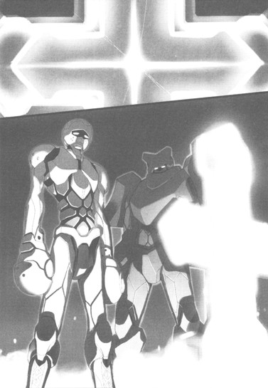

| [川原礫]アクセル・ワールド09 | |
| 川原礫 | |
| (2015) | |
|
アクセル・ワールド９ ─七千年の祈り─
川原 礫
|
底本データ
一頁17行 一行42文字 段組１段
「二重山括弧」は「山括弧」に置換え注略。
「＞」は全角縦中横注略。
アクセル・ワールド９
─七千年の祈り─
「許さない。お前を殺す──バーストポイントが全部なくなって、加速世界から消えるまで、殺し続ける」
再び〈クロム・ディザスター〉となってしまったハルユキは、〈アッシュ・ローラー〉を痛めつけていたアバターたちを鬼神のごとき力で瞬殺する。そして、深部まで完全に〈災禍の鎧〉と融合してしまうのだった。
滅ぼすべき敵を求めて〈加速世界〉を飛翔するシルバー・クロウ。そして彼は、次なるターゲットとして、〈ＩＳＳキット〉とその制作者たる〈加速研究会〉に憎悪の矛先を向けた。
誰も制止不能の狂戦士。そんな彼の前に、一体のアバターが立ちふさがる。
その名は、〈グリーン・グランデ〉。
最強の大盾〈ザ・ストライフ〉を携える絶対防御の〈緑の王〉と、呪われた狂気のアバターが激突する──！
〈災禍の鎧〉編、完結！
川原 礫
気づけは夏が終わっていました。いいんです暑いの苦手だし。海も山も川も行ってないけどいいんです。キャンプもバーベキューも遊園地も（以下略）
イラスト：ＨＩＭＡ
10月３日生まれ。挿絵は今シリーズが初のイラストレーター。『電撃萌王』小冊子への寄稿を見た文庫編集者が、今回の挿絵依頼をオファーしたことがきっかけ。本業仕事の合間を縫って、ブログやＳＮＳサイトなどでイラストを発表している。
〈災禍の鎧〉アビリティ／必殺技リスト
〈体力吸収（ドレイン）〉
攻撃したアバターのＨＰを吸い取り、自身のＨＰにチャージする。〈鎧〉が持つデフォルトアビリティ。
〈未来予測演算〉
敵の攻撃を事前にサーチ／スキャンし、属性・射程・脅威度・攻撃軌道などを視界に表示する。〈鎧〉が持つデフォルトアビリティ。
〈スター・キャスター〉
禍々しい大剣。〈鎧〉が持つデフォルトの強化外装。
〈フラッシュ・ブリンク〉
自身の体を極小の粒子へと変え、瞬時に遠く離れた場所へ擬似テレポートする。初代〈クロム・ディザスター〉である〈クロム・ファルコン〉の必殺技。
〈フレイム・ブリーズ〉
口から火焔を放ち、対象を攻撃する。敵に引火した炎は、鎮火されるまでダメージを与え続ける。二代目〈クロム・ディザスター〉の必殺技。
〈ワイヤー・フック〉
掌から放たれる、極細の鋼線。対象に当たると文字通り〈フック〉となり、その対象を引き寄せることができる。射程も広範囲にわたる。不動のストラクチャー（障害物）に〈フック〉すれば、自身を高速移動させることも可能。五代目〈クロム・ディザスター〉である〈チェリー・ルーク〉のアビリティ。
〈高速飛行〉
背中から生える羽によって、〈加速世界〉唯一の飛行を可能とする。六代目〈クロム・ディザスター〉である〈シルバー・クロウ〉のアビリティ。
〈レーザー・ソード〉
自身の手を鋭い剣のような形状に硬化させ、敵を切り伏せる。威力拡張により、離れた敵にもそのダメージは届く。六代目〈クロム・ディザスター〉である〈シルバー・クロウ〉の心意技。
〈レーザー・ランス〉
自身の手を鋭い槍のような形状に硬化させ、敵を貫く。〈レーザー・ソード〉よりも射程範囲が広い。六代目〈クロム・ディザスター〉である〈シルバー・クロウ〉の心意技。
アクセル・ワールド 09
七千年の祈り
■黒雪姫（クロユキヒメ）＝梅郷中学の副生徒会長。清楚怜悧なお嬢様。その素性は謎に包まれている。学内アバターは自作プログラムの『黒揚羽蝶』。デュエルアバターは〈黒の王〉『ブラック・ロータス』（レベル９）。
■ハルユキ＝有田春雪（アリタ・ハルユキ）。梅郷中学二年生。いじめられっ子で太り気味。ゲームは得意だが、内向的。学内アバターは『ピンクのブタ』。デュエルアバターは『シルバー・クロウ』（レベル５）。
■チユリ＝倉嶋千百合（クラシマ・チユリ）。ハルユキの幼馴染。お節介焼きな元気娘。学内アバターは『銀色の猫』。デュエルアバターは『ライム・ベル』（レベル４）。
■タクム＝黛拓武（マユズミ・タクム）。ハルユキ、チユリとは幼少期からの知り合い。剣道が得意。デュエルアバターは『シアン・パイル』（レベル５）。
■フーコ＝倉崎楓子（クラサキ・フウコ）。旧〈ネガ・ネビュラス〉に所属していたバーストリンカー。〈四元素（エレメンツ）〉の一人。とある事情により隠匿生活をおくっていたが、黒雪姫とハルユキの説得により戦線に復帰する。ハルユキに〈心意〉システムを授けた。デュエルアバターは『スカイ・レイカー』（レベル８）。
■ういうい＝四埜宮謡（シノミヤ・ウタイ）。旧〈ネガ・ネビュラス〉に所属していたバーストリンカー。〈四元素（エレメンツ）〉の一人。松乃木学園初等部四年生。高度な解呪コマンド〈浄化〉を扱えるだけでなく、遠距離攻撃も得意とする。デュエルアバターは『アーダー・メイデン』（レベル７）。
■ニューロリンカー＝脳と量子無線接続し、映像や音声など、あらゆる五感をサポートする携帯端末。
■ブレイン・バースト＝黒雪姫からハルユキに転送されたニューロリンカー内のアプリケーション。
■デュエルアバター＝ブレイン・バースト内で対戦する際に操るプレイヤーの仮想体。
■軍団＝レギオン。複数のデュエルアバターで形成される、占領エリア拡大と利権確保を目的とする集団のこと。主要なレギオンは七つあり、それぞれ〈純色の七王〉がレギオンマスターを担っている。
■通常対戦フィールド＝ブレイン・バーストのノーマルバトル（１対１格闘）を行うフィールドのこと。現実さながらのスペックを持つが、システムはあくまで一昔前の格闘ゲームレベルのもの。
■無制限中立フィールド＝レベル４以上のデュエルアバターのみが許可されるハイ・プレイヤー向けのフィールド。〈通常対戦フィールド〉とは段違いのゲームシステムが構築されており、その自由度は次世代ＶＲＭＭＯにも全くひけを取らない。
■運動命令系＝アバターを制御するために扱うシステム。通常はすべてこのシステムによってアバターは操作される。
■イメージ制御系＝自身が強く想像（イメージ）することによってアバターを操作するシステム。通常の〈運動命令系〉とはメカニズムが大きく異なり、扱えるものはごく少数。〈心意〉システムの要諦。
■心意（インカーネイト）システム＝ブレイン・バースト・プログラムのイメージ制御系に干渉し、ゲームの枠を超えた現象を引き起こす技術。〈事象の上書き（オーバーライド）〉とも言う。
■加速研究会＝謎のバーストリンカー集団。〈ブレイン・バースト〉をただの対戦ゲームとしては考えておらず、何事かを企む。〈ブラック・バイス〉、〈ラスト・ジグソー〉が所属している。
■災禍の鎧＝クロム・ディザスターと呼ばれる強化外装。装着すると、対象アバターのＨＰを吸い取る〈体力吸収（ドレイン）〉や、敵の攻撃を事前に演算・回避する〈未来予測〉など強力なアビリティが使用可能となる。しかしその使用者は、クロム・ディザスターに精神を汚染され、完全に支配される。
■スターキャスター＝クロム・ディザスターが持つ大剣のこと。禍々しい形状をしているが、本来の姿は、その名の通り、星のように輝く厳かな名剣である。
■ＩＳＳキット＝ＩＳモード練習（スタディ）キットの略。ＩＳモードとは〈インカーネイト・システム・モード〉のことで、このキットを使えば、どんなデュエルアバターでも〈心意システム〉が使用可能となる。使用中は、アバターのいずれかの部位に赤い〈眼〉が張り付き、〈心意〉の象徴である〈過剰光（オーバーレイ）〉が、黒いオーラとして放出される。
■〈七の神器（セブン・アークス）〉＝〈加速世界〉に７つある、最強の強化外装群のこと。内訳は、大剣〈ジ・インパルス〉、錫杖〈ザ・テンペスト〉、大盾〈ザ・ストライフ〉、形状不明〈ザ・ルミナリー〉、直刀〈ジ・インフィニティ〉、全身鎧〈ザ・ディスティニー〉、形状不明〈ザ・フラクチュエーティング・ライト〉。
１
殺す。
全員殺す。
その衝動だけが存在した。すでに思考と呼べるようなものではなかった。敵の腕を、脚を、頭を斬り飛ばし、引きちぎり、バラバラの残骸にしてやりたいという渇望が冷たい炎となって有田春雪の全身を駆け巡った。
「グル............」
獣のような低い唸りを漏らし、右手の大剣を握り直す。
デュエルアバター〈シルバー・クロウ〉の、純粋な銀色はすでに消え失せている。代わりに五体を彩るのは、より凶暴な黒みを帯びたクロム・シルバーだ。装甲形状も原形を留めない。細く滑らかだった四肢は、エッジが鋭く立った環状の金属パーツにくまなく覆われている。胴体も同様。だが何より禍々しいのは、本来の丸い頭部を上下から包む、肉食獣のあぎとめいたヘルメットだ。牙を思わせる突起の並ぶバイザーが顔を完全に隠し、元の鏡面シールドは完全に見えない。
それらの装甲は、単なる装備アイテム──対戦格闘ゲーム〈ブレイン・バースト〉で言うところの強化外装ではなかった。
〈七の神器〉、または〈七星外装〉の名で呼ばれる、最強の武具たち。その六番星に列せられる鎧〈ザ・ディスティニー〉が、高位外装である大剣〈スター・キャスター〉と融合し、とあるバーストリンカーの深い怒りと哀しみを受けて形を歪めた。加速世界の黎明期から多くの破壊をもたらし、いっとき討伐されても消滅することなく甦り続けた〈災禍の鎧〉──。すでに神器をも超える力を持つ伝説の強化外装〈ザ・ディザスター〉が、いまシルバー・クロウの全身を隈無く覆っている。
いや、現象は〈召喚〉や〈装着〉の域に留まらない。もはやハルユキが鎧であり、鎧がハルユキだった。ディザスターに宿る破壊の意志は完全にハルユキの意識と一体化し、これまで事あるごとに語りかけてきたあの声ももう聞こえない。
代わりに、ハルユキは、自身の意志によって低く囁いた。
「お前ら......全員、殺してやる」
悪魔めいたシルエットへと変じた両翼をいっぱいに広げてホバリングするハルユキの眼下、現実世界の渋谷エリア・明治通り宮下公園北に相当する〈魔都〉ステージの街路上では、六人のバーストリンカーたちが輪を作って立ち、乱入者を見上げている。
そして彼らの中心には、弱々しく瞬く二つの光があった。
一つが草色。もう一つが灰色。無制限中立フィールドに於いてバーストリンカーが死んだ位置に出現する〈死亡マーカー〉だ。草色は、緑のレギオン〈グレート・ウォール〉に所属する〈ブッシュ・ウータン〉。そして灰色は、彼の兄貴分にしてハルユキの長年のライバル、バイク使い〈アッシュ・ローラー〉──。
二人を取り囲んで何度も嬲り殺しにした六人のうち五人は、ほぼ初めて見る顔だった。だが一人だけ、つい数分前にアッシュに止めを刺したアバターには見覚えがあった。
細身の中背だが、両手にボリューム感がある。装甲色は茶色がかった暗い緑。名を〈オリーブ・グラブ〉、ほんの数日前までブッシュ・ウータンとコンビを組んでいた緑のレギオンの中堅メンバーだ。当然アッシュとも面識があった、いや友人と言っていい間柄だったはずだ。
なのに彼は、一切の躊躇いなく、感情らしい感情も見せずにアッシュの心臓を貫いた。バーストポイントを全て奪い尽くし、アッシュ・ローラーを加速世界から永遠に消し去ろうとしたのだ。
フェイスマスクに少々の訝しさだけを滲ませてハルユキを見上げるオリーブ・グラブや、他の五人の胸には、一様に奇妙な眼球めいた生物型オブジェクトが装着されている。
装着者に、システム外の超攻撃力〈心意システム〉を操る力を与える代わりに負の感情をも増幅させ、生身の人格すら歪めてしまう闇の寄生体〈ＩＳＳキット〉。六人とも現在キットの支配下にあり、それゆえにオリーブの先輩たるアッシュ・ローラーや、同じくキット装着者であったブッシュ・ウータンへの攻撃を躊躇わなかったのだろう。
しかし、そんな事情は、もうハルユキにはどうでもいいことだった。
アッシュ・ローラーは、あくまで他レギオンに所属する、いわば敵だ。〈親〉こそネガ・ネビュラスの副長スカイ・レイカーだが、現実世界では彼と会ったことは一度もない。
でも──。
アッシュは、ハルユキがバーストリンカーとして初めて戦い、初めて負け、そして初めて勝った相手なのだ。
どんな時でもブレイン・バーストをひとつの対戦ゲームとして楽しもうとするアッシュは、いつしかハルユキにとってある種の〈拠所〉にも等しい存在となっていた。苦しい時、迷った時、彼はその陽性極まる戦闘スタイルと、そしてアメリカンバイクの豪快な排気音でハルユキをバーストリンカーとしての本道に立ち返らせてくれた。彼との〈対戦〉はいつだってひたすらに熱く、そして楽しかった。
そのアッシュを、多勢と心意攻撃力による圧倒的優位でいたぶり殺した六人を、ハルユキはただただ憎んだ。その憎しみと怒りが、せっかく種子状態にまで還元されていた〈災禍の鎧〉を甦らせ、ハルユキを対戦者の本道とは正反対の道へと突き進ませているというのは大いなる矛盾だったが、それを意識することももうできなかった。
空中に漆黒のスパークを散らしながら、ハルユキは鋭利に尖った大剣を高々と振りかぶった。
そのモーションを敵性行動と判断したのだろう。地上のオリーブ・グラブ以下六人が、一糸乱れぬ動作で右手を掲げ、ハルユキへと向けた。
大小様々な掌を、まるで同じ色合いのどす黒い過剰光が包む。粘液のように滴る闇はたちまち密度を増し、秘められた恐るべき威力を示して周囲の空間を歪ませる。
同時に、ハルユキの視界を包む灰色の追加レイヤーを、小さな英字フォントが高速で横切った。意味するところは──〈攻撃予測／心意攻撃射程・威力拡張／虚無エネルギー系脅威度／10〉。
六つの掌から、薄赤い透明なラインが音もなく伸びた。それは、攻撃の実体ではない。〈鎧〉が、蓄積された膨大な戦闘経験から攻撃の軌道を予測演算し、ハルユキの視界に表示しているのだ。
自分の胸を照準する、何の工夫もない直線的遠距離攻撃を、回避することは容易かった。
しかしハルユキはその場から一ミリたりとも動こうとせず、代わりに大剣を握る右手に少しだけ力を込めた。刃を包む漆黒のオーラが激しく揺らめく。地上の六人が身に纏うオーラと色合いは似ているが、彼らのものが〈粘液〉だとすれば、ハルユキのそれは〈炎〉だ。荒れ狂う憤怒と、研ぎ澄まされた殺意が重なりあう、絶対零度の炎。
地上のバーストリンカーたちが、掲げた右手の五指を一瞬たわめ、再びいっぱいに開いた。異口同音に技名をコールする。
「ダーク・ショット！」
ＩＳＳキットが装着者に授ける、二つの基本心意技のひとつ。三日前、ブッシュ・ウータンの右手から放たれシルバー・クロウの片翼を紙のように引きちぎったものと同じ暗黒のビームが六本、怪物の絶叫じみた共鳴音を振り撒きつつ迫る。
いかなるデュエルアバターであろうとも瞬時に消滅させ得るだけの威力を秘めた多重攻撃を、ハルユキは限界まで引きつけ、軌道が一点で交差した瞬間──大剣〈スター・キャスター〉を無造作に一薙ぎした。
燃え盛る暗黒の炎は、闇のビームが刀身に触れることすら許さなかった。同属性の心意攻撃が衝突した時特有の、空間そのものがひび割れるが如き衝撃音を轟かせ、六本のビームはハルユキから見て右下方向へと全て叩き落とされた。〈魔都〉ステージの強固極まる地形オブジェクトに穿たれた深い穴から、黒い爆炎が噴き上がる。
だがその現象には眼もくれず、ハルユキはひび割れた声で呟いた。
「......温い」
所詮──お仕着せの心意技。機械的に事象の上書きを引き起こすことはできても、芯は虚ろだ。昨日の夕方、同じくＩＳＳキットに支配されかかったタクムが放った〈ライトニング・ダーク・スパイク〉と比べるまでもなく軽い。技に感情がこもっていない。
オリーブ・グラブたちの中に存在するのは、ただの〈餓え〉だけだ。ひたすらにバーストポイントを求める空疎な衝動。誰かから貰ったお手軽な力で、リスクなき勝利を貪ろうという醜悪な欲望。
そんな奴らが、そんな力で、アッシュ・ローラーを散々にいたぶり殺したのだ。〈格闘ゲーマー〉の矜持によって心意システムを遠ざけ、あくまで一対戦者であろうとし続けていた彼を六人で取り囲み、何度も、何度も、何度も何度も殺した。
いや、それだけではない。アッシュと一緒にいた彼の弟分、本来仲間であるはずのブッシュ・ウータンをも彼らは狩った。六人の近くで寄り添うように瞬く二つの死亡マーカーがその証だ。何事もなければ、アッシュとウータンは、遥か北東に離れた千代田エリアでハルユキたちと合流しているはずだったのに──。
今日、二〇四七年六月二十日午後七時、レギオン〈ネガ・ネビュラス〉のメンバー六人は、無制限中立フィールドの中央に屹立する〈帝城〉の深部に囚われてしまったハルユキ／シルバー・クロウと四埜宮謡／アーダー・メイデンの〈脱出作戦〉を決行した。
ハルユキと謡は、帝城内部で出会った謎のバーストリンカー〈トリリード・テトラオキサイド〉の協力を得て、南門から離脱。黒雪姫・楓子・タクム・チユリの四人は、タイミングを合わせて南門の守護者たる超級エネミー〈四神スザク〉を牽制し、ハルユキたちの離脱を援護する作戦だった。
実際には、スザクが予想より早く湧出してしまったために、ハルユキと謡は一直線の脱出はできなかった。あわや火焔ブレスに焼き尽くされるところを、黒雪姫と楓子が決死の覚悟で飛び込んできてスザクのターゲットを引き受けてくれたのだ。しかし、そのままではレギオンのマスターとサブマスター双方が四神のテリトリー深部で死亡、〈無限ＥＫ〉状態へと移行してしまうという最悪の結末を迎える。気を失った謡をタクムとチユリに託したハルユキは、百八十度ターンして敬愛する二人を助けに戻った。
両腕で黒雪姫と楓子を抱え、残された唯一の脱出路たる垂直方向に飛んだのだが、スザクはどこまでも追ってきた。飛行アビリティのエネルギー源である必殺技ゲージが枯渇したハルユキは、新たなる心意技〈光速翼〉を発現させて成層圏を駆け抜け、星の世界にまで達した。
空気がなくては飛べないハルユキとスザクはそこで停滞したのだが、ブースター型強化外装〈ゲイルスラスター〉を持つ楓子が背中に黒雪姫を乗せて突進し、黒の王の凄絶なる心意技〈星光連流撃〉によってついにスザクを撃破。〈四神相関〉の治癒能力によって止めを刺すまでには至らなかったものの、ハルユキと黒雪姫、楓子はスザクのテリトリーから生還した。
六人はかたく抱き合い、作戦の成功を喜び合った──のだが、予定ではそこにあるべきアッシュ・ローラーの姿がなかった。彼が合流予定地点に現れなかったと聞いたハルユキは、言い難い胸騒ぎを覚えて単身で捜索に飛び、そして発見、いや目撃したのだ。
アッシュが、オリーブ・グラブによって惨殺される、まさにその瞬間を。
本来は敵対関係にある緑のレギオン〈グレート・ウォール〉に所属するアッシュが、ネガ・ネビュラスの面々と、しかも危険な無制限中立フィールドで合流することになったそもそもの理由は、彼が己の信念を枉げて心意システムの手ほどきを求めたからだ。
アッシュは、今朝の登校前に行った対戦のあと、ハルユキに語った。心意技を身につけて、無制限フィールドで何でもありのバトルをしたいわけじゃない。弟分のブッシュ・ウータンの目を醒まさせるための、たった一撃が放てればそれでいいんだ、と。
そんな彼が合流ポイントに姿を現さなかったのは、待機中に一般対戦フィールドでウータンと遭遇したからに違いない。アッシュはこの機を逃すまいと、ウータンに無制限フィールドまで同行するよう説得、あるいは懇願した。
そしてウータンは、恐らくアッシュの説得を──必死の言葉を受け入れたのだ。自分に取り憑くＩＳＳキットを捨て、もう一度バーストリンカーの本道に立ち返ると決意した。二人はこの無制限中立フィールドで待ち合わせ、ハルユキたちネガ・ネビュラスの〈帝城脱出作戦〉が終了し次第、改めて合流する予定だったに違いない。
しかし、オリーブ・グラブたち六人が、アッシュとウータンの動向を察知し、待ち伏せて襲った。
二人のどちらが先に死んだのかは解らない。だが、ハルユキがこの場所に到着した時、アッシュはウータンの死亡マーカーを自らの体で抱え込むようにして守っていた。マーカーはその名の通り単なる目印に過ぎないので、アッシュの行為に実際的な意味はないのだが、しかし彼はそうせずにいられなかったのだろう。
二人の死に時間差があったとすれば、当然、六十分後の蘇生にもタイムラグが出る。一方が生き返っても、もう一方はまだ死んだまま。二人はきっと、兄弟と慕う相手が惨たらしく殺されるシーンを、無力な〈幽霊状態〉で繰り返し見せつけられてきたのだ。
「............るさない」
ハルユキの口から、再び嗄れた声が零れた。
「許さない。殺す。お前らみんな殺す。バーストポイントが全部なくなって、加速世界から消えるまで、殺し続ける」
全身を駆け巡る絶対零度の劫火は、無限に内圧を高めつつ、解き放たれる瞬間を待ちわびている。怒りも憎しみもその炎に融け、青白く燃えるひとつの意志へと収斂されていく。
「......それが、お前らの望みなんだろう？ 争い合い、殺し合うのが。その果てに、自分自身と、この世界さえも消し去ってしまうのが。──なら、叶えてやる。オレが、お前らを消してやる」
凶悪な形状のバイザーから漏れるその声は、もう半ば以上ハルユキの声色ではなかった。野獣の猛々しさと鋼の冷徹さを備えた何者かの声が、強く共鳴している。
──いや、それだけではない。どこか遠く......ずっと深くで、かすかに響くもうひとつの声。嘆き、哀しみながらも、懸命に語りかけようとする誰かの声が............
しかし、その言葉がハルユキの意識に届く前に、眼下の六人が再び右手を持ち上げた。
六発同時の心意攻撃を剣の一振りで弾かれたというのに、さしたる動揺の気配もない。余裕がある、というよりも、感情そのものが摩滅しかけているようにも見える。
代わりに、彼らの胸に寄生するＩＳＳキットたちが、深紅の眼球にしたたるような憎しみを湛えてハルユキを睨んだ。六本の腕に、粘液質のオーラが濃くまとわりつく。それらは掌へと凝集し、先刻を上回る威力を予感させる黒いスパークを細く空中に這わせる。
ハルユキの視界に、再び攻撃の属性情報と予測軌道が表示された。同じ遠距離心意攻撃だが、軌道が異なる。クリアレッドのラインは、半ばで色合いを薄れさせながら広がり、ハルユキの周りの空間を球状に包んでいる。これはつまり──。
「ダーク・ショット!!」
まるで一人が六個の口を同時に動かしたかのように、完璧に揃った技名コール。掌から発射された漆黒のビームが、細かい飛沫を散らしながら迫る。しかし軌道は、先刻の攻撃と異なり直線ではない。空中で不規則にうねりながら、それでいて明確にハルユキを目指して殺到してくる。
「............」
ハルユキは無言で背中の金属翼を広げると、一気に右方向へと飛翔した。途端、ビーム群もぐうっと急角度に曲がって追随してくる。やはり〈ホーミング攻撃〉だ。最後まで軌道が重なる瞬間がないので、さっきのように、一度の斬撃による防御は不可能。一発を剣で弾いても、残り五発を全身に浴びるだろう。四神スザクとの戦闘で減少した体力ゲージは〈鎧〉の召喚時に全快しているため即死は有り得ないが、ある程度のダメージは受けるはずだ。
大きく左に捻り込むように飛ぶハルユキを、黒いビーム群は深淵じみた餓えを放射しながら追ってくる。どれほど高速移動しても、ホーミングビームの軌道が一本に撚られることはないようだ。フルスピードでどこまでも直線飛行すれば振り切れるかもしれないが、それは逃走と変わりない。
ここで逃げるつもりは毛頭なかった。代わりに、ハルユキは翼を広げて急制動をかけ、空中でホバリングすると振り向いた。
六本のビームが、複雑に絡み合いながら肉迫する。地上の六人が、ハルユキの停止を諦めと取ったか、薄く笑いを滲ませる。彼らに呼応するように──ハルユキもまた、ぶ厚いバイザーの下で冷笑した。
右手に剣を握ったまま、両腕を胸の前で組む。傲然と胸を反らし、迫る漆黒の心意弾を凝視する。高度約三十メートルに静止したまま、ビームを引きつけ......更に引きつけ。
全身に直撃を浴びるその寸前、小さく囁いた。
「フラッシュ・ブリンク」
ぶんっ！ という一瞬の振動音だけを残し、シルバー・クロウ、いや六代目クロム・ディザスターの姿がかき消えた。ビーム群はロックオン対象を見失い、数秒間もぐるぐると迷走してから、あるものはそのまま空中で、あるものは地上の建造物に突き刺さって、どす黒い爆炎を噴き上げた。
その時にはもう、ハルユキは、地上に立つ六人のＩＳＳキット装着者のほとんど隣と言っていい近距離で、黒銀の光芒を振り撒いて実体化していた。
〈フラッシュ・ブリンク〉。それは、加速世界に災禍の鎧を生み出した──正確には〈七の神器〉の六番星〈ザ・ディスティニー〉を、怒りと絶望によって呪いの強化外装〈ザ・ディザスター〉へと歪めた古のバーストリンカーが身につけていた必殺技だ。己が体を極小の粒子へと変え、瞬時に遠く離れた場所へと疑似テレポートする。
ハルユキは、そのバーストリンカーの名前すら知らない。帝城内で見た奇妙な夢が、遠い過去の出来事を断片的な記憶の欠片として残していっただけだ。〈彼〉がどんな姿をしていたのか、どんな技を使ったのかなど覚えているはずもない。
なのに〈解った〉、いや〈知っていた〉のだ。いまの自分には、その力が使えるのだと。
いきなり至近距離に出現したハルユキを、キット装着者の一人──くすんだ褐色の装甲と、指先が全て銃口になった左手を持つデュエルアバターは、さすがに驚いた表情で眺めた。
「............ダ......」
技名をコールしながら、右手を突き出そうとする。
しかしその手は、ハルユキを照準できずにそのまま真上を向き、可動範囲を無視して更に後ろへと回転した。少し遅れて、肩のつけ根を黒ずんだ銀色のラインが走る。腕はその線で呆気なく胴体から離れ、ガシャンと騒々しい音を放って魔都ステージの地面に転がった。
ハルユキが、右手の大剣を超高速で抜き打ち、敵の腕を断ったのだ。
先刻の〈フラッシュ・ブリンク〉といい、本来ならば使えるはずのない技術だ。ハルユキはタクム──シアン・パイルと違い現実世界で剣道を学んだこともないし、加速世界ではずっと素手での格闘戦を専門にしていた。剣型強化外装の振り方はおろか、握り方すら知らない。
だが、自分に何が起きているのかなど、ハルユキにはもうどうでもよかった。ただ、眼前の〈敵〉どもをばらばらに切り刻み、この世界から消し去りたいという強烈な衝動だけが意識を満たしていた。
暗い褐色のアバターは、地面に転がる自分の右手をしばらく眺めたあと、ついにフェイスマスクをそこはかとない怯えに歪ませた。
「なんだよ、お前......なんなんだよ、その力は............」
ゴーグル状の丸いレンズが嵌るマスクから、そんな声が漏れる。ようやく受傷の痛みが追いついてきたらしく、左手が右肩の傷口をぎゅっと押さえる。装着者の動揺と苦痛を映してか、胸の眼球──ＩＳＳキットの光までも不規則に揺らぐ。
だがその時、後方に立つ他の五人のキットが、ごくわずかな時間差をつけて赤々と輝いた。エネルギーが伝播したかのように、褐色アバターの胸のキットも強烈な眼光を取り戻す。どうやら彼ら六人は、タクムの言葉にあった〈同一集団〉に属する者たちだ。ＩＳＳキットがリンクしているということは、複製体として遺伝的に近い、つまり〈親子〉や〈兄弟〉だということ。とはいえ彼らを繋ぐのは単なる一時的な利害の一致であって、それは〈絆〉と呼べるようなものではない。同じ集団の一員であるはずのブッシュ・ウータンまでをも容赦なく狩ったのがその証だ。
────絆............。
その言葉を思い浮かべた途端、ハルユキの深いところが鋭く疼いた。
凍てついた暗闇に、仄かな陽光がひと筋射し込むような感覚。誰かの声が、ずっとずっと遠くでこだまする。
────もいだして......あなたにも......いせつな絆が......るはず............！
しかし直後、再び噴き上がった圧倒的な怒りが光と声を遠ざけた。青白く燃えるブリザードが荒れ狂う感覚に身を浸しながら、ハルユキは眼前の褐色アバターに囁きかけた。
「いまここで消えるお前等に......名乗る意味なんかない」
「............調子に......乗るなよ......」
レンズの奥の両眼が、赤く底光りした。胸のＩＳＳキットも、他の五人のキットと同期して心臓のように脈打っている。通常対戦フィールドの二倍に拡張されているはずの痛みも、もう感じていないらしい。
褐色アバターは、傷口から離した左手で小さく合図した。途端、五人が素早く動き、ハルユキを取り囲む。どうやら褐色が彼らのリーダーのようだが、片腕を失った今、戦力的な主軸は他の誰かに変わったはずだ。次の一撃でそいつを潰すと機械的に判断し、ハルユキは体を回転させようとした。
だが、不意にがくんと足が停まる。見下ろすと、いつの間にか足許はてらてらと光る緑色の液体に浸されており、そこから二本の手が伸びてハルユキの両足首をしっかりと掴んでいる。
まるで〈墓地〉ステージの地形効果〈移動阻害〉だが、これは違う。手を生み出している液体は、左側に立つ一人のデュエルアバターの両腕が溶けて流れたものだ。細身のアバターは、ハルユキと眼が合うと、シンプルな楕円形のマスクをニヤリと笑わせた。オリーブ・グラブ──。
ハルユキは、右手に下げた大剣の切っ先で、自分の足を鷲掴みする手を無造作に突いた。だが鋭い金属はとぷんと抵抗なく沈むだけで、ダメージを与えられた様子はない。どうやらこの状態では、対象を凄まじい握力で捉えつつも物理攻撃は無効化するようだ。事前に攻撃予測表示が出なかったのは、視線を褐色アバターにのみ集中していたせいか。
捕縛されたハルユキを、残り五人は等間隔に取り囲むと、きっちり揃った動きで左腕を持ち上げた。固く握られた拳を、どす黒い粘液質のオーラがぶ厚く覆う。
「クク......お前のポイントも、一点残らず絞り取ってやるよ」
褐色が、軋るような声で言った。
今度こそ、視界を文字列が横切る。〈攻撃予測／心意攻撃威力拡張／虚無エネルギー系脅威度／30〉。同時に表示された赤い軌道予測ラインは、五方向からハルユキをまっすぐ突き刺している。
左拳を高々と振りかぶった五人は、いっせいに前ダッシュしながら異口同音に叫んだ。
「〈ダーク・ブロウ〉!!」
闇をまとったストレート・パンチが、仮想の大気を焼き焦がして放たれた。いかに〈鎧〉の防御力が高いと言っても、威力拡張型の心意技を五発同時に直撃されれば相当のダメージを受けるだろう。しかしハルユキは、迫る拳を冷ややかに見詰めた。心意によって強化されているのは攻撃力だけで、パンチのスピードは初心者に毛の生えた程度のものだ。赤系スナイパーのライフル弾を避けるための特訓を積んできたハルユキにとっては、欠伸が出そうなほど遅い。今度も、たっぷりと引きつけ──双方のオーラが接触する寸前、バイザーの下で呟く。
────フラッシュ・ブリンク。
低い振動音だけを残し、黒銀のアバターはその場からかき消える。ハルユキの両足を掴んでいたオリーブ・グラブの拳が、むなしく空気を握り潰す。
直立した姿勢のまま後方に三メートルほど短距離テレポートし、再実体化。眼前で、標的を見失った五つの拳が、もはや引き戻すことも叶わずに思い切り激突した。
天地を引き裂くような衝撃音。漆黒の爆炎が吹き荒れ、視界を一瞬覆い隠す。押し寄せる高密度のエネルギー流を、しかしハルユキはわずかに顔をそむけただけでやり過ごした。
すぐに回復した視界に映し出されたのは、地面に転がり低く呻く五人のデュエルアバターだった。全員の左腕が、肩口からごっそり消滅している。傷口は引きちぎられたかのような有様で、痛みは鋭い刃で斬られた時とは比較にならないだろう。
「............そん............な」
呆然と声を上げるオリーブ・グラブには眼もくれずに、ハルユキは数歩移動すると、倒れている一人の胸を右足で踏み付けた。赤褐色の装甲を持つ、六人のリーダー格。しかし、両腕が部位欠損したいま、〈ダーク・ショット〉も〈ダーク・ブロウ〉ももはや使えない。
声も出せずに両眼のレンズだけを明滅させる相手へと、ハルユキは低く囁きかけた。
「同じ手を、二度喰らうなよ」
日を改めての再戦ならばまだしも、一度の対戦中に同じ戦術──この場合は〈フラッシュ・ブリンク〉による直前回避──に二回も引っかかるなど愚の骨頂だ。これまでハルユキが鎬を削ってきたライバルたちなら、最初のビーム回避を見ただけで技の性質と能力を把握し、即座に対応してきただろう。もちろん、アッシュ・ローラーも。
手軽に得た力に溺れ、対戦のイロハも忘れたような奴らに、数を恃みに狩られたアッシュはさぞ無念だったに違いない。そう考えた途端、再び胸がずきんと疼くが、そんな感覚すらもすぐに無明の怒りへと置き換わってしまう。
すぐ近くで、蘇生時間待ちの〈幽霊状態〉に置かれているアッシュ・ローラーの眼に、自分がどう映っているかを考えもせず、ハルユキは鋭い鉤爪を備えた右足に力を込めた。
足裏で、褐色アバターの胸に寄生するＩＳＳキットが激しく脈打つ感覚。同時に、アバターの口から、今度こそ明瞭な悲鳴が迸る。
「ぐあっ......ガ......ハッ............」
失った両腕で地面を掻こうとするかのようにじたばたともがくが、〈鎧〉が持つナイフ状の鉤爪は装甲に深く食い込んで外れない。ついに角張った装甲が放射状にひび割れ、鮮紅色のライトエフェクトが空中にしぶく。
怒りに駆られ、残虐な手段で敵の体力ゲージを削りつつも、ハルユキは意識の一部で、独立したプロセッサのようにデジタルな思考を巡らせた。
この状況で、ＩＳＳキットを選択的に破壊することは可能だろうか？もし壊せれば、その時何かが起きるだろうか？
先に見たとおり、ＩＳＳキットは不可視の〈回路〉により相互リンクしている。だがその接続は、端末であるキット同士が直接繋がる〈ピアツーピア型〉ではなく、中央集権的な〈クライアントサーバー型〉だ。キットが破壊された瞬間、何らかの信号のようなものが、加速世界のどこかに存在する〈キット本体〉に送信される──というようなこともあり得るのではないか。
足裏でＩＳＳキットの脈動を感じながら、ハルユキは容赦なく右足を踏み込んだ。
「グハアァッ......や、やめ......グ......アアアアアッ!!」
耳障りな悲鳴と、デュエルアバターの胴体が粉々に割れ砕ける異様なサウンドが同時に響いた。ハルユキの足の左右で、上半身と下半身に分断されたアバターは最後の絶叫を迸らせようとしたが、一瞬早く体力ゲージがゼロになったか、全身から朱色の光を放ちながら細かい欠片へと爆散した。
あまりにも酷いやり方で屠った相手の〈死〉を、ハルユキは冷ややかに観察した。シルバー・クロウの右足は、確かに褐色アバターのＩＳＳキットを踏み抜いたはずだ。だが、消滅エフェクトや必殺技ゲージの加算量から見て、強化外装の破壊現象は起きなかったと思われる。
つまり、通常の物理攻撃では、たとえＩＳＳキットをピンポイントで攻撃しても減少するのは相手の体力ゲージだけで、キットそのものは破壊できないということだ。
無機質な思考を巡らせるハルユキの右側で、左腕を吹き飛ばされた敵の一人が、ようやく立ち上がりながら短く叫んだ。
「......いったん引くぞ！ 〈ココア・クラッカー〉は捨てていく！」
ココア・クラッカーというのが、ハルユキに踏み殺された褐色アバターの名前だろう。リーダーを捨てる、などとあっさり口にするのがいかにも急造集団らしい。ハルユキの正面で立ち尽くしたままのオリーブ・グラブを除く四人は、頷き交わすやいっせいに南へと走り始めた。
明治通りの先にある渋谷駅の離脱ポイントから脱出するつもりか。動かないオリーブは、視線の向きからして、アビリティを再使用するためのゲージが貯まるのを待っているようだ。
全速力で走り去っていく四人を、ハルユキは立ったまま眺めた。しかし見逃すつもりは毛頭ない。握っていた剣を近くの地面に突き立て、空いた右手を左手と同時に持ち上げる。鋭い五指をいっぱいに開き、逃げる四人のうち両サイドの二人を掌で照準。素早く手首を返す。
キシュッ、というようなかすかな圧縮音を伴って、銀色の小さな光が掌の下部から放たれた。
空中にきらきらと銀色の尾を引きながら、数十メートル先を疾駆する二人を銃弾じみたスピードで追う。たちまち追いつき、背中の装甲に見事命中。乾いた金属音が軽く響いたものの、逃げる二人はふらつきすらせずにそのまま走り続ける。ダメージはまるで受けていないようだ。だが──。
ハルユキが小さく腕を引くと、重い抵抗感が生まれると同時に、彼方の二人の足取りが乱れた。たたらを踏み、それでも懸命に地面を蹴ろうとするが、体は前に進まない。やがて後ろに傾き、足底が路面から離れ、高い喚き声を上げながら空中を一直線に飛んでくる。正確には、ハルユキの両掌から放たれた極細の鋼線によって有無を言わさず引っ張られているのだ。災禍の鎧に秘められたアビリティ、〈ワイヤー・フック〉の力だ。
あっという間に元の場所まで引きずり戻された二人の背中に、ハルユキは両手の鉤爪を根元まで突き刺して固定すると、そのまま高々と持ち上げた。
「お......下ろせっ............！」
「嘘だっ、ＩＳモードも使わないで、どうしてこんなパワーがっ......！」
ピンに刺された昆虫めいた動きで暴れる二人の声は、ハルユキにとってはもう耳障りなノイズでしかなかった。両手にイメージを集中し、抑揚薄く発声。
「〈レーザー・ソード〉」
ズシュウゥゥッ!! と重々しい振動音が地面を揺らす。〈災禍の鎧〉をまとったシルバー・クロウの両手から、心意の刃が長々と伸び、捕らえた獲物たちを貫く。しかしその剣は、本来の白銀ではなく、宇宙の深淵を思わせる漆黒の過剰光に染まっている。
クリティカル・ポイントである心臓──どころか胸郭全体にごっそり大穴を開けられた二人のデュエルアバターは、凄まじい攻撃力の余波によって宙に一メートル以上も浮き上がり、そこで砕けた。
二色の死亡エフェクトを黒銀の装甲で反射しながら、ハルユキは両手を下ろした。バイザーごしに見据える先では、残る二人の敵がいっそうのスピードを絞り出して離脱していく。距離はもう百メートルを超えよう。
もちろん、背中の翼を使えば容易く捕捉できる。しかしハルユキは、代わりに地面から大剣を抜くと、腰を落とし、右肩の上で刀身をいっぱいに引き絞った。
鋭利な剣尖で、二人を精密に照準する。シルエットはもう豆粒以下だが、〈鎧〉が視界に重ねた追加レイヤーの効果か、解像感はまるで衰えない。冷静にタイミングを計り、前後して走る二人の体がひとつに重なりかけた、その瞬間。
「〈レーザー・ランス〉」
技名コールと同時に右手の剣を思い切り前へと突き込む。刀身を取り巻いていた闇のオーラが、そのまま鋭い槍へと変じて宙を駆ける。この技の原形となった黒の王ブラック・ロータスの心意技〈奪命撃〉とほとんど同一と言ってもいいほどの攻撃モーションだったが、それを意識することもなくハルユキは細めた両眼で技の結果を見守った。
明治通りの遥か彼方、宮益坂の下へと姿を消しつつあった敵二人の背中を、心意の槍は容赦なく串刺しにした。今度もまた、体の真ん中に大穴を開けられたアバターたちは、まるで自分に何が起きたのかを気付いていないかのようにそのまま数歩走り、やがてよろけ、かすかな破砕音と消滅光を届けて身を散らした。
ゆっくりと引き戻した剣を肩の上に担ぐようにして、ハルユキは最後に残った一人──液化能力者オリーブ・グラブを見やった。
彼と対峙するのは初めてではない。三日前の月曜日の放課後、〈劫火の巫女〉アーダー・メイデンと共に杉並エリアでタッグ対戦をしたおり、彼女が相手に選んだのが、偶然マッチングリストにいたブッシュ・ウータンとオリーブ・グラブのコンビだったのだ。
あの時、ハルユキはＩＳＳキットを起動したウータンに手も足も出なかったが、メイデンは同じく闇の心意を操ったはずのオリーブを完全なるノーダメージで退けた。もちろん、元ネガ・ネビュラス〈四元素〉たる彼女の実力もあろうが、恐らくそれだけではない。きっと、何か圧倒的な〈相性の差〉が存在したはずだ。
一切の感情を交えず、冷徹な思考のみを展開するハルユキのすぐ近くで、オリーブは相変わらず逃げるでもなく立ち続けている。余裕があるのではない。ハルユキのことを伝説の破壊者〈クロム・ディザスター〉だと認識しているのかどうかは定かでないが、仲間五人を秒殺した圧倒的戦闘力に竦み上がっているのだ。その証に、濡れたようなオリーブグリーンに光る全身は小刻みに震えている。
「早く............早くっ............」
口許から零れる掠れ声は、自分の必殺技ゲージに向けられたものだ。ゆるゆると動作を再開したハルユキと、リチャージ中であろうゲージとの間を、視線が何度も往復する。
シルバー・クロウの肩から下ろされた大剣が、ざりっと地面を擦ったのとほぼ同時に、オリーブは叫んだ。
「〈リピッド・リキッド〉!!」
半ば裏返った技名発声。細い長身が、どぷん、と音を立てて一気に溶け崩れた。アバターは完全に形を失い、地面に広がるオリーブ色の大きな水たまりへと変化。この状態なら、あらゆる純物理攻撃を無効化するだろう。
しかも移動力は残っているらしく、水たまりはまるでファンタジー系ゲームによく出てくる〈スライム〉のような動きで、道路の左右に並ぶ建物の一つへと突進していく。〈魔都〉ステージの込み入った地形に逃げ込まれたら再発見は困難だ。
だが今度も、ハルユキはオリーブを見逃すために必殺技を使わせたのではなかった。
緑褐色の水たまりは、真ん中がぽこんと盛り上がっている。よく見ると、その内部には黒い球体が包み込まれている。ＩＳＳキット。さしもの液化能力も、強化外装扱いのキットまでは液体に変えられなかったのだ。
そしてこの状況こそ、ハルユキが意図的に導いたものだった。
ぬるぬると遠ざかる水たまりを凝視しながら、ハルユキは大きく息を吸い込んだ。すぐに、肺の中がチリチリ弾けるような感覚が訪れる。たっぷりと溜め──思い切り吐き出す。
凶悪なヘルメットの口許から放たれたのは、単なる空気ではなく、赤々と燃え盛る火焔だった。アビリティ、〈フレイム・ブリーズ〉。
何かを感じたのか、水たまりは懸命な動きで建物を目指す。しかし、大気を焼き焦がしながら放射状に放たれた炎から逃れるすべはなかった。火焔の息が触れた瞬間、水たまりはごうっと音を立て、瞬時に燃え上がった。
ブレスはすぐに拡散して消えたが、水たまりを包む炎は消えない。まるでそれ自体が可燃性の物質ででもあるかのように──、いや、事実そのとおりなのだ。オリーブ・グラブが我が身を変じさせた液体は、水ではなく〈油〉。アーダー・メイデンに完封勝ちされたのは、〈炎〉との相性がとてつもなく悪いからだ。
液体となっても、体感覚は消えないのだろう。激しく燃える油の塊は、右へ左へと滅茶苦茶に跳ね回っている。ハルユキはこの無制限中立フィールドで、何度か〈四神スザク〉の火焔ブレスを浴びかけたが、熱感は余りにもリアルだった。あの感覚を継続的に味わっているのなら、その苦痛は耐え難いものだろう。
だが、今のハルユキには、〈敵〉の苦しみなどどうでもいいことだった。ついにもがく気力すら尽きたのか、動かなくなった水たまり改め油だまりに歩み寄り、ハルユキは無造作に手を伸ばした。
燃える塊の中に鋭い五指を突っ込み、直径五センチほどの球体を探り当てると、しっかりと握る。ぶちぶち、と無数の繊維がちぎれるような嫌な感触を味わいながら引きずり出したのは、赤い眼球をほぼ瞼に隠した──ＩＳＳキット。
無制限中立フィールドでは、強化外装の扱いが通常対戦フィールドと少し異なる。
まず、一度破壊されると、たとえ所有者が死亡・蘇生しても外装アイテムは復活しない。再び使うためには、一度離脱ポイントからフィールドを出て再度入り直す必要がある。
そしてまた、アイテムの種類にもよるが、本来の所有者が生きている間なら〈一時的に奪う〉ことも可能だ。奪うには、落とした所を先に拾う、あるいは装着部位を切断する必要がある。いまハルユキが試みたのは後者だ。全身を液体化させたオリーブ・グラブを火焔ブレスで無力化し、ＨＰゲージが尽きる前にキットを引きちぎる。これで、システム的な所有権はオリーブのままだが、使用権はハルユキに移ったことになる。
だがもちろん、自分に装着しようなどというつもりは毛頭ない。
狙ったのは、その逆。
キットを装着したデュエルアバターを攻撃しても、先に装着者の体力ゲージがゼロになってキットそのものは破壊できないことは先に確認済みだ。ならば、まずアバターとキットを分離し、しかるのちにキットそのものを〈攻撃〉する。
バイザーの下で獰猛な笑みを浮かべ、ハルユキは右手に力を込めた。
ナイフのように尖った爪が、眼球のビニールめいた表面に食い込む。途端、ばちっと瞼が見開かれ、真っ赤な瞳孔が小刻みに震える。
眼球の後部から力なく垂れ下がっていた血管状組織が蠢き、寄り集まってドリル状に尖ると、ハルユキの右腕の装甲を突き刺そうとした。本来の主を見限り、ハルユキに寄生して支配しようとでもいうのか。昨夕のタクムとの対戦でも似たようなことが起きた。あの時は、キットの血管はシルバー・クロウの胸を容易く貫いた──のだが、しかし〈災禍の鎧〉のぶ厚い装甲は、ドリルを完璧に跳ね返した。
「............無駄だよ」
低く囁きかけ、ハルユキは右手にありったけの力を込めた。
ばちゅん！ というおぞましい破裂音、そして異様な金属質の断末魔を響かせ、ＩＳＳキットは粉々の組織片となって砕け散った。
無制限フィールドでＩＳＳキットを破壊すれば、きっと何かが起きるはず。
その予測は裏切られなかった。右手から、ひと筋の赤い光が空へと舞いしがり、遥か高みで九十度方向を変えて飛行し始めたのだ。光は余りにも希薄で、ザ・ディザスターが視覚を強化してくれていなければ存在そのものにすら気づけなかったかもしれない。
すぐ傍らで、ようやく体力ゲージが尽きたオリーブ・グラブが、本来の人型に戻りながらその身を散らした。しかしもう眼を向けることもなく、ハルユキは背中の翼を広げた。
キットから抜け出た光を追うために離陸しようとした、その寸前──。
ハルユキの視界に、少し離れた場所で寄り添って瞬く、二つの〈死亡マーカー〉が捉えられた。片方は草色、もう片方は灰色。六人のキット装着者たちに殺された、ブッシュ・ウータンと──アッシュ・ローラー。
この場所に駆けつけたのは、二人を救うためだったはずだ。
しかしもう、ハルユキの中で、彼らの優先順位は相当に低くなってしまっていた。代わりに胸を満たすのは、六人ものバーストリンカーを蹴散らしてもいっこうに満たされない、破壊と殺戮への衝動だった。これ以上この場所に留まっていると、蘇生したアッシュとウータンをすら攻撃してしまうかもしれなかった。
それゆえにハルユキは、己を衝き動かす怒りの照準をＩＳＳキットそのものに向けたのだ。だが、自分のそんな心の動きすらも自覚せず、ハルユキは身を翻した。肩越しに、〈幽霊状態〉となって状況を見守っているであろう二人に言葉を投げかける。
「蘇生したら......奴らが生き返る前に、ポータルから離脱しろ」
軋む声でそれだけを告げ、ハルユキは、殺戮の舞台となった交差点から一気に飛び立った。
２
〈魔都〉ステージの青黒い色彩の中では、ＩＳＳキットから離脱した赤い光を識別することは容易だった。
渦巻く黒雲の近くまで垂直上昇したハルユキは、真東の方向に高速で飛び去っていく発光体を見据え、逃がさない、と呟こうとした。しかしヘルメットの下から零れたのは、
「グルアッ！」
という獣の唸りだけだった。
禍々しいフォルムに変化した金属翼を全力で震わせる。獲物を追う猛禽類にも似た勢いで、シルバー・クロウ──改め六代目クロム・ディザスターは黒雲を切り裂き、飛ぶ。
〈鎧〉召喚直後の煮えたぎるような怒りはいつしか去り、代わりに冷たく研ぎ上げられた、破壊の意志とでも呼ぶべきものが全身を満たしていた。あるいはそれは、アッシュ・ローラーたちを襲うことを避けるためにハルユキが無意識的に己を誘導した結果なのかもしれなかったが、そうと自覚することも今はできない。
この瞬間、ハルユキを衝き動かしているのは、一つの決意と二つの知識だ。
決意──〈ＩＳＳキット装着者、そしてキットの創造者たちを許してはおかない〉。
知識その一──〈ＩＳＳキットを作り、ばらまいたのは加速研究会の奴らだ〉。
知識その二──〈災禍の鎧が誕生するきっかけとなった出来事を企んだのは、黒い積層アバターだ〉。
積層アバターとはすなわち、対ダスク・テイカー戦の最終局面に乱入しハルユキたちを翻弄した加速研究会の副会長、ブラック・バイスである。中高生とはとても思えぬ口調と態度、そして恐るべき強度の心意技を操る難敵。更に、頭蓋内の〈ブレイン・インプラント・チップ〉によって思考のクロックを落とす〈減速能力〉を持ち、常に現実比一千倍のスピードで時間が流れる無制限中立フィールドに於いて長時間の待ち伏せなどを容易くこなす。
そのブラック・バイスが、ずっとずっと昔にひとつの非情な罠を仕掛け、ひとりのバーストリンカーを加速世界初の〈無限エネミー・キル〉でポイント全損させた。その出来事が導いた怒りと哀しみによって、神器の六番星〈ザ・ディスティニー〉はかたちを歪め、災禍の鎧──〈ザ・ディザスター〉となった。
本来、ハルユキが知るはずのない事実だ。災禍が生まれたのは、加速世界の黎明期、つまり七年も昔。翻ってハルユキがバーストリンカーとなってからはまだ八ヶ月しか経っていない。
なのにハルユキは、積層アバターことブラック・バイスへの尽きぬ憎悪と怨嗟が、自分自身の記憶として五体を駆け巡ることを不思議とも思わなかった。
────許さない。絶対に許さない。
────ＩＳＳキットなどというものを作ってばらまき、タクムを惑わし、アッシュを傷つけた奴らを。
────そして、魔獣〈ヨルムンガンド〉の牙で何度も何度も............を殺させた奴らを、必ず見つけ出し、殺す。あの日奴らがやったのと同じように、最大の痛みと苦しみを与えながら、ポイントが全て尽きるまで無限に殺し続ける。
絶対零度の決意を秘め、ハルユキは赤い発光体を追ってひたすらに飛んだ。
渋谷エリア北部から東へ。青山通りと、その先にある学校らしき広い敷地を一息に横切る。前方に見えてくる、小さな四角い石がびっしりと並ぶ場所は恐らく青山霊園か。光は無数の墓標の上を、何かに吸い寄せられるように飛翔していく。
あの発光体が、ハルユキに破壊されたＩＳＳキットの言わば〈コア〉のようなものなら、その向かう先に存在するのはきっと〈本体〉だ。
昨日の深夜、タクムと直結しながら寝たハルユキは、イマジネーション回路を介して謎多き〈ブレイン・バースト中央サーバー〉の内部へと導かれた。
そこで見たのは、加速世界にて保存・演算される全データが織りなす〈光の銀河〉と、空間の片隅を侵食して蠢く〈黒い肉塊〉、すなわちＩＳＳキットの本体だった。
その世界で、ハルユキはタクムに宿るキットの破壊に成功したのだが、それゆえにもう一度中央サーバーを訪れキット本体を攻撃することは不可能だろうと思われた。しかし考えてみれば、サーバー内にデータとして記述されているということは、ゲーム世界としてのフィールドのどこかにもキット本体はオブジェクトとして存在するということだ。サーバー内部で星座の如く輝いていた〈七の神器〉が、フィールドでは剣や鎧の姿で存在するのと同じように。
そして、ＩＳＳキットの本体が秘匿されているとすれば、それは対戦ごとに生成と消滅を繰り返す通常フィールドではなく、永続する無制限中立フィールドのどこかであるはずだ。赤い発光体を追跡すれば、きっと本体へと辿り着ける。その近くに──〈奴ら〉の誰かも必ず現れる。憎むべきブラック・バイス本人か、あるいはその仲間たちが。
「グルル............」
抑えきれない唸りが、ハルユキの喉から漏れた。
今。
いまようやく、その時が来ようとしている。
〈災禍〉として、長い長い年月、何人ものバーストリンカーの精神を移動しながら待ち続けた復讐の時が。奴ら全員の首を刎ね、手足を引きちぎり、ばらばらに叩き潰す。その果てに、何が訪れようとも。完全に理性を失い、あらゆるバーストリンカーを無差別に襲う鬼神と化し、加速世界そのものすら破壊してしまおうとも。いや、いっそそれこそが、この殺伐とした闘争の世界に相応しい終焉なのだ。
すぐ頭上にぶ厚く覆い被さる黒雲を、背中の翼から放たれるショックウェーブでＶ字に切り裂きながらハルユキは猛然と飛翔した。赤い発光体は、ほんの百メートル先を、まるで意志あるもののように懸命に逃げていく。
その行く手に、ひときわ背の高い建築物が姿を現した。魔都ステージ特有の、鋭くエッジが立った飾り柱に囲まれたそのビルは、道路との位置関係からして現実世界の港区赤坂にある複合商業施設、〈東京ミッドタウン・タワー〉だろう。発光体はビルの最上階付近目掛けて降下していくようだ。つまり、あそこに存在するのだ。無制限フィールドに於けるＩＳＳキットの〈物理的本体〉が。
────潰す!!
破壊の意志を全身に漲らせ、ハルユキは飛行速度を限界まで引き上げようとした。
しかし────、その、寸前。
右下方のどこかで、何者かの声が響いた気がした。単なる言葉ではない。技名発声。
「〈光年長城〉」
これまで聞いた覚えのない、冷厳たる岩山を思わせる低くおごそかな男の声だった。同時に、ハルユキの視界を、深い緑色の光が塗りつぶした。
壁。一つ一つが人よりも大きな緑色の十字が無数に出現し、隙間なく組み合わさって、とてつもなく広く高い壁を作り上げたのだ。上下左右どこまで続いているのか見当もつかず、迂回していると壁の裏側を飛んでいるはずの発光体を見失ってしまうかもしれない。今は、この壁を生み出したバーストリンカーを確認するよりも、発光体の行く先を突き止めることのほうが優先順位は上だ。邪魔物の始末はいつでもできる。
「......ルアッ！」
低く吼え、ハルユキは左手に黒い心意の過剰光を宿した。飛行速度は一切緩めずに拳を振りかぶり、緑色の壁に真正面から叩き付ける。
黒銀の飛行者と濃緑の障壁が激突した瞬間、凄まじい衝撃波が発生し、加速世界の天地を大きく揺るがした。
壁は──破れなかった。十字のパーツ群が少しずつ前後にずれながら、まるで水面のように同心円状の波を作って衝撃を吸収し、ハルユキの突撃を受け止めてのけたのだ。いまのハルユキは、スピードだけが取り柄だったシルバー・クロウではない。〈速度〉に〈力〉と〈防御〉までも兼ね備えた究極の戦闘体、六代目クロム・ディザスターだ。しかもハルユキは、拳に分厚い心意のオーラまでも宿していた。その一撃を阻んだからには、この障壁もまた、何者かの心意技であると考えて間違いあるまい。
「グル............」
苛立ちの唸り声を漏らしながら、ハルユキは突き出したままの左拳を引き戻した。装甲及び体力ゲージにダメージはないが、緑の壁にもヒビ一つ入った様子はない。
翼を広げてホバリングしながら、ハルユキはゆっくりと顔の向きを変え、先ほどの技名発声の音源方向を見据えた。
右──ほぼ真南。首都高三号線の高架を挟んで五百メートルほど離れた地点に、ミッドタウン・タワーと並ぶほど高いビルが屹立している。同じく大規模な複合施設、〈六本木ヒルズ〉のメインタワービルだ。
ビルの屋上は、広いヘリポートになっている。その中央に、並んで立つ二つの人影。片方は高く掲げた左手から、緑色の過剰光を眩く迸らせている。ハルユキを阻んだ心意障壁の発生源に違いない。
「............なら、お前等から先に片付けてやる」
囁き、ゆるりと体ごと向きを変える。追っていた発光体、ＩＳＳキットの〈コア〉はもうミッドタウン・タワーのどこかに潜り込んでしまっているだろう。巨大な建築物の中からキット本体を探し当てるのは楽ではあるまいが、いざとなればビルごと破壊すれば済むことだ。二人の邪魔者との戦闘は、全速飛行で消費した必殺技ゲージのリチャージと考えればいい。
右手にぶら下げていた剣を肩に担ぎ、ハルユキは飛行を再開した。
六本木ヒルズ・タワーの屋上は、ホバリングしていた高度からは百メートルほど低かったので、移動はほぼ滑空だけで事足りた。両足の鉤爪で硬いタイルを引っ掻きながら、ハルユキはヘリポートの北側に着地した。
大規模な防御型心意技を行使したバーストリンカーをまず見極めようと視線を向けたが、その手前に素早く二人目が割り込んできた。初めて見るデュエルアバターだ。サイズは中肉中背。いまのハルユキと体格的には互角だろう。シルエットもオーソドックスだが、目を引く点が二つある。
一つは、両手がやけに大きいことだ。しかも、オリーブ・グラブのように手そのものが巨大化しているのではなく、丸く分厚いグローブを嵌めているように見える。そして二つ目の特徴は、全身の装甲色。朧な太陽光を反射する鈍い輝きは、明らかに金属質だ。加速世界に数少ないメタルカラーの一人と見て間違いあるまい。
続いてハルユキは、金属アバターの後ろ側で、左腕を空にかざし続けている大柄なデュエルアバターへと視線を移した。
見覚えがある──どころではない。その色彩、その形状。直接対面したのは一度きりだが、忘れようとしても絶対に不可能なほどの存在感に満ちている。
重量感溢れる装甲板を彩るのは、何にもたとえようのないほど純粋な〈緑〉。四肢も胸板も太く分厚いが、要所は引き締まっているので鈍重な印象はかけらもない。ひと言で表現するならば〈巨木〉──いかなる嵐にも小揺るぎすらせずそびえ続ける、大地の支配者か。
これほどの圧力を持つバーストリンカーを見間違えることなど有り得ないが、しかしハルユキは、〈災禍の鎧〉と精神融合していてもなお信じがたい思いだった。
発光体の追跡を邪魔したからには、この二人はＩＳＳキットの製造者、つまり〈加速研究会〉のメンバーだと判断せねばならない。だがハルユキはこの緑色のアバターを、過日の〈七王会議〉の席上で目撃しているのだ。随員ではなく、会議の主役の一人として。
一抹の疑念を捨てきれず、ハルユキが無言で視線を照射していると、不意に緑のアバターが、いままでずっと掲げ続けていた左腕を下ろした。腕に宿っていた強烈な過剰光が薄れると同時に、視界の隅で空を埋め尽くしていた〈長城〉も消える。
いや、光は完全には消えていない。アバターの左腕に宿ったまま、四角く広がり実体を得る。出現したのは、まるで巨大なエメラルドの原石を板状に削り出したかのような、ひときわ純粋なグリーンに輝く──盾。
周囲の空間を仄かに歪めるほどのプライオリティは、ノーマルな強化外装が持つはずのないものだ。すなわち〈神器〉。あの大盾は、〈七星外装〉の三番星、〈ザ・ストライフ〉だ。
もはや間違いない。心意技で地と空を繋ぐ規模の壁を作り出してハルユキの行く手を阻んだ緑色のアバターは、加速世界に君臨する最強者、大レギオン〈グレート・ウォール〉を統べる〈純色の七王〉の一人────
「......緑の王......グリーン・グランデ」
掠れ、軋んだ声で、ハルユキはその名を呼んだ。
〈王〉と相対しているというプレッンヤーはもちろん存在したが、それを上回る感情が畏れを忘れさせた。全身から黒い炎の如きオーラをたなびかせながら、自分より頭一つ以上大きなアバターに向かって問いかける。
「あんたが......黒幕か。ＩＳＳキットを作り、ばらまいてるのは、あんただったのか」
相手がわずかでも頷くなりすれば、すかさず右手の剣で斬りかかる構えだった。しかし緑の王は、不思議な琥珀色のアイレンズでハルユキを静かに見据えるのみで、一切の反応を返そうとしない。
代わりに叫んだのは、王の手前に立つメタルカラーだった。
「戯れ言をッ......！」
シンプルな円筒型だが、それゆえに頑強さを感じさせる頭部を激しく一振りし、グローブ状の右拳をハルユキに向けて更に吐き捨てる。
「シルバー・クロウ......いやクロム・ディザスター、貴様こそ〈研究会〉の一味だったんだろうが！その薄汚い過剰光が証明している！六王に〈一週間の浄化猶予〉という温情を与えてもらいながら、その裏でこそこそ動くとは卑劣の極み！さすが、加速世界最大の裏切り者の〈子〉だな！」
その台詞が脳内に響いた瞬間、ハルユキの中でヂリッと蒼く弾けるものがあった。

こいつは楽には殺さない。そう決意しながらも、思考の一部は自動化されたデジタル回路の如く情報を分析する。
この二人は、目の前に立つデュエルアバターが、〈災禍の鎧〉を召喚したシルバー・クロウであるとすでに認識している。とはいえそれは不思議ではない。加速世界広しといえども、高空を継続的に飛行できるのはネガ・ネビュラスの〈鴉〉だけだというのはもう初心者ですら知っていることだし、王やその側近ならばシルバー・クロウが〈災禍の鎧〉に寄生されているという情報も当然得ているはずだ。何より、ハルユキは今の姿を、先日の〈ヘルメス・コード縦走レース〉の終盤で数百人の眼に晒しているのだ。
むしろ、緑の王はともかくとして、伝説の破壊者を目の前にしながら臆するどころか挑発的な台詞を吐くメタルカラーの胆力を賞賛すべきかもしれなかった。無論、口に出しては何も言わず、更に思考を巡らせる。
ハルユキを〈加速研究会〉の仲間だろうと罵った先の言葉が本心なら、この二人は研究会のメンバーではないということになる。しかしだとすれば、なぜ発光体を追うハルユキの邪魔をしたのか。そしてもうひとつ、どうしても看過できないことがある。戦う前に、これだけは問うておかねばならない。
メタルカラーの、ヘッドギア状のフェイスマスクを凝視し、ハルユキは問いかけた。
「あんたらが、研究会の一味じゃないって言うなら......どうしてこんな所にぼんやり立っていられる？」
「............どういう意味だ？」
「ここからほんの三キロしか離れていない場所で、つい数分前まで、〈グレート・ウォール〉のメンバー二人がＩＳＳキット装着者に何度も殺されてたんだぞ。こんな近くにいたなら......なぜ助けに行かなかった？」
そう口にする間にも、胸を貫かれ五体を四散させるアッシュ・ローラーの姿が脳裏にフラッシュバックし、ハルユキは再び全身を絶対零度の憤怒が駆け巡るのを感じた。抑えきれない唸り声が、バイザーの下からぐるる、と漏れた。
「ッ............！」
かすかに息を呑む様子のメタルカラーに向けて、右足を一歩踏み出す。バイザーの下から相手の眼を睨め付け、声になるやならずの囁きを投げかける。
「それとも、あんたらのレギオンじゃ、下位のメンバーがどんなに痛めつけられようが、ポイント全損しようが、知ったこっちゃないってわけか？そんな奴に、誰かを卑劣だとか、裏切り者だとか言う資格があると思ってるのか......？」
薄青い炎の如き言葉を吐くハルユキは、しかし、自分自身の中にもひとつの巨大な矛盾が存在することを自覚していなかった。
六代目クロム・ディザスターとしてのハルユキが望むのは、遥か過去に〈大切な誰か〉を殺した積層アバターすなわちブラック・バイスへの復讐と、そのような〈悲劇の揺り籠〉でしかない加速世界そのものの終焉だ。そこには当然、いまのハルユキが大切に思っている人たちの消滅も含まれる。
しかし、〈鎧〉の内部に残るシルバー・クロウとしてのハルユキは、いまだ自分がこの世界で築いてきたたくさんの〈絆〉を信じ、求めている。だからこそ、親たる黒雪姫を侮辱されて怒りもしたし、アッシュ・ローラーを守らなかった緑のレギオンの幹部を許せないと感じているのだ。
そのダブル・スタンダードは、ハルユキがいまだ災禍の鎧と完全には融合していないという証なのか、それとも強化外装〈ザ・ディザスター〉自身が本来的に持つ二面性ゆえなのか──。
とは言え、そんな揺らぎが外面に出ることはなく、ハルユキはいっそう激しくオーラを迸らせながらもう一歩詰め寄った。
鈍い灰色のメタルカラーは、踏みとどまりつつもわずかに顔をそむけ、低く呻いた。
「そ、それは............今は、大事の前ゆえ............」
「──レギオンメンバーの命より大事なものなんかない。仲間を守りもしないような奴らは、〈加速研究会〉以下の屑だ。今......オレがここで、二人まとめて加速世界から消してやる!!」
鋭く叫び、右肩に担いでいた大剣を真横に切り払った瞬間──。
俯くメタルカラー・アバターの両眼が、重い振動音とともに光った。ゆっくり顔を持ち上げ、正面からハルユキを見据える。
「............お前に......何が解る。我らが王が............加速世界のために、どれほどの時間を犠牲にしてきたか............お前らが気楽に対戦を楽しんできたこの世界を、いったい誰が守り、維持してきたと............」
と、その時。
今まで沈黙を守っていた緑の王が、動きを見せた。と言っても、一歩退き、大盾の裏で両腕を組んだだけだ。しかしその動作によってメタルカラーは何らかの意思を受け取ったらしく、言葉を切り、再びぎしっと全身を強張らせながら俯いた。やがて顔を上げ、腹の据わった態度で言う。
「......もとより、〈災禍〉たる貴様相手に戦わずに済むとは思っていない。不言実拳、あとは拳で語るのみ」
右足を引き、半身になるや、打って変わって軽やかな足捌きでトトンとステップを踏む。巨大な両の拳を持ち上げ、体の前にくっつけるようにして構える。
「──グレート・ウォール〈六層装甲〉第三席、レベル７〈アイアン・パウンド〉だ。三日後の七王会議を待たずして、この場で貴様を消し去ってくれる！」
堂々たる名乗りを受け、ハルユキもヘルメットの下で口を開いた。
だが、『ネガ・ネビュラス所属、シルバー・クロウ』──と名乗り返すことはできなかった。異常な精神状態にあっても、今の自分にその資格がないことだけは痛いまでに自覚していた。ゆえに、呪われたアバターネームを、低く囁いた。
「......六代目、〈クロム・ディザスター〉」
その名に呼応してか、全装甲から立ち上る闇のオーラがごうっと勢いを増した。リズムよく上体を揺らし続ける敵メタルカラー、〈アイアン・パウンド〉も、グローブ状の両拳に薄青いオーラを宿して応える。
先の名乗りにあった〈六層装甲〉というのが、旧ネガ・ネビュラスの〈四元素〉に相当するリーダー集団の名称なら、眼前のアバターは巨大レギオン〈グレート・ウォール〉に於いてナンバー４に列せられる強者だ。しかもレベルは、現在５のハルユキより二つも上。本来ならば、決死の覚悟で挑んでも勝機が見えるかどうかというほどの実力差がある相手だろう。
しかし今は、相対するアイアン・パウンドを、ハルユキは煩わしいオブジェクト程度にしか思っていなかった。真なる標的は、〈緑の王〉その人のみ。レギオンの配下であるはずのアッシュ・ローラーを救おうとせず、しかもＩＳＳキットの追跡を邪魔したグリーン・グランデへの不信と怒りは、首を落とさずには収まらないだろう。
まずはこの邪魔者を一撃で片付ける。そう決意しながら、ハルユキは大剣の柄に左手も添え、高々と振りかぶった。切っ先が頂点で停止し、動きだそうとした、その寸前──。
彩度の落ちた視界を貫く、鮮やかな赤のライン。攻撃予測線。同時に、攻撃属性情報の表示が開始される。〈攻撃予測／心意攻撃射程・威力拡張／打撃系............〉。
しかし、小さなテキスト・メッセージはそこまでしか読めなかった。
なぜなら、予測線の出現とほとんどタイムラグなしに、敵の心意技が発動したからだ。
加速世界でなら、ライフルから放たれた銃弾すら捉えるハルユキの眼にも、視認できたのは青い光の明滅だけだった。アイアン・パウンドの左拳が恐るべきスピードでパンチを連射し、腕のリーチを超える打撃を繰り出したのだ──と理解したのは、顔面に強烈なショックを与えられ、上体を仰け反らせた後だった。
「グ......ルアアッ!!」
怒りの咆哮を漏らし、踏ん張った両足の反動を使って、大剣を強引に振り下ろす。闇のオーラを帯びた刃は、技を出し終えたばかりの敵を頭から両断────
いや、剣が捉えたのは、アイアン・パウンドがハルユキの視界に残した残像だけだ。剣尖は六本木ヒルズ・タワー屋上のヘリポートを深々と切り裂き、込められた威力の余波が数メートル先まで鋭い亀裂を生み出したが、その時にはもう敵は二メートル近くも左に回り込み、再び左拳を閃かせる。
パパン、パン！ というようなリズムを伴う打撃がヘルメットの側面に弾けた。今度は、攻撃予測線が表示される暇もなかった。
────速い!!
〈災禍の鎧〉の演算能力すら超える、とてつもないスピード。一撃の威力はさほどでもないが、手数が多いためにハルユキの体力ゲージは合計で五パーセント近くも削られている。鎧の持つ超防御力を小技で貫いてくるからには明らかに心意攻撃なのだが、今まで見たり受けたりしてきた技とはどこか勝手が違う。
床面から引き抜いた剣を中段に据え、敵の動きを牽制しながら、ハルユキは違和感の理由を探り、そして気付いた。
心意攻撃に必ず伴うはずの〈技名発声〉がないのだ。だから技の出が異様に速いし、タイミングも取りづらい。耳の奥に、もう遥かな昔のように思える、赤の王スカーレット・レインの講義が断片的に甦る。
──心意技はいかに強くイメージを固めるかがキモなんだよ。理想は、元々持ってるアビリティや必殺技と同じくらい自然に出せるようになることだ。あんたさっき、構えてから動き出すまで三秒近く集中してたぞ。あんなん遅すぎるんだよ！だからまずは技に名前を付けて、その発声をトリガーにしてイメージを凝縮するんだ............。
途端、ずきりと胸の奥底が疼いたが、ハルユキは無理矢理にその感情を消し去り、情報だけを整理した。
ニコの言葉にあったとおり、心意攻撃に於ける技名発声は、通常の必殺技と違ってシステム的な必須アクションではない。〈技の名前を叫ぶ〉という行為によって、イマジネーションの集中を言わば条件反射として半自動化し、発動を速めるのが目的だ。ハルユキは現在、自然体で立った状態から、心意技〈光線剣〉を放ち終えるまで約一・五秒かかる。しかし技名発声なしだと、四秒以上もかかってしまう。
だが、そもそもなぜブレイン・バーストの通常必殺技に於いて技名発声が必須になっているかというと、それが強力な攻撃を放つことに対する制限の一部だからだ。後ろからの不意打ちができなくなるのはもちろん、相手に攻撃のタイミングを教え、対処する余裕を与えてしまう。
だから、本当は、最強なのは〈無言の必殺技〉だ。そして、今アイアン・パウンドが行った攻撃がまさにそれだ。技名発声なしの心意技。構えてからパンチを出し終えるまで、せいぜい〇・一秒程度しかかかっているまい。鎧の攻撃予測線表示が間に合わないのも当然だ。
──しかし。
いかに速いと言っても、所詮は素手のパンチだ。リーチも心意によって拡張されているようだが、剣の間合いを超えるものではあるまい。敵の初動に斬撃を合わせれば、先に当たるのは剣のほうだ。
中段に据えていた剣をゆるりと持ち上げ、ハルユキは敵の動きに意識を集中した。
踵を浮かせ気味にした両足で、小刻みにステップを踏み続けるアイアン・パウンドの動作は先読みしづらい。だが、いかに技名発声をキャンセルしていようとも、心意技の発動に伴う過剰光の増加だけは隠せない。
「............シッ！」
鋭い呼吸音。同時に、敵の左拳を包むオーラが強く光るのをハルユキは見た。
カウンターのタイミングは完璧だった。アイアン・パウンドのパンチが放たれる寸前、ハルユキは大剣を振り下ろしていた。相手の拳は届かないが、剣の切っ先はぎりぎり届く間合い。〈魔都〉ステージの構造物すら容易く切り裂く威力を秘めた刃が、敵のヘッドギア型マスクを両断する────はずだった。だが。
アイアン・パウンドは、ハルユキの経験的には有り得ない動きで、足を残したまますうっと上体だけを後傾させた。必殺の刃は、チッ！とかすかな火花だけを生んで真下に流れた。
フェイント。
敵は、左のパンチを出すと見せかけ、ハルユキの攻撃を誘ったのだ。まんまと誘い出された剣を、体を傾ける動作だけで躱し、直後、深く踏み込むや否や右拳をまるで大型ライフルの弾丸の如く一直線に撃ち出した。
今度もまた技名発声はなかった。しかし、分厚いオーラをまとった渾身の右パンチは、剣を振り終えた瞬間のハルユキの顔面を痛烈に撃ち抜いた。
ヘルメットが丸ごと粉砕されてもおかしくないほどの衝撃だった。そこまでのダメージを危うく回避できたのは、ハルユキは反射的に両翼で渾身のバックスラストをかけたからだ。それでも、被弾の瞬間は視界が真っ白に染まり、首ががくんと後ろに折れた。パンチの威力と自身の後退力によって、ハルユキは仰け反ったまま十メートル以上も吹き飛ばされた。
「グルッ............！」
怒りの咆哮を漏らしつつ、両足の鉤爪を踏ん張って転倒を堪える。
一瞬の静止を経て、真上を向いた顔を引き戻すと、ヘルメットのバイザーに入った亀裂から細かい金属片がぱらぱらと零れた。マグマの如く噴出しようとする発作的な怒りをどうにか制御し、ハルユキは低く囁いた。
「............その技は......ボクシング、か」
視線の先で、突き出したままだった右拳を滑らかに引き戻したアイアン・パウンドは、再び両手を口許にぴたりと構えつつ頷いた。
「そうだ。ボクサー系のバーストリンカーはほとんどいないからな......初見での対処は難しいだろう」
その言葉は事実だ。ハルユキは、これまでボクシングの技術を操るバーストリンカーと対戦したことは一度もなかった。
打撃攻撃に特化した両手を持つ、青系の〈殴り型〉は数多く存在するし、何度となく戦ってもいる。しかし、ボクシングというスポーツの技術をこれほどのレベルで身につけ、またデュエルアバターの形状も完全なるボクサー型、という相手は初めてだ。恐らくは、生身のプレイヤーも現実世界でボクシングを練習しているのではないか。そう考えなければ、恐るべきスピードで連打される左パンチ──つまり〈ジャブ〉、流れるように体を反らす防御──〈スウェーバック〉、そして一撃必殺の右パンチ──〈ストレート〉の完成度は説明がつかない。
フルダイブ型のＶＲゲームでは、生身のプレイヤーが持つ能力すなわち〈プレイヤースキル〉の比重が大きくなるというのは、数十年前から言われていることだ。剣と魔法の世界が舞台のＶＲＭＭＯで、現実世界では剣道選手だったり暗記力に秀でていたりするプレイヤーが大活躍するといった傾向は、ＶＲ格闘ゲームであるブレイン・バーストにも受け継がれている。
だがその、言わば〈初期能力ボーナス〉は、加速世界のバランスを崩すほどのものではない。
理由の一つは、そもそも〈運動部系のバーストリンカー〉自体がごく少ないことだ。ブレイン・バーストがあくまで対戦格闘ネットワークゲームである以上、そのプレイヤーは必然的にゲーム好きな、つまりはインドア派の子供が多くなる。
もちろん、剣道部に所属するタクムや陸上部のチユリといった例外は存在する。しかし、生身のプレイヤーが身につけたスキルが、常にそのままデュエルアバターに反映されるわけではない。と言うより、そんな例はほとんどないのだ。タクムの〈シアン・パイル〉は、青系ではあっても剣ではなく〈鉄杭〉を持って生まれたし、チユリの〈ライム・ベル〉も別に高速移動型というわけではない。ハルユキとても、徒手空拳のシルバー・クロウではなく、銃の一つも装備した赤系に生まれたほうが、ＦＰＳゲームマニアの経験を活かせたはずだ。その不一致こそ、初期ボーナスが対戦バランスにあまり影響しない理由の二つ目だ。
だがそれでも、ごく稀に、生身のプレイヤーの知識・経験・能力をそのまま反映したデュエルアバターが生成されることがある。そのようなアバターを総称して──
「......〈完全一致〉」
呟いたハルユキに、アイアン・パウンドはもう一度頷きを返し、続けて言った。
「だが、貴様が俺に勝てないのは、それだけが理由ではない。グレート・ウォールではな......この数年というもの、〈災禍の鎧〉を研究し尽くしてきたんだよ。次こそは、好き勝手に暴れさせることなく、加速世界から完全に消し去るためにな」
「............研究、だと......？」
「そうだ。残念ながら、半年前に新宿以北にのみ出現した〈五代目〉は、六大レギオン間の相互不可侵条約が存在するゆえに接触できなかったが......六代目、貴様は逃がさん。予定では賞金首登録まで待つはずだったが、ここでこうして遭遇したからには、討伐を躊躇う理由もないな」
余裕たっぷりにそう言ってのけるアイアン・パウンドを、ハルユキはひび割れたバイザーの下から冷ややかに見詰めた。
いかに〈完全一致〉のボクサータイプだろうと、そうと知れれば攻略法は無数にある。というより、ボクサーだと認めた時点で、せいぜい六メートル──ボクシングリングの一辺の長さ──までの近距離戦にしか対応できないと暴露しているようなものではないか。その距離でどれだけ速かろうと、それ以上に離れれば──あるいは近寄れば、能力を封じるのは容易だ。
まずは捕まえる。あとは心意の剣で串刺しにするなり、いっそビルの縁から地上に投げ捨ててやればそれで終わる。
「............なら、その研究とやらが、まったくの無駄だったと教えてやる」
囁きかけ──ハルユキは、素早く左手を前に突き出した。
五指を開いた掌を、くんっと後ろに倒す。手首のつけ根から、かすかな音とともに放たれる銀光。一度突き刺さったが最後、決して外れない〈ワイヤー・フック〉だ。
これは本来、五代目ディザスターこと〈チェリー・ルーク〉の固有アビリティである。それを、初代の技〈フラッシュ・ブリンク〉や二代目の〈フレイム・ブリーズ〉同様に鎧がコピーした。使用するためには鎧と極限の深度でシンクロする必要があるが、今のハルユキはその深みに達している。過去のディザスターの力が使える、それこそが六代目最大の力だとすら言えるかもしれない。
つい先ほど、アイアン・パウンドは『五代目とは接触していない』と口にしたので、ワイヤー・フックという技そのものを知らないはずだ。銃弾にも等しい速度で飛来する、しかも視認も難しいほどに小さいフックを初見で回避するのは、絶対に不可能────
カアァァン!! という乾いた金属音が、六本木ヒルズ・タワーの屋上に響いた。
そしてハルユキは見た。シルバー・クロウをも含む無数のアバターに対して猛威を振るった究極の捕獲技〈ワイヤー・フック〉が、アイアン・パウンドの丸い左肩に命中しながら、空しく弾き飛ばされるのを。
「──────!!」
息を呑んだ時にはもう、熟練のボクサーは、恐るべき突進速度で距離を詰めてきていた。胸元に構えられた両のグローブが、同時に鮮やかな青に輝く。
「〈鉄拳乱舞〉!!」
今度こそ、技名が鋭く発声された。
無数の拳が、視界全てを覆い尽くした。左から放たれる、マシンガンのようなジャブの嵐。その合間に右から迸る、ライフル弾じみたストレートや大鉈の如きフック。それらの総数──おそらく秒間十発以上。
ガードを固める余裕すらなかった。上半身の至る箇所に強烈な打撃を加えられ、ハルユキは無様に顎と両腕を上げた格好のまま、空中に数十センチも浮かされた。反撃も移動もままならない、完全なる硬直遅延状態。
仰け反るハルユキの懐に、青い残像を引いてアイアン・パウンドが滑り込んだ。一瞬体を沈め、右拳に、これまでに数倍する密度の過剰光を宿す。決めの一撃が来ると本能的に悟り、ハルユキは懸命に金属翼を振動させようとした。だが巨大化した翼は反応がわずかに鈍く、ようやく揚力が生まれかけた、そのタイミングで──。
戦艦の主砲めいた右アッパーカットが、無防備にさらけ出されたハルユキの顎を完璧に捉え、青い軌跡を描いて撃ち抜いた。
意識を根こそぎ刈り取られるほどの衝撃に見舞われ、ハルユキは四肢を投げ出した格好で空中を漂った。やがて放物線の頂点に達し、数秒かけて落下する。ザシャアッ！と鈍い音を立てて背中から床に激突、一度バウンドしてからそのまま大の字で寝転がる。
視界左上では、一気に半分以下まで持っていかれた体力ゲージが黄色く染まっていた。立たねばと思うものの、余りにも深い衝撃と、状況を認めたくないという拒絶が思考を埋め尽くし、〈零化〉寸前の状態にまでハルユキを追い込んでいた。
背後の床面を通じて、がつ、がつという硬い足音が聞こえた。次いで、声。
「────それが、貴様らの弱点だ。何代目だろうと関係ない、全てのクロム・ディザスターに共通する......、な」
「............弱点............」
低く呻きながら顔を持ち上げたハルユキは、二メートルほど先で立ち止まり冷然と視線を注いでくるアイアン・パウンドを懸命に睨み返した。
〈完全一致〉のボクサーは、シンプルな形のアイレンズに、どこか哀れむような色を浮かべて淡々と語った。
「〈鎧〉の性能は確かに凄まじい。ことに貴様は、過去の装着者のアビリティすら使えるほど深く侵食されているようだしな。だが──それは所詮、借り物の力なんだよ。免許を持たない子供が、一千馬力のスーパーカーを運転しているようなものだ。直線コースで闇雲にアクセルを踏んでどれほどスピードを出せても、コーナーはまともに曲がれない。自分のものになっていない力に振り回されているから、対戦の基本中の基本......相手の属性すら眼に入らなくなるんだ」
グローブ型の右手を持ち上げ、そこだけは独立している親指の先で自分の左肩──先ほど、ハルユキの〈ワイヤー・フック〉を弾いたまさにその箇所をコツコツと叩く。
「俺は、メタルカラーの中でも最大級の対貫通防御力を持つ〈鉄〉だ。心意強化すらされていない、あんな小さな鉤が刺さるものか」
────そういうことか。
ハルユキは、握りしめた両の拳を軋ませながら、ようやく己のミスを自覚した。
通常のカラーサークルに属さない金属色のデュエルアバターは、完全一致アバターと同じかそれ以上に稀少だ。ハルユキが知っているのは、自分の他には、青の王の側近〈コバルト・ブレード〉及び〈マンガン・ブレード〉、そして──いにしえの時代に災禍の鎧を生み出した、〈クロム〉の名を冠する誰か。それくらいのものだ。対戦経験となるとないに等しい。
ゆえに、各種防御に秀でるというメタルカラーの有利を長年甘受していながら、敵に回した時の不利をまるで想像してこなかった。それを油断と言わずして何と言おう。
──いや、それだけではない。アイアン・パウンドに弾かれた〈ワイヤー・フック〉とても、仮に自ら生み出し長年使い込んできた技だったら、どんな相手には効きづらいかを本能的に理解できていたはずだ。そう、半年前に五代目ディザスターこと〈チェリー・ルーク〉と戦った折、彼はハルユキに対してワイヤー・フックを使おうとしなかったではないか。あれは恐らく、メタルカラーの装甲には弾かれやすいことを知っていたからなのだ。
借り物の............力。
仰臥したままその言葉をぎりぎりと噛み締めるハルユキに、アイアン・パウンドは尚も静かに声を投げかけた。
「──〈災禍の鎧〉を分析し攻略法を探った我々は、一つの結論に辿り着いた。それはつまり、ディザスターを倒しうるのは数の力でも超強力な心意技でもなく......〈磨き抜かれた基本技〉だけだ、ということだ。以来、我々グレート・ウォール〈六層装甲〉は、膨大な時を費やして技を磨いてきた。最も得意とする基本技を、最強の心意技を超えた領域にまで高めるために......そして次こそ、王たちの力に縋ることなく、この世界を蝕む〈呪い〉を消し去るために」
ビッ、と鋭く空気が鳴る。パウンドが左ジャブを一発空撃ちしたのだろうが、ハルユキの眼にも、宙を貫くオーラの残光しか捉えられない。
「......これまで出現した五人のディザスターは皆、王たちが自ら出陣することで処理してきた。〈レベル９サドンデスルール〉のリスクを冒して、な。しかしそれは、王の衛兵たる我らにとってはこの上ない屈辱だ。今度こそ、我々......いや、俺の手で災禍を止めてみせる。悪いが、ここで完全消滅して貰うぞ、シルバー・クロウ。貴様が、生まれたばかりの......最弱のディザスターでいる間に」
────最弱。
そのひと言が、ヘルメットの内部に強いエコーを帯びて響き渡った瞬間──。
煮えたぎるような感情の大嵐がハルユキの全身に渦巻き、次いで背中の一点へと集中した。
────殺す。殺す殺す、絶対に殺す!!
目も眩むほどの憤怒。そのエネルギーは到底鎧の中に留めておけず、背部装甲の隙間から実体となって迸る。
ずるり、というような感触とともに伸長したのは、金属の環節を無数に連ねた、長く鋭い──〈尾〉だ。かつて、ヘルメス・コード縦走レースの終盤に、ハルユキが自らの心意で切断した、六代目ディザスターの象徴的器官。
ナイフ状に尖った尻尾の尖端を床面に突き刺し、その反動だけを使って、ハルユキは四肢を投げ出したままじりじりと体を持ち上げた。やがて直立すると、がしゃりと装甲を鳴らして前傾。右手に大剣を握り、左手の鉤爪を震わせながら、獣の如く唸る。
「グル......ルルル............コロス............ゴロ、ズ..................」
五体を駆け巡る殺意と憤激は漆黒のオーラとなって吹き荒れ、魔都ステージの硬い足場を放射状にひび割れさせた。先刻の、己が失策に対する省察もどこかに吹き飛び、ハルユキはただ闇雲に斬り掛かろうと全身を強張らせた。
そんなハルユキに対して──アイアン・パウンドは、まるで臆する様子もなく、静かに両拳をピーカブー・スタイルに構えた。
鋼鉄のグローブの向こうに覗くアイレンズには、揺るぎない決意と確信、そして憐憫の色があった。
どこかで見た眼だ、とハルユキはわずかに残された理性の片隅で思った。
あれは......そう、半年前に〈五代目クロム・ディザスター〉の討伐戦に参加した時。激闘の最終幕で、赤の王スカーレット・レインが、自分の〈親〉である五代目ディザスターことチェリー・ルークを断罪の一撃によって消滅させる寸前にあんな眼をしていたのだ。力に溺れ、怒りに呑まれ、ただ他人を襲って喰らうだけの存在に成り果てたチェリー・ルークを......ニコは、鎧という名の呪いから解放してあげようと............。
そうと意識した瞬間。ハルユキは、右手の剣を高々と持ち上げ──足許に思い切り突き立てていた。
強張る五指を一本ずつ解き、柄から手を放す。そのまま腕をだらりと下ろし、五体に吹き荒れる発作的な怒りを制御しようとする。
不意に、頭の奥で、苛立ちに満ちた唸り声が聞こえた。
──何ヲシテイル......。剣ヲ取レ。敵ヲ斬り裂キ、引キチギリ、カケラモ残サズ喰ライ尽クセ。
語りかけるのは、災禍の鎧に宿る〈獣〉だ。悠久の時を経てきた鎧の中で、刻み込まれた歴代所有者たちの負の心意が凝集して作り上げた、疑似的な思考体。
ブレイン・バースト中央サーバー、別名〈メイン・ビジュアライザー〉では、あらゆるデータは人間の記憶に準拠した形式で保存・演算されているらしい。ゆえに、余りにも強い感情が染み込んだオブジェクトは、それ独自の意識と呼べるものを持つこともある──とハルユキは以前聞いた。
しかし〈獣〉は、単なる疑似意識と呼ぶには余りにも支配的だ。歪んだ声が脳裏に響き渡った途端、再びハルユキ自身の思考が吹き散らされそうになったが、懸命に堪え、心の中で叫び返す。
──黙れ!!
──闇雲に逆上するだけじゃ、あいつには勝てない!!オレは......どうしても、あいつに勝ちたい、勝たなきゃいけないんだ！仲間の命よりも大事なものがあるなんて言う奴らに、負けるわけにはいかないんだよ!!
するとすぐに、苛立ちに塗れた唸り声が返る。
──グルル......。ナラバ尚更、我ノ力ガ必要ナハズダ。汝単体デハ、小サク無力ナ一羽ノ鴉デシカナイノダカラ。
──ああ、そうだ、それは認める。でもな......今のオレじゃ、〈鎧〉の力全部は使い切れないんだ。あいつのスピードには、一番練習した技じゃないと対抗できない。だから、黙ってオレに力を貸せ!!お前も、こんなとこで消えたくないだろう!!
それらのやり取りは、実際には言語化されない思考のリレーによってコンマ一秒以下の時間で行われた。獣は尚も不満そうに唸ったものの、ハルユキの主張を是としたらしく、アバターの操作権を一部明け渡した。
もちろん、ハルユキ自身の怒りが消えたわけではない。だがそれは、先刻までの、何もかもを無差別に焼き尽くすような紅蓮の業火とは少し違った。より鋭く研ぎ上げられた、青白いプラズマの如き流体となって、アバターの末端までを満たしているように思えた。
鋭い鉤爪をまっすぐ伸ばした両手を、ハルユキは前後にぴたりと構え、腰を落とした。
間合いを詰めようとしていたアイアン・パウンドが、アイレンズをわずかに細めた。剣を捨てたハルユキの意図を測ろうとするかのように、左ジャブの射程ぎりぎりで足を止め、視線を注いでくる。
ハルユキは動かなかった。左手を前に、右手を後ろに構えて半身となり、ただ相手の拳にのみ全神経を集中する。
どうにか冷却に成功した頭で考えるに、疑似テレポート能力〈フラッシュ・ブリンク〉による回避、あるいは不意打ちは有効そうに思える。だが、必殺技である以上、どうしても技名発声は必要だ。敵の超高速パンチを見てから叫んでいたのでは到底間に合わないし、先制するにしても、一度見せてしまえば二度は通用するまい。
あるいは、必殺技ゲージはほぼフルチャージ状態なのだから、背中の翼を使って相手の技の届かない高さにホバリングし、〈フレイム・ブリーズ〉なり〈光線槍〉なりといった長距離技で攻めるという手もあるにはある。しかし、相手はもう六代目ディザスターがシルバー・クロウだと知っているのだから、当然〈飛行アビリティ〉への対抗策も用意していると思われる。それに、離れた場所で腕組みをしたまま彫像の如き沈黙を守っているグリーン・グランデの存在も忘れるわけにはいかない。ハルユキが高空から一方的攻撃を試みたら、緑の王が再びあの心意技──〈光年長城〉を発動させることもあり得る。
やはり、王が状況を黙視しているうちに、アイアン・パウンドを瞬殺せねばならない。もはやディザスターの力があったとても途轍もなく困難だが、やるしかないのだ。邪魔する二人を無力化し、東京ミッドタウンに突入してＩＳＳキットの本体を破壊、近くに加速研究会のメンバーがいればそいつらをずたずたに引き裂くことだけが、いまのハルユキに唯一残された存在意義なのだから......。
「────来い」
闇のオーラを全身に薄くまといながら、ハルユキは低く囁いた。
呼応するように、アイアン・パウンドが上体を揺すり、軽くステップを踏み始めた。小刻みなフットワークでリズムを作りながら、じわじわと間合いを詰めてくる。
先に彼が言ったとおり、あの左拳からノーモーション、ノーコマンドで放たれる〈心意ジャブ〉こそが、パウンド最大の武器だ。一撃のダメージはさほどでもないが連打が恐ろしく速く、しかも喰らうとどうしても動きが止まってしまうため、続く右ストレートを避けられない。
もしこれがボクシングの試合ならば、軽快なアウトボクサーに対抗するにはガードを固めてジャブを弾きつつ間合いを詰めるべきなのだろうが、ここは六メートル四方のリングではなく、広大な六本木ヒルズ・タワーの屋上ヘリポートだ。後退するにも回り込むにも充分すぎるスペースがある。防御に徹しても反撃の機は見えず、逆に体力ゲージを削られてしまうだけだ。
やはり勝機は、あの心意ジャブを破ったその先にしかない。
おい、〈獣〉。
油断なく右手を構えながら、ハルユキは脳裏で再び鎧に宿る思考体へと語りかけた。
──攻撃の予測精度は、オレよりお前のほうが上だ。奴のジャブの〈出〉だけ、どうにかして見切ってくれ。〈捌き〉はオレがやる。
言葉による返事はなかった。しかし、腹立ち紛れながらも確かな了解の唸り声がかすかに響いた──その、次の刹那。
アイアン・パウンドの左グローブを包む過剰光が、仄かにその厚みを増し。
同時に、ハルユキの視界を、鮮やかな赤いラインすなわち〈攻撃予測線〉が貫いた。
反射的に右の手刀を螺旋状に閃かせる。パウンドの心意ジャブは、予測線とほとんどタイムラグなしで飛んでくる。視認してからの迎撃は不可能。頼れるのは己が本能のみ。
外から内へと円運動をする掌に、ちりっと焼けるような感覚があった。直線攻撃の軌道上にあるグローブに触れたのだ。しかしここで単純に弾いては、すぐに拳を引き戻され、次撃、次々撃を連打されるだけだ。
弾くのではなく──動きに巻き込む。
ハルユキは、掌にアイアン・パウンドのジャブを吸い付けるイメージを集中させつつ、攻撃軌道を左下に逸らした。敵攻撃の、エネルギーではなくベクトルのみに干渉・防御する高等技術、その名も〈柔法〉──あるいは〈受け返し〉。
ジャブをブロックされるのではなく、逆に吸い込まれるとは、さしもの手練れも予想していなかったのだろう。上体がぐらりと揺れ、ステップが乱れる。
瞬間、ハルユキはヘルメットの中で叫んでいた。
「フラッシュ・ブリンク──」
黒銀の鎧を身にまとうアバターは、実体なき粒子となってほんの一メートルだけ移動する。パウンドの体を左右からすり抜け──その背後へと。
体を反転させつつ再実体化したハルユキは、敵の無防備な背中に右手指先をあてがいながら、続けて叫んだ。
「──光線剣!!」
パウンドの心意ジャブと比較すれば、ハルユキの心意技は発動に遥かに長い時間がかかる。パウンドが即座に回避行動を取れば、直撃は免れたかもしれない。
だが、〈完全一致〉のボクサーは、完全一致であるがゆえに反応が遅れた。ボクシングの試合では、〈背中への攻撃〉はルール違反である。後ろに回り込まれ攻撃される状況は絶対に有り得ないのだ。
もちろんパウンドも、加速世界にそんなルールがないことは百も承知だろう。だが、生身の体に染みついた反応はそう簡単に消せるものではない。剣道の突き技へのトラウマを持つタクムが、かつてダスク・テイカーの放った〈喉への突き攻撃〉に対して硬直してしまったように。ましてやそれが、超短距離テレポートからの背面攻撃などというイレギュラーなものであれば尚更──。
パウンドの陥った刹那の硬直、この対戦に於ける最大最後の機を、ハルユキの右手から迸った漆黒の刃が音高く撃ち抜いた。
物理防御に優る鋼鉄の装甲も、零距離から放たれた心意攻撃は防げなかった。クリティカル・ポイントである心臓を貫通され、アイアン・パウンドは全身を大きく仰け反らせ、苦痛の声を漏らした。
「ぐあっ............」
しかしさすがにレベル７と言うべきか、一撃死まではせず、必死の前ダッシュで距離を取ろうとする。
大技の出し終わりで右手を伸ばし切った格好のハルユキは、通常ならばここから追い打ちを繋げることはできない。だが今度も本能的な反応で、ハルユキは右の翼だけを全力で振動させた。生まれた運動エネルギーが、攻撃するに足るだけの捻転力をアバターに与える。格闘戦の最中に飛行アビリティによって瞬間的推力を発し、三次元的な機動を実現するハルユキのオリジナル技、〈空中連続攻撃〉だ。
背中から肩、そして右腕へと鋭いスピンを伝えつつ、ハルユキは吼えた。
「う......おああああッ!!」
ズギャアアッ!! という、金属が金属を引き裂く耳障りなサウンドが強く響き、消えた。
夕景の六本木ヒルズ・タワー屋上に、しばしの静寂が訪れた。戦う二人のシルエットは完全に溶け合い、広大な床面に長い影を引いた。
アイアン・パウンドはだらりと両腕をぶら下げ、両脚からも力が抜けていた。その逞しい体を支えるのは、背中から胸へ深々と貫通した、クロム・ディザスターの右腕だった。〈光線剣〉によって装甲に穿たれた傷口を、鋭い鉤爪が再度撃ち抜いたのだ。
パウンドの体に、右の貫手を肩まで埋め込んだハルユキは、不意に耳許で低い声が発せられるのを聞いた。
「............それほどの......技を、修めながら......貴様は、なぜ......闇の力を............」
そこまでを口にしたところで、〈完全一致〉のボクサーは、その五体を無数のポリゴン片へと変えて飛散させた。
巨大なエフェクト光が終息すると、ハルユキの足許には、ひとつの小さな炎──アイアン・パウンドの死亡マーカーだけが鈍い灰色に揺れるのみだった。炎を見下ろし、ハルユキはひび割れた声を投げかけた。
「............〈災禍〉をここまで育てたのは......多分、あんたらの拒絶と無理解なんだ」
もちろん、瞬くマーカーはもう何も答えはしなかった。しかしハルユキは、続けて小さく呟いた。
「......この闇は......きっと、誰の心の中にも............」
その先は、胸の奥に呑み込む。頭の奥で、〈獣〉が凶暴な唸り声を上げたからだ。
──解ってる。ここからが、本番だよな......。
思念でそう応じ、がしゃりと鎧を鳴らして向き直る。
視線の先には、巨大な十字盾を携え、悠然と腕を組む巨人の姿があった。〈絶対防御〉の二つ名を持つ緑の王、グリーン・グランデ。眼前で腹心の部下が斃されたばかりだというのに、琥珀色のアイレンズは、あくまで静謐かつ謎めいた光だけを湛えている。
ハルユキが獣と共有する断片的記憶によれば、緑の王は、初代から四代目までのクロム・ディザスター全ての消滅に立ち会った唯一のバーストリンカーだ。
直接攻撃こそほとんど行わなかったが、荒れ狂うディザスターの攻撃を神器たる大盾〈ザ・ストライフ〉で堅固に受け止め続け、共闘者が攻撃するタイミングを作った。つまり、緑の王がいなければ、災禍の鎧がもたらした破壊は確実に二倍、三倍の規模に達していただろうと思われる。
それはまた、鎧と、そこに宿る〈獣〉にとっては緑の王こそが最大の仇敵だということでもある。ハルユキの意識に響き続ける唸り声は、殺意を制御できずに今にも暴発してしまいそうな危うさに満ちている。
──抑えろよ。あいつこそ、闇雲に突っかけるだけじゃ勝てないぞ。
ハルユキは獣にそう語りかけ、一歩、二歩と緑の巨人にゆっくり近づいた。
尚も微動だにしない王を凝視し、まずは低く言葉を放つ。
「......アイアン・パウンドの言うとおり、あんたらが加速研究会とグルじゃないって言うなら......なぜ、さっきオレの邪魔をしたんだ」
三秒待ったが、やはり答えは返らない。グリーン・グランデは、過日の〈七王会議〉の席上でも最初から最後までついにひと言も発しなかったのだ。
「──と、訊いても無駄だよな。拳で語ってもらうしかないってわけだ」
半ば独り言としてそう呟き、ハルユキは腰を落として臨戦態勢に入ろうとした。
しかし、その寸前──。
「──もう少し待てば、理由が解る」
強いエフェクトを帯びながらも、朗々と響き渡る声だった。
間違いなく、先の大規模心意技〈光年長城〉の技名をコールしたのと同じ男の声だ。しかしそれはまるで、空気ではなく足許のフィールドから迫り上がって来るように聞こえたため、ハルユキは眼前のアバターが発したものかどうか確信できなかった。
じっと視線を注ぐが、緑の王は相変わらず微動だにしない。腕を組んだその巨体も、ハルユキから三十度ほど逸れて北東へと向けられている。無意識のうちに王の視線を追ったハルユキは、彼が凝視しているのが、首都高三号線を挟んで屹立するもうひとつの複合商業施設、〈東京ミッドタウン〉のメインタワーであることを知った。
魔都ステージ特有の鋭利な装飾に彩られた巨塔は、沈む寸前の陽光を受けてあかあかと輝いている。屋上は、ヒルズ・タワーとは異なり針状に細く尖っていて、その周囲を小型の飛行エネミーが周回している他は、ビルに一切の動きはない。
だが、あの塔のどこかに、加速世界を黒く蝕みつつある〈ＩＳＳキット〉の本体が隠されているはずだ。それを完全に破壊すれば、今や最低でも五十人以上のバーストリンカーに感染している端末キットは活動を停止するはずである。
今のハルユキは、別に加速世界を救おうなどとは考えていない。むしろその逆──敵として立ちふさがるバーストリンカーたちを片端から屠り、その結果ブレイン・バースト自体が衰微・消滅してしまってももはや構わない、そんな破滅的衝動に思考を半ば以上支配されている。だが、まず屠るべきはＩＳＳキットを作りばらまいた〈加速研究会〉だ。キットの一件だけではない。奴らこそ、......を卑劣な罠に掛け、途轍もない苦痛を与えながら何度も何度も──......。
「ッ............!!」
いきなり、背骨の奥から頭の中心までを高圧電流にも似た激痛が貫き、ハルユキは全身を強張らせた。
今まである程度抑制されていた〈獣〉が、たがが外れたかのように獰猛な咆哮を迸らせる。圧倒的な憤怒と殺意に満ちたその絶叫は、いままでよりピッチがずっと高いため、いっそ泣き叫んでいるかのようにも聞こえる。
〈災禍の鎧〉を常時包む闇のオーラが、漆黒の火焔となって吹き荒れた。四肢を隈無く覆う装甲のエッジが刃物にも似て鋭く立ち上がり、手足の鉤爪はより凶悪なフォルムへと変わる。背中の尻尾がひとりでに鞭のように飛び、少し離れた場所に突き立ったままの大剣の柄に巻き付いた。鈍い金属音とともに引き抜き、ハルユキのすぐ目の前に再び突き刺す。
黒ずんだ、しかし鏡のように滑らかな刀身には、屈めた体を不規則に痙攣させるクロム・ディザスターの姿が映っていた。ひび割れたバイザーの下の暗闇に、本来シルバー・クロウには存在しないはずのアイレンズが、禍々しい真紅の光を帯びて強く瞬いた。
「グ......ルウゥゥゥッ............」
〈獣〉と、そしてハルユキ自身の唸りが低く、重く轟いた。思考も理性も吹き飛び、頭の中が煮えたぎる殺意のみに満たされる。負の心意の発作的暴走、〈オーバーフロー現象〉であることは明らかだったが、ハルユキにはもうそれと意識できない。
すぐ近くに立つ緑の王の存在すらも忘れ、ハルユキは背中の金属翼をいっぱいに広げた。眼前の大剣を右手で引き抜き、じゃっ！と横に振り払う。東京ミッドタウン・タワーに斬り込むために、六本木ヒルズ・タワーの屋上から飛び立とうとした──その、寸前。
再び、あの声が響いた。
「待て。まだその時ではない」
「............グルッ............！」
殺意に満ちた唸りを漏らしつつ、ハルユキは右を向いた。
緑の王グリーン・グランデは、今度こそその重厚なフェイスマスクをまっすぐハルユキに向けていた。謎めいた琥珀色の眼は、ディザスターのそれとは対照的にあくまでも静かだ。そこには怒りも、焦りも、ましてや畏れも存在しない。ただ、全てを知り、全てを見守る森の古木のように、悠然と立ち続けている。
しかし今のハルユキにとっては、そんな王の態度そのものが看過し得ぬ挑発に思えた。邪魔をするなら──斬り倒すのみ。理性なき衝動に駆られるまま、右手の剣をゆっくりと振りかぶる。左手も柄に添え、ぎり、ぎりと全身を撓めていく。あらゆる力、あらゆる速度、あらゆる心意を込めた一撃で、敵を両断するために。
もちろんハルユキには、現実世界でも加速世界でも剣という武器を修練した経験はない。だから、先のアイアン・パウンドが看破したように、これは〈借り物の力であり技〉だ。極限のスピードを競う戦いでは通用するまい。
しかし今だけは、ハルユキはもう九割以上ハルユキではなかった。暴走した心意が、〈強化外装ザ・ディザスターを装備したシルバー・クロウ〉を、かつてない精度で〈真のクロム・ディザスター〉へと近づけていた。
ハルユキは名前も知らないが、三代目ディザスターは青系の両手剣使いだった。その勇名はいっとき、〈剣聖〉の二つ名を持つ青の王ブルー・ナイトその人とすら比肩され、最後は青の王の剣によって加速世界から去った。
その三代目が鎧に残した〈技〉が、ハルユキの体を動かしていた。これまで使ってきた初代の必殺技〈フラッシュ・ブリンク〉や、二代目のアビリティ〈フレイム・ブリーズ〉、五代目の〈ワイヤー・フック〉と同じだ。鎧、いや鎧に宿る〈獣〉と強くシンクロすることで、歴代のクロム・ディザスターが操った力を我が物とできる。それこそが、〈災禍の鎧〉の──いや六代目ディザスターこと今のハルユキの真なる力なのだ。
緑の王も、ハルユキが陥った暴走の深さを認識したようだった。右足を一歩前に出し、今度こそ体全体を正対させる。そのアバターは、巨大な十字盾〈ザ・ストライフ〉に半ば以上隠されているが、ハルユキは構わず全身を弓の如く引き絞った。振りかぶられた大剣の切っ先が、背中を通り越して床面に接し、わずかに突き刺さる。限界まで撓められたアバターが、ぎり、ぎりと鈍く軋む。その緊張が、限界まで達した瞬間──。
「グ......ル、オオオオッ!!」
爆音じみた吼え声を迸らせ、ハルユキはあらん限りの力を解き放った。
踏み切りの勢いに、両翼による推進力をも乗せて突進する。仮想の大気が圧縮され、弾け、衝撃波となって硬い屋上フロアをＶ字に割り砕く。
十メートル以上の間合いは、近接属性攻撃を行うにはやや広すぎるものだった。しかしその距離を、ハルユキは零に等しい時間で詰めた。それに、どちらにせよグリーン・グランデには最初から回避するつもりはなかったようだった。漆黒の三日月を描いて降り注ぐ刃を視認しつつも両足はぴくりとも動かず、左手に装備した大盾だけがわずかに持ち上げられる。
強化外装には、装備すると持ち主のアバターカラーと同じ色に変化するものが多く、緑の王の大盾や青の王の両手剣もその部類だと思われた。しかし、ハルユキの眼前に立ちはだかる盾は、ややもすると王自身の装甲色よりも深く玲瓏としたエメラルドグリーンに輝いているように見えた。
深遠なる大森林の如き存在感とともに屹立する緑色の壁に──ハルユキは、間違いなく現在出力できる最大の攻撃力を乗せた大剣を叩き付けた。
音や光といったエフェクト効果ではもはや描画することが不可能な、純粋かつ莫大なエネルギーが、盾と剣の接触点に生じた。まるで空間そのものが歪み、砕けるかのような異質なバイブレーションが球状に広がり、巨大な六本木ヒルズ・タワーの上半分がさざなみにも似た波紋を作って揺れた。直後──。
〈魔都〉ステージの特性により最大級の強度を与えられているはずのビルが、その半ばから、無数の微細な欠片へと分解した。
足場が消失し、ハルユキとグリーン・グランデは、雨のように降り注ぐオブジェクト片の中心をゆっくりと落下し始めた。しかし双方とも、剣と盾を打ち合わせた格好のまま微動だにしない。せめぎ合う双方の心意が、本来発生するべき反動や体勢の乱れを上書きし、アバターを固定し続けているのだ。
大盾〈ザ・ストライフ〉から放たれる緑色のオーラは、萌え出でる新緑を思わせる動きで、かつて〈スター・キャスター〉の銘で呼ばれた大剣を包み込もうとする。それを、刀身を取り囲む漆黒の炎に似たオーラが次々に焼き払うが、緑のオーラも無限に芽吹き、枯れる気配すらない。まさしく大樹──それも、北欧神話にある、九つの世界を支えるという世界樹のようだ。
──世界を、支える。
そんな言葉が頭の片隅を横切った瞬間、ハルユキは、ひとつのイメージもしくは記憶が意識に流入してくるのを感じた。膨大な、余りにも膨大な時間と、その中で無限に繰り返される戦闘。しかし相手はバーストリンカーではない。人ならぬ姿を持つ巨大な怪物、すなわち〈エネミー〉。
やがて二人は、かつてヒルズ・タワーの上半分だった微細な瓦礫の山に、重い音を立てて着地した。
どちらからともなくオーラが収められ、それを追うように剣と盾も引かれた。発生した破壊の規模に比して、有り得ないほど静かな幕切れだった。気付くと、あれほど荒れ狂っていた怒りの大嵐も嘘のように凪ぎ、〈獣〉さえもが沈黙していた。
「............あの一撃を、涼しい顔で受けられちゃ、な............」
低く呟く。その声からは陰々としたエフェクトが薄れ、また言い回しも本来のハルユキ自身の感性が前面に出たものだったが、それを意識することもなく、ハルユキはふわりとジャンプして距離を取った。砂を軽く鳴らして着地し、剣を下ろす。
同じく盾を下ろした緑の王は、ハルユキを見据えたまま、重々しい動作でかぶりを振った。涼しくはなかった、と言うかのように右手で盾の一点を示す。よくよく見ると、上側の縁が一箇所、ほんの三ミリほど欠けているようだ。そんな傷とも言えないような傷を作っただけで、『お前の勝ちだ』と言われた気がして、ハルユキは思わず小さく苦笑した。
「その盾ごと、あんたを叩き斬るつもりだったんだぜ」
そう口に出しながら、ちらりと周囲を見回す。
六本木ヒルズ・タワーは先の激突の余剰エネルギーによって五割近くが分解され、高さが半分になってしまっている。周囲に建っていた付随ビルも、傾いたり、側面が砕けたりしているようだ。
少し離れた砂の上で、鈍い灰色に揺れる小さな炎は、アイアン・パウンドの死亡マーカーに違いあるまい。ビルの崩壊に伴って一緒に落ちてきたのだろう。今頃は、周囲の状況を見守ることしかできない〈幽霊状態〉で、やきもきしながらハルユキとグリーン・グランデの対峙を注視しているはずだ。
戦いの前に、パウンドが口走った、『我らが王が、加速世界のためにどれほどの時間を犠牲にしてきたか』という言葉の意味を、緑の王と直接心意をせめぎ合わせ、相手の記憶を垣間見ることによって、ハルユキはある程度理解できた気がしていた。再び王に視線を戻し、言葉を投げかける。
「............加速世界に、エネミー狩りで供給されるポイントのほとんどは......本当は、あんたが一人で稼いでたんだな」
答えはない。だがその沈黙は肯定の気配を帯びている。
〈バーストポイント〉は、千人以上存在するバーストリンカーにとって、ゲーム内通貨であり経験値でありそして生命そのものだ。対戦に勝てば増え、負ければ減るが、その他にも各種加速コマンドを使ったり、〈ショップ〉でアイテムを買ったり、レベルアップ操作をするごとに大量に消費される。
その消費ペースに対して、供給されるポイントは、普通に考えればまるで釣り合っていないように思える。毎月増える新人バーストリンカーの〈人数×初期の１００ポイント〉を大きく超える量のポイントが月々消費されていることは確実だ。
まかないきれない部分は、ハイレベルのリンカーが無制限中立フィールドに於けるエネミー狩りで支えていることになるのだが、それにしてもなぜそのポイントが加速世界に広く再分配されるのか、ハルユキはずっと不思議に思っていたのだ。
緑の王は、危険なダンジョンに棲息する高位エネミーを単独で狩り、稼いだ莫大なポイントをショップでカードアイテムにチャージし、そのカードをフィールドに棲息する下位エネミーに喰わせている。カードを喰ったエネミーをいずれ他のレギオンの狩りパーティーが倒し、ボーナス的に大量のポイントを得る。結果、ポイントは中小レギオンの低レベルリンカーの間にまで浸透する──。
まさしく、巨体に蓄えた陽光と水分によって無数の小生命を支える大樹の如き行いだ。
緑の王がそんな無償の奉仕を長年続けている理由は、しかしどれほど考えても解らなかった。〈ポイントカード〉を喰ったエネミーを狩るのが、緑のレギオン〈グレート・ウォール〉とは限らない。いや、そうではない場合のほうが圧倒的に多いだろう。つまり王の行為は、実質的に他レギオンを利するものだということだ。思い返してみれば、ハルユキ自身、かつて参加したエネミー狩りパーティーで倒した獲物が、本来有り得ない量のポイントを吐き出して一同大喜びしたという記憶がある。
「............なぜだ？」
敵対するバーストリンカーにまで、広くポイントを分け与える。その一方で、レギオンの配下であるはずのアッシュ・ローラーやブッシュ・ウータンの命は最優先事項ではないと言う。そんな緑の王の行動基準がどうしても理解できず、ハルユキはぼそりと訊ねた。
イエスかノーで答えられない問いに、恐らく反応はあるまい。そう予想していたのだが。
「──全ては、〈ブレイン・バースト２０３９〉......またの名を〈トライアル♯２〉が空しき試行に終わることを拒まんが為」
沈黙の王がこれまでで最長の言葉を発したことよりも、ハルユキはその内容に──意味はほとんど理解できなかったにせよ──魂を強打されるが如き衝撃を覚えた。
「トライアル......ナンバー、ツー......だと......？」
「然り。先行した〈アクセル・アサルト２０３８〉、後発の〈コスモス・コラプト２０４０〉はすでに廃棄されて久しい。♯１及び♯３に足りなかった何らかの因子を、恐らくこの♯２は備えている。その因子が具象化されるまで、世界を閉じさせるわけにはいかない」
「..................」
緑の王が、あくまで静謐な声で言語化した情報は、ハルユキの処理能力を大きく超えるものだった。それでもどうにか要点を三つにまで集約し、胸中で列挙した。
一つ。ブレイン・バースト、すなわち加速世界は、〈唯一無二〉の存在ではない。
二つ。緑の王グリーン・グランデは、加速世界の維持、あるいは延命のために活動している。
三つ。グリーン・グランデは──この世界が存在する理由を知っている。
「..................ＧＭ、なのか」
張り詰め、軋む声で、ハルユキは巨人に問い質した。
「あんたは......あんたこそが、ブレイン・バーストの管理者なのか。何千人ものバーストリンカーを操り、踊らせ、戦わせてきたのは、あんただったのか」
仮に緑の王がその言葉を肯んじた時、自分がどうするつもりなのかも一切考えないまま、ハルユキは息を詰めて待った。
二秒後──。王は、重厚なフェイスマスクを横に一振りし、答えた。
「否」
更に一秒間を空け、続ける。
「......我に与えられた権限は、其方と何ら変わらぬ。この首を落とされれば死ぬし、死ねばポイントを失う。ポイントが尽きれば、その時は加速世界から永久に消える」
「なら......なんでそんな、他の誰も知らないようなことを知ってるんだ！」
「それもまた否だ。〈トライアル♯２〉の名を知るのは我のみではない。我以外の〈オリジネーター〉の中には、恐らく我の知る以上の情報を持つ者も存在するはずだ」
「......オリジ......ネーター」
低く繰り返したその言葉は、初めて聞くものではない。四日前の〈七王会議〉の後、いきなりハルユキの自宅に現れた赤の王ニコが、震え声で口にしたのだ。具体的な意味までは教えてくれなかったのだが、今となれば推測はできる。恐らく親を持たない、言わば〈最初のバーストリンカー〉たちを指す言葉だろう。
──おい、〈獣〉。
ハルユキは、無意識のうちに脳裏で鎧に宿る破壊者へと問いかけていた。
──お前を最初に生み出した誰かも、〈オリジネーター〉だったんだろう？お前は何か知らないのか？
すると、白熱した戦いの最中も数分にわたって沈黙を守っていた〈獣〉が、苛立ったように唸る声が聞こえた。
──グルル......知ラヌ。興味モナィ。我ガ目的ハ破壊ト殺戮ノミ。汝モ、眼前ノ敵ヲ屠ルコトダケ考エレバヨイ。
その返事に、ハルユキは危うく苦笑しかけたが、寸前で気を引き締める。〈獣〉は大人しくしているようでも、ハルユキを再び乗っ取る機を眈々と窺っているはずだ。いや、それ以前に、今のハルユキはシルバー・クロウではなく六代目クロム・ディザスターなのだから、笑ったりしている場合ではないしそんな権利もないのだ。
──解ったよ。でも、あいつこそそう簡単には討ち取れないのは、さっきの一撃でお前も骨身に沁みただろ。それに......なんだか様子が変だ。戦うにしても、その前に情報を取れるだけ取りたい。
そう囁きかけると、〈獣〉は再び短い唸りだけを返して鎧の奥に引っ込んだ。
大きく息を吸い、思考を切り替えたハルユキは、もう一度グリーン・グランデの両眼を凝視した。一切の感情を漏らさない琥珀色のアイレンズが、静かに見返してくる。
「────あんたが、何らかの目的で加速世界の寿命を引き延ばそうとしてることと、そのために一人でずっとエネミー狩りをしてきたことは解った」
そこまでを低く呟いてから、ハルユキは語気を強めた。
「でも......それなら尚更、なんでオレの邪魔をしたんだ。〈加速研究会〉とＩＳＳキットが、この世界を滅ぼそうとしてることは明らかだ。あのビル......〈東京ミッドタウン・タワー〉には、きっと奴らの拠点がある。オレの目的は、その拠点を潰すことだったんだぞ！」
「言ったはずだ。しばし待てば解る、と」
短く答え、緑の王は北東にそびえるミッドタウン・タワーを見上げた。ハルユキも反射的にその視線をなぞる。ヒルズ・タワーが半分になってしまったため、今は向こうの方が倍も高い。青黒い尖塔はしんと静まりかえり、一切の活動兆候は見られない。
「......もう、じゅうぶん待ったぞ。時間稼ぎのつもりなら......」
ハルユキが言いかけた、その時。
不意に、遠く遠く東の空で、不思議な音が生まれた。無数に重なる鐘の音のような、薄い硝子板が儚く砕ける響きのような。
視線を四十五度右に回したハルユキが見たのは、魔都ステージに厚く垂れ込める青黒い雲を切り裂いて揺れる、七色の薄絹だった。オーロラ......いや、違う。あれは、世界の終わりと始まりを告げる光だ。
「............〈変遷〉」
呟くと、緑の王が重々しく頷いた。つまり、王やアイアン・パウンドが待っていたのはこれだということか。
変遷とは、無制限中立フィールドに於いて、〈魔都〉や〈煉獄〉、〈原始林〉などのいわゆるステージ属性が切り替わる現象を指す言葉だ。変遷が起きると、狩られて減少したエネミーは再湧出し、破壊されたオブジェクトは完全修復される。また、当然ながらフィールドの外観や地形効果もがらりと変わり、対人戦やエネミー狩りが変遷をまたいでしまうと激しい戦術転換を要求される。
発生する間隔はランダムだが、内部時間で最短三日（現実時間四分強）、最長でも十日のうちには起きると言われている。タイミングを予測することは不可能なので、グリーン・グランデたちは、長ければ数日間もこの場所でただ待ち続けていたということになる。
しかし──なぜ？
ハルユキが彼らの意図を推測しようとする間も、オーロラの壁は物凄いスピードで近づいてくる。眼を凝らせば、空から降り注ぐ光の根元では、東京都心に林立するビル群が瞬時に色や形を書き換えられていくのが判る。
最初の音が聞こえてからほんの三十秒足らずでオーロラは六本木ヒルズにまで到達し、ハルユキにわずかな圧力を伝えながら、全てを虹色の輝きで塗りつぶした。直後、高速エレベータのような上昇感が全身を包む。自分の翼で飛んでいるのではない。先ほど半壊したヒルズ・タワーが急激に再生し始めたため、ハルユキたちも元の屋上へと押し上げられているのだ。
上昇が止まり、足が再び硬い床を踏むと同時に、虹の七色が薄れ、消えた。
そのまま西へと突進していくオーロラの壁を見送ってから、ハルユキは辺りを見回した。
〈魔都〉ステージの陰鬱なダークブルーは綺麗に消え去っている。代わりに世界を染めているのは、濃く濁った赤。地面や建物は全て灰色のタイル張りなのだが、その継ぎ目という継ぎ目から、じくじくと粘度のある赤い液体──つまり血が染み出し、流れ、そこかしこに溜まっているのだ。空もまた、夕焼けとは違う毒々しい赤みに満たされている。発生頻度のごく低い、〈大罪〉ステージだ。
〈魔都〉と違って特殊効果が山ほどある厄介な属性だが、中でも気をつけねばならないのは、〈直接物理攻撃で敵に与えたダメージの半分が自分に跳ね返ってくる〉ことだ。つまり遠隔型デュエルアバターに超有利なのだが、少なくともこの場に赤系はいない。
──このステージ、チユのやつが物凄い苦手なんだよな。きっと今頃、ぎゃーぎゃー文句言ってるだろうな。
そんなことを一瞬考えてしまってから、ハルユキは無理矢理に思考の流れを断った。いまこの瞬間も、遥か北に隔たった帝城南門近くで自分を待っているはずのネガ・ネビュラスの仲間たちにこれ以上わずかでも思いを致せば、その瞬間に自分がばらばらになってしまうような予感があった。
懸命に心を凍らせながら視線を動かし、緑の王が少し離れた場所で相変わらずの仁王立ちを続けていることを確認してから、ハルユキは口を開いた。
「............それで？ 変遷が起きたから、何だっていうんだ？」
北東に屹立する東京ミッドタウン・タワーは、しとどに血濡れた外観の他には何の変化も起きているようには見えない。緑の王がハルユキの接近を妨げた理由は一切判らないままだ。
ハルユキの問いに答えたのは、王ではなく、背後で静かに生まれた声だった。
「......今回も......ハズレだったってことだ」
振り向いたハルユキが見たのは、半ば乾いた血溜まりであぐらをかき、力なく肩を落とす鋼鉄のボクサーだった。ハルユキに敗れ、死んでからまだ三十分足らずしか経っていないはずのアイアン・パウンドだ。蘇生するには早い、と訝しく思ってからようやく気付く。〈変遷〉にはもう一つ、幽霊状態のバーストリンカーを、六十分の蘇生待ち時間を無視して生き返らせるという効果があるのだ。
無味乾燥な蘇生待機が半分で済んだというのに、パウンドにはそれを喜ぶ様子はまるで見えなかった。握りを緩めたグローブを投げ出すように足に乗せているボクサーに、ハルユキは眉を寄せながら訊ねた。
「ハズレ......？ 今の変遷が、か？ お前たちは......いったい、何を待ってたって言うんだ？」
「変遷に、ある程度のパターンがあることを知っているか？」
問いを問いで返され、ハルユキはいっそう顔をしかめる。しかしこの場は自制し、大人しくかぶりを振ってやると、パウンドはひとつ頷いて続けた。
「デュエルアバターがそうであるように、対戦ステージの各種属性もまた大まかに分類することができる。〈氷雪〉や〈霧雨〉ステージは水系、〈溶岩〉や〈焦土〉は火系、〈原始林〉や〈腐蝕林〉は木系、〈魔都〉や〈鉄鋼〉は金糸と言ったようにな。そして、それらの言わば自然系ステージの他に、〈煉獄〉や〈墓場〉などの暗黒系、〈極光〉や〈霊域〉などの神聖系が存在する。ここまではいいな？」
教師じみた言い様に、ハルユキより先に〈獣〉が不機嫌な唸りを漏らしたが、そのお陰でハルユキ自身は苛立つタイミングを逃した。無言のまま手振りで先を促すと、アイアン・パウンドはゆっくりした動作で立ち上がりながら再度口を開いた。
「......通常、同じ大分類に属するステージが二つ続くことはない。そしてまた、地水火風木金暗聖の八カテゴリの出現率はほぼ等しい。だが稀に、前六つの自然系カテゴリばかりが長く続くことがある。すると、その後に出現する暗黒か神聖系のステージは、属性純度の高い......つまりものすごく邪悪だったり、ものすごく神々しいものになる。他にも細かい法則は色々あるが、大まかに言えばそういうことだ。──俺たちは、長期間のパターン解析によって、今日この時に〈超邪悪〉なステージが出現すると予想し、この場所でそれを待っていたんだ」
「............なら、目的は達しただろう。この〈大罪〉より邪悪なステージはそうそうないはずだ。ハズレじゃなくて大当たりじゃないのか」
ハルユキの指摘に、パウンドは軽く頷き、次いで大きく首を横に振った。
「確かにそうだ。だが......これでもまだ足りないんだ。俺たちに必要なのは、暗黒中の暗黒、この上なく邪悪な......〈地獄〉ステージなんだ」
「..................」
バーストリンカーになってはや八ヶ月、レベルも５に届いてもはや新米とは言えないハルユキだが、それでも〈地獄〉ステージに関しては何度か名前を聞いたことがあるだけだった。特殊効果も見た目もおぼろげにしか知らないので咄嗟に反応し損ねたが、しかしここまでの説明ではどちらにせよ解るのはアイアン・パウンドたちが何を待っていたかだけで、なぜ、については一切語られていない。
「............無制限中立フィールドが地獄になることと、お前たちがここからオレの邪魔をしたことに、どういう関係があるっていうんだ」
いい加減苛立ちを抑えるのも難しくなり、ハルユキは足許のタイルから染み出す血溜まりに一歩踏み込みながら問い詰めた。
数メートル先に立つアイアン・パウンドは、目を閉じたままゆっくりと右拳を持ち上げた。今まで開いていた鋼鉄のグローブを、ぎゅっと音を立てて握り締める。
ハルユキはバイザーの下で両眼を鋭く細めたが、パウンドは別にリターンマッチをしようという訳ではないようだった。左手のグローブを開いてハルユキを制してから、体を北東五百メートルに屹立する東京ミッドタウン・タワーに向ける。
「......これを見れば厭でも解る」
ぼそりと呟き、鋼鉄のボクサーは、あまりボクシングらしからぬ奇妙なポーズを取った。両足を大きく開いて右拳をまっすぐ前に突き出し、左手は右腕の肘関節あたりにあてがう。
直後、固く握られたグローブを、強烈に青いライトエフェクトが包んだ。必殺技だ。反射的に身構えそうになるが、鎧の攻撃予測線は出ていない。パウンドは、息を詰めるハルユキに眼を向けることすらなく、ひたすらに彼方の血濡れた巨塔を睨みながら技名を叫んだ。
「──〈爆推拳〉!!」
いきなり、ボクサーの右腕が、肘の少し前あたりから爆発した。
いや、違う。分離したのだ。丸いグローブと前腕の一部がアバターから切り離され、真っ赤な炎を噴射しながら飛び去っていく。六代目ディザスターと化したハルユキも、これには少々唖然とせざるを得なかった。正統なボクシングには、というかあらゆる格闘技には絶対に存在しない技だ。
............あんた、〈完全一致〉のボクサーアバターじゃなかったのかよ。
と叫びたいのを堪え、すっ飛んでいく拳──あるいはロケットパンチを眼で追う。構えから発動に五秒近く掛けただけあって、技の正統性はともかく素晴らしいスピードだ。純粋な遠隔系である赤の王スカーレット・レインの主砲攻撃に並ぶほどの迫力がある。長い煙の尾を引きながら突進するパンチは、あっという間に首都高三号線と六本木の街並みを飛び越え、彼方の東京ミッドタウン・タワーに迫る。
────と、その時。
ハルユキは、屹立する巨塔の、鋭く尖った最上部付近で〈何か〉が動くのを見た。
途轍もなく大きい──ということしか判らない。正確なサイズも形状も判別できないのは、それがほぼ完全に透明だからだ。ディザスターの超解像力をもってしても、見えるのは尖塔の周りで赤い環境光が微妙に屈折する様子だけだ。
懸命に眼を凝らしていると、鎧の能力なのか〈獣〉が気を利かせたのか、光の屈折が起きている空間の輪郭だけが強調され浮き上がった。薄い灰色に染まるそのシルエットは、人のような鳥のような奇怪なものだ。十本以上ある手足で尖塔をしっかり掴み、やけに丸く巨大な頭を、突進するロケットパンチに向けている............
「ッ............！」
直後、ハルユキは無意識的に全身を強張らせた。
透明な何かの背中から、広く薄い膜のようなものが左右に広がったのだ。間違いなく〈翼〉だ。差し渡しは、ミッドタウン・タワーの幅である五十メートルを超えている。全体のサイズは、あるいは帝城南門を守護する超級エネミー〈四神スザク〉をすら超えているかもしれない。
大きく展開された透明な翼が、仄白い光を帯びた。
そして次の瞬間──巨大な頭部の中央から、一条の輝きが迸った。
強調されていたハルユキの視界が、一瞬真っ白に焼き付くほどの光度だった。レーザーなどという言葉で一括りにはできない、恐るべき熱量を秘めたその輝線は、ビルの壁を打ち砕くべく飛翔していたアイアン・パウンドの右拳を呑み込み──余りにも呆気なく蒸発させた。
そしてそのまま、数百メートル下方の六本木市街地に突き刺さり。
わずかな溜めのあと、大隕石の激突もかくやという凄まじい爆発を引き起こした。
「く..................!!」
ハルユキが思わず声を漏らすと同時に、鎧の深いところで〈獣〉もまた低く唸った。充分に離れているはずの六本木ヒルズ・タワーを、再び崩壊するのではと思えるほどの揺れが襲ったのだ。ハルユキとパウンドが足を踏ん張って堪える先で、緑の王だけは相変わらず悠然と立っている。しかしその広い背中にも、ごく小さな強張りが見て取れる。
〈透明な何か〉がロケットパンチを迎撃するべく放った光線は、デュエルアバターに発生可能な威力レベルを果てしなく超えるものだった。爆発が収束した跡にできたクレーターの広さ、深さからも明らかだ。バーストリンカーではない、ということはすなわちエネミーなのだが、だとすればその力は四神に迫る......いや、本体が透明で攻撃タイミングが見切りにくいことを勘案すれば比肩しているとさえ言えるかもしれない。
しかし──なぜ？〈帝城〉から遠く離れた、ただの一ランドマークに過ぎないはずの東京ミッドタウンを、なぜあそこまで強力なエネミーが護っているのか......？
「............見えたか？」
と、片腕を喪失したアイアン・パウンドがぼそりと呟く声が聞こえた。ハルユキの返事を待たずに続ける。
「奴の固有名は......神獣級エネミー、〈大天使メタトロン〉。芝公園地下大迷宮のラスボスだ......った」
「メタ......トロン」
ブレイン・バースト以外のゲームやマンガなどで見聞きしたような気もする単語だったが、それ以前の大きな矛盾に気を取られ、ハルユキは口を開いた。
「地下迷宮の......ラスボス、だと？──でも、地下どころか、ミッドタウン・タワーの天辺にいるじゃないか......」
「だった、と言ったろう。何者かが移動させたんだよ。恐らく......ラスボスを調教して、な」
「ラスボスを......テイム。......できるのか、そんなことが......？」
「不可能だ。誰もがそう思ってきたさ。──現実時間で約一週間前、突如あの塔にメタトロンが出現するまではな」
呻くようにそう言い、アイアン・パウンドは再び完全に姿を消した〈天使〉を睨んだ。
「──四大ダンジョンの一つ、芝公園地下大迷宮──固有名〈コントラリー・カセドラル〉は、正反対の名のとおり、デュエルアバターが特定のパネルを踏むことで内部の属性を百八十度裏返すことができる。神聖系の極致たる〈天界〉ステージから、暗黒系の極致〈地獄〉ステージへ......そしてまたその逆へ、とな。そこのラスボス〈大天使メタトロン〉は、通常状態では不可視・即死攻撃・全属性ダメージ透過というクソふざけたステータスだ。だが、ダンジョンの属性が〈地獄〉の時に限ってその力が弱まり、こちらの攻撃も当たるようになる。だから、本来の居場所......コントラリー・カセドラルの最深部にいる限りに於いては、そこまで手に負えない敵というわけでもない。少々苦労するが、ボス部屋の操作パネルさえ踏めれば、任意に〈地獄〉属性を発生させられるからな。少なくとも、帝城の〈四神〉に較べればずっとマシな相手だ。──しかし............」
パウンドの説明をそこまで聞き、ハルユキはようやく話の全貌が見えた気がした。我知らず、おぼろげな推測を口に出す。
「......しかし、ひとたびメタトロンが外に出れば......〈地獄〉ステージなんて、滅多に出現しないわけだから......」
すると、ボクサーは軋むような動きでひとつ頷き、言葉を吐き出した。
「完全無敵、だよ。見えないし、攻撃が当たらないエネミーを倒す方法は存在しない。今や、あの東京ミッドタウン・タワー最上部から半径二百メートル以内は、何人たりとも立ち入れない絶対不可侵領域だ。いっそ、〈小帝城〉とすら言いたくなるほどにな............」
「..................」
もちろん、アイアン・パウンドは、ハルユキたちネガ・ネビュラスがほんの一時間足らず前に〈帝城脱出作戦〉を成功させたことを知るよしもないだろう。だがそれは、多くの偶然に助けられた、まさしく奇跡と呼ぶべきものだった。一歩間違えば、ハルユキは敬愛する〈剣の主〉及び〈師匠〉と共に南門前で無限ＥＫ状態になっていてもおかしくなかった............
そこまで考えたところで、再び両手をきつく握って思考を断ち切る。脳裏に甦りかけた、大切な人たちの笑顔を無理矢理に黒く塗りつぶし、低い声で訊ねた。
「────近づけば一瞬で死に、そのまま無限ＥＫ......ってことか？」
ハルユキを見ていなかったパウンドは、直前の葛藤に気付いた様子もなく答えた。
「いや......即死はするが、あまりにも攻撃が強烈すぎて、エネミーの反応圏の奥深くまで行けないので逆に無限ＥＫにはならない。蘇生直後に全力ダッシュで離脱すれば、ぎりぎり次のレーザーは受けずに済む。俺が自分で実証済みさ」
ヘッドギアに覆われた口許に皮肉な笑みが浮かび、すぐに消える。
「......加速世界で最大の防御力を持つ我らが王にして、心意防御全開で光線に耐えられたのが五秒間だったんだから、俺ごときがどうこうできるわけはなかったけどな......。──ともあれ、これで、貴様にも事情が解っただろう。我々がこの場所で何を待っていたか。そして、貴様がミッドタウン・タワーに突っ込むのをなぜ妨げたのか」
パウンドが口を閉じても、ハルユキはしばらく沈黙を続けた。
確かに、状況はようやく理解できた。アイアン・パウンドとグリーン・グランデがこの六本木ヒルズ・タワー屋上で待っていたのは、パターン化された変遷の先に出現するかもしれない〈地獄〉ステージ。その理由は、東京ミッドタウン・タワーを守護する〈大天使メタトロン〉が〈地獄〉でのみ力を失い攻略可能となるため。
そして、緑の王が、心意技〈光年長城〉を発動させてまでハルユキの飛行を阻んだのは............
「オレを............メタトロンの即死攻撃から助けるためだった、と言いたいのか」
剣呑な声で問うたハルユキに、パウンドは軽く肩をすくめた。
「最初からお前が......シルバー・クロウがそこまで〈ディザスター化〉していると知ってればそのまま行かせたかもな。賞金首に指定する手間もポイントも省けるからな」
「..................」
ハルユキがぎりっと奥歯を噛み合わせると同時に、〈獣〉もまた短く唸った。全身から立ち上る闇のオーラがざわざわと揺れるが、今は攻撃衝動を堪える。パウンドはともかく緑の王の硬さは骨身に沁みたばかりだ。闇雲に斬り掛かって倒せる相手ではない。
そんなハルユキを横目で見て、パウンドは肘から失われた右腕をぐるりと回しつつ言った。
「──次に〈地獄〉ステージ出現の確率が増大するのは、現実時間で三日後、日曜の夕方だ。さすがにもう三ヶ月近くこの屋上にいていいかげん疲れたから、俺と王は一度ログアウトする。貴様には............どうあれ、一応礼を言っておくさ。レギオンメンバーが世話になったようだからな」
一瞬言葉を切り、独り言のように、
「......まったく、妙な奴だ。そこまで深くディザスター化していながら、こんな会話が成り立つとはな......」
最後の呟きは無視して、ハルユキは低く答えた。
「............オレに礼を言うくらいなら、お前が自分で............」
しかし、途中で口を引き結ぶ。
どうやらパウンドと緑の王は、この場所で内部時間三ヶ月以上も今回の〈変遷〉を待っていたらしい。その苦行がミッドタウン・タワーを攻略するためだとしたら、彼らもまた〈ＩＳＳキット〉の蔓延には大きな危機感を持っており、彼らなりの努力を続けているということだ。下位メンバーを蝕む〈端末〉を幾ら叩いても意味はなく、〈本体〉を破壊せねばならないことももう知っているのだろう。
「............緑のレギオンの〈ブッシュ・ウータン〉は、一度はＩＳＳキットの誘惑に負けたが、さっき自発的にそれを捨てようとした。キット所持者たちに攻撃されたのはそのせいだ。だから............」
ハルユキが押し殺した声でそこまで言うと、パウンドは体を翻しながら軽く頷いた。
「ああ。今回の件に関しては、軽々な〈断罪〉はしないのが王及びレギオンの方針だ。恐らく、三日後の七王会議で、〈心意学習キット〉とやらに対する六大レギオンの統一対処方針が確認されるだろう。......無論、第一の議題である〈災禍の鎧〉への処断が決まってから、だがな」
至って事務的な口調でそこまで言い終えると、鋼鉄のボクサーは数メートル先の緑の王へと歩み寄った。短く言葉を交わし、二人同時にまた歩き始める。ヒルズ・タワー屋上ヘリポートの南東端に設置されているエレベータ塔からビル内部に降り、近くにあるはずのポータルを使って現実世界へと帰還するつもりだろう。
確たる足取りで遠ざかる二つの背中を見やりながら、ハルユキはどこか麻痺したような意識のまま考えた。
──オレは、怒りと憎しみの導くままに〈災禍の鎧〉を召喚し、今度こそ完全に六代目〈クロム・ディザスター〉になった。そして、アッシュとウータンを襲っていた六人のＩＳＳキット装着者たちを、本当は自分のものではない強力すぎる力で散々にいたぶり殺した。
──その行いはまるで、昨日のタクムの完全なトレースだ。あいつもＩＳＳキットの生み出す闇の力で、自分を襲ってきた物理攻撃者集団〈スーパーノヴァ・レムナント〉を完膚無きまで叩き潰した。そんなあいつに、オレは何て言った......？
そこまで考えた瞬間、脳裏に、涙混じりの自分の声が遠くかすかに再生された。
............お前もきっと、その黒い力に抵抗できる！抗い、打ち破って、また前に進めるはずだ！そうだろ、タク!!
そしてタクムは、その言葉どおりに自分の裡に潜む闇に立ち向かい、心の剣を振りかざして、見事に自分に寄生するＩＳＳキットを斬り伏せてみせたのだ。
────オレには無理だよ、タク。
ハルユキは、禍々しい鉤爪を備えた自分の右手を見下ろしながら、自嘲気味に呟いた。
────オレにはもう、この〈鎧〉と決別できる強さなんかこれっぽちも残っちゃいない。いや......鎧と、あの〈ザ・ディザスター〉と融合したっていうのにこの程度なんだから、そもそも最初からオレの強さなんて大したもんじゃなかったんだ。グレート・ウォールの三番目の幹部程度に大苦戦して、その上の王にはまるで歯が立たなかった。これなら、前に記録動画を見せてもらった四代目や、一撃で黄の王を退けた五代目のほうがよっぽど強いよ。彼らでさえ退けられなかった鎧の支配力に、オレごときが今更対抗できるわけもないんだ............。
もしこの場に黒雪姫がいたら、「クロム・ディザスターと化してもなおそこまで後ろ向きになれるのは、もはや一流の芸だな！」と呆れたかもしれない。しかしもちろん声は聞こえず、代わりに背中から生える尻尾の付け根あたりで、〈獣〉が唸り声混じりの言葉を発した。
──グルル......。汝ハ、我ガ長年探シ求メタ、最高ノ依代タルＢＢプレイヤーダ。我ト融合シテ間モナイウチニ、コレホド戦エタ素材ハ、汝ガ初メテナノダゾ。
その言いように、ハルユキはうなだれかけていた頭を持ち上げ、今度こそ苦笑まじりの思念を返した。
──なんだお前、オレ......僕を慰めてるのか？
途端、脳の奥で爆発じみた吼え声が轟く。
──グルアッ!! 戯レ事ヲヌカシテイルヒマガアッタラ、次ノ獲物デモ探シニイケ!!
──と言ってもなあ......最初に目指してたミッドタウン・タワーは一筋縄じゃ攻略できなさそうだしな......。お前も見たろ、さっきのとんでもないレーザー。
──ルル............。〈理論鏡面〉アビリティヲ入手デキレバ、アルイハ............。
いつしか、己が裡に巣くう獣とそんなやりとりをしていると──。
とっくに立ち去ったと思っていたアイアン・パウンドが、エレベータ塔手前で立ち止まり、肩越しにじっと視線を注いでいるのに気づいた。
リターン・マッチでもやる気か、と思ってハルユキがじろりと睨み返すと、ボクサーは「違う違う」というように半分になった右腕を動かし、口を開いた。
「......いや、気にするな、見間違いだったようだ。一瞬、貴様の装甲色が......」
反射的にハルユキは自分の体を見下ろしたが、そこにあるのはもちろん凶悪なフォルムの〈鎧〉だけだ。色ももちろん、影を帯びたようなクロム・シルバー。
「......忘れてくれ」
再び顔を上げたハルユキに、パウンドはそう言葉を返し、続けて大声で叫んだ。
「いいな、シルバー・クロウ！ 貴様に与えられた猶予は、あと三日だぞ！日曜の午後一時までにその〈鎧〉をアバターから完全に消滅させられなければ、貴様は加速世界最高額の賞金首になるのだからな!!」
「......その時は、あんたが最初に首を獲りに来いよ。リターン・マッチ、やりたいんだろ」
ハルユキの返事に、パウンドは何も言わずに背中を向けたが、すぐに左のグローブをぐっと突き上げた。次は負けない、という意思表示だろうか。そのまま、緑の王に続いて血痕だらけのエレベータに乗り込んでいく。
汚れたタイル貼りの箱が、ずるずると嫌なサウンドとともに下の階に消えた。〈大罪〉ステージのビル屋上に一人残されたハルユキは、我知らず声に出して呟いていた。
「............あと三日、か............」
冷静に考えれば、それがハルユキの、バーストリンカーとしての余命だ。
いかに鎧──強化外装〈ザ・ディザスター〉が強力だろうとも、グローバル接続している限り無限に乱入してくる対戦者たちの相手をひたすら続ければ、先にハルユキの集中力が尽きてしまう。どんなに高価なスポーツカーでも寝ぼけながら乗っていればすぐに事故る、いやその前に制御ＡＩに操作権を停止させられてしまうように、集中できなくなったバーストリンカーほど脆いものはない。事実、初代から五代目までのクロム・ディザスターのほとんどが、そういう敗れ方をしたのだ。
「......おい、どうするよ、〈獣〉」
怒りや破壊衝動が消えたわけではもちろんないが、それらはアイアン・パウンド及びグリーン・グランデとの激戦である程度燃焼されたのか、今は諦念や虚無感、自己嫌悪、そして少しばかりの自暴自棄といった感情のほうが強かった。もうあれこれ考えるのも面倒で、ハルユキが何気なく語りかけると、すぐにめらめらと燃えるような思念が応えた。
──我ラハ......モット、モットモット強クナラネバナラヌ。敵ガ〈オリジネーター〉ダロウト〈ピュア・カラーズ〉ダロウト容易ニ屠リ、喰イ尽クセルホド強ク、ナ............。
「......元気だな、お前は」
バイザーの下で、ふ、と笑う。
〈獣〉──正確には、強化外装〈ザ・ディザスター〉が取り込んだ多くのネガティブな記憶や感情が、記録媒体の特殊性によって擬似的な知性として機能するようになった存在──の目的は非常にシンプルだ。あらゆるバーストリンカーを敵と看做し、戦い、倒し、喰らう。その単純さゆえに、獣の精神支配力はとてつもなく強い。災禍の鎧そのものを生み出した〈初代〉はともかく、二代目から五代目までは、程度の差はあれ例外なく鎧に精神を侵され、恐るべき狂戦士と化した。彼らの手によって加速世界から永久退場したバーストリンカーの数は、それこそ百では済むまい。
つまり機械的に考えれば、現状ではＩＳＳキットや加速研究会などよりも、この〈災禍の鎧〉＝〈獣〉＝〈六代目クロム・ディザスター〉＝〈シルバー・クロウ〉のほうがずっと巨大な、いわば世界の敵だ。
ハルユキは二週間前のヘルメス・コード縦走レースの終盤で一度鎧を召喚してしまい、眼前の敵を秒殺したにとどまらず、数百人ものギャラリーにまで襲いかかろうとした。そこを危うくライム・ベルの必殺技によって元の状態に引き戻してもらったのだが、次にもう一度鎧を呼べば、二度と元には戻れないだろうと予感していた。自分の意識など一瞬で消し飛び、ただ闇雲に荒れ狂うだけの存在になるのだ、と。
そして今、ハルユキは、まさにその境界域に足を踏み込んでしまっている。二度目の鎧召喚と、前回以上に深い融合。確かに、いっときは怒りに任せて暴れ狂った。だが、難敵アイアン・パウンドとの戦いの最中から何かが変わり始め、緑の王との最大激突を経て、今は──なぜか、不思議に静かだ。
これは、ハルユキがもう完全にディザスターと一体化してしまったことの証左なのか？
それとも、ハルユキではなく鎧、あるいは獣側の要因によるものなのか......？
「............なあ、お前......お前はさ............」
長い間、ずっと恐ろしい病根か、いっそ体内に埋め込まれた時限爆弾くらいに思ってきた〈獣〉に向けて、ハルユキは口が動くままに語りかけた。
「敵と戦って、勝って勝って勝ち続けて、最後の一人まで倒したとして......その後は、どうするんだ......？」
しばらく、応ずる声はなかった。もしかしたら〈獣〉自身もその先のことは考えていなかったのか、と思ったが、やがて低い唸り声が頭の奥に響いた。
────知ラヌ。ドウデモヨイコトダ。我ノ目的ハタダ、眼前ノ敵ヲ破壊スルコトノミ。
「............ふ、はは......。──そうだな......」
ハルユキは短く笑い、頷いた。
己が意志で〈災禍〉を召喚し、完全に目覚めさせてしまった以上、ライム・ベルの〈シトロン・コール〉やアーダー・メイデンの〈浄化能力〉に頼っても元には戻れない可能性が高い。つまり、獣と同じように、ハルユキにももう帰る場所はなくなってしまったのだ。ネガ・ネビュラスの仲間たちの顔を見たその瞬間、先ほどのように理性を失い、衝動的に斬りかかってしまわないという保証はないのだから。
もちろん、いずれはこの無制限中立フィールドから離脱し、現実世界でチユリやタクム、楓子、謡、そして──黒雪姫と顔を合わせることになるだろう。
だが、そうなった時、愛する人たちにどんな表情と言葉を向ければいいのか、ハルユキには判らなかった。いっそのこと、このまま一千倍に加速された時間が流れる無制限中立フィールドをひたすら彷徨い続けるしかないとも思えた。エネミーでもバーストリンカーでも、視界に入るものを見境なく襲い、倒す。長い長い時間の中で自分自身が摩耗し、なくなってしまうその時まで。
そうなれば、あまり悲しみを感じずに済むかもしれない。大切な人たちに、道半ばで別れを告げねばならないとしても。
「............これから、長い付き合いになりそうだな、相棒」
ハルユキの言葉には、不機嫌な唸りが短く返ってきただけだった。
──まさか、あの恐ろしい〈獣〉と、こんなふうに会話をするようになるなんてな。オレはあんまり動物に好かれるほうじゃないのにな......。
そんなことを考えながら、とりあえず東──銀座方面を目指してみようと、ヒルズ・タワー屋上の縁に向かって歩き始める。
この時点でハルユキは、二つの重大な事実を放念していた。
まず一つは、もしハルユキが災禍の鎧〈ザ・ディザスター〉と本当に一体化しているなら、そもそも〈獣〉の声は聞こえないはずだ、ということ。事実、約一時間前に渋谷エリア北部で鎧を召喚してからしばらくは、ハルユキは獣の存在をまるで意識しなかった。自分自身が獣と化して猛り狂っていたからだ。
頭の中で声が聞こえるようになったのは、アイアン・パウンドとの激闘の最中、己の意思で鎧の支配力に抗おうとした瞬間からだ。以降、ハルユキは獣と超高速の交信を行いながら戦ってきた。それはすなわち、戦闘力はともかく精神面では鎧との融合率が低下していることの証とも考えられるのだが、今のハルユキはそうと意識できない。
そして、ハルユキが完全に忘れている、二つ目の事実。
ほぼ一時間前に、帝城南門前でネガ・ネビュラスの面々と別れてアッシュ・ローラーを捜しに飛び立つ寸前、チユリが言ったのだ。
ハル、一時間待って戻らなかったら、向こう側でケーブル引っこ抜くからね、と。
屋上の東端から、流浪の戦士よろしくあてどなく飛び立とうとしたハルユキだったが、その寸前、視界のど真ん中に赤紫色のシステムメッセージが激しく明滅した。【ＤＩＳＣＯＮＮＥＣＴＩＯＮＷＡＲＮＩＮＧ】。回線切断警告。
先に離脱ポイントで現実世界に帰還した仲間たちの誰かが、ハルユキのニューロリンカーから、無制限中立フィールドとの経路となっているＸＳＢケーブルを物理的に引っこ抜こうとしているのだ──とようやく気付いた数秒後。
〈大罪〉ステージの血に塗れた風景が、鉛直方向に引き延ばされるようにして消え始めた。加速世界から切り離される寸前、頭の奥で、短い獣の唸り声が聞こえた。
その声は、いつもの怒りや苛立ちの他に、馴染みのない何らかの感情を少しばかり内包しているようにも思えた。
３
真っ先に感じたのは、現実世界の身体の鈍重さでも、背中を預けるソファの弾力でも、エアコンから排出される空気の冷たさでもなかった。
左肩をぎゅっと強く握る誰かの手と、仄かに甘いミント系の香りと、頬をくすぐる絹糸のような髪の感触。
瞼を持ち上げる前から、ハルユキは目の前にいるのが誰なのかを確信していた。それでも、ほんの三十センチ離れたところで、星空を思わせる瞳を大きく見開く黒雪姫を見た瞬間、胸いっぱいに込み上げてきた感情に体が震えるのを抑えることはできなかった。
黒雪姫は、右手でハルユキの肩を掴み、左手にはハルユキのニューロリンカーから引き抜いたばかりのＸＳＢケーブルプラグを握っていた。どうやら、物理的な回線切断を実行したのはチユリではなく彼女らしい。
艶やかな、淡い桜色の唇が小さく動き、少し張り詰めた声が発せられた。
「............ハルユキ君。一時間待っても君が戻らないので、済まないが〈緊急切断セーフティ〉を発動させて貰った」
「..................はい」
どうにかそれだけ答えたが、ハルユキの声は自分でも驚くほどガサガサに掠れていた。口の中も完全に乾燥し切って、舌がまともに動かない。
すると、右側からすっとアイスウーロン茶入りのグラスが差し出される。持っているのは、黒雪姫に負けず劣らず心配そうな倉崎楓子だ。軽く頭を下げながら受け取り、よく冷えたお茶を一息に飲み干す。ようやく喉の痛みが治まり、軽く息を吐く。
ハルユキが落ち着くのを待っていたように、黒雪姫が再び口を開いた。
「何が──あったんだ？ 我々が、帝城南門最寄りの警視庁の離脱ポイントから脱出しようとした寸前......南の、恐らく赤坂方面で、凄まじい爆発現象を目撃したんだが......まさか、キミは、あの爆発に............」
......そうか、と思う。ハルユキは、帝城南門で黒雪姫たちと別れる時には『アッシュ・ローラーを捜しに行く』としか言っていないのだから、皆は当然何も知らないのだ。続く一時間で発生した、余りにも多くの事柄を。
空になったグラスを両手で握りしめたまま、ハルユキはそっと視線を巡らせた。
正面で、ソファに片膝を載せて、まるでのし掛かるような姿勢の黒雪姫。その右には、カーペットに膝立ちになる楓子。更に右側、ハルユキと並んでソファ上に正座しているのは、四埜宮謡。
反対側に眼を向けると、黛拓武と倉嶋千百合が肩をくっつけるようにして身を乗り出している。第二期ネガ・ネビュラス全メンバーの顔には、心の底からハルユキを気遣う表情だけしか存在しない。
────なのに。
────なのに僕は、みんなの信頼を。
そんな瞬間的思考を無理矢理に堰き止め、ハルユキはどうにか強張った笑みを浮かべることに成功した。もう一度黒雪姫を見て、しかし眼を合わせることはできないまま、ぎこちない口調で言う。
「あ、あの、大丈夫......です。僕は、あの爆発には巻き込まれてませんし......一度も死んでません。ログアウト前は、ポータルのすぐ近くにいたんで、正常離脱もたぶん簡単です......」
そこまで口にしたところで、全員の顔にわずかながら安堵の色が浮かんだ。しかしそれを見た瞬間、逆にハルユキの胸には鋭い針にも似た罪悪感が突き刺さった。
言わなければならない。全てを。自分が何をしてしまったのかを。怒りに身を任せ、我を失って、大切なものを壊してしまったことを。
それは──可能性。ハルユキだけでなく、レギオン・ネガ・ネビュラスそのものの未来。
小さい子供のように泣き喚いてしまいたいという衝動を堪え、ハルユキは懸命の笑みを浮かべながら、右肩に掛かったままの黒雪姫の手をそっと押し戻した。最愛の剣の主が、小さく眉をひそめながらも体を起こし、立つのを待って、ソファの上で姿勢を正す。
手を伸ばし、ローテーブルに空のグラスを置くと、顔を上げて口を開いた。
「......ええと、順番に説明しますね」
まず楓子を見て、ひとつ頷きかける。
「......師匠、アッシュ・ローラーは、渋谷駅の少し北で見つけました。どうやら、師匠たちと合流する前に、渋谷でブッシュ・ウータンと落ち合って連れてくるつもりだったみたいです。でも、そこを、ＩＳＳキット装着者の集団に襲われて......」
「えっ......！」
眼を見開き、声ならぬ声を上げる楓子に向けて、素早くもう一度頷く。
「大丈夫です。何度かポイントを奪われたみたいですけど、アッシュさんもウータンも全損までは行ってません。今頃はもう、渋谷駅のポータルから正常離脱してるはずです」
「────そう、ですか............」
楓子は詰めていた息を細長く吐くと、眉をきゅっと寄せながら言った。
「危うく、今更無駄と知りながら、地下駐車場まであの子のニューロリンカーを引っこ抜きに走るところでしたよ。まったくもう、何度言っても先走るクセが直らないんだから......あの子には、心意の特訓メニューを超スペシャルコースにしてあげる必要があるわね」
【ＵＩ＞ お手柔らかに、なのです】
なぜか謡が肩を縮めながらチャットでそう応じると、黒雪姫とチユリ、タクムが揃って笑う。ハルユキも懸命の努力で頬を緩め、何とか笑顔らしきものを作りながら、説明を再開した。
「えっと......それで、キットユーザーたちをどうにか撃退したら、ＩＳＳキットの一つが東のほうに飛んでいくのが見えて、僕はそれを追いかけて......六本木ヒルズのあたりまで移動したんですが、そこで他のレギオンのメンバーと鉢合わせして、そこでもちょっと戦闘になったんですけど、それも何とかなって......そいつらがヒルズ・タワーのポータルから離脱した直後に、先輩がケーブルを抜いてくれたんで、僕もバーストアウトしたんです。みんなが見た爆発は、あの近くにいたでっかいエネミーが起こしたものですけど、別にタゲられたわけじゃないですから......」
ハルユキはそこで口を閉じたが、あまりにも細部が省略された説明に、一同は腑に落ちない様子で眼を見交わした。代表して、黒雪姫が質問を口にする。
「────ハルユキ君が無事だったのは何よりだが......キミはいま、ＩＳＳキットユーザーの集団を撃退した......と言ったな？それは、キミが一人で、複数の〈ＩＳモード使い〉を倒した、という意味か？──いや、もちろん、キミの実力を疑っているわけじゃないんだが......」
「え、えと............」
ハルユキが答えに窮したのを鋭敏に察したか、チユリが明るい声を出した。
「先輩、ハルだってやる時にはやるんだよ！ 不利な状況でこすっからズルい手を使わせたら黄の王以上って評判なんだよ最近！」
「......チユリ君、それは褒めてるのか？」
二人のやり取りに、タクム、楓子、謡の三人がもう一度笑った。皆に合わせて、ハルユキも喉から懸命に笑い声らしきものを押し出そうとした。
しかし──同時に、胸の奥底では、いままで必死に押さえつけていた感情がついに決壊しようとしていた。
仲間たちの笑い声はあまりにも温かく、表情はあまりにも眩しい。壁の時計ではほんの数分前、無制限フィールドに皆でダイブするその瞬間までは、ハルユキもネガ・ネビュラスという小さく、しかし強固な環の一部だったのだ。アーダー・メイデンを四神スザクの喉元から救出し、鎧の寄生因子を浄化して、これからもずっと皆と一緒に戦っていけると信じていたのだ。なのに──それなのに............。
「............ハルユキ君......？」
途惑ったような黒雪姫の囁き声に、ハルユキはようやく自分の右頬に一筋の涙が流れていることに気づいた。
慌てて手の甲で何度もぬぐい、再び笑顔を作る。
「す、すみません、何でもないんです。四埜宮さんの救出作戦が終わったから、ほっとしちゃって、つい」
早口にそうまくし立てるが、現実世界の体はハルユキの制御を拒み、両眼から次々に大粒の液体が転がり落ちる。いつしか顔も歪み、胸は激しくわななく。
「────ハルユキ君」
はっきりした声で名前を呼び、白い手を差し出してくる黒雪姫を──。
ハルユキは、両腕でそっと、しかし力を込めて押し戻した。細い体が離れるやいなやソファから飛び降り、リビングのドアへとどたどた走る。
ノブに手を掛けたところで、ハルユキは一度振り向き、眼を見開く仲間たちに向けて言った。
「......ごめん、みんな。本当に、ごめん」
「ど......どうしたんだ、ハル。まず、説明してくれよ。ぼくたちは、もう隠し事はしないって約束したじゃないか！」
タクムの叫び声に、反射的に眼を伏せかけたが、せめてそれだけは堪えた。
ぼやけ、にじむ視界の中央に大切な人たちを捉えながら、ハルユキは掠れ声で言った。
「............僕は、もう、シルバー・クロウじゃないんだ。六代目の、クロム・ディザスターなんだ」
途端、揃って息を呑む気配が伝わったが、涙のベールで詳細な表情までは見えなかった。お陰で、どうにかもう少しだけ言葉を繋げることができた。
「鎧は、僕のデュエルアバターと完全に一体化してしまった。還元も、浄化も、もう間に合わない............。ごめんなさい、先輩。僕は......僕は、あなたと............」
一緒に、加速世界の最果てを見たかった。
そのひと言を呑み込み、ハルユキは黒雪姫の反応を待つことなく身を翻した。ドアを押し開け、廊下に飛び出る。
背後で、恐らくタクムと黒雪姫の足音が聞こえた。ハルユキは玄関へと走りながらホームサーバーにアクセスし、ホロウインドウを開くと、セキュリティ設定タブにある強制ロックボタンに指を載せた。
「ハル!!」
「待つんだ、ハルユキ君!!」
二人の声から逃れるように、スニーカーを突っかけると同時に玄関ドアを押し開ける。隙間から外の共用廊下に出るやすかさず背中でドアを閉め、ロックボタンを押す。
がちん！ という施錠音が、何かを断ち切るかのように響いた。直後、プッシュプル式のドアノブを何度も押す音、次いでサムターンを回す音が続くが、ドアは開かない。有田家ホームサーバーの管理者権限を持つハルユキでなければ、強制ロックは解除できないのだ。
ウインドウを操作し、施錠持続時間を最長の十五分間に設定しながら、ハルユキは厚さ五センチのドア越しに自分の名前を呼び続けている黒雪姫に語りかけた。
「先輩。......僕......ぼく、自分の意思で〈災禍の鎧〉を召喚しました。せっかく......せっかくみんなが、僕に寄生する〈種〉を浄化するために頑張ってくれて......メイさんも、帝城から生還できたのに......僕が、それを全部無駄に............」
────無駄なものか！
────キミが、大切な友達を助けるためにそうしたことくらい、解らないと思うのか!?〈鎧〉ごとき、私が一撃でキミから切り離してやる！だからここを開けろ、ハルユキ君!!
二枚のアルミ板を隔てても、黒雪姫の声ははっきりと耳に届いた。どんどんと力任せにドアを叩く振動も、背中から心臓にまで直接伝わるかのようだった。
「......このままじゃ、日曜の〈七王会議〉で、先輩やレギオンのみんなまで責任を追及されかねません。もし全員が賞金首に指定されたら......ネガ・ネビュラスがなくなっちゃいます。それだけは、絶対に避けないと」
ハルユキの言葉に、振動が一瞬止まった。
短い静寂の中、ハルユキは懸命に最後のひと言を口にした。
「〈災禍の鎧〉は、僕が自分でケリをつけます。待っててください......きっと、帰ってきますから。先輩の......みんなの、ところに」
それは、ハルユキが、黒雪姫の〈子〉としてバーストリンカーになって以来初めてついた大きな嘘だった。
鎧はもう切り離せない。現実世界にいる今でさえ、自分の深いところにあの〈獣〉の息吹を感じる。できることは、ただ一つ。共に消えることだけだ。無限回の戦いの果てに、存在そのものを擦り切らせて。
............ごめんなさい。
............さようなら、先輩。さようなら、師匠。ごめんな、タク、チユ。そして......四埜宮さん。
心の中でそう呟き、ハルユキはドアから背中を離した。
ぎゅっと両手を握り、エレベータホールへと走り始める。視界右下の時刻表示は午後七時二十分、中学生が一人で外を出歩いてもまだどうにか許される時間帯だ。どこかのダイブカフェから、すぐにもう一度無制限中立フィールドに入れば、十時に店を追い出される前に全てを終わりにできるだろう。
混乱と焦慮のさなかにあっても、自分の行動が、やや性急にすぎるものかもしれないと思わないでもなかった。だが、忘れてはならない。災禍の鎧は、それを装着したバーストリンカーの、現実世界に於ける人格すら徐々に侵食するということを。五代目ディザスターとなったチェリー・ルークが、自分の〈子〉にしてレギオンマスターたるニコをすら喰らおうとしたあの悲劇を、ハルユキが繰り返すわけにはいかない。それだけは、絶対に。
先のダイブでは、ハルユキが我を忘れて攻撃したのは、ＩＳＳキットを装着したオリーブ・グラブたちだけだ。アイアン・パウンドや緑の王との戦闘中にも二度ほど暴走しかけたが、理性や記憶を失うほどの段階には幸い至らなかった。
自分がまだ自分でいられるうちに、決着をつけるのだ。
そう心に刻み込みながらエレベータに乗ろうとしたその時、軽やかな合成音とともにボイスコールの着信アイコンが点滅した。発信者は──チユリ。
ハルユキは、思い切り両手を握ってアイコンを押したい衝動をやり過ごすと、胸の中で謝りながらニューロリンカーの全てのネット接続を切った。そして、ＡＲボタンではなく、ほとんど使った記憶のないエレベータ備え付けの操作パネルで一階を指定した。
ハルユキとタクム、チユリが暮らす北高円寺の高層複合マンションは、地下一階から地上三階までが大型のショッピングモールになっている。
平日の夜だが、一階の中央通路は、家族連れやカップルで大いに賑わっていた。楽しそうな笑顔たちを小走りで避けながら、ハルユキはちょっとしたデジャビュを感じていた。
そう──あれは、今年の四月。梅郷中に突如現れたバーストリンカー、〈略奪者〉ダスク・テイカーによって、シルバー・クロウ唯一の力である〈飛行アビリティ〉を奪われた日のことだ。毎日バースト・ポイントを上納しろと命令されたハルユキは、同じように涙を堪えながら買い物客の間を走った。
あの時は、環七通り上で〈対戦〉に乱入してきたアッシュ・ローラーに、結果として助けてもらったのだ。彼の親であるスカイ・レイカーに引き合わされ、〈心意システム〉と〈ゲイルスラスター〉という二つの力を与えられて、激闘の末にダスク・テイカーを倒した。
しかし、今回ばかりは誰にも頼ることはできない。加速世界で対面すれば、ハルユキはその相手を見境なく攻撃してしまいかねないのだから。
そう考えると、無制限中立フィールドにダイブするという行為そのものが一定の危険性を孕んでいる。内部で、戦いたくない人たちと偶発的に遭遇してしまうことだってないとは言えないのだ。いっそ、首からニューロリンカーを外して、へし折るなり噴水に投げ込むなりしてしまうほうがいいのかもしれない。インストールされたＢＢプログラムごと破壊するのが、あるいは〈災禍の鎧〉を葬る唯一の方法だということも............
と、その時。
俯き加減でエントランスを目指していたハルユキの視界前方に、ぴたりと揃えられた二つの靴が入り込んだ。
新品ではないが、綺麗に手入れされた黒いローファー。真っ白いソックスと、細いふくらはぎ。小さな膝の少し上でかすかに揺れる、チェック柄のプリーツスカート。
誰かが──恐らくは女の子が、ハルユキの行く手で、つまりショッピングモールの中央通路どまんなかで立ち止まっているのだ。仮想デスクトップの操作でもしているのだろうが、マナー違反も甚だしい。とは言えもちろん、そのまま突進して相手をどかす度胸があるわけもなく、ハルユキは相手の顔を見ないまま左に針路変更した。
しかし、何たることか。その途端に黒いローファーも左に一歩動き、相変わらず行く手を塞ぎ続けるではないか。
いよいよ軽い苛立ちを感じながら、ハルユキは右に再度転進した。だが、靴の持ち主は今度もまた同じ方向に横移動。そこで彼我の距離が一メートルを切り、やむなくハルユキは立ち止まった。
依怙地に俯いたまま、ぼそっと言葉を発する。
「......すみません、そこ通ります」
あっ、ごめんなさい！
というような反応を、当然期待した──のだが。やや間を空けて、かなりの小ボリュームで聞こえた声は、あまりにも予想外のものだった。
「......通せま......せん」
..................は!?。
事ここに至り、さしものハルユキも丸めた背中を伸ばさないわけにはいかなかった。
視線が上向くにつれ、謎の通せんぼ女子の全身が順番に目に入る。チェックのスカートの上は、アイボリーのスクールカーディガン。シャツの胸元にはスカートとお揃い柄のリボンタイ。制服だとすればかなりオシャレなデザインだ。その上に、斜めがけにした小さめのショルダーポーチ。
恐らく中学生だろうが、体つきはかなり華奢で小柄だ。しかし、細い腕は三十度くらいの角度で広げられ、横幅で遥かに上回るハルユキを本気でブロックしている。
いっそう唖然としつつ、ハルユキはついに相手の顔を見た。
声や制服同様、見覚えはないように思えた。目鼻立ちは、どこか少年めいた印象もあるすっきりした造作で、髪型も少々癖っ毛なショートカット。人の顔を覚えるのが苦手なハルユキだが、まったくの初対面であることはほぼ間違いない。断言できないのは、顔を一瞬見ただけで反射的に眼を逸らしてしまったからだ。
なぜなら、謎の少女は、棗型の両眼を溢れる寸前の涙でうるうるさせているのだ。
買い物客で溢れるショッピングモールの真ん中で、半泣きの女子中学生に通せんぼされる理由など、考えるまでもなく一切思い当たらない。ゆえにハルユキは、入りかけた動転スイッチをどうにかオフにしつつ、もう一度ぼそっと言葉を発した。
「あの......た、多分人違いです。すみません、僕急いでるので............」
そして、三度目の針路変更で左にすり抜けようと──したハルユキの右手首を。
半べそ少女が、思いがけない握力でがしっと掴んだ。同時に、いっそうか細くなった声。
「人違いじゃ......ない、です。あなたを行かせることはできま、せん」
「は......!? な、なんで......僕、何もしてないです............」
そろそろ周囲から浴びせられる視線が気になってきて、ハルユキは口早に言った。
それに対する少女の応答は、更なる否定だった。
「いいえ......してくれ、ました。あなたは、私を、助けて、くれた」
途切れがちの声でそう告げると、少女は一重の瞼に涙の粒を溜めながら、続けて言った。
「私......、アッシュ・ローラー、です」
４
バーストリンカーたる者に要求される能力は色々あるが、中でも最重要な一つが、状況に対する反応力である。
対戦中には、たとえ相手がよく見知ったデュエルアバターであろうとも、数々の突発事態が生じる。想定されざるシチュエーションに、しかしのんびり構えていては勝利などおぼつかない。情報の収集と行動の選択。そのプロセスをいかに短時間で処理できるか、あるいはできないかが、アバターの性能を生かしも殺しもする。
シルバー・クロウ最大の力である〈速さ〉の基盤こそが、ハルユキのその〈反応力〉だった。対戦中の停滞時間が飛び抜けて短いと評されるようになったのは、昨日今日の話ではない。
しかし────。
今ばかりは、ハルユキの思考クロックは一ヘルツ以下にまで低下し、両眼と口をぽかーんとフルオープンすること以外の何もできなかった。
............アッシュ・ローラー。............って............誰だっけ？
遅々としたスピードで考え、自分で答える。
............アッシュさん............だよな。骨董アメリカンバイク乗りの。髑髏ヘルメットの。ヒャハハァー俺様メガラッキィーの。
............え？ あのアッシュさんの中身が？この大人しそうな女の子？
たっぷり十秒を消費して、ハルユキはようやくわずかばかりの情報を咀嚼したが、そこで再び思考は停まった。自身の苦境も一時的にせよ丸ごと吹っ飛び、真っ白く染まった頭の中を、デフォルメされたバイクが左から右にぶろろーんと通過していった。
混雑するショッピングモールのど真ん中で硬直するハルユキの右手首を、涙目の少女はもう一度くいっと引っ張り、小声で言った。
「あの......、場所、変えま、しょう」
完全思考停止状態のハルユキが連れていかれたのは、モールの地下二階に設けられた広大なパーキングエリアだった。整然と並ぶＥＶの列を横切って歩くと、前方に見覚えのある小型車が出現する。鮮やかなカナリアイエローのイタリア製５ドアハッチバック──スカイ・レイカーこと倉崎楓子の（正確には彼女の母親の）愛車だ。
少女は一時的電子鍵を持っているようで、右手が素早く動くと、車のウインカーが点滅するとともにロックが外れた。右後ろのドアを開けてハルユキを座席に押し込み、自分も続けて乗る。
この車のキーを与えられている時点で、少女が楓子の関係者であることは証明されたと考えていい。それでもハルユキは、隣にちょこんと座る癖っ毛ショートヘアの女子中学生があのアッシュ・ローラーであるなどという話をどうにも受け入れられず、尚も放心し続けた。比較すれば、かつて親戚のサイトウトモコちゃんを騙ってハルユキの自宅に入り込んだ女の子が実は二代目赤の王スカーレット・レインだと知らされた時のほうが、まだしも現実感があったというものだ。
──とは言え。
ハルユキには、いつまでもフリーズしていられない事情もあった。Ｔシャツにスリークォーターパンツといういい加減な格好で自宅を飛び出してきてから、すでに七分が経過している。黒雪姫たち五人を閉じ込めている有田家の緊急ロックが機能するのはあと八分、ドアが開けば皆はその瞬間ハルユキを捜しに走るだろう。
広大なマンション内で、ニューロリンカーをネットから切断している人間を見つけるのは至難のはずだが、何せあちらにはチユリとタクムがいる。幼少の頃はこの建物をステージに数限りなく鬼ごっこや隠れんぼをして遊び、ハルユキの勝率はぶっちぎりで最下位だった。ことにチユリの動物的直感は神がかりで、えんじ屋のアイスあたりが懸かると、ハルユキの居所など数分で嗅ぎ当てたものだ。つまり、本当に自分ひとりで状況にケリをつけるつもりなら、せいぜいあと十分以内にはマンションの外に出なくてはならない。
迂回的にそう考えることでどうにか脳のリブートに成功したハルユキは、隣で相変わらず鼻をくすんくすん言わせている少女をちらりと見て、とにもかくにも口を開いた。
「えー............っと、そのぉ............さっき、君が言ったのは、アッシュ・ローラー......アッシュさんの、知り合いとか、メッセンジャーとか、そういう......こと？」
万に一つ、先ほどの『私、アッシュ・ローラーです』という台詞が自分の聞き違いであった可能性に賭け、まずはそう訊ねた──のだが。
少女は、いつの間に取り出したのか両手で真っ白いハンカチを握りしめながら、ふわふわした髪を揺らして明確な否定の仕草を見せた。なぜかほんのり赤くなっている顔を俯け、羞じらいの滲んだ消え入りそうな声で──
「............本人、です」
「........................」
再び思考がスタックしかけたものの、危うく回避。だが、どうしても信じられない。
広大な加速世界には、デュエルアバターと生身のイメージがかけ離れている者もそれはいるだろう。ハルユキ自身がそうだとも言える。極限まで細身なシルバー・クロウの姿しか知らなければ、現実世界のこの丸っこい中二男子が本体だとはなかなか想像できるまい。
しかしそれは、あくまで外見に於いてのことだ。口調や身振り、すなわち〈気配〉まではそうそう乖離するものではない。ハルユキがリアルを知っているバーストリンカーは、黒雪姫たちネガ・ネビュラスの面々も、赤のレギオンのニコやパドさんも、そしてあの奸智に長けたダスク・テイカーすら例外ではなかった。
翻って、隣に座る少女とアッシュ・ローラーは、たった一つの共通点すら存在しない──ように思える。言葉遣い、仕草、性格、そして何より性別までも正反対としか言えない。そう、あのバイク乗りはどう考えても〈男性型アバター〉ではないか。ブレイン・バーストでは、生身が女性なら必ずアバターも女性型になるはず............
「あ............」
そこまで考えた時、ハルユキはふと、あるシーンを思い起こし小さく声を上げた。がばっと体を右に傾け、べそかき少女の顔を初めて正面からじっくりと眺める。
多少萎縮した様子ながらもまっすぐ視線を返してくる、なよやかさと涼やかさが同居したその顔......間違いなく女の子なのに、仄かに理系の少年めいた印象を受けるその相貌は。
アッシュ・ローラーの、髑髏を模したヘルメット・シールドの奥に隠れた〈素顔〉と、どこか似ている。
「............君は......本当に............。────でも、なんで............」
あまりにも曖昧な、ハルユキの問いかけに。
涙目の少女は、言葉ではなく行動で答えた。
スカートの膝に載っていた小さなショルダーポーチを開け、ハンカチを仕舞うと、代わりに中からあるモノを取り出したのだ。左右のアームが折りたたまれた、濃いメタリックグレーの──ニューロリンカー。
あれっ、と思いながら、ハルユキは少女の細い首へと視線を移した。そこにはすでに、可愛らしいパステルグリーンの量子通信端末が装着されている。彼女は先ほど右手の一振りでこの車を解錠したのだから、当然そうでなくてはおかしい。
しかしここで、次なる疑問。
ニューロリンカーは、旧時代の携帯電話やスマートフォンの系譜に連なるモバイル機器だが、単にそれだけの存在ではない。名刺であり、財布であり、身分証でもあるのだ。ユーザーの固有脳波とコアチップに焼き込まれた固有ＩＤが紐付けされ、装着しているだけで自分が誰であるかを証明してくれる。そのＩＤは、事実上の〈国民番号〉であるとも言えるわけだ。
つまり、表現を変えれば、ニューロリンカーは政府が国民に与えた〈証票つきの首輪〉だということでもある。その証として、ニューロリンカーの複数所持は法律で禁じられている。もちろん端末そのものを二台、三台と入手する方法は幾らでもあるが、肝心のコアチップが一人にひとつしか発行されないうえに、チップの移植（つまり機種変更）も区役所や政府公認ショップでしかできないので機械だけ手に入れても意味はない。あの黒雪姫ですら、ニューロリンカーは一つしか持っていないのだ。もし二つ持っていれば、六王の刺客から身を隠すために二年間もグローバルネットを切断し続ける必要などなかったはずだ。
以上のような理由で、ハルユキは、少女が取り出した〈二つ目のニューロリンカー〉に本気で驚愕した。
「そ、それ............君の？ つ、使える......の？」
掠れ声での問いに、少女は微妙な角度で首を傾け、言った。
「使え......ます。でも、私のじゃ、ありま......せん。これは............兄の、ニューロリンカーだった......んです」
「お、お兄さんの......だった............？」
呆然と繰り返すと、謎の少女は今度こそこくりと頷き、レザーシートの上で体ごとハルユキに向き直った。とは言え車の中なので、必然的に上半身だけをひねることになり、更なる必然としてスカートの裾がずり上がって、真っ白い両脚がかなりの位置まで露わになった。
複雑化極まる状況にあっても、ハルユキとしてはアワワと不自然に眼を泳がせるしかないのだが、それを意に介する様子もなく少女は背筋をぴんと伸ばし、すーはーと深呼吸した。まるで、ハルユキと同様、少女のほうもこの状況にかなり精神を緊張させているかのようだ。灰色のニューロリンカーをスカートの膝に置くと、がんばれ自分、とばかりに両手をきゅっと握る。最後にもう一度息を吸ってから、少女はまっすぐハルユキを見詰め、相変わらず涙目ながらも明瞭な声で言った。
「私......、クサカベ・リンと言い、ます」
同時に右手が小さく動くと、ハルユキの視界に薄緑色の矩形が出現する。アドホック接続で送られてきたネームタグだ。表示された漢字フォントは【日下部綸】とある。生まれは二〇三三年、ということはハルユキと同じく中学二年生か。
「あ、あの......有田、春雪です」
反射的に名乗りながらネームタグ返送ボタンを押すと、少女──綸は送られたタグにちらりと眼を落とし、邂逅以来初めてほんの少しだけ微笑んだ。いっそうのドギマギ状態に追い込まれたハルユキは、さして優先度の高くない問いを半自動的に口にした。
「そ、そそう言えば......さっき、上のモールで、なんで僕が......シルバー・クロウだって解ったの......？」
「それは......私が、この車の中でバーストアウトした数分後に、師匠からボイスコールが来て......あなたの写真が、添付されてて、マンションから出る前に何が何でも確保、って命令されて......」
「............師匠、って、スカイ・レイカーさん......だよね？」
一応確認すると、ショートカットの頭がこくりと縦に動く。
確かに──ちょっとばかり腑に落ちない組み合わせ、ではあったのだ。少なくとも表面上は淑やかなお嬢様女子高生と言えなくもない倉崎楓子と、傍若無人な世紀末ライダーが〈親子〉だというのは。その観点では、眼前の少女のほうがまだしも楓子と接点がありそうなのは間違いないが、しかし根本的な疑問はいっこうに解消されない。
ハルユキが頭を抱え込みたい衝動と戦っていると、日下部綸は再び両手でメタリックグレーのニューロリンカーを抱いた。少女が動くたび、車内に仄かなフローラル系の香りが広がり、思考を減速させようとする。だが、次に発せられた言葉を聞き、ハルユキは慌てて居住まいを正した。
「あの......、最初から、お話し......します。私が、どうして、バーストリンカーに......なったのか......」
私の兄は輪太という名前で、ＩＣＧＰレースの選手でした。
綸の説明は、そんなふうに始まった。
ＩＣＧＰというのは、二輪車──つまりオートバイのレースカテゴリの一つである。ＩＣは内燃機関の頭文字。モータースポーツの世界も電動車に席巻されたこの時代に、ＡＩ制御なしのガソリンエンジン車にこだわる、言ってしまえば前時代的なレースだ。
しかしながら、静粛かつスマートな印象の強い電動レーシングマシンに比べると、ガソリン車の甲高いエキゾーストや荒々しいホイルスピンには抗いがたい魅力がある。環境破壊の象徴として長年攻撃され続け、現在ではいつ消滅してもおかしくないカテゴリではあるが、ハルユキも深夜の中継番組を眠気に耐えながら見たことは何度もある。
「兄は六つ年上で......私が言うのもなんですが、才能のあるライダー、でした。二年前、国内でいい成績を挙げれば、来シーズンはヨーロッパに行ける......というチャンスを掴んだんです......」
訥訥と語る綸の両眼に、再び透明な雫がにじむ。
「でも、最後のレースで......インサイドから、他の車両にヒットされて......応援に行っていた、私の目の前で、クラッシュ......して......。────幸い、命は取り留めたんですが、それ以来、ずっと意識不明......です......。医療用ニューロリンカーで、強制フルダイブさせても、微少な反応しか、なくて............」
「........................」
どう応じていいのか判らず、ハルユキはただ無言で綸の濡れた瞳を見詰め続けた。
ＡＩ制御が義務づけられているＥＶレースでは、他車との接触事故はほとんど発生しない。そのぶんスリリングな追い抜きや、ホイール同士が火花を散らすような競り合いも見られず、逆にそれがあることがＩＣＧＰやＩＣフォーミュラの売りでもあるのだが──必然、危険な事故の発生率も桁違いに高い。
綸は何度も眼を瞬かせ、呼吸が落ち着いたところで続けた。
「............兄は、二年前から、渋谷区にある大きな病院に入院して......います。私は中野区江古田に住んでいるんですが、中学校は渋谷の私立を選び、ました」
「お見舞いに......行けるから？」
ハルユキが小声で訊ねると、綸はこくりと頷いた。
「お医者さまが......なるべく、現実世界で家族の声を聞かせたり、手を握ったりしたほうが、回復の可能性が高まるって、仰ったので......。毎日、学校帰りに、病院に寄って......います。夏休みも、毎日行きたかったんですが、そのためだけに、バスの定期を買ってもらうのも、気が引けて......。──そしたら、去年の夏に、主治医の先生が、院内のカフェテリアで、夏休みの間だけ、アルバイトをしたらどうか、って............」
「な、なるほど............」
労働基準法の改正で未成年の雇用制限が緩和されるに伴って、それまでは禁止されていた中学生のアルバイトも、労働時間を短く限ってではあるが可能となっている。とは言え、自分で働いてお金を稼ごうなどと考えたこともないハルユキは、思わず感心のため息をついた。
「凄いね......お兄さんのために、夏休みじゅうずっとアルバイトするなんて......」
すると、相変わらず眼を潤ませつつも、綸はごくかすかに微笑みながらかぶりを振った。
「いえ......仕事中は、ドジばっかり、で......。去年の夏だけで、お皿と、グラスを、十回は割りました」
「そ、そうですか」
「それだけじゃ、なくて............いちど、お客様のお膝に、氷水を思いっきり、ぶちまけて......」
「......そ、そう、ですか」
「幸い、そのお客様は、とても優しい方で......少し年上だったんですけど、同じ中学生で、学校も近かったこともあって、それをきっかけに仲良くなって......進学のこととか、兄のこととか、色々相談に乗ってもらって......」
「......ふむふむ」
話の行く末がまるで読めず、ハルユキは自身の苦境をもう少しだけ忘れて身を乗り出した。視界右端の時刻表示は、刻一刻と〈家を飛び出てから十五分〉のリミットへと近づいていくが、それすらも意識できない。
去年の夏休み、と言えば約十ヶ月前。ハルユキが黒雪姫に誘われバーストリンカーとなる、まさに直前の話だ。綸は濡れた瞳でハルユキをじっと見返し、言葉を繋げた。
「............何度か会ってるうちに、その人は、私が抱えている......〈心の傷〉を、見抜いて、しまいました。そして、言ったのです。この東京という街には、もう一つの姿がある。そこでなら、私は、私の答えを見つけられるかも、しれない......と......」
「心の傷............もう一つの、東京」
呟いてから、ハルユキは遅まきながらそれらの言葉が示すものを理解した。
心に傷を持つ少年少女たちが集い、戦う、仮想の東京都心。それはすなわち加速世界、ブレイン・バースト・プログラムが作り出す秘められた戦場のことだ。
「じゃあ......その人が、君の〈親〉バーストリンカーってこと......？」
「そう、です。私の、優しく、厳しい〈師匠〉......です」
頷きながら綸が発した言葉に、ハルユキはびくっと反応した。
うっかり忘れそうになっていたが、眼前の少女は、自分があのアッシュ・ローラーであると主張しているのだ。それが事実なら、綸が病院のカフェテリアで出会った中学生というのは、ハルユキ自身の師匠でもあるレベル８バーストリンカー、〈鉄腕〉スカイ・レイカーこと倉崎楓子......ということになるのだが......。
今更考えにくいことではあるが、もし綸が何らかの意図を秘めて接近してきた敵性バーストリンカーだとすれば、こちらからレイカーの本名を出すのは躊躇われる。刹那の迷いに黙り込むハルユキの内心を知ってか知らずか、綸はそっと視線を落とし、口を開いた。
「............プログラム、〈ブレイン・バースト２０３９〉のインストール条件の説明を受けた時、私は......私には無理だと、思いました。私が、初めてニューロリンカーを買ってもらったのは、小学校に上がる直前、でしたから......」
「それじゃ......〈第一条件〉を、満たせない......よね？」
ハルユキの呟きを、綸は小さく首肯する。
ＢＢプログラムをインストールできる、すなわちバーストリンカーとなれる条件の第一項は、〈生まれた直後からニューロリンカーを装着していること〉だ。よほど育児に熱心か、あるいはその逆の親でなければ、なかなかそこまではしない。
「私は、そう説明した、のですが......師匠は、にっこり微笑んで、言い......ました。あなたには......強い、意志の光を、感じる、と。わたしの、こういう勘は、外れたことがないんです、と......」
──その、〈優しく穏やかに支配する〉カンジの台詞は、いかにも楓子の言いそうなことだ。だが、いかに楓子が〈本当は怖いレイカー先生〉であろうとも、ブレイン・バーストの第一条件をごまかすようなことはできないはず。ハルユキが首をひねっていると、綸は、いままでずっと両手で包み込んでいたものを再び持ち上げて言った。
「............その時、私、思い出したん......です。兄......輪太は、小さい頃から、悪戯っ子で......自分だけじゃなく、私もＩＣＧＰライダーにするって、赤ん坊だった私に、こっそり自分のニューロリンカーを着けさせて......レースの映像を見せてた、って......親に、聞いたことがあって......」
「............す、すごいお兄さんだね」
ハルユキは強張り気味な笑いを浮かべてから、アレッと瞬いた。いかに兄妹と言っても他人は他人だ。ニューロリンカーを装着させても、起動不可能ではあるまいか。
すると綸は、ハルユキの疑問を読んだかのように、ひとつ頷いて答えた。
「............新生児から、乳児までの間は、脳が未発達なので、脳波の固有パターンが、うまく読み取れないことが、あるらしい......のです。もちろん、稀なケースですけど、兄のニューロリンカーは、赤ちゃんの私もユーザーとして、認めたらしくて......私は、物心ついてからも、自分のニューロリンカーを買ってもらえるまで、時々兄のを借りて絵本を読んだり、フルダイブしたり、してたんです。それが............この、ニューロリンカーです」
綸が、両手で大事そうに包みながら持ち上げたもの──メタリックグレーの、古ぼけたウェアラブル・デバイス。
まじまじとそれを見詰めたハルユキは、あることに気づいた。いままでは車内の薄暗さゆえに見逃していたが、外装のプラスチック・シェルには、通常の使用による塗装剥げや擦り傷の他にも、何か強烈な衝撃を受けてできたと思しきひび割れが一本、稲妻状に走っている。
「兄は......子供の頃、最初に買ってもらったこのニューロリンカーを、シェルだけ大人用に換装してずっと使い続けていました。これを着けてるほうが速く走れるからって、中学を出て、進学せずにバイクレースの世界に飛び込んでからも......ずっと............」
綸の兄、輪太が活躍していたというＩＣＧＰレースはＡＩ制御なしのオールドスタイルだが、最低限の各種情報のＡＲ表示やピットとの交信のために、ライダーはニューロリンカーを装着しているはずだ。
で、あるならば。いま綸が両手に持つ機械は──。
「そのニューロリンカーを......お兄さんは、二年前の、クラッシュの時も............？」
ハルユキの、囁くような問いかけに、少女は小さな頭をゆっくりと縦に動かした。
「兄のチームの、監督さんが、事故のあったサーキットで、渡してくれたんです。たぶん......遺品の、つもりだったんだと、思います。兄は、一命を取り留めましたが、それ以来、ずっと昏睡してて......でも、不思議なんです」
言葉を切り、綸はそっと微笑んだ。
「......師匠に、ＢＢプログラムのインストールについて、説明された時......私は、自分のニューロリンカーを外して、これを装着してみました。最後に兄から借りたのは、小学校に上がる直前......八年以上も、昔のことだから......もう起動はできないって思ってたんですけど......機械は、動きました」
「........................！」
ハルユキは小さく息を呑んだ。ということは、眼前の少女──日下部綸は、原理的にも法的にも存在し得ないはずの〈ニューロリンカー二丁使い〉なのだ。
もちろん、身分を詐称して悪事を企む犯罪者ででもない限り、ニューロリンカーを複数台使い分けることに意味はあまりない。しかし、ＢＢプログラムのインストール条件をクリアするために、赤ん坊の頃に使っていたニューロリンカーそのものを使用するというのは有効な手かもしれない。
第一条件の〈新生児の頃から装着していること〉、第二条件の〈長時間のフルダイブ経験があること〉の双方とも、結局問うているのは脳とマシンの親和性、応答性だからだ。ニューロリンカーの量子接続デバイスには個体差が存在するので、生まれて初めて使ったマシンが、もっとも体──いや脳に馴染んでいる、ということはあり得る。
「......じゃあ......ブレイン・バースト・プログラムは、今嵌めてるその緑色のじゃなくて......お兄さんの、ニューロリンカーに？」
ハルユキの質問に、綸はごくごく小さな動作で頷いた。
「はい。インストールは、一回しか試行できないって師匠に言われたので、迷ったのですが............さっき、不思議と、言ったのは......このニューロリンカーを装着して、ＢＢプログラムの作る仮想の炎の中で、インジケータの進行を、待ってた時............私、兄の声を、聞いたんです」
「え............？」
「──お前は、お前の道を走れ、って............。そのために、背中を押してやるから、って............」
両の瞳に透明な雫をいっぱいに溜め、綸はこの不思議な対話が始まって以来、いちばんはっきりとした笑みを浮かべた。手の中の、古ぼけ、傷ついたニューロリンカーの左右ロックアームをそっと広げながら続けて言う。
「インストールは......成功、しました。でも、私......師匠と一緒に対戦ステージに入って、初めて自分のデュエルアバターを見た時......思わず、笑って、しまいました」
そこで言葉を切り、実際にほんのかすかながらクスッと声を漏らす。
「革ジャンに、派手なヘルメット。おっきくて、ぴかぴかな、アメリカンバイク。──あれは、兄が、ヨーロッパでチャンピオンになったら、プライベートで乗り回すって言ってたマシン......そのものだった、んです。私には......私の道を行け、なんて言って、おいて......アバターは、自分の夢そのまんまだなんて............ほんと、昔から............兄は............」
大粒の涙を、こぼれ落ちる寸前のところで睫毛に留めながら、綸はメタリックグレーのニューロリンカーを愛おしそうに胸に抱いた。その仕草に、ハルユキは自分も微笑みながら口を開いていた。
「そうか......。──じゃあ、加速世界での君......〈アッシュ・ローラー〉は、何て言うか......ロールプレイ、っていうことなのかな......？あの口調や、戦い方は、お兄さんならそうするだろう姿を、演じている......？」
だとしても、眼前の涙目少女と加速世界の世紀末ライダーはあまりにもかけ離れすぎているが、そこは眠り続ける兄への思いの深さということでギリギリ納得できるような気がしなくもないかもしれない。
少々強引に状況を呑み込もうとしていると、不意に綸が上目遣いにハルユキを見て、思わぬ言葉を口にした。
「............別に、ヘンじゃ......ないですよね？かっこいい......ですよね？」
「へっ!? カッコイイ......って、アッシュさんが？」
こくりと揺れたショートヘアの頭が、次いでじわりと前進。微妙に距離を詰めつつ、綸は小さな、しかし熱っぽい声で言い募る。
「あのガイコツのヘルメットとか......トゲトゲいっぱいの革ジャンとか......バイクについてるミサイルもかわいいし......」
いかにもお嬢様学校な制服に身を包んだ、いかにも育ちの良さそうな女の子の趣味とも思えぬ台詞を連発され、ハルユキは小刻みに頷いたものの口許が軽くひきつってしまった。すると綸ははっと我に返ったように身を引き、今度は恥ずかしモードで俯く。
「す......、すみません......。私、加速世界のことになると、つい夢中になってしまって......。──対戦中も、実は、そんな感じ......なんです。無我夢中に、なりすぎるせいか、三十分が、あっという間で......。現実世界に戻っても、対戦のことは、あまり......覚えてなくて......」
「な、なる......ホド」
再度頭をコクコク動かしつつ、ハルユキは素早く考察した。
今の綸の言葉を聞いた感じでは、〈アッシュ・ローラー〉は単なる演技ではなく、過激かつ苛烈な対戦を乗り切るために二つ目の......ことによるとお兄さんのパーソナリティを半ば無意識的に借りている、というような話なのだろうか？ハルユキ自身、加速世界では、気持ちが昂ぶると普段は〈僕〉な一人称が〈オレ〉に変わり、口調も一・五倍ほど荒くなることはある。
考え込みかけたハルユキは、小さな空気の流れを感じ、視線を持ち上げた。
すると、レザーシートの上でかつてないほど前進した綸と、かなりの至近距離で眼が合った。たっぷりと潤んだ瞳は、虹彩が少し灰色がかっていて、まるで深い水底を覗き込んでいるかのような奥行きを感じさせた。
「............でも、ひとつだけ、現実世界の記憶よりもクリアに、憶えていることが、あり......ます」
綸の声は、相変わらずか細く途切れがちだったが、密閉された車内では直結ケーブル越しの思考音声なみにクリアに響いた。ハルユキは、再び急上昇しかけた心拍を抑えるために、この子はアッシュ・ローラー、この子はアッシュ・ローラー、と内心で何度も唱えた──のだが。
更に一センチほど顔を近づけ、あの世紀末ライダーの中身であるはずの少女は、弱々しくも熱っぽい口調で囁いた。
「それは......、あなた。初めて戦い、互いに一度ずつ勝って、負けた、あの日以来ずっと......あなたの姿や、声が、私の中から消えたことは、あり......ません......」
「............く、さかべ、さん............」
どうにかクールダウンしかけていた思考がまたしてもレッドゾーンまで吹き飛び、ハルユキは瞼をひたすら高速開閉させた。視界がシャッターのように切り取られるたび、綸の潤んだ瞳が微妙に接近してくる気がする。
「あなたは......どんなバーストリンカーも、気に留めさえしなかった、内燃機関バイクの構造的特徴を突いて、私を倒し......ました。兄も、よく言ってました......前輪が回るなんて、バイクじゃねえ、って。レベルが下の、しかもまだまだ初心者だったあなたに負けて、兄は悔しかったでしょうけど、内心では、喜んでもいた......と思います......」
すでに顔と顔との距離は二十センチを切り、思考能力の九割を喪失したハルユキの脳は、綸の台詞の奇妙さに気づけない。そして彼女もまた、自分が何を言っているのか──あるいは何をしているのかをあまり意識していないかの如く、継続的なニジリヨリを続ける。
「............でも............何よりも鮮やかに、私の心に刻み込まれているのは......あなたが、翼を広げ、空を飛ぶ姿、です。誰よりも速く......空気の壁を貫いて飛ぶあなたは............まるで............まるで、サーキットのホームストレートを六速全開で駆け抜けていく、あの頃の............兄のようで............」
そこでついに、いままで奇跡的な均衡によって綸の睫毛に留まり続けていた大粒の雫が、ぽろりと頬に転がった。
涙は、少年めいて尖ったおとがいから滴り、ハルユキのＴシャツに落ちた。
「私は............加速世界の空を飛ぶあなたを見るのが、好きでした。あなたと対戦して、地面を全速で走りながら、飛んでいくあなたを追いかけるのが、好きでした。スピード、という言葉を、純粋に体現したような............あなたの姿は............」
声が震え、わななき、途切れる。綸が眼を伏せると、立て続けに幾粒もの涙が滴り落ちる。一度大きく息を吸い、数秒間溜めてから、綸は突然悲痛な色合いを帯びた声音で続けた。
「なのに。それなのに............私の、後先考えない、愚かな行動が............あなたを............危険な状況に............追い込んで、しまった............」
────え、何のこと？
と一瞬首を傾げそうになってから、ハルユキはようやく自身の窮地を思い出した。
怒りに突き動かされるまま〈災禍の鎧〉を召喚し、完全融合して六代目クロム・ディザスターとなり、かくなる上はレギオンを守るために自らバーストリンカーとしての命に幕を引かねばならない──というこの現状のきっかけとなったのは、確かに綸の言うとおり、無制限中立フィールドでアッシュ・ローラーの死亡シーンを見たことなのだ。
そして、アッシュがオリーブ・グラブ以下六人のＩＳＳキット装着者たちに繰り返し狩られる羽目になったのは、彼（あるいは彼女）が師匠であるスカイ・レイカーの指示を無視して、合流時間より早く無制限フィールドにダイブし、しかも内部で危険な単独長距離移動を行ったためだと言わねばならない。
だがその理由は、自分の弟分であるブッシュ・ウータンを助けようとしたからだ。オリーブと同じくＩＳＳキットに寄生され、しかし己の意志でその支配を断ち切ろうしたウータンを手助けするために、アッシュは独断で動いた。そうせざるを得なかった。その行動を、いったい誰が責められようか............
「あ............そ、そう言えば」
そこまで考えたハルユキは、ようやくもっと早く確認しておくべきだった事柄に思い至り、至近距離まで身を乗り出す綸に訊ねた。
「き、君と、ブッシュ・ウータンは、無事にポータルから離脱できたの......？」
「............はい。あなたの指示どおり、蘇生したらすぐにウーくんと一緒に渋谷駅まで走って............」
「そ、そうか......。──良かった......本当に............」
ハルユキが、安堵のため息を漏らしかけた、その時。
俯けられていた綸の頭が揺れ、傾き──Ｔシャツの胸に、とすん、とぶつかった。
ひとたまりもなく完全凍結状態に陥るハルユキの背を、小さな左手が優しく、しかし確かな圧力で押さえる。表面的事象のみを簡潔に描写すれば、車の中、二人きりで抱き合っていると言えなくもない状況に、〈この子はアッシュさん〉の呪文も効力喪失。脳内クロックは極限まで低下しているのに、心臓は最高速でビートを刻みまくりというのは、ブレイン・バーストの精神加速ロジックと矛盾してはいるまいか──。
残されたなけなしの思考力で、ハルユキがこの際どうでもいい考察を繰り広げていると、密着した体を通して消え入るような声が聞こえた。
「私......、見ました。あなたが、私とウーくんを助けるために、恐ろしい強化外装を召喚する......ところを。あれは......〈災禍の鎧〉、ですね？私さえ、邪魔をしなければ、今日のうちに浄化できるはず、だった............」
「........................」
イエスともノーとも言えず、ただ口を開閉させる。呼吸器のすぐそばにある綸の髪は細く、艶やかで、花の香りがほのかに漂ってくる。
それを嗅いでいるうちに、ハルユキは、胸の奥から奇妙な感覚が急激に湧き上がってくるのを自覚した。焦りにも、不安にも似ているが、少し違う。この、柔らかい針に突き刺されるような切ない疼きは────
「............私が、私だけが、助かって......あなたが、加速世界の空を、飛べなくなるなんて、そんなの......間違って、ます」
ハルユキが、無意識のうちに両手で何らかのアクションを行いそうになったその寸前に綸の言葉が再開され、危うく手は空中で止まった。
「............だって。......私が、いままで、美しくも残酷な、あの世界で戦い続けてこられたのは......あなたが、いたから。〈黄昏〉ステージの夕焼けや、〈世紀末〉ステージのかがり火を反射しながら飛ぶ、あなたを見ていたかった、から。学校の、行き帰りのバスの中で、今日は私から乱入しようかな、それともあなたから乱入してくれるかな、って考えるのが、楽しみ......だった、から......」
そこで、か細くも熱っぽい声を途切れさせ、綸は顔を上げた。
涙でしとどに濡れる両眼でまっすぐにハルユキを見詰め──あのアッシュ・ローラー、爆走激走世紀末ライダー、ヒャハハハァでメガラッキィーな永遠のライバルであるはずの少女は、桜色の唇からそのひと言を発した。
「............好きです」
瞬間、ハルユキの全生体活動が停止──少なくとも主観的には──し、今まで綸のささやかな重みを支えていた腹直筋と広背筋が弛緩した。
どさり、と音を立て、二人はハルユキを下にしてリアシートに倒れ込んだ。イタリアの名門メーカー製５ドアハッチバックは、後部にも十分な広さがあったが、さすがにハルユキの頭がドアの内張りに多少ぶつかった。しかしそんな衝撃など、存在しないも同然だった。体の前面をくまなく覆う接触感と、告げられた言葉の破壊力が、ハルユキの魂を肉体から軽く離脱させかけていたからだ。
「............で、でも」
完全に裏返り、掠れきってはいたものの、どうにか肉声で応答できたのはほとんど奇跡と言うべきだろう。
「でも、僕、リアルじゃ、こんなだし」
この期に及んでそんな台詞を吐いてしまう自分を情けなく思う余裕すら、今のハルユキにはない。そして綸もまた、体を引くどころかいっそう密着させながら、涙声で囁いた。
「私......、ほんとは、しばらく前から、あなたのリアル、知ってた......んです」
「え............、ど、どうして」
「だって、あなた、環七通りで対戦したあと、いつまでもアバター出現位置の、歩道橋の上に、立ってるから......。私、あなたの下を、バスに乗って、通ったんです」
「..................」
これにはもはや返す言葉もない。オープンなパブリック・スペースで対戦したら、終了し次第移動するのは初歩中の初歩だ。しかしハルユキには、対戦があまりにも過熱した名勝負になったりすると、バーストアウト後にしばらくぼーっと戦いを回想してしまうという悪癖がある。どうやらそこを、綸にバスの窓越しにばっちり捕捉されていたようだ。
「でも............なら、なおのこと......リアルを知ってるなら、なんで......僕なんか......」
「だって......あなたには、翼が、あるから。デュエルアバターだけじゃなくて......現実世界の、あなたにも、ちゃんと。私には、その翼が、はっきり......見える」
ハルユキの背中に回されたままの綸の左手が、背中の中央をゆっくりと撫でた。
何とも言い難い感覚がつま先から頭のてっぺんまでを貫き、ハルユキは息を詰まらせた。
綸は、ハルユキの首もとに、いまだ乾かぬ涙をぽた、ぽたと落としながらとろけるような微笑みを浮かべ、言った。
「あの日から、私......もし......もしいつか、リアルであなたと会えたら、ちゃんと言おうって決めてた、んです。好きです、って。あなたがレベル１の頃から、ずっと好きでした、って。......言えて、よかった。最後に......こうして、二人きりになれて......本当に、よかった」
「え............さ、最後............って............？」
呆然と問いかけたハルユキに──。
日下部綸という名のほとんど初対面の少女は、大きく一度息を吸ってから、表情と声を毅然としたものに変えて告げた。
「あなたが、召喚してしまった〈災禍の鎧〉は......私が、消します。私の体で......私の心で......消して、みせます」
「それ......って、どういう、意味............」
「あなたの怒り、憎しみ、それら全てを、私が受け止め、ます。大丈夫......あなたになら、何をされても、こわく......ない」
ハルユキの背中から離れた綸の左手が、自分の首に装着されたパステルグリーンのニューロリンカーを引き抜く。すかさず右手が、ずっと持っていたメタリックグレーの──元々はお兄さんの持ち物だったというニューロリンカーを再装着する。
アームロックが、細い首を優しくホールドするや否や、空になった綸の右手が閃いた。
ポーチから取り出したのであろう細いＸＳＢケーブルの、片方の端子を自分のニューロリンカーに。そしてもう一方を、ハルユキのそれに。
何を言う暇も、するタイミングもなかった。視界に深紅のワイヤード・コネクション警告が浮かび、消えたその瞬間──ほとんど互いの唇が触れあうほどの距離で、綸が短いコマンドを囁いた。
「バースト・リンク」
あらゆる混乱、当惑、そして名付けられない甘苦い疼きを、バシイイイッ！という思考加速音が押し流していった。
５
ＨＥＲＥ ＣＯＭＥＳ Ａ ＮＥＷ ＣＨＡＬＬＥＮＧＥＲ!!
めらめらと燃える文字列が眼前を鮮やかに横切り、消え、訪れた仮想の暗闇を落下していく間も、ハルユキは自分が次に見るであろうステージの姿を強烈に予感していた。
やがて、金属質なアバターの足裏が、硬い地面を捉える。降下感覚が消えるまで待って、そっと体を持ち上げる。
場所はもちろん、自宅マンションＢ２Ｆの、広大な地下パーキングから動いていない。
しかし、現実世界では整然と並んでいた色とりどりのＥＶたちは、一様にひしゃげ、焦げ、錆び、朽ちている。すぐ左横に鎮座する楓子の愛車──であったろう黄色いコンパクトカーも、ボンネットが剥ぎ取られてむき出しのエンジンルームからちろちろと小さな火を上げる無残な姿だ。
対戦は始まったばかりなのだから、誰が壊したというわけではない。見れば足下のコンクリートも細かくひび割れ、太い柱や壁も崩れて内部の鉄筋をさらけ出している。おそらく、外に出ればマンションそのものも半分程度は崩壊し、中には入れないはずだ。この〈終わった破壊〉のイメージこそが、ハルユキの予感した、〈世紀末〉ステージの本質なのだ。
と、その時──。
二十メートルほど離れた薄闇の向こうで、どるんっ！と野太い機械の唸り声が聞こえた。
すぐに、Ｖツインエンジン特有の不等間隔なアイドリング音が続く。丸眼のヘッドライトが点灯され、温かな黄色みを帯びた光が、ハルユキのアバターを照らし出す。
反射的に自分の四肢を見下ろしたハルユキは、そこに存在するのが、シルバー・クロウの細く滑らかな銀色の装甲であることを確かめ、小さく息を吐いた。強化外装〈ザ・ディザスター〉は常時装着型ではないのだから、ボイスコマンドで呼ばなければ出現しない──はず......。
「............っ......！」
だが、次の瞬間、ハルユキは自分の見通しが甘かったことを痛感させられた。
シルバー・クロウは、完全には元のままではない。両手の、本来ならば殴り合いには不向きなほど華奢なはずの十指は、先端がナイフのように尖った鉤爪形状に変わっている。足先にも左右三本ずつの爪が残り、コンクリートに深く食い込む。慌てて手で頭を触ってみたところ、ヘルメットはもとの丸い形を留めているようだが、両のこめかみのあたりにバイザーの名残らしき突起が引っかかる。
やはり──〈鎧〉は、もはや単なる強化外装の域に留まらず、デュエルアバターそのものと融合しようとしているのだ。ハルユキの感情や行動がトリガーを与えれば容易に暴発し、あっという間に荒ぶる破壊者へと変わってしまうだろう。
そう認識し、体をぶるりと震わせた途端、背中の奥深いところであいつがルルル......と低く、しかし猛々しく唸るのが聞こえた。戦いと殺戮を予感し、短い眠りから目覚めようとしているのか。
────おい、〈獣〉。
────せめてこの一戦の間は、お前はおとなしくしててくれ！
懸命に語りかけ、自分が今のところはどうにか自分のままであることを確かめ終えてから、ハルユキは前方のヘッドライトに向けて語りかけた。
「あの......、アッシュ......さん」
強烈な光芒の奥に浮かぶライダーのシルエットは、無言のまま、ただじっとハルユキを見詰めているようだ。周囲のあちこちで燃える車の残骸が、髑髏を模したヘルメット・シールドを、時折オレンジ色に光らせる。
............あのガイコツの下が............実は、同い年の女の子だったなんて。
............しかもその子から............告白、されちゃうなんて。
ハルユキの約十四年の人生に於いて、異性から真剣な告白を受けたのは、これが二回目だ。一度目は、もちろんレギオンマスターであり剣の主であり〈親〉でもある黒雪姫。暴走車の突進からハルユキを庇ってくれる寸前、彼女は言った。『ハルユキ君、私は君が好きだ』と。
あの時は......いや、もしかしたら今も、なんで黒雪姫先輩ほどの人がこんな僕を──という思いを完全には拭えていない。もちろん気持ちは天にも昇るほど嬉しいし、ハルユキ自身も当然黒雪姫のことは大好きだ。
だがその感情は、今のところ、〈崇拝〉とか〈敬慕〉とかいうカテゴリに分類されるもののように自分では思える。いつか──今はまだちんちくりんの丸っこい泣き虫の意気地なしだけど、もしいつか彼女に相応しいと思えるような人間になれたら、その時こそちゃんと返事をしよう、という言わば自粛モードを続けているため、実はハルユキ自身は、黒雪姫に自分の気持ちを明確な言葉にして伝えたことはない。
そして、数分前。
完全密閉された狭い車の中で、ハルユキは、人生二度目の告白を受けてしまった。日下部綸は、一切の留保なく、電子的欺瞞の割り込む余地のない肉声で、好きです、と言ったのだ。
どう反応すればいいのか、それ以前にどう受け止めればいいのかすら、ハルユキには解からなかった。ただ、突然の直結対戦によって生身からデュエルアバターへと変身したことで、わずかながら頭の冷却に成功したようだ。
アッシュ・ローラーの中身が、綸という名前の少女だったこと。
その綸から、全力で告白されてしまったこと。
以上二点は、とりあえず措く。今真っ先に考えるべきは、綸の最後の言葉だ。彼女は。災禍の鎧は自分が消してみせる、と言った。しかしハルユキの知る限り、アッシュ・ローラーには〈浄化〉に類するアビリティは存在しない。
ということは、その後に続いた、あなたの怒りと憎しみを全て受け止める、という言葉どおり──彼女は、我が身を〈鎧〉への言わば供物として捧げることで、破壊者クロム・ディザスターを鎮めるつもりなのではあるまいか。ディザスター復活のきっかけを作ってしまった責任を、そういう形で取ろうと考えているのではあるまいか......。
「............アッシュさん............、いや、綸さん」
ギャラリーの存在しない直結対戦フィールドであるがゆえに、ハルユキは敢えて相手のリアルネームを口にした。
「僕を......助けようとしてくれる、その気持ちは嬉しいよ。でも──〈災禍の鎧〉のことは、君が責任を感じる必要はないんだ。この鎧、いや獣は、何ヶ月も前からずっと僕の中にいた。それを、僕が感情に任せて呼び出してしまっただけなんだ......」
禍々しく尖った右手の鉤爪をちらりと見て、ハルユキは尚も言葉を続けようとしたが、それを重々しくも穏やかなエンジン音が遮った。
どるるん、と内燃機関が震え、発生した動力が分厚いリアタイヤをゆっくりと回転させる。二十メートルほど先の闇の中から、巨大なアメリカンバイクがその姿を現す。鋼鉄の騎馬にまたがる細身のライダーは、両手をだらりとハンドルに乗せ、スカルフェイスを深く俯けていて、表情が見えない。
「綸、さん............」
ハルユキが、再び呼びかけようとした──その瞬間だった。
黒革のグローブが、バイクのハンドルをがしっと力強く握った。右手でアクセルを煽りつつ、左手でクラッチを繋ぐ。エンジンが爆発じみた咆哮を轟かせ、リアタイヤが強烈な空転によって白煙を上げる。
「............り、りん、さん......？」
呆然と、ハルユキは三度名前を呼んだ。だがそれ以上、何を言う余裕もなかった。十メートルの至近距離から、巨大なアメリカンバイクが、前輪をわずかに持ち上げながら突っ込んできたからだ。
左には楓子の車。右には巨大なＳＵＶ。逃げ場ゼロで立ち尽くすハルユキを──バイクは、でこーん！と容赦なく轢いた。正確には、跳ね飛ばした。
もはやワケが解らず、受け身を取る精神的余裕もないまま、数メートル後方の床にお尻から落下する。火花を散らしながらバウンドするハルユキの眼前に、再び迫る灰色のタイヤ。
でこーん！ がしゃーん！
でこーん！ がしゃーん！
という衝突音と落下音の組み合わせが、広大な地下駐車場に、更に二度響いた。三度目は、尻餅ではなく背中から落下して大の字になったハルユキは、物理的衝撃と精神的驚愕によって眼を回しかけたが、上空にぬうっと出現したシルエットに今度こそ悲鳴を上げた。
「お、おわあ!?」
しかし直後、降ってきた巨大なゴムの輪っかつまりバイクの前輪が、ハルユキの腹にどすんと乗った。圧倒的重量にプレスされ、手足をじたばた振り回すもののまるで動けない。これまでの三度の正面衝突と、この踏み潰しによって、ハルユキの体力ゲージはすでに四割近くも減っている。
────ずっと好きでした、とか言っておいてこの仕打ち!?それとも、師匠ゆずりの暴力的愛の表現!?
などとこの期に及んでも考えるハルユキの、一・五メートルほど上空で──。
アメリカンバイクのシートに跨がり、がしっと腕組みをした髑髏顔のライダーが、現実世界の日下部綸とは似ても似つかないダミ声で言った。
「こんの、キャラス野郎ォォ......。よくも、妹に、手ェ、出しやがったなあァァァ............」
「............は............はああアアアアァァァァ!?」
ハルユキは叫んだ。これが叫ばずにいられようか。
マシンごとのし掛かり、スカルフェイスの眼窩に怒りの炎を爛々と燃やすデュエルアバターを動かしているのは、〈兄〉ではなく〈妹〉のはずだ。綸は確かに言ったではないか。彼女の兄である、日下部輪太という名の若きＩＣＧＰライダーは、二年前のクラッシュ以来病院のベッドで昏睡を続けている、と。
ならば当然、バーストリンカーとして加速世界にフルダイブすることなど不可能だし、そもそもハルユキを後部座席に押し倒しつつ直結・加速したのは間違いなく妹の日下部綸なのだ。それは、彼女が本当に見た目どおりの女子中学生なのかどうかを、何らかの手段によって確認したわけではもちろんないが──そしてまた綸が自分を女性だと明言したわけでもないが、でもだからと言って、この状況でアッシュ・ローラーに「妹に手を出した」などと糾弾されるのはあまりにも理不尽すぎる！
「あ、あの、ききき君、綸ちゃん......だよ、ね？」
胸部装甲をみしみしと軋ませる前輪の重みに耐えながら、ハルユキは喘ぎ声でそう問い質した。対する、世紀末ライダーの答えは──。
「綸、ちゃん、だとおおォ？ てンめェ、誰に断って妹をファースト名前で呼んでやがんだ！セカンド名前、いやサード名前でもまだテラ早ェぞこの野郎！」
......〈ファーストネーム〉に対応する単語は〈ラストネーム〉です。
と、いつもならツッコミを入れるところだが、今はとてもそんな余裕はなかった。バイク乗りが見せている怒りは、ロールプレイの域を遥かに超えている。どうやら、現在アッシュ・ローラーの中に存在する人格は、明らかに妹・綸ではなく兄・輪太のものだ。というか、今まで加速世界でハルユキと戦い、罵り合い、時として語り合ってきたのは全て兄のほうだと考えるべきだ。
つまりこれは......いわゆるひとつの〈二重人格〉？日下部綸という少女は、加速世界にダイブすると、兄に関する記憶、つまり思い出から作り出した二つ目の人格に切り替わってしまうのか......？
そんな考察を超高速で繰り広げていたその時、大荷重ダメージによってじわじわ減り続けていた体力ゲージがついに半分を割り込み、黄色く変わった。
途端、背中の中心であいつがもう一度、不機嫌そうに唸ったのをハルユキは聞いた。いけない、このままでは、せっかく無制限中立フィールドでアイアン・パウンド及びグリーン・グランデ相手に大暴れして、ひとときの眠りに就いてくれている〈獣〉が目覚めてしまう。綸は対戦前に、我が身を差し出して災禍の鎧を鎮めるという意のことを口にしていたが、まさかそれを実行してしまうわけにはいかない。まずはこの押し潰され状態から脱出し、とにかくアッシュと会話ができる状況を作らねば。
「あ、あ、ああああの、アッシュさん......いえ、お兄さん!!」
両手で巨大なタイヤを持ち上げようと苦闘しながら、ハルユキは無我夢中で叫んだ。
「そ、そ、そそそその、綸ちゃ......じゃない、妹さんを、ええと、そのぉ............」
頭上の世紀末ライダーの中にあの少女の人格が存在するのなら、どうにか呼び出し、交代させられないものか。そんな意図が、混乱しきった思考回路を通過する間に妙な変換処理を施されたか──。
「い、い、いいい妹さんを、僕にください!!」
──というような絶叫が、ハルユキの口から迸った。
それを聞いたアッシュ・ローラーの両眼が、びかっと赤く光った。いや燃え上がった。
「なン............だとォォ............？」
「あ............い、いえ、えっと、その、僕が言いたいのは」
「黙～～～～らっ～～～～シャラアアアア──────ップ!!」
雄叫びにも似たアッシュ節が響き渡ると同時に、腕組みを解かれた両手がガッと左右のグリップを掴んだ。ひと煽りされたＶツインエンジンが、強烈なエキゾースト音をまき散らす。
「てめーは！ オレ様の！ 怒りのラジエータを真っ赤にオーバーヒートさせたァ!!」
髑髏の口元から、白い湯気がぶしゅーっと噴射された──ような、気がした。
二本出しのマフラーから炎が長々と伸び、ハルユキを押さえつけていた前輪が高々と持ち上がった。あれに再度直撃されたら、体力ゲージは一気に危険域まで減るだろう。ハルユキはこの隙に脱出せんと両手両足をしゃかしゃか動かすが、アバターの背中側がコンクリ床に十センチもめり込んでいて外れない。
「わっ、わっ、待った、ストップ、ジャストアモーメント!!」
そんな悲鳴を、怒りに燃えるお兄様が今更気に留めるわけもなく。
轟然と落下してきた分厚いタイヤは、ハルユキのヘルメットを粉々に打ち砕く──その寸前で軌道を変え、すぐ右側に停まっていたドイツ製高級車のボンネットを直撃した。錆の浮いていた鉄板がひしゃげ、内部から派手に火柱が立つ。
それはすぐに収まり、ちろちろ揺れる残り火を車体のクロームメッキに反射させながら、アッシュ・ローラーはほんの少しばかりトーンの落ちた声で唸った。
「......てめーもこうしてやりてぇのはツーマウンテンだが......」
ハルユキは少し考え、ああ〈やまやま〉のことネ、と納得。
「......カラス野郎、てめーにはさっき、無制限中立フィールドででっけぇ借りを作っちまったからな......ここは、こんぐれーにしといてやる。バットしかし！これ以上妹に近づいてみろ、今度こそてめーを焼き鳥......いやツクネにしてちゃんこ鍋に入れっからな！アーユーアンダスタン!?」
「わわわわ解りましたイエッサー！」
反射的にびしっと敬礼し、続けて体を床のくぼみから引きはがして、ハルユキはやっと一息ついた。顔を上げ、同じくバイクの車輪を床に戻したアッシュ・ローラーの髑髏マスクをまじまじと眺める。
やや迷いはしたものの、これだけは今どうしても訊いておかねばならないと思えた。ゆえにハルユキは、床に座り込んだまま、大きく息を吸い、口を開いた。
「それで......その......アッシュさん。あなたは............いったい、〈誰〉なんですか......？」
少し離れた場所に鎮座していた、やけっぱちのように巨大なアメリカ製セダンのボンネットに、ハルユキとアッシュ・ローラーは並んで腰を下ろした。
視界上部のタイムカウントはすでに六百秒──十分を刻んでいる。そして、現実世界でハルユキが自宅を飛び出してきてからは、そろそろドアの緊急ロックが解除される十五分が過ぎようとしているはずだ。レギオンの仲間たちから距離を置き、単独で〈災禍の鎧〉に決着をつけるつもりなら、すぐにでも地下パーキングから走り出てマンションの敷地外を目指さねばならない。
だがハルユキは、アッシュ・ローラーというバーストリンカーに秘められた謎が明かされない限りは、この対戦フィールドから出るつもりはなかった。単なる好奇心──が皆無とは言わないが、それだけではない。加速世界の土を踏んでからのこの八ヶ月で、数限りなく対戦しては勝ったり負けたりしてきた、言わば〈最大のライバル〉が向こうからリアルを明かしてきた以上、許される限りの事情を理解しようと努めるのは義務だと思うからだ。
幸い、〈獣〉はまだ浅いまどろみに身を委ねている。これ以上戦わなければ、この対戦中に覚醒することはあるまい。広大なボンネットの左側に腰掛け、脚を小さく揺らしながら、ハルユキは辛抱強くアッシュの言葉を待った。
やがて────。
「......こいつは、レイカー師匠の推測だけどな」
そんな、やや唐突な台詞が、世紀末ステージの薄闇を揺らした。
「オレたちバーストリンカーが、加速世界でこうして戦ったり、話したりした記憶は......その全部が、自前の脳ミソに保存されるわけじゃねーんじゃねえか、ってな......」
「え......ええ!? 記憶が脳にセーブされなきゃ、いったいどこに行くって......」
仰天しつつそこまで叫んだところで、ハルユキは一度口をつぐんだ。もう一度開き、おそるおそる、思いついたことを言葉にする。
「............もしかして、ニューロリンカー............ですか？」
「イエス。もちろん、一切合切全部じゃねえ。あるカタマリの記憶を再生するのに必要な、言わば〈鍵〉みてえなパーツだけが、脳じゃなくニューロリンカーに保存されるんじゃねーか......と、そう師匠は考えてるみてーだ」
アッシュの言葉をしばし咀嚼し、即座にぶんぶんかぶりを振る。
「で、でも、それでもおかしいですよ。だってそれじゃ、僕らはニューロリンカーを外してる時、加速世界のことを一切思い出せないってことになっちゃう」
「ニューロリンカーを外す、か。だがよクロウ、どこから外すんだ？」
「そ、そりゃもちろん首からですよ」
「ザッツライ、首なんだよ。頭......もっと言や、〈脳〉じゃねーんだ。あのマシンは、オレたちの脳と無線で通信してんだよ」
そこで言葉を切り、アッシュ・ローラーは、自分のヘルメットの天辺と首部分を、革手袋の指で交互にコツコツ叩いた。
「確かに、ちゃんと首に装着しなきゃ普通は起動も通信もできねーよ？でもそりゃ、マシンが脳との距離だの脊髄の信号だの測定して、ロックを掛けてっからだ。知ってっか......って、オレも師匠に教わるまで知らなかったんだけどな......ニューロリンカーが市販される前の大型実験機、昔はソウル......何とか言ったらしーけど、そいつは最終的に、十メートル離れたとこから被験者の脳と接続できたんだと」
「じ......じゅ......十メートル!?」
再び驚愕し、ハルユキは銀面の下で口をぱくぱくさせた。
もしそれが本当なら──そして現行のニューロリンカーにもその性能が存在するなら、そもそもあの機械を首輪よろしく延髄部に装着する必要などないということになる。腕でも胸でも、いやいっそポケットや鞄の中でも、運びやすいところに付けたり入れたりしておけるではないか。──ていうか、僕みたいな汗っかきには、夏場は蒸れてつらいんだよ。いくらインナーパッドをメッシュのにしても、すぐびっしょりになっちゃって、小学校の頃なんか『アリブーの汗しぼり』とか言われて散々からかわれ............
「い、いや、そうじゃなくて」
悲しい記憶を脳みその外まで蹴り飛ばし、ハルユキは懸命に思考を立て直した。
「ええと......じゃ、じゃあつまり、アッシュさんの言いたいのはこういうことですか？ニューロリンカーは、たとえ僕らの首から外されてる時でもコッソリ脳と通信してて、加速世界の記憶がちゃんと再生できるようにしてる......って......？」
「あくまで師匠の仮説だよ。でもよ......そうとでも考えねーと、オレが今こうしてオレとしてここに存在することに、説明がつかねーんだよ」
その台詞に、ハルユキはごくりと生唾を呑み、掠れ声でおそるおそる確認した。
「......ということは......あなたはやっぱり、綸ちゃ......じゃない、日下部綸さんのお兄さん......もとＩＣＧＰライダーだった、日下部輪太さん、なんですか............？」
答えは、たっぷり十秒以上も戻らなかった。
アッシュ・ローラーは、鈍い銀色の鋲が打たれた左右の革手袋をじっと見下ろし、やがて手の甲を上向けた形で、何かの感触を試すかのように何度か開閉した。
「............解らねぇ。アイハブノーアイデア、だ」
ぽつりと呟く。その返しは、ハルユキにはやや予想外だった。なぜなら彼は、さっき間違いなく綸のことを妹だと言ったではないか。
ハルユキの訝かしむ視線を受け、ライダーはぽつり、ぽつりと言葉を繋げた。
「少なくとも......オレが現実世界でマジモンのＧＰライダーをやってたって記憶はねぇ。それどころか、オレには、バーストリンカーになる以前の記憶がすっぽり存在しねぇんだ。いちばん最初の記憶は......このデュエルアバターが、不器用に戦うのを見てるシーンだ」
「え......み、見てる......？ 外から、ですか......？」
「イエス。最初の対戦では......このデュエルアバターを動かしてんのは、間違いなく妹......綸のヤツだったはずなんだ。そしてオレは、そいつを近くから見てた。ギャラリーじゃねえよ......なんつうかその、背後霊っての？すぐ近くで、透明ンなって、ふわふわ浮きながら......」
そこでハルユキは、思わずビクッと体をすくませた。アッシュ・ローラーの、恐らく子供が見れば泣くだろうガイコツ顔にちらちら視線を送りながら掠れ声を漏らす。
「..................お、おばけ？」
「ち、違うってぇの！ 長くてカッケェ脚が二本あんだろオラ！つうか脚がなきゃブレーキングもシフトチェンジもできねーよ!!」
黒いライダーブーツの踵が、ベンチ代わりになっているアメ車のフロントバンパーをぼこんと蹴り飛ばすと、錆び錆びのナンバープレートが外れて床に落下し、ポリゴンの欠片を散らして消えた。
「と、ともかくだな......。その初対戦の時、オレは空中に浮きながら思ったんだよ。綸のヤツ、何をモタモタやってやがんだ、ってな。それが、いまオマエと会話してる、このオレの最初の思考だ。アイツが、ぎこちねぇ手つきでバイクを操縦してんのを見て、いても立ってもいらんなくてよ......。後ろから近づいて、タンデムになって、バイクってのはこう乗るんだよ、って教えてやってるつもりが、いつの間にか............」
「............一体化してた............？」
おそるおそる訊ねると、アッシュはゆっくりとヘルメットを縦に振った。
「オレは......正直なとこ、オレがいったい何者なのか、正確には理解できてねぇ。確かなのは、このデュエルアバターを創ったのが〈妹〉の〈日下部綸〉だっつうことだけだ。だから、たぶんオレは綸の〈兄貴〉なんだろうさ。でも、そいつがいったいどういうことなのか......。──どっかの病院でずっと寝てるっつう〈日下部輪太〉が、手前ェのニューロリンカーと超遠距離接続して、こうして話してるのか？それともオレは、綸がこの世界で戦うために作り出した仮想の人格なのか？どんだけ考えても答えは出ねェ......」
小さなため息。両足のごついブーツを、まるで小さな子供がするようにぶらぶら揺らしながら、謎多きライダーは独白を続ける。
「もし仮想人格のほうが正解なら、オレっつう人間は実際には存在しねェってことになる。......でもな、クロウ。オレは、いっそそのほうがいいって思ってんだよ......」
「え......そ、そんな............だってそれだと、もしかしたら、いつか............」
今の〈アッシュ・ローラー〉は消えてしまうかもしれない。
ハルユキが口の中に呑み込んだその言葉が、アッシュにはちゃんと聞こえたようだった。ごく小さく頷き、呟くように言う。
「いいんだ、それでも。──だってよ、仮にオレが本物の日下部輪太なら......オレは、チャンピオンライダーになるっつう手前ェの夢が事故って燃えて消えちまったのに、その燃えカス......灰になっちまったタイヤを諦め悪く転がすために、妹......綸の意識、いや魂を利用してるってことになるじゃねぇか。年齢的に、バーストリンカーになる資格すらねぇのに、妹に乗り移ってこの加速世界で暢気にバイク転がしてるっつうことになるじゃねぇかよ。ゴメンだぜ、そんなのは......。アイツには......アイツ自身の、走るべき道があるはずなのによ............」
きつく握りしめられた拳が、自分の膝を思い切り殴りつけようとした。しかし振り下ろされる寸前、ハルユキは反射的にその手首を右手で掴んでいた。
「違う......それは違うよ、アッシュさん」
銀色のヘルメットを左右に何度も振る。
「僕らは......現実世界でなくした物や、諦めた夢の代償行為として、この加速世界で戦ってるわけじゃない。自分の傷や弱さと向き合って、受け入れて、もう一度前に進むために......そのために、僕らはここにいるんです。あなたが本物の日下部輪太さんであろうとなかろうと......あなたはこうして、ここに存在してるんだ！存在して、僕や、他のバーストリンカーたちと、何百回もの対戦を繰り広げてきたんです！それだけは......その記憶だけは、幻でも仮想でもないはずです......！」
自分で言っていることながら、ハルユキは、はたして己が何を主張しようとしているのかよく解らなかった。
昏睡する兄を慕う少女・日下部綸と、彼女の兄輪太が使っていたというニューロリンカー、この二つが重なって生み出したある種の〈奇跡〉がアッシュ・ローラーというバーストリンカーなのかもしれない。だとすれば、奇跡であるがゆえの不安定さによって、彼はいずれ今の彼ではなくなってしまうのかもしれない。
でも──、そうだとしても、シルバー・クロウとして、初めて戦い、負け、勝った相手がアッシュ・ローラーなのだという事実は変わらない。それだけは、絶対に。
自分の胸に満ちるものを、これ以上どう言葉にしていいのか解らず、ハルユキはただ懸命にアッシュの左手を握り続けた。
バイク乗りは、腕を引くでも押すでもなく、ただ無言で自分の手首を掴むシルバー・クロウの手を見詰め続けていた。かつての細く弱々しい指ではなく、凶悪な鉤爪へと変じてしまったその手を。
「オレは......、さっき、無制限中立フィールドで、ポイント全損を覚悟した」
不意に、静かな声。
「オリーブ・グラブたち六人の攻撃力は圧倒的で......多分相手がオリーブ一人でも、手も足も出なかったろうな。どうにかウータンの奴だけは逃がそうとしたけど、それもできねぇで......。ここで二人、加速世界から消えんのかって思ったよ。元からいるんだかいねぇんだか解んねぇオレだけが消えるならまだしも......やっと目を覚ましたウーと、そしてこのアバターのどっかにいるはずの綸まで消えちまうかと思うと......悔しくてよ......。──でも、そんとき、オマエが来てくれたんだ。〈災禍の鎧〉を召喚したら、手前ェがどうなっちまうか解ってたはずなのに......それでもオマエは、鎧を呼び、その力でオレとウーを助けた。そん時よ......オレ......経緯はどうあれ、バーストリンカーになれて......この世界で戦ってこられてラッキーだったな、ってさ......」
これまで飄々とした態度を崩したことのない世紀末ライダーが、わずかにせよ言葉を詰まらせる様子を見て、ハルユキもまた胸に鋭い痛みを感じた。
アッシュは照れくさそうにスカルフェイスの鼻のあたりを右手で擦ると、声の調子を戻して続けた。
「ウーの奴も、ポータルから出る前に、言ってたよ。シルバー・クロウに、『ありがとう』って伝えておいてくれ、ってな。それと......『ごめんでヤンス』も。アイツも、ようやく解ってくれたみてーだ。強さってのは、与えられるモンじゃねぇってことがな......」
「そう......ですね。強さは、ただ過程の中にこそ......。何度負けて、這いつくばっても、諦めずに空を見上げることが......強さの証明............」
ハルユキが、吸い込まれるように呟いた、その瞬間だった。
いままでシルバー・クロウの右手に掴まれていたアッシュ・ローラーの左手がくるりと回り、逆にクロウの手首を捉えた。
ハルユキは、鉤爪状に変じた自分の手を見られまいと、反射的に振りほどこうとした。だが、黒いレザーグローブはがっちりと固定され、小揺るぎもしない。アッシュ・ローラーは、その体勢のまま、髑髏シールドの奥から真剣な眼差しでハルユキを凝視して言った。
「そうだ。オレも師匠にそう教わった。──だがなクロウ、それは、今のオマエ自身にも言えることなんだぜ」
「え............今の、僕............？」
「そうだ。オマエは、もう〈災禍の鎧〉を自分のデュエルアバターから分離することはできねぇって考えて、手前ェごと消しちまうことでケリをつけようとしてる。そうだろ」
正鵠を射るアッシュの言葉に、ハルユキはただ小さく頷くことしかできない。
こうしている今も、〈獣〉が浅い眠りから覚め、暴れ出しそうな予兆が脊髄の奥でちりちりと弾けている。ひとたびディザスターとして覚醒すれば、ハルユキは目の前のアッシュ・ローラーに猛然と襲いかかるだろう。そうせずに踏みとどまっていられるのは、ここが〈獣〉本来の狩り場たる無制限中立フィールドではないから。そしてハルユキの中に闘争心が存在しないからだ。
しかしその危うい均衡は、いつ破れてもおかしくない。仮にアッシュ・ローラーが今、敵意に満ちた本気のパンチを一撃でも繰り出せば、ハルユキは──いや〈獣〉はそれに敏感に反応するだろう。そして、ディザスター化するたびに融合は深く進行していく。帰還不能地点がどこなのかは解らないが、先代ディザスターことチェリー・ルークの例を見ても、現実世界の有田春雪自身が精神干渉を受けるようになるまで、そう長い時間はかかるまい。
だからこそ、ハルユキは自宅のドアをロックし、一人走ったのだ。もしショッピングモールのど真ん中でアッシュ・ローラーの本体こと日下部綸に捕獲されなければ、今頃はどこぞのダイブカフェから無制限フィールドに飛び込んでいたはずだ。
そんなハルユキの意図を感じ取ったか、アッシュは一瞬小さく俯いた。だがすぐに顔を上げ、静かな、しかし毅然たる声を発する。
「......クロウ、オマエがそう考えるのも、解らなくもねぇ。でもな......、こうは思わねぇかよ。クロム・ディザスターになっちまったことさえも、過程の一部だ、ってさ。オレには......〈鎧〉がオマエに宿ったのが、単なる偶然とはどうしても思えねぇ。オマエになら、加速世界にずーっと続いてきたその呪いを破れるから......だから、オマエが選ばれたんだって、そう思えるんだよ......」
その言葉を聞いた途端、耳の奥に、誰かの声が遠くあえかに甦った。
............だいじょうぶ、あなたなら、きっと、できるよ......。私が、長い、長いあいだ待ち続けていたあなたなら......。
しかしハルユキは、銀面の下できつく両瞼を閉じ、その声を記憶からぬぐい去ろうとした。
根拠のない直感ではあるが、かつてハルユキにその言葉をかけてくれた〈彼女〉は、〈獣〉が励起している時は出現できない。つまり、災禍の鎧を再び種子状態にまで戻せない限り、二度と会えないということだ。そしてそれは恐らくもう不可能。
──僕は、あの人の期待も、裏切ってしまったんだ。
そんな苦い認識を噛み締めながら、ハルユキは小さく呟いた。
「......残念ですけど......僕には、〈災禍〉の呪いを破るなんてことは無理そうです。僕は......オリーブ・グラブたちに攻撃されてるアッシュさんとウータンを見た時、助けたいと思うより先に、攻撃者への猛烈な怒りを感じました。そして、その怒りが溢れるままに、鎧を召喚してしまった......。アッシュさんたちの蘇生を待たずに移動したのは、あのまま留まっていたら、お二人にすらも襲いかかりそうだったからです。今、こうして普通に話をしていられるのも......多分、万に一つの奇跡なんだ............」
ハルユキが口を閉じても、アッシュ・ローラーはしばらく何の反応も見せなかった。
十秒近くも経ってから、掴んだままだったシルバー・クロウの手首を解放し、左右の革手袋を両膝の間で組み合わせた。
「......妹......綸が、加速世界での鮮明な記憶を持たねぇように、オレも現実世界で生身のアイツがしたこと、考えたことは、うっすらとしか認識してねぇ......」
俯けられたヘルメットの口元から、そんな言葉が零れた。〈綸〉と〈輪太〉という二つの意識がいかなるロジックに基づいて共存しているのか、推測すらもできないハルユキは、ただ黙ってその声に耳を傾けた。
「......だから、綸が何を思って......いや、何を願ってオマエに直結対戦を挑んだのかは、オレにも正確には解らねぇ。そしてそれは、アイツにも予想できていたはずなんだ。加速コマンドを唱え、対戦フィールドに降りたその瞬間、アバターの操作権がこのオレという人格に移ってしまうことはな......。──だから、今、オレにできることはたった一つしかねぇ......」
そこで一瞬声を途切れさせ、アッシュ・ローラーはボンネットの上で、体ごとハルユキに向き直った。
右手で、髑髏を模したヘルメット・シールドをゆっくりと跳ね上げる。その奥から現れたデュエルアバターの〈素顔〉は、やや細めのペールグリーンのアイレンズを持つ、どこか繊細な少年を思わせるデザインだ。改めて目の当たりにすると、やはり現実世界の日下部綸とかすかに似ている。
アッシュは、その双眸でハルユキの、向こうからは見えないはずの眼をしばし凝視してから──ぐっ、と深く頭を下げた。同時に、静かな声。
「頼む、カラス野郎......シルバー・クロウ。加速世界から、いなくならないでくれ。オマエは......〈希望〉なんだよ。オマエに空への夢を託したレイカー師匠や、復活して、少しずつ力をつけてるネガ・ネビュラスのメンバーにとってはもちろん......今までオマエと対戦して、勝ったにせよ負けたにせよ、ステージの空を鳥みてぇにどこまでも飛ぶオマエの姿を見上げてきた、何百人のバーストリンカーにとってもな」
「..................希望」
声にならない声でハルユキが繰り返すと、アッシュは頭を俯かせたまま一度頷いた。
「そうだ。つっても別に、レベル９になってくれるだろうとか、〈王〉に勝ってくれるだろうとか、具体的な期待を背負わせてるワケじゃねーぜ。オマエの翼は確かに加速世界唯一の力だけど、それが〈同レベル同ポテンシャル原則〉を歪めるような、インチキでズリィもんだなんてもう誰も思ってねぇ。オマエは......なんつうか............」
掠れた声が一瞬止まり、すぐに続く。
「......オレたちと、同じなんだよ。右も左も判らねぇレベル１から始めて、時にはポイント全損しそうになったり、ペシャンコに凹んだりしながらもじわじわ強くなって......。そんで、オレたちが同じようにへこたれて地面に座り込んじまった時、空を見上げるとオマエが飛んでるんだ。狙撃だのミサイルだのを危なっかしく回避しながら、両手をいっぱいに前に突き出して、一生懸命飛んでやがるんだよ。夕日とか、月の光とかがその銀ピカなボディに反射して、こう......空の上で、キラキラッ、て光ってさ......。──へへ、オリャ、いったい何言ってるんだろうな」
アッシュ・ローラーは、右手を握ると、自分の顔を乱暴に擦った。頑なに下を向いたまま、いっそう途切れがちになりながらも語り続ける。
「ともかく、よ......そうやって、オマエが飛んでるとこを見ると、オレももいっちょ頑張っか、って思えんだよ。それはオレだけじゃねぇぜ......。このあいだのヘルメス・コードのレースで、オマエがディザスター化したのを見た何百人のギャラリーが、全員一致で何も言わねぇって決めたのは......みんな、オマエを信じてっからだ。オマエなら......〈災禍の鎧〉なんかに負けねぇで、呪いだかなんだかも全部断ち切って、また元気に空を飛んでくれる、ってよ。だから......だからよ............」
そこでようやくバイク使いは顔を上げた。薄緑色のアイレンズには仄かな光の雫が少し滲んでいて、その眼は確かに、現実世界で泣きべそをかきながらハルユキを見詰めた日下部綸の瞳とよく似ていると思えた。
「──だからよ、諦めんなよ、クロウ。無制限フィールドのどっか片隅で、鎧と一緒に自分も消えちまおうなんて考えるんじゃねぇよ。オマエには、ロータス先生や、レイカー師匠や、青くてデカイのや緑のウルサイのや......頼りンなる仲間が、たくさんいるじゃねぇか。オマエがそんな消え方したら、レギオンの仲間がどう思うか............いや、今までずっと、飛んでくオマエを追っかけ続けてきた山ほどのバーストリンカーたちがどう思うかよ............！」
半ば叫ぶように。そこまでを口にしたアッシュ・ローラーは、再び深く顔を俯けた。
────でも。
でも、もし僕がこのまま完全にクロム・ディザスター化して、他のバーストリンカーを無差別に襲うようになったら......僕だけじゃなく、その大事な仲間たちまでが賞金首指定されちゃうかもしれないんです。
ハルユキは、声には出さずに胸中でそう呟いた。
先週の〈七王会議〉で、紫のレギオン〈オーロラ・オーバル〉の副長を務めるムチ使いアスター・ヴァインの威圧的な物言いに、ネガ・ネビュラス副長のスカイ・レイカーはこう言い返した。中小レギオンに所属しているバーストリンカーたちには、加速世界を停滞させている六大レギオンへの不満が溜まっている。もし大レギオンが、なりふり構わない手段で反逆者たるブラック・ロータスとそのレギオンを潰しにかかれば、加速世界に燻る不満は一気に発火するだろう、と。
そのリスクは、大レギオンの幹部たちも恐らく認識している。それゆえに彼らはいままで、〈ブラック・ロータスの配下だ〉という理由だけでハルユキやタクムたちの首に賞金をかけることに踏み切れなかったのだ。
だがそれも──レギオンから六代目のクロム・ディザスターが出たとなれば話は別だ。災禍の鎧を利用して自軍勢力を拡大しようとしている、などといくらでも理由をつけてレギオンメンバー全員を賞金首に指定できる。それを防ごうと思ったら、黒雪姫やタクムたちは、ハルユキを自らの手で討伐せねばならない。五代目ディザスターことチェリー・ルークを涙ながらに〈断罪〉した赤の王ニコのように......。
仲間たちを愛すればこそ、ハルユキは皆にそんな選択を突きつけたくはなかった。
「僕だって......レギオンの目標も、自分のレベルアップも、何もかも中途半端なままで加速世界から消えるのは無念です......」
胸中に満ちる葛藤と、より大きな諦念を押し殺し、ハルユキは呟いた。
「......でも、〈鎧〉をコントロールできなくなって......僕が僕でなくなってしまってからじゃ、遅いんです。多分......いままでクロム・ディザスターになってしまった、何人ものバーストリンカーたちも、最初はこの力を制御できると考えたはずです。荒ぶる〈獣〉を飼い慣らして、その途轍もない力だけを、仲間のために正しく使える、と。でも......みんな、最終的には鎧に取り込まれてしまった。たくさんのバーストリンカーを無差別に襲って......仲間さえも見分けられなくなって......最後は〈王〉たちに、それこそ害獣みたいに討伐されて消えました」
短い吐息を挟み、鋭い鉤爪に変わってしまった自分の両手をじっと眺める。
「それに......そういう消え方をすると、加速世界から去るのは宿主になったバーストリンカーだけで、鎧そのものは討伐者のアイテム欄に移動したり、種子みたいなパーツを寄生させたりして、生き残ってしまうんです。それじゃ......何年にもわたって続いてきた、この〈災禍のサイクル〉は断ち切れない。また、誰かが次のクロム・ディザスターになって、同じ苦しみと悲しみを振り撒いてしまう......。──ここで終わりにするためには、無制限フィールドの、誰も来ないような遠い遠いところまで行って......エネミー相手にポイントを全損して、ひっそり消えるしか............」
バギャアッ!!
という耳をつんざくような金属音が、ハルユキの言葉を遮った。
それは、アッシュ・ローラーが、握り締めた右拳でベンチ代わりの車のボンネットを打ち抜いた音だった。
「あ......アッシュさ......」
「なら......オレも行く」
押し殺した声で発せられたそのひと言に、ハルユキは動かしかけた口を止めた。
「燃費わりぃオマエの羽根じゃ、そんな遠くまで行けねーだろ。オレ様のバイクのケツに乗せてってやるよ、北海道でも九州でも、好きなとこまで。......でもなぁ、ンなとこまで行ったら、東京に帰んのもめんどくせーなぁ......。ポイズン喰らうならパラライズまでだ、オレ様もエネミー構うのに付き合ってやっか。へへッ、どうせテメェとオレは腐れ縁だ、最初と最後でツラ突き合わせんのも......悪くねーだろ............」
アッシュ・ローラーの、陽気を装った台詞が途切れると同時に──ハルユキの両眼からも、熱い液体が溢れた。
ミラーシルバーのヘルメットの下で、仮想の涙をとめどなく滴らせながら、何度も何度もかぶりを振る。喉から懸命に押し出した声は、幼い子供のように細く震えていた。
「......そんな......アッシュさんが、僕に付き合って、消える......必要、なんて............」
「テメェがさっきから言ってんのは、そういうことなんだよ!!」
こちらも濡れた声で叫び、バイク使いはボンネットから引き抜いた右手でハルユキの首もとの装甲を掴んだ。
「テメェが〈災禍の鎧〉と一緒に消えて、加速世界に平和が戻って......それでハッピーエンドになんか、絶対ェなりゃしねぇんだよ!!テメェの〈親〉や、仲間や、師匠や......それに綸のヤツが、どんだけ泣いて、苦しんで、自分を責めるか、それをテメエは本気で考えたのかよ!?」
「............なら............」
たとえ一般対戦フィールドであっても、あまり感情を乱すのは危険だ。そうと理解していても、ハルユキは狂おしいほどに吹き荒れる激情のままに叫ぶことを止められなかった。
「なら、どうすればいいんです!! このまま〈鎧〉と融合して、親も仲間も判らなくなって、闇雲に暴れ回って災禍を撒き散らした挙げ句に討たれて果てる......それが正しい結末だって言うんですか!?そんなことになるくらいなら、今ここで......まだ僕が僕でいられる間に............────」
消えたほうがいい。
その言葉を吐き出す寸前、ハルユキは稲妻のようなショックに打たれ、息を詰めた。
────同じだ。
────今、僕が言っていることは、昨日のタクムと同じだ。
彼もハルユキと同様に、闇の力である〈ＩＳＳキット〉に寄生され、その恐るべきパワーでＰＫ集団〈スーパーノヴァ・レムナント〉のメンバーを皆殺しにした。そして、自分が変わってしまうことを危惧し、自身の手で決着をつけようと考えた。
そんなタクムに、ハルユキは言ったはずだ。負けるな、戦え、と。僕と、チユと、レギオンのみんなのためにＩＳＳキットと戦ってくれ、と。
ここでハルユキが全てを諦め、無制限フィールドの荒野に一人消えたら、あの言葉は全部嘘になってしまう。それに、たとえ災禍の鎧が消滅したとしても、現在加速世界を覆いつつあるＩＳＳキットの猛威は残るのだ。ハルユキは今、キットの本体が存在すると思われる場所──〈東京ミッドタウン・タワー〉とそこを守る神獣級エネミー〈大天使メタトロン〉に関する情報をある程度得ている。少なくともこれだけは、レギオンの皆に伝えておかねばならない。
............でも。もう一度、みんなと顔を会わせたら。僕は......次はもう、きっと走れない。
............どうすれば。僕は────どうすれば............。
「抗えよ。ギリギリまで、諦めねぇで粘れよ」
不意に、耳元でそんな囁き声が響いた。それは、ハルユキの胸部装甲に手をかけたままの、アッシュ・ローラーの声だった。
「オレと二度目に戦った時みてぇに、歯ァ食い縛って、最後まで抗ってみろよ。クロウ、オマエならそれができる。そんなヤツだから、綸はテメェに惚れたんだ。......妹に手ェ出すのは許さねェけど、泣かすのはもっと許さねェ」
「........................」
ハルユキは、詰めていた息をゆっくりと吐き出し──少しだけ、笑った。
「......そんなの、ムチャクチャ、ですよ」
「うるせー。兄貴ってのは、そういうモンなんだよ！」
どこか照れたように叫び、アッシュはハルユキの体を軽く突き飛ばした。
二人揃って、視界上部のタイムカウントを見ると、いつの間にか千七百秒以上が経過していた。あと一分少々で、この対戦は終了してしまう。
体力ゲージはハルユキのほうが一方的に減っているので、アッシュ・ローラーはドロー申請すべく手を動かしかけたが、ハルユキはそれを押しとどめた。
「さっき、無制限フィールドでいっぱいポイント稼いだから、ここはオゴリにしときます」
「............ンなことしても、綸に手は出させねーからな」
「だ、出しませんよ！」
ひとしきりそんなやり取りをしてから、ハルユキはふとあることを思い出し、姿勢を改めて言った。
「そうだ......、アッシュさん」
「............ンだよ？」
「ええと......さっき、アッシュさんは、自分のアバターネームを......燃えて灰になったタイヤを回すっていう意味に解釈してましたけど、僕は......それ、少し違うと思います」
視線を動かし、少し離れた場所に止められている大型のアメリカンバイクを見やる。確かに前後のタイヤの色は合成ゴムの黒さではなく、どこか金属かセラミックを思わせる灰色なのだが、燃えさしのような脆さはまるで感じない。
「僕には......あなたの名前は、炎に焼かれて、灰になってしまった地面をならして、もう一度新しい道を作る人............っていう意味に思えるんです」
ハルユキの言葉に、アッシュ・ローラーはしばらく何も答えなかった。
やがて、フンと鼻を鳴らす音に続いて、いつもの憎まれ口が聞こえた。
「なンか、焼き畑農業みてーだなソレ。メガ・ク──ルなオレ様には似合わねーけど......まァいいや、採用してやらぁ。いつかリアルでテメェと会ったら、アイデア料に百円やンよ」
「ど............どうも」
でも、その〈リアル〉というのは多分、妹であるところの日下部綸のことではなく......実在するんだかしないんだか解らないお兄さんのことであって............。
という、あまり有為とは思えない思考に、【ＴＩＭＥＵＰ!!】の炎文字が重なった。
たっぷり三十分──すなわち現実時間で一・八秒の対戦を終え、現実世界に復帰したハルユキが真っ先に感じたのは、不思議な心の安らぎだった。
対戦中に実際にしたことと言えば、アッシュ・ローラーのバイクに三度轢かれただけだし、その後はアメ車のボンネットに座ってただひたすら話し込んでしまった。いろいろ大切な話をしたにはしたのだが、結論らしきものは何も出ていない。ハルユキが今後どうすればいいのか、その指針はまるで見えないままだ。
それなのに、対戦前まで胸中を吹き荒れていた焦燥やら悔悟、そして絶望は、一時的にではあろうが穏やかに凪いでいる。眼を閉じたまま、ハルユキはただ、全身を満たす優しい温度に浸り続けた。
数秒後──ようやくその感覚が、心理的錯覚でも電子的欺瞞情報でもないことに気付き、びくっと体を竦ませた。
背中を押し返す高級な弾力は、楓子の愛車の本革リアシートだ。ハルユキはそこに横向きに仰臥している。そして体の上に、柔らかく、いい匂いがする何かが載っている。イタリア車のクッション材より百倍蠱惑的な、弾性と塑性を絶妙な割合で併せ持った感触。
おそるおそる薄目を開けたハルユキは、自分のおなかに密着する、アイボリーのニット生地を見た。正確には、ハルユキの知らない学校のエンブレム入りサマーニット。より正確には、ニットに包まれた、同い年の女の子の胴体上部。
「..................っ......」
小さくしゃっくりのような声を漏らしながら、ハルユキはじわじわと視線を上に動かした。チェック柄の細いリボンタイ。白く華奢な首筋と、そこに装着されたメタリックグレーのニューロリンカー。少年めいて尖った顎と薄めの唇、控えめながらすっと通った鼻梁──そして、虹彩に薄い灰色が混じる、二つの瞳。
ハルユキの上に全身を乗せ──というよりハルユキを押し倒し、右手で直結用ＸＳＢケーブルのプラグを摘んだままの少女は、相変わらず瞳を限界まで潤ませながら、至近距離で囁いた。
「......す、すみません、でした。兄が、いろいろ失礼な、ことを......」
「..................え、え～～～～と............」
物理的状況および言語的情報がもたらす大混乱に眼を白黒させつつも、ハルユキはともかく声を出すことで事態を収拾させようと試みた。
「えっと、ええっと、まず、その、君は......いまの〈対戦〉を、憶えてるの......？」
確か彼女は、直結する前に言っていたはずだ。対戦中は無我夢中になってしまって、内容をあまり憶えていない、と。それはつまり、加速世界にダイブすると人格が〈兄〉に交代して、鮮明な記憶を残せない──ということなのではないかと、ハルユキは推測したのだが。
しかし少女──バーストリンカー〈アッシュ・ローラー〉の本体であるところの日下部綸は、こくりと小さく頷いた。
「今は......まだ、憶えていられ、ます。この......兄のニューロリンカーを、装着している、あいだは......」
「そ、そう......なの......」
ハルユキの短い返事に詰め込まれた大量の疑問を感じたのか、綸は濡れた眼を瞬かせ、か細い声で解説を加えた。
「............私、にも......加速世界でだけ現れる〈兄〉が、本物の、兄さん......渋谷区の病院で眠っている日下部輪太、なのか......それとも、私が創り出した、架空の人格なのかは、判りません......。──でも、師匠は、言って、くれました。加速世界で起きることには、必ず何かの意味がある。アッシュ・ローラーとして、〈兄〉と一緒に戦い続けていれば、きっといつか、大切な答えが見つかる、って」
「............そっか......」
綸はこれまで、自分の言う〈師匠〉が、ハルユキの知る倉崎楓子なのかどうかを明言していない。だが今の言葉を聞いて、ハルユキは確信した。楓子は、黒雪姫言うところの〈純粋なる正の心意使い〉──つまり、希望や絆、愛の力を誰よりも信じるバーストリンカーだ。そんな楓子が口にするのに、これ以上相応しい台詞もあるまい。
つまり、去年の夏休みに病院のカフェテリアでウェイトレスのバイトをしていた綸が、テーブルにお冷やをぶちまけた客こそ倉崎楓子だったのだろう。楓子の自宅は確か杉並区と渋谷区の境界線付近にあったはずだし、サイバネティクス義足のメンテで渋谷の病院に通っていても不思議はない。
ある程度得心し、頷いたハルユキの眼を、綸は至近距離からじっと見詰めてきた。
グレーの差し色が入る瞳に、再び涙の紗がかかる。表面張力の限界を超えた水滴が、ぽた、ぽたとハルユキの頬に落ちる。
「............なんで」
「え......？」
呟きの意味を理解できず、硬直するハルユキに、綸はくしゃっと顔を歪めて再度訊ねた。
「なんで、攻撃、しなかったんです......か？私......あなたに、狩られて、消えてもいいって......そう思って、乱入、したのに。私を滅茶苦茶にすることで、あなたに取り憑いた〈災禍の鎧〉が、少しでも収まれば、って......そう思って、たのに」
思いがけない言葉に、ハルユキは小さく息を呑んだ。
そう──確かに綸は、直結対戦を挑んでくる寸前に囁いた。私が〈鎧〉を消してみせる、怒りと憎しみを全て受け止める、と。対戦の展開によっては、本当にそうなっていた......鎧が消えるかどうかはともかく、ハルユキが暴走して、あらん限りの攻撃力を綸相手にふるっていた可能性はある。
しかし、開始直後にアッシュ・ローラー（兄）がぶちかました『妹に手ェ出しやがったな』という台詞ですっかりペースを握られ、さしもの〈獣〉も起動するスキがなかったという感じだ。よもや計算の上でああ叫んだわけではあるまいが、しかし考えてみれば、あのノリこそが、これまで数限りなく繰り返してきたアッシュ─クロウ戦そのものなのである......。
「狩ったり......するわけないよ」
ハルユキは、我知らず小さく微笑みながら、そっと首を左右に振った。
「え............」
「だってさ......アッシュさんは、僕の、大切な............友達なんだ」
真剣に選んだ言葉だったが、綸は泣きべそ状態のままの顔を傾け、繰り返した。
「............友達」
ほんの少しだけ不満そうな響きを聞き取り、ハルユキは慌ててフォローしつつ続けた。
「う、うん。とっても大事な。──だから、たとえ完全に......鎧に支配されて、クロム・ディザスターになってしまっても......」
先ほどの思考とは矛盾する言葉を、詰まりそうになる喉から懸命に押し出す。
「......アッシュさんを、滅茶苦茶にしたりなんか、しないよ。僕は......あの人が、好きなんだ」
瞬間──。
綸の双眸に、先刻に倍する量の、しかも色合いさえどこか異なる涙が浮き上がった。
零れた幾つもの雫を追いかけるように小さな顔が動き、ハルユキの左頬にぶつかった。耳に、熱い吐息と融合した言葉が注がれた。
「............私............嬉しい。リアルの、私を、あなたに知られて......気味悪がられるのが怖くて、違うレギオンに入って......一般対戦でも、領土戦でも、戦うことしか、できなかった......のに............そんな、ふうに......言ってもらえる、なんて............」
むぎゅうううっ、と押しつけられる体の感触と伝わる体温、そして甘い香りが再度ハルユキの思考を吹き飛ばしかけた。
この状況にあっても、残された理性で考えてしまうのは、『次に会ったら今度こそアッシュさんにぶっ殺される』というような内容だったが、あろうことか右手が意識の制御から外れ、勝手に持ち上がって、綸の細い背中に触れようと────
「............さっきの言葉、もういちど、聞かせてください」
耳許で響いた声に、ぴたりと手を止める。慌てて記憶をロールバックし、掠れ声で再生。
「えと......アッシュさんは、大切な、友達で......」
「その、次」
「だから、傷つけたりなんか、絶対に......」
「その、次」
「僕は、あの人が......」
コン、コン。
不意に、硬い音が二度、小さく響いた。
ハルユキは半ば焦点を失いかけた両眼を、ぼんやりと頭上方向に向けた。
左後ろのドアパネルがまず見え、その上のリアウインドーが視界に入る。濃度可変式のプライバシーガラスは、数分前まで確かに最大遮蔽モードになっていたはずなのに、いつの間にか完全な透明に変わっている。
そしてその向こうに──にこやかに微笑む──ナチュラルロングヘアの女性が。
窓ガラスを二度叩いた指が翻り、ホロウインドウを操作すると同時に、車のドアロックが軽やかな音とともに解錠された。すかさずドアを外側から引き開け、車内に上半身を乗り入れた女性は、シートに寝転がるハルユキの真上でもう一度ニッコリと笑い、言った。
「また会えて嬉しいですよ、鴉さん（はあと）」
途端、ハルユキの上に乗っかって顔を伏せたままの綸の体が、ビクンと震えた。
同様に全身を硬直させ、引き攣ったスマイルを作りつつ、ハルユキは女性──ネガ・ネビュラス副長、〈鉄腕〉スカイ・レイカーこと倉崎楓子にどうにか言葉を返した。
「あ......ハ......ハイ......僕も、デス............」
────大丈夫、まだ大丈夫、まだ走って逃げるほどのクライシスではない！なぜなら現在ハルユキを絶賛押さえ込み中である日下部綸にハルユキの確保を命じた人物こそが楓子なのでありこの状況はその命令の延長線上に存在すると解釈することも決して不可能ではないはずなのでつまるところ話せば解ってもらえるに違いないきっと。
そもそも自分が、レギオンの皆から文字通り〈走って逃げようと〉していたことさえ忘れ、ハルユキは懸命にそんな思考を展開させた。
しかしその直後──。
楓子の左側からチユリがひょいっと顔を出し、ハルユキの現状を視認した。
彼女の足下から、真っ赤な過剰光がめらめらと立ち上るさまを幻視したハルユキは、反対側のドアを開けて脱出せんと視線を移した。そして、そちらの窓の向こうに、腕組みをして立つレギオンマスターの姿を発見し、再度の完全凍結状態に陥った。
かちゃっ、と右のドアを開け、楓子と同じように身を屈めた黒雪姫は、久々に必殺の〈極冷気クロユキスマイル〉を炸裂させつつ囁いた。
「邪魔をしてしまったかな、ハルユキ君？」
全バーストリンカー中でも最高レベルの反応力を持つと評されるハルユキが、思考回路を全力で演算させて導き出した応答は、次のようなものだった。
「............ち、ちゃうん、です」
６
処再び、マンション二十三階の有田家リビングルーム。刻は午後七時四十分。
今日、二〇四七年六月二十日の〈帝城脱出作戦〉が開始されたのが七時ちょうどだったので、まだそれから一時間も経っていないことになる。しかしハルユキの主観では、すでに数日ぶんの出来事が整理されないまま積み重なってしまったかのようだった。
帝城からの脱出と、スザクとの激闘。
アッシュ・ローラーの捜索と発見。鎧の召喚と、殺戮劇。
グレート・ウォールの二人との遭遇。そして更なる戦闘......。
ソファセットの一角にぽつねんと腰掛け、そこらあたりまでをしょんぼり回想していたハルユキの目の前に、「どーぞ」の声とともにカフェオレのマグカップが置かれた。
「............あ、ありがと............」
淹れてくれたチユリに小声でお礼を言ってから、湯気の立つマグを持ち上げて口許に運ぶ。ずずーっと一啜りした、その瞬間。
「ウォアッチイイイイ!?」
煮えたぎるような灼熱系液体攻撃に舌を焼かれ、ハルユキは悲鳴を上げた。しかし向かいのソファに腰掛けたチユリは、素知らぬ顔で自分のカフェオレに口をつけてから、
「あら、御免あそばせ」
と澄ましたコメント。どうやら他の皆に配られたカップは全て適温で、ハルユキのそれだけがレンジでたっぷり加熱してあったらしい。しかしこの単体照準型イジワルに、やれやれと苦笑いしてくれているのはタクムだけで、黒雪姫、楓子、そして四埜宮謡までもが無言でカップを傾けている。
その理由は、ハルユキが皆を家に閉じ込めて一人走って逃げたからでも、ましてや〈災禍の鎧〉を召喚してしまったからでもない。
ハルユキの左隣に腰掛け、相変わらずハンベソをかきながら、右手でしっかりとハルユキのＴシャツの裾を摘んでいる〈七人目〉の存在ゆえ、だ。地下駐車場で楓子の手によってハルユキから引っぺがされてから、エレベータで二十三階まで連行され、ソファに座らされるまで、彼女は一秒たりともハルユキのシャツを離さなかったのである。
もしこれが仮に赤の王・上月由仁子ことニコだったりすれば、黒雪姫は即座に「ふざけるなその手を離せ！」くらいのことを叫び、実際に物理攻撃をすら見舞っていただろう。しかし相手が、ぐすぐすべそべそ鼻を鳴らし続ける気弱そうな少女とあらば、さしもの黒の王も実力行使は躊躇われるらしい。
緊迫感に満ちた沈黙のなか、ハルユキがふうふうマグカップを吹く音だけがしばし響いた。
やがてカップを置いたチユリが、こめかみを両手の人差し指でぐりぐりやりながら、呻くような声で言った。
「えええ～～～～っと............。──あたし、まだ状況が理解できない......っていうか受け入れられないんだけど............」
顔を上げ、ハルユキの左、つまり自分の正面に座る少女をじっと見て──。
「......本当に、あなたが〈アッシュ・ローラー〉なの？あの？ヒャハハァーオレ様メガ・ラッキィ～～～～の？バイクにミサイル装備してる、あのアッシュさん？」
とある一面のみを少々強調しすぎな描写ではあったが、それでもチユリの問いに、少女──アッシュ・ローラーの〈本体〉こと日下部綸はこっくり頷いた。
現在、綸はすでにニューロリンカーを、兄が使っていたメタリックグレーのものから自分のパステルグリーンのそれに替えている。彼女の言葉を信じるなら、この時点でもう先刻行ったハルユキとの対戦の詳細は思い出せなくなっているはずだ。しかしそれでも、加速世界で自分──または兄がどのようなバーストリンカーとして存在しているのかはちゃんと認識しているらしい。両眼にじっとり涙を浮かべたまま、細々とした声で謝罪する。
「............あの、向こうではいつも、いろいろ失礼なことを言ってしまって、すみま......せん」
「べ、別に謝らなくてもいいけど......あたしも対戦中はだいぶズケズケ言うほうだし......」
ハルユキとタクムが思わずこくこく頷くと、手下二人を視線ビームの一薙ぎで凍らせておいて、チユリは続けた。
「......でも、何て言うか、ここまで現実世界と加速世界がかけ離れてる人初めて見るから、ちょっとビックリしただけ。リアルが女の子なのにアバターがＭ型になることもあるのねえ......」
その言葉を聞いた途端、ハルユキは今度は右側の一人掛けソファに座る楓子と一瞬アイコンタクトしてしまった。
チユリたちには綸が抱える特殊事情について説明はしていないので、この場で彼女と兄と二つのニューロリンカーにまつわる諸々を知るのはハルユキと、綸の〈親〉である楓子だけだ。彼女の瞳の中に、『説明はいずれ時期を見て』という意思を見て取り、ハルユキはとっさに口を開いた。
「そ、そりゃまあ、バーストリンカーは千人以上もいるんだからさ。たまにはセオリーの例外っぽい人がいても不思議じゃないよ」
するとチユリは再びジトーッとした視線を寄越し、次いでつんと顔を逸らしながら言った。
「確かにそーよね。現実世界ではそうやってウジウジイジイジしてるのに、加速世界だとすぐチョーシ乗って次から次にやらかす人とかね！」
「ウッ」
思わぬ攻撃に、反射的に首を縮める。ようやく適温にまで冷めたカフェオレを一口飲んで間をもたせつつ、脳内で高速思考。単身逃亡・自力解決の策が破れ、こうして再捕獲されてしまった以上、いつまでもその件を棚上げにはしておけない。せめて謝罪くらいは自分から切り出すべきだろうし、ならば今がその機か。
マグカップをソファセット中央のガラステーブルに置き、大きく息を吸いつつ背筋を伸ばしたハルユキは、改めてレギオンの仲間──左端に座る黒雪姫、正面のチユリとタクム、右端の楓子、そしてスペースの関係でハルユキのすぐ右隣にちょこんと座る謡を順に見て、ぐいっと頭を下げてから言った。
「その、やらかしちゃった件だけど......ほんとに、ごめんなさい。......今更謝ったって、許してもらえるとは思わないけど......」
「────我々が、いや私がなぜ怒っているのか、本当に理解しているのか、ハルユキ君？」
凛と響いたその声は、いままでずっと沈黙を守っていた黒雪姫のものだった。
膝の上で両手の指を組み合わせ、漆黒の双眸でじっとハルユキを凝視しつつ、レギオンマスターにして剣の主は静かに言葉を重ねた。
「キミが〈災禍の鎧〉を召喚し、封印状態のクロム・ディザスターを解き放ったから──ではないぞ。大切な友達を助けるためにそうしなければならなかったことは、すでにこの場の全員が理解している。だがキミは......我々の言葉も、伸ばした手も振り切り、一人で己を罰しようとした。仮に......──仮にキミのその企図が奏功し、鎧ともども無制限フィールドの果てに消えたとして............」
瞬間、黒雪姫の声がわずかに揺れた。ハルユキも胸の奥がぎゅっと詰まるのを感じ、無意識のうちに右手でそのあたりのＴシャツの布地を掴んだ。
黒雪姫は、一度ゆっくりと瞬きしてから、やや反射光の増した両眼をひたとハルユキに向けたまま囁いた。
「............キミは、我々がその後も、キミ抜きで戦い続けられると本当に思ったのか？ダスク・テイカーに囚われたチユリ君を、ＩＳＳキットに侵されたタクム君を、空への夢を捨てかけたフーコを、スザクの祭壇に封印された謡を──そしてローカルネットの底に二年間閉じこもっていたこの私を決して見捨てようとしなかったキミを、我々が切り捨て忘れ去ると、本当に思ったのか！」
徐々にボリュームを上げたその声は、ついに鋭い刃となってハルユキの心臓を貫いた。しかしその傷は冷たい痛みではなく、甘く、切なく、そして温かい疼きだけを胸一杯に広げた。
唇を噛み、深く俯いて、ハルユキはしかしその優しい叱咤にすがろうとする自分を押さえ込んだ。
「........................ごめん、なさい」
震える声でもう一度謝り、すぐに続ける。
「............でも。......でも......旧ネガ・ネビュラスの四元素と、そして黒雪姫先輩、あなたは......二年半前、自分を捨ててレギオンの仲間を守ろうとした......そうです、よね。自分ひとりが〈四神の祭壇〉で無限ＥＫ状態になることで他のメンバーを逃がそうとした、そうでしょう......？僕は......僕にも、その時が来たんだって、さっきはそう思ったんです。このままじゃ、僕と一緒にレギオンの全員が賞金首になっちゃうから......それだけは絶対に防がないとって、そう思ったんです」
「──何を言ってるんだ、ハル！ 一人で思い詰めるより、仲間を信じて手を伸ばそうって、昨日ぼくにそう言ったのは君のはず──......」
叫びかけたタクムを、隣に座るチユリが左手でそっと制した。
幼馴染みの、先ほどまでの超火力ビームとは打って変わった、優しく先を促すような視線に背中を押され、ハルユキは懸命に口を動かした。
「悪い、タク......。オレもさっき、アッシュさん......じゃない、日下部さんと直結対戦してる間に、思い出したよ......」
顔を再び黒雪姫に向け、
「──それに、対戦の最後に、アッシュさんが言ってくれたんです。オマエが無制限フィールドのどっか遠くで消えるなら、オレも付き合う、って。それで......僕、気づいたんです。加速世界では、誰かがポイント全損・強制アンインストールになっても、ブレイン・バーストに関する記憶が消されるのはその当人だけなんだから......つまり。ええと............」
自分が気づいた大切なことをどうにか伝えようと頑張ったが、そこで言語処理エンジンに限界がきてしまって、ハルユキはただ口と右手を動かした。
すると、右側から、優しく穏やかな声がハルユキの台詞を補った。楓子だ。
「──つまり、〈バーストリンカーの死〉とは、その当人のものではない......ということ、よね。なぜなら、当人は自分がバーストリンカーだったこと、加速世界で誰と出会い、何を考え、どこを目指したのかを忘れてしまうのだから。本当に死ぬのは......周りの、親しいひとたちの中にいた彼であり彼女。消えた者の仲間や友達、そして恋人だけが、加速された無限の時間の中で、その〈死〉を心に抱き続けていくのよ......」
「..................はい」
ハルユキはゆっくり、大きく頷き、再び己の言葉で語り始めた。
「そう、なんです。だから......加速世界では、〈自分一人だけの消滅〉なんて、そもそもあり得ないんだ、って思って......僕がどこかでひっそりエネミー相手にポイント全損して消えたとしても......その時僕は本当は、周りの大切な人の中にいる僕を消して......そのぶんの、傷っていうか、穴を作っているんだ、って............」
変わらず厳しい視線を向け続けている黒雪姫を、最初は上目遣いに、続いて正面からまっすぐに見返し、心の中を余さず吐露する。
「......だから、今はもう、僕が一人だけ消えたところで......それが本質的な解決になるとは、思ってません......。もしかしたら、ディザスターになってみんなを狩るのと同じくらい、先輩たちを傷つけるかもしれないって解りましたから......。────でも......だけど」
膝の上で、両の拳をきつく握り。
「日曜の〈七王会議〉までに、僕が目覚めさせてしまった〈災禍の鎧〉をもう一度消すのは......たぶん、いえ九十九パーセント、不可能です。無制限フィールドで、あいつと一緒に戦った僕には、解るんです。鎧はもう、完全にシルバー・クロウと一体化してしまった......。いえ、それだけじゃない。僕は......今の段階ですでに、鎧の精神干渉を受けてるかもしれない。だって......僕は............」
皆がわずかに眼を見開くのを意識しながら、ハルユキは掠れ声で告げた。回線切断で離脱する直前、災禍の鎧──いや、鎧に宿る〈獣〉と一緒にあてどない彷徨に旅立とうとしていた時、自分が感じていたことを。
「............僕は............あいつを、何かの外的手段で消してしまうのは嫌だって、思ってるんです。そうしなきゃならないなら......せめて一緒に消えたいって、そう思ってるんです......」
再び完全に俯き、きつく唇を噛んだハルユキに──。
すぐ右隣の狭いスペースに、体を接触させて腰掛ける四埜宮謡が、チャットで優しく問い掛けた。
【ＵＩ＞ 有田さん。その〈あいつ〉というのは、オブジェクトとしての災禍の鎧を指しているのですか？それとも、他の何か、あるいは誰かのことなのですか......？】
「............それ、は............」
しばし逡巡してから、ハルユキは意を決し、説明した。
災禍の鎧に宿る、二つの意識体について。原型たる〈ザ・ディスティニー〉の中には、山吹色の装甲を持つ不思議な少女。そして歪んだ運命が生み出した強化外装〈ザ・ディザスター〉には、荒ぶる闘争本能──〈獣〉。
「......女の子のほうは、チユも会ってるんで、僕の見た夢とか錯覚じゃないのは確かだと思います」
ハルユキの言葉に、向かいに座るチユリがこくりと頷いた。
「うん。......ハルと、タッくんと一緒に行ったあの世界、〈ブレイン・バースト中央サーバー〉そのものは夢だったかもしれないって思うけど......あそこで会った女の子は絶対に夢じゃなかった。だって、あたしもハルも知らないことをいっぱい教えてくれたもん」
「ふむ......。オブジェクトにバーストリンカーの意識が宿る......もしくは、擬似的な思考体として機能する、か。〈鎧〉の精神干渉力を考えれば、あり得んことではないな......」
思案顔で呟いた黒雪姫は、先ほどよりは剣呑さを薄れさせた瞳でハルユキを見詰めた。
「ハルユキ君。キミが消したくないと感じているのは、どちらなんだ？キミを助け、導いた見知らぬ女性型デュエルアバターなのか......それとも、キミを戦いへと駆り立てる獣なのか？」
「............両方......いえ、もしかしたら......獣のほう、かもしれません」
ハルユキは視線を落としながら呟いた。
「あの女の子の望みは、〈鎧〉が完全に消滅して、加速世界に営々続いてきた災禍のサイクルが断たれることです。だから、その時に鎧と一緒に消えるなら、あの子は悲しまないと思います。そして......獣の望みは、自分以外の全てのバーストリンカーを消すこと。もちろん、そんなのとんでもないことだって、僕は思います。でも......さっきの、〈バーストリンカーの死〉の話をあいつの望みにあてはめれば......あいつは、誰かを狩って加速世界から退場させるたびに、その〈死〉を自分の記憶に溜め込んでいくことになるんです。もし、望み通りに加速世界最後の一人になったら......千人のバーストリンカーの死、消滅を、自分ひとりで背負うことになるんです。言い換えれば......消えていったバーストリンカーを、あいつひとりが記憶の中で生かし続けることになるんだ。それじゃあ、あいつはいったい............何のために............」
ぽた、ぽた、と握りしめた拳に水滴が落ちた。それが、自分の両眼から滴ったものだとようやく気付き、ハルユキは慌てて右腕で顔を擦ろうとした。
それより二秒ほど早く黒雪姫が身を乗り出し、それにわずかに先んじてチユリがティッシュの箱を差しだそうとし、それより更に一瞬早く謡がポケットからハンカチを出し、しかしその三人全員を上回るタイミングで動いたのは、いままでハルユキの左でぐすぐす鼻を鳴らしていた七人目──日下部綸だった。アイボリーのサマーニットの袖で、ハルユキの頬に溜まった涙を吸い取ると、同学年の女子はか細い声で言った。
「............ひとりは......寂しい、です。誰だって......ひとりで消えるのは、ダメ、です」
「......あ、うん、その、ええと」
ハルユキは当然フリーズしたが、黒雪姫・チユリ・謡の三者もまたそれぞれの表情とともに固まった。場を動かしたのは、穏やかな楓子のひと言だった。
「綸？」
それだけで、日下部綸はしゅばっと体を元の位置に戻し、しかしそこに何らかの主張を込めているのか、再び同じようにハルユキのＴシャツの裾を摘んだ。
いまだ複雑な顔ながら、ソファに体を戻した黒雪姫は、軽い咳払いに続けて言った。
「......ハルユキ君。キミのその感情が、キミの言うように災禍の鎧による精神干渉から出たものだとは......私には思えない。なぜならそれは、いかにもキミ......私の知る有田春雪が言いそうなことだからな......」
チユリと謡、タクム、楓子が揃ってこくりと頷く。
「そしてそれゆえに、私は鎧を浄化できる可能性が完全に潰えたとも思わん。ハルユキ君──一度でいい、私に......我々に、機会をくれないか」
──浄化。
その言葉はつまり、〈劫火の巫女〉アーダー・メイデン......四埜宮謡の持つ特殊能力で、災禍の鎧ごとあの〈獣〉を焼き尽くすことを意味しているのだろう。
帝城本殿の守護騎士を、巨大なマグマに焼き融かし葬ってみせた謡の心意の強力さは、今更論を俟たないところだ。彼女なら、あるいはシルバー・クロウと完全融合した鎧さえも選択的に焼き払う......いや焼き祓うことが可能なのかもしれない。そもそも、大変な苦労をしてアーダー・メイデンをスザクの祭壇から取り戻したのは、まさにその浄化を行わんがためなのだ。
でも。今のハルユキには、それが本当に唯一の正しい解決なのか、確信が持てない。
細部はいまだ思い出せないが、遥かな過去──加速世界の黎明期に、あの山吹色の少女と、ハルユキとよく似たメタルカラー、そして加速研究会副会長を名乗る積層アバター、ブラック・バイスの三者が関わる、とても悲しく、残酷な出来事があった。余りにも深い絶望にその身を染めたメタルカラーは、神器〈ザ・ディスティニー〉と長剣〈スター・キャスター〉を融合させ、災禍の鎧〈ザ・ディザスター〉を生み出してしまったのだ。
鎧に宿る疑似思考体〈獣〉は、問題の出来事の記憶に激しく反応し、一度は現実世界のハルユキに負の心意の〈逆流現象〉を引き起こしすらした。その出来事こそが、加速世界で何度となく繰り返されてきた災禍の根源である証だ。過去にいったい何があったのか......それを正確に知る、いや思い出すことなしに、鎧と獣をただ消滅させてしまっていいのだろうか。
もちろん、ハルユキの知らない過去、つまり鎧そのものの記憶を遡ろうとすれば、今まで以上に激しい精神干渉を受けるだろう。〈融合〉の段階すらも超えて〈支配〉へ──つまり、ハルユキの人格が完全に消えてしまうことにもなりかねない。こうして迷っていることすらも、すでに干渉が進んでいるという証なのかもしれないのだ......。
俯き、唇を噛むハルユキの右手を、隣から伸びてきた小さな左手がそっと包んだ。同時に、右手のみによるタイプが視界に桜色のフォントを表示させる。
【ＵＩ＞ 有田さん。私の持つ真の〈浄化能力〉は、帝城で用いたような、第四象限の破壊の心意ではないのです】
「え............それって............？」
肉声による問いに、四埜宮謡は穏やかな笑みを滲ませながら答えた。
【ＵＩ＞ 物理攻撃力は一切存在しません。デュエルアバターも、強化外装も、エネミーも......単なる地形物ひとつ壊すことはできないのです。私の炎が焼くのは......言わば〈因縁〉。寄生体と宿主を繋ぐ情報経路をのみ選択的に消去します。ゆえに、対象となる寄生オブジェクトは、ただ切り離されるだけなのです】
「消えずに......切り離される......」
鸚鵡返しに呟いてから、ハルユキは「でも」と小さくかぶりを振った。
「でも......それなら、たとえ成功しても、〈災禍の鎧〉そのものはまた封印カードの形で残る......んだよね？カードを誰かが預かったり......ショップに売ったり、いっそ海の底に捨てたりしても......あれはきっと、また次の宿主を呼ぶよ......。──先輩、カードアイテムっていうのは......」
ハルユキが視線を向けると、黒雪姫は言外の問いを察して頷いた。
「ああ......例外なく破壊不能だ。現在知られているもっとも確実なカードの破棄手段は、アイテム拾得属性がある神獣級エネミーに食わせることだが......それも確実とは言えないな......」
オレンジ色の間接照明のみが灯されたリビングルームを、重苦しい沈黙が満たした。
それを破ったのは、午後八時を告げるかすかなアラーム音だった。
ハルユキの母親が帰宅するまでにはまだ間があるが、小学生の謡はもちろん、他のメンバーもさすがにそろそろ帰宅すべき頃合いだ。いかにレギオンに大問題が降りかかっていようと、現実世界では全員が様々な規則に縛られる学生であるという事実は変わらない。
今すぐ全員で無制限中立フィールドにダイブし、そこで話し合いを続け、あるいはアーダー・メイデンによる〈浄化〉を試みるという選択肢もないではなかった。しかしそれには大きな問題がある。ハルユキは、前回〈強制切断セーフティ〉──すなわちケーブル引っこ抜きによってバーストアウトしているため、無制限フィールドにダイブすると、このマンションから遠く離れた六本木ヒルズ・タワーの屋上に単独で出現してしまうのだ。すぐにポータルから正常離脱できればいいのだが、ダイブ直後に鎧の精神干渉が始まれば、そこからはもう何が起きるかハルユキ自身にも判らない......。
同じことを考察したのだろう、レギオンの副長を務める楓子が、静かに言った。
「続きは明日......、だわね。まずは鴉さんの位置情報を安全にリセットしてからでないと......」
ハルユキが六本木ヒルズで強制切断したことは、この部屋から逃げ出す直前に皆に説明してある。本当は、より詳しく伝えねばならない情報が山ほどあるのだが、ハルユキの中でもまだ記憶が整理しきれていない。ヒルズ・タワーで遭遇した二人──緑の王グリーン・グランデと、緑のレギオンの幹部集団こと〈六層装甲〉の第三席アイアン・パウンドとのやり取りをもう一度詳細に思い出し、記憶を鮮明化する時間が必要なのもまた確かだ。
楓子の言葉を受け、レギオンマスターの黒雪姫は、一同をぐるりと見回しながら凛とした声を発した。
「我らネガ・ネビュラスは、今日、大きく前進した。旧〈四元素〉の一員たる謡──アーダー・メイデンを、脱出不可能と信じられてきた四神の祭壇から取り戻したのだからな。その後、少々予定外の出来事があったとは言え......」
そこで、尚もハルユキのＴシャツを摘み続ける日下部綸をちらりと見たが、こほんと咳払いして続ける。
「......今作戦の成功に、シルバー・クロウの頑張りが寄与するところ大だったのは疑いようのない事実だ。ハルユキ君、だから今度は我々がキミのために頑張る番だ。キミの迷いや恐れは理解できるが──しかし、頼む。我々に、一度だけチャンスをくれ」
先刻と同じ言葉を繰り返し、真摯な視線を向けてくる黒雪姫の隣に、小さな姿が進み出た。白いワンピース型の制服に身を包む、四埜宮謡だ。ポニーテールを揺らしてぺこりと頭を下げ、両手の指で毅然と空を叩く。
【ＵＩ＞ 有田さん。私たちには、あなたが必要なのです。私がネガ・ネビュラスに戻れたのも、また二年半にも及んだ無限ＥＫ状態から脱出できたのも、全てあなたがいてくれたから。そしてまた、私がいまここにいるのは、あなたと〈災禍〉を繋ぐ因縁を断ち切るため。お願いです、私に、果たすべき務めを果たす機会を与えて欲しいのです】
タイピングを終えた小さな手が胸元でぎゅっと握られると、楓子、チユリ、そしてタクムも同時に深く頷いた。最後に、左に座る日下部綸が、掴んだままのシャツを軽く引っ張った。
ハルユキは──瞬間的な、しかし激烈な葛藤に、小さく体を震わせた。
アーダー・メイデンによる〈浄化〉を試みる、それはすなわち、愛するレギオンの仲間たちと同時に再び無制限中立フィールドにダイブするということだ。最悪の場合、いきなり鎧に思考を支配され、皆に有無を言わさず襲いかかるということもあり得る。もちろん、いかにクロム・ディザスターといえども、黒の王ブラック・ロータスをマスターに頂くネガ・ネビュラスの五人と同時に戦って勝ってしまうとは思わないが、その場合は黒雪姫たちにハルユキを無力化する......いや、いっそ〈断罪の一撃〉によって強制アンインストールさせるか否かという選択を迫ることになってしまう。
それだけは、したくない。どうしても。
胸の奥でそう呟きながらも、しかしハルユキは顔を上げ──謡と、黒雪姫を順に見詰めてから、小さく頷いた。
「............解り、ました。僕からも、お願いします............僕に断ち切れなかった災禍のサイクルを、四埜宮さんと、先輩と......みんなの力で、終わらせて下さい......」
ハル、今晩ひとりでほんとに大丈夫？あたしかタッくんちに泊まったほうがいいんじゃないの？
と、最低五回は繰り返したチユリに、大丈夫大丈夫とその都度請け合い、ハルユキは皆を玄関まで送り出した。
楓子に首根っこを引っ張られ、名残惜しそうにハルユキのＴシャツを離した日下部綸は、ローファーに足を通してから振り向き、言った。
「あの............、頂いたお寿司、おいしかった......です」
「あ......そ、それなら、そっちのチユ......倉嶋千百合に言ってあげて。あの海苔巻き作ったの、彼女のお母さんだから」
ハルユキがそう答えると、綸はもう一度振り向き、すでに共用廊下に出ていたチユリに向かってもう一度頭を下げた。
「ごちそう、さま......でした」
「............おそまつさま......ってあたしが言うのもなんだけど......」
微妙な角度で会釈を返すチユリと、その隣に立つタクムの顔には、尚も高純度の疑念が浮かんでいる。地下パーキングから、ハルユキと綸が有田家まで連行されてきた直後にざっと自己紹介しただけで、まだろくに言葉を交わしていないのだから、未だに〈綸＝アッシュ・ローラー説〉を受け入れがたいのだろう。気持ちは大いに解る。
しかしながら、肩を縮める綸と、そのカーディガンの襟首を摘む楓子の図には得も言われぬ師弟っぽさが醸し出されているのもまた確かなのだった。明日の夜七時から再び有田家で開始される運びとなった〈災禍の鎧浄化作戦〉には綸も生身で参加するということなので、色々と突っ込んだ話を聞く機会もきっとあるだろう。もちろん、首尾良く作戦が成功すれば──という但し書きつきではあるが。
楓子と綸の師弟が廊下に出て、謡がそれに続くと、最後に黒雪姫がゆっくりと靴を履いた。
一歩進んでからくるりと身を翻し、正面からハルユキと視線を交錯させる。唇が物言いたげに震え、わずかに開き、しかしすぐに閉じられる。
一拍置いてから、敬愛する剣の主は、仄かな微笑みを浮かべて言った。
「いつもいつも、キミの家をレギオンの拠点に使わせて貰って済まないな。甘えついでに、明日もよろしく頼むよ」
「ええ......ぜんぜん、大丈夫です。むしろ、先輩や師匠のほうが、帰るのが大変じゃないですか......？」
「ハハ、今日もフーコに送って貰うから大丈夫さ。持つべきものはオトナの友達だな」
背後で楓子が微妙な表情を作り、他のメンバーが短く笑い──そして黒雪姫が後ろ向きに二歩下がって廊下に出た。
「じゃあ、また明日な、ハルユキ君」
「ええ、また明日」
そっと閉じられたドアが、黒雪姫と仲間たちの顔を隠し、家の中と外を隔て──自動ロックの作動音がかすかに響いた。
皆の靴音が遠ざかり、消えるまで待って、ハルユキはとぼとぼとリビングに引き返した。
ちらし寿司と海苔巻きが載っていた大皿はチユリが回収していったので、カフェオレのマグカップだけを洗い、乾燥機能つきの食器棚に戻す。ダイニングテーブルとガラステーブルを拭き、椅子を整え、ＡＩ掃除機のスイッチを入れる。
自室に戻ると、ハルユキは宿題アプリを開き、数学と英語の課題に集中して取り組んだ。二つとも片付け、時計を見ると、午後九時を少し回っていた。
母親はまだ帰宅しない。この時間になって帰らない日は、たいてい零時近くなるのがパターンだ。ハルユキはホームサーバーにアクセスし、家族用の伝言板を開くと、少し考えてから短いメッセージを打ち込んだ。
【グループ発表の課題をやるので拓武の家に泊まります。明日の早朝に帰ります】
もちろんこれは嘘だ。しかも、母親と親友の双方に向けた嘘。いや......もしかしたら、レギオンメンバー全員を裏切る嘘か。でも、タクムならきっと、万が一ハルユキの母親から確認の連絡が入ったとしても巧く口裏を合わせてくれるだろう。
強張った指をホロキーボードのエンターキーに叩きつけると、仮想デスクトップを一気にワイプし、ハルユキは立ち上がった。部屋着を、ミリタリーカラーのバギーパンツとプリントＴシャツに着替える。キャップを被り、玄関でスニーカーを履いて、ドアを開ける。
午後九時過ぎの共用廊下は、ほんの一時間前と比べても更に暗く、ひっそりとしているように思えた。
ＬＥＤチューブに照らされた空間には、当たり前だが、つい先ほどここを通って帰宅していったはずの仲間たちの痕跡など欠片も残っていない。それでもハルユキは、大きく息を吸って、せめて皆が呼吸したのと同じ空気を体に溜めようとしてから、玄関の外に出た。背後で、無人となった有田家のドアが、施錠と同時にセキュリティレベルを上げる電子音が小さく響いた。
ハルユキが、こんな時間にひとり家を出た理由は、先に仲間たちを閉じ込めてまで走って逃げた時とは少々異なる。あの時は、近くのダイブカフェから無制限中立フィールドに潜り、そのまま地の果てでエネミー相手にポイント全損するつもりだった。
しかし地上一階のショッピングモールで、楓子の〈子〉である日下部綸にほとんど体当たりで逃走を阻まれ、その後対戦フィールドで彼女の兄を名乗るアッシュ・ローラーと会話して、ハルユキは考えを改めた。たとえ自分ひとりが消えたところで、それは問題の根本的な解決とはならない。昨夜、まったく同じ状況からハルユキの言葉を受け入れ踏みとどまってくれたタクムのためにも、それは許されない。
──僕も、タクと同じように、仲間を......レギオンの絆を信じよう。
今のハルユキは、心の深いところでそう決めている。だからこの、中学生には相応しくない時間の単独外出は、無制限フィールドで一人死ぬためではない。そもそも自宅に誰もいない今なら、わざわざ外に出なくとも自室のベッドで〈アンリミテッド・バースト〉コマンドを唱えれば済む話だ。
ハルユキが目指しているのは、杉並の......いや東京二十三区の外。西に隣接して広がる武蔵野市だ。もちろんソーシャルカメラネットが完備され、それゆえに加速世界の一部ではあるが、しかしバーストリンカーはほとんど存在しない無人の地。
そしてその理由は、自分が無制限フィールドにダイブしても、まだ自分のままでいられるかどうかを確かめること。
明日の〈浄化ミッション〉で、想像し得る限り最悪の展開は、ハルユキがダイブ直後に暴走し、レギオンの仲間に襲いかかってしまうことだ。黒雪姫たちはそれすらも覚悟の上......というか仮にそうなってもクロム・ディザスターを抑えられると判断しているのかもしれないが、ハルユキにはそこまで状況を楽観できない。〈歴代ディザスターのアビリティを全て使える〉という六代目の戦闘力は、我が事ながらまだまだ底が見えないのだ。とくに、初代が鎧に残したアビリティ〈フラッシュ・ブリンク〉。あれが危ない。物理拘束を完全に無効化して粒子化テレポートを行うあの技を、〈獣〉と一体化したハルユキが自在に操れるようになれば、黄色系の間接能力者がいないネガ・ネビュラスでは対応し切れない可能性がある......。
そんなことをぼんやりと考えながら、ハルユキは二十三階からエレベータに乗った。
滑らかに下降していく箱の中で、思考の続きをまとめる。
明日の浄化作戦で、猛り狂う野獣と化して仲間に襲いかかるわけにはいかない。悲劇を回避するには、無制限フィールドで敢えて〈獣〉を呼び覚まし、対話し、あるいは戦って、一定のコントロール権を得る以外に方法はない。
そしてそれを行うなら、杉並ではだめだ。仮に目論見が破れ、精神を完全に獣に乗っ取られた場合、ハルユキ、いや六代目ディザスターはまず杉並をホームとするバーストリンカーたちを襲おうとするだろう。同じ理由で東側に近接する練馬、中野、新宿、渋谷も避けたい。だが、西にある武蔵野市なら、ハルユキがどんなに荒れ狂おうともそもそもターゲットがいない。誰かを狩ろうとすれば、いちどポータルから現実世界に戻り、電車なりで移動する必要がある。その間に、わずかなりとも頭が冷えるかもしれない。
以上のような理由で、ハルユキはこの単独行を決意したのだった。
夜九時を回り、スーパーマーケット以外のテナントがだいたい閉店しつつあるショッピングモールを抜けて、赤煉瓦敷きのフロントガーデンに出る。花壇とベンチがふんだんに配されたこの空間は、夜はほぼカップルに占拠される。十時にはメインゲートが閉まり、併設マンションの住人以外は通れなくなるのだが、ぎりぎりまで粘ろうという若者たちのシルエットがあちこちのベンチで肩を寄せ合っている。
ハルユキとしてはそんなものを見ても面白くも何ともないので、遅めの時間にマンションを出る時は北側の住民専用ゲートを使うようにしているのだが、高円寺駅には南のメインゲートから出たほうが近い。ゆえに、キャップの鍔を目深に引き下げ、肩を縮めて足早にガーデンを通り抜けようとした............
その時。
「少し、座っていかないか」
そんな声が、すぐ傍らのベンチから聞こえた。
反射的にびくっと足を止め、視線を前方に据えたまましばしフリーズする。
口調は男性的だが、しかし声質は明らかに女性のものだ。シルクの滑らかさと、雪解け水の清澄さ、それらの中に研ぎ上げられた刃の鋭利さを内包したその声を、聞き違えるはずもなかった。
ハルユキは、ギア駆動の人形のような動きで、キリキリと首を七十度ほど右に向けた。
天然木製のベンチに腰掛けた、つい一時間と少し前に別れたばかりの〈剣の主〉が、穏やかに微笑みながらハルユキを見ていた。深宇宙を思わせる漆黒の瞳が、『キミの行動なぞお見通しさ』と告げていた。
７
──よもや、この僕が、女のヒトと二人並んでこのベンチに座る日が来ようとは。しかも夜九時以降に。そりゃもちろん、周りからは到底恋人同士には見えないだろうけど......せいぜい姉と弟、ヘタすると女の子のほうの罰ゲーム......。
などと考えるハルユキの、膝の上に置かれた左手を、隣から伸びてきたしなやかな五指がきゅっと握った。同時に、声。
「これで姉弟には見えまい。ダメ押しで直結もしておくか？」
直前の思考を八割方マインドリーディングしたかの如きその台詞に、ハルユキは裏返りかけた声で「いいいいえじじじじゅうぶんです」と答えた。──罰ゲームの可能性は残ります、と付け加えなかったのは賢明な判断だっただろう。
やや恐ろしいのは、頭上に屹立するマンションＢ棟二十一階の倉嶋家から、もしチユリが暗視装置つきの双眼鏡なりで真下のガーデンを覗いたりしたらハルユキの現状が丸見えなことだが、それは幾らなんでも考えすぎというものだろう。いやしかし、アイツの動物的カンは侮れないからな......この広場の自販機でしか売ってない〈豆乳バナナオレ・タピオカ入り〉が急に飲みたくなって買いに来るという可能性も否定できない......。
「別にチユリ君なりタクム君なりに目撃されたところで疚しいことは何もないじゃないか。それとも、彼らと突発的お泊まり会をするのはよくて、私には並んでベンチに座る権利もないのか？」
「いいいいいいいえそそそそんなことありません」
これ以上脳内情報をダダモレさせておくと大変よろしくないことになりそうだったので、ハルユキは逃避的思考を打ち切り、ようやく隣に座る女性──もちろんネガ・ネビュラスのレギオンマスターにしてハルユキの〈親〉、黒の王ブラック・ロータスこと黒雪姫へと視線を向けた。まずは、最大の疑問をおそるおそる口にする。
「......えっと......先輩は、たしかレイカーさんの車で送ってもらった......んですよね？それがどうしてここに......？」
「ン......まあ、単純な理由だ。フーコの〈子〉......日下部君と言ったか、彼女の家が、私の自宅と反対方向の中野区江古田だと言うんでね。ういういの家はフーコの家と近いからいいんだが、私まで送ってもらうと移動経路が非効率的すぎるからな。ここからタクシーを拾うと言って遠慮したんだ。ちなみに、〈何時に拾う〉とまでは言っていないから、フーコたちに嘘はついていないぞ」
「な、ナルホド......。──って、あれ、先輩のお家ってどっちのほうでしたっけ......？」
ハルユキが何気なく訊ねると、黒雪姫はぴくりと眉を動かし、次いでなぜか悪戯っぽい微笑を浮かべた。
「キミなぁ......。私の生徒手帳、見たんじゃなかったのか？」
どこかで聞いたような台詞に一瞬惚けてしまってから、慌てて首をぷるぷる動かす。
「な、な、中身は見てませんよ！ ていうかいつの話ですか！」
「フフフ......約八ヶ月前か、懐かしいな」
しばし肩を揺らして笑っていた黒雪姫は、やがて何かを思いついたような顔になると、重ね合わせていたハルユキの左手をきゅっと掴みながら小声で言った。
「ところで、ハルユキ君。キミがこんな時間に一人外に出てきたのは、二十三区外の無人エリアで無制限中立フィールドにダイブするため......という私の推測に相違はないな？」
いきなり核心中の核心に斬り込む問いに、思わず首をコックリ動かしてしまう。
「あ、で、でも、別に一人で全損するためじゃなくて......」
慌ててそう付け加えたが、黒雪姫はそれすらもお見通しと言わんがばかりに頷くと、質問を重ねた。
「──ということは、親御さん宛に、深夜外出に対する何らかのエクスキューズを残してきたんだろう？」
「え、ええ......グループ課題をやるんで、タクの家に泊るって......」
偽証罪を咎められるか、と一瞬思ったが、あに図らんや黒雪姫は再度平然と頷いた。
「ン、よろしい。ならば移動しよう」
言うや否や、ハルユキの手を握ったままさっと立ち上がる。引っ張られるままにハルユキが腰を上げると、そのまま颯爽と歩き出す。マンションのエントランス方面──ではなく、南東方向のメインゲートに向かって。
「えっ、あの、いったい......」
もともと目指していた経路ではあるのだが、ハルユキは黒雪姫の意図を掴みかね、もごもご口を動かした。しかし黒衣の先導者はもう何も答えず、カップルまみれのフロントガーデンを一気に横断すると、立ち止まることなくゲートからマンション外──環状七号線の歩道へと足を踏み出した。
どうやら、いつの間にか仮想デスクトップからリクエストを出していたらしく、見事なタイミングで、目の前の車道にウインカーを出しつつ一台のＥＶが停車した。白い車体にブルーのライン、屋根には昔ながらのアンドンを乗せたタクシーだ。自動で開いた後席のドアに、黒雪姫は有無を言わさずハルユキを押し込むと、続いて自分もするりと乗り込んだ。初老の男性ドライバーにひと言「よろしく」と声をかけると、「はぁい」という応答とともに車は滑らかに動き出す。
この時代、ニューロリンカーから近傍を走行中のタクシーに乗車リクエストを出した時点で目的地も伝達済みなのが普通なので、ハルユキには車がどこを目指しているのか解らない。半分呆然、半分ドギマギしながらフロントウインドウの向こうを覗いていると、環七を北に走り始めたタクシーはすぐに早稲田通りを左折、まっすぐ西へと向かう。
さては、一緒に武蔵野市に行くつもりなのか、それはダメだ......とハルユキが考えたのも束の間、車は一キロも行かないうちに再び左折。住宅街の中を抜け、中央線の高架を潜って更に南下。数分で青梅街道に出ると今度は右折、またすぐに左折。
大まかに言えば、ハルユキの自宅マンションから、梅郷中学方面にやや近づいて再び離れている......はずなのだが、目的地は謎のままだ。車窓の外は再び住宅地に変わり、だんだん緑が増えてきた──と思った数十秒後、タクシーはハザードランプを点灯させながら停まった。
支払いもまた、黒雪姫がニューロリンカーで行っているためにハルユキには見えない。運転手の、「毎度ー」の声とともにドアが開き、黒雪姫が礼を言って降車したので、ハルユキもそれに続いた。
静かに走り去るＥＶの向こうに見えたのは──おおよそ日本の、しかも杉並区のど真ん中とは思えない光景だった。
芝生や街路樹がふんだんに配された、やたらと広い敷地に、瀟洒な白壁のタウンハウスが整然とした間隔で建ち並んでいる。まるでアメリカ製ファミリードラマの舞台だが、家のデザインが共通しており、また一軒一軒のサイズは決して大きくない。
「......あ、あの、ここは......いったい......」
「ン、そうか、キミはまだ二年になったばかりだからな。二学期になれば社会科の授業に出てくるはずだ。ここは〈阿佐ヶ谷住宅〉という都市新生機構の、百年近い歴史がある分譲型集合住宅だよ。今世紀初頭に再開発されたが、この区画だけは往時の景観をほぼ残している」
「は、ははぁ......」
言われてみれば、オレンジ色の街灯に浮かび上がる住宅地の佇まいには、建築家の主張のようなものが強く顕われている──ような気がしなくもない。
「......つまり、文化遺産的な住宅地......ってことですか......？」
あやふやな問いに、黒雪姫は「ン、まあ、そう言えないこともないかな」と応じると、再びハルユキの手を取り、湾曲する街路を歩き始めた。
──先輩は、この場所を僕に見せることで、きっと何かを伝えようとしているんだ。今の僕に必要な......いや、僕が自分で気付かなければならない、大事な何かを......！
内心でそんな思考を噛み締めながら、ハルユキは黒雪姫の隣を歩いた。六月の湿った空気は、無機質な市街地では鬱陶しいだけだが、この場所では植物の呼気を濃厚に含んでいっそ清々しいとさえ思える。少し前に小雨でも降ったのか、黒く濡れた二車線の道をほんの二十メートルほど進み、黒雪姫は右に折れる小径に踏み込む。
天然石のタイルを贅沢に使ったペーブメントは、二人が並んで歩くのが精一杯の幅で、公道というよりも建物に付属の私道ではないのかと思えたが、黒雪姫の足取りに迷いはない。しかし、もし私有地に侵入しているのだとしたら、住民にお巡りさんを呼ばれかねない。その危険を冒してまで、黒雪姫がハルユキに何かを伝えようとしているのだとしたら、それは────
耳から煙が出そうなほどに脳みそを回転させるハルユキを、黒雪姫は一軒のタウンハウスの前で立ち止まらせた。直後、ためらいなく右手を持ち上げ、黒い鋳鉄製の門扉を押し開ける。
「............は？ え？」
勝手にヒトんちの門を開けるのはいくらなんでも。と思う間もなく、ハルユキは更なる驚愕に見舞われ、眼と口をフルオープンさせた。何と黒雪姫は、開け放った門扉を顔色ひとつ変えずに通過し、その先に建つこぢんまりとした家屋のドアノブに手を伸ばすではないか。
「あっ、あのっ、そのっ」
門の手前に立ち止まったまま、ハルユキはうわずった声を出した。
「な、何してるんですか先輩っ！ お、おお怒られますよそんなことすると！」
「ン？ なぜだ？ というか誰にだ？」
「誰にって......そりゃもちろん、そのお家のヒトに......」
すると黒雪姫は、小さく肩をすくめ、言った。
「その心配は無用だな。なぜならここは、私の家だ」
「..............................ハ？」
すでに全開状態だった口を、限界を超えてこじ開けつつ仰け反るハルユキに、続けて冷静な声が掛けられた。
「中に入ったら、門を閉めてくれ。ロックは自動で掛かる」
「..............................ハイ」
と答える以外のいかなるリアクションも、もはや実行不可能なハルユキだった。
ロフトつき平屋、間取り１ＬＤＫ、専用庭つき。
それが、謎多き黒衣の麗人の住処だった。
ほぼ夢遊病状態で靴を脱ぎ、家に上がったハルユキを、黒雪姫は広さ十四畳ほどのリビング・ダイニングへと導いた。
「着替えてくるから、適当に座っていてくれ」
そう言い残し、西側の壁に設けられたドアの奥へと消えていく。ハルユキは再びふらふらと移動し、リビングの中央で立ち止まると、思考は停止しっぱなしながらもとりあえず視覚的情報を収集しようとした。
一戸建てとしてはコンパクトめな設計ながら、床や柱にはふんだんに天然木が使われ、南向きの窓も大きいので開放感がある。意外なのは、室内があまり黒くないことだ。壁紙や天井はライトグレーだし、ラグマットとカーテンは茶系のストライプ。調度は少なめで、リビング・ダイニングには、小ぶりなテーブルとビーズクッションが一つ、西の壁一面にラダーラックが置かれている程度だ。カウンター越しに隣接するキッチンにも、小型の冷蔵庫と多目的レンジ、スリムな食器棚が見えるくらいで、正直、料理してます感は相当に薄い。
そんな、全体的には至極控えめなインテリアの中で、もっとも眼を引くのは──南東の角に設置された、大型の水槽だった。ハルユキは吸い寄せられるように移動し、オレンジがかったＬＥＤの光に照らされるアクアリウムに見入った。
魚は、小型の熱帯魚が二十匹くらいか。幅一メートル近い水槽のサイズに比してかなり少なめな気がする。代わりに水中世界を占拠しているのは、たくさんの水草だ。もしゃもしゃとしたカーペットのようなもの、楕円形の薄い葉をたなびかせるもの、まるでミクロの竹藪に見えるものと色々あるが、もっとも目立つのは、底砂の中央から屹立し水面まで伸びる何本もの細長い茎だった。
水槽の上部は水質浄化や保温などを行う装置でフタをされているので、ハルユキは腰を屈め、水中から外界を見上げる魚の気持ちで水面を覗いた。すると、十数本の茎たちは特徴的な丸い葉を水に浮かべ、更に空気中にまで顔を伸ばしているようだった。
その、濃い緑色の葉のかたちには見覚えがあった。水草になんか興味すら持ったことがない僕がなんで、と首を捻ってから、ハルユキは不意に思い出した。
約十四年の人生で、たった一度。ネットで何日も情報収集し、実際に店先に行ってからも一時間以上悩んで、貯めていたお小遣いの全額をはたいて水生植物を買ったことがある。この、長い茎と丸い葉を持つ植物は、あの時ハルユキが選び、花束にしてもらい、とある病院にお見舞いとして持っていった〈熱帯スイレン〉だ。
「......キミがくれたスイレンな、調べたら、〈リンジー・ウッズ〉という品種だったよ」
いきなり耳元でそんな囁き声が響き、ハルユキはずさっと体を九十度スライドターンさせた。
梅郷中の制服から、ノースリーブのすとんとしたルームワンピースに着替えた黒雪姫が、中腰で水槽を覗いていた。部屋着なのだろうが、全体が黒一色なので、どこかパーティードレスっぽい雰囲気を醸し出している。ここでようやく、今までエンスト寸前のアイドリング状態だったハルユキの脳が八割ほど出力を取り戻し、状況を強制認識させた。
────僕は、夜十時を回ろうというこんな時間に、黒雪姫先輩のお家に初めてお邪魔して、しかも二人っきりで、その上自宅には今日は帰らないってメッセージ残してて、これってどうなの!?どういうことなの!?
そんな思考が一瞬閃いたが、その先を考えるのはとてつもなくデンジャラスな気がしたので、ハルユキは懸命に目先の情報に飛びついた。
「............そ、そうでしたか。ぼぼ僕、あの時は、色だけで決めちゃって......」
体勢を戻し、もう一度水槽を覗きながらそう答えると、すぐ右隣で黒雪姫はふふっと笑った。
「私も、観賞用スイレンの名前なんか当時は一つも知らなかったさ。詳しくなったのは、キミがあの花をプレゼントしてくれてからだよ」
そう、ハルユキは去年の秋、重傷を負った黒雪姫がＩＣＵから一般病室に移動できたその日に、お見舞いとして熱帯スイレンの花束を持参したのだ。もちろん、黒雪姫のデュエルアバターである〈黒き睡蓮〉に因んだ選択だったのだが、店員さんが作ってくれたブーケには、スイレンの花の他に葉っぱも四、五枚ほど添えてあった。その、細い切り込みが入った丸い形を憶えていたから、花を見ずともハルユキには眼前の水槽で育っているのがスイレンだと推測できたわけだ。
「じゃ、じゃあ、もしかするとこのスイレンは、あの時の花と同じ品種......なんですか？」
ハルユキの質問に、黒雪姫はどこか悪戯っぽい、あるいはおさな子が何かを自慢するような無邪気な笑みを浮かべるとかぶりを振った。
「同じ品種なのは確かだが、それだけじゃないぞ。ここで栽培しているのは、キミが八ヶ月前にくれた花そのもの......いや、正確に言えば〈子〉かな」
「えっ......！」
ハルユキは驚き、至近距離からまじまじと黒雪姫の、水槽照明用ライトに照らされた横顔を見詰めた。
「で、でも、あの時僕が買ったのは切り花で......砂に差しても、根付かないと思うんですけど......」
「ン、その通りだな。でも、私も調べてから知ったんだが、キミがくれた〈リンジー・ウッズ〉を含む一部のスイレンは〈ムカゴ種〉と言って、葉の付け根にできるムカゴ、つまり肉芽から新芽と根が育つんだ」
「え......は、葉っぱから？」
「そうさ。それを知って、あの花束に入っていた五枚の葉をよく見てみたら、たった一つだけムカゴができているのがあってね。水を張った鉢で発芽させて、退院後にこの水槽に移したんだよ。八ヶ月でここまで増やすのはけっこう大変だったんだぞ。残念ながら、花が咲くにはもうひと月ほどかかりそうだが」
「..................」
植物の生命力に対する驚きと、自分が買った一輪の花の命を、黒雪姫がそこまでの手間を掛けて繋いでいてくれたことへの感激が胸に満ち、ハルユキはじっと水中で揺れる茎たちに視線を注いだ。そのまま、不思議な穏やかさに満ちた沈黙が数秒......あるいは数分間も続いたが、やがて黒雪姫が体を伸ばし、ハルユキの背中にそっと触れながら言った。
「花が咲いたら、また見に来てくれ。──さ、そろそろ座ろう」
リビングの窓際に敷かれたラグの上には、かなり大きめなビーズクッションが置かれていて、その片側に身を沈めた黒雪姫は、硬直するハルユキの腕を引っ張って容赦なく隣に座らせた。
微細なパウダービーズが、変形しつつハルユキの質量を滑らかに受け止める。すると必然的にクッションの中央側へと体が傾き、右に座る黒雪姫もわずかに滑り落ちてくる。二人の腕が触れ合い、ハルユキは再び意識を成層圏外まで飛ばしそうになったが、黒雪姫のほうは落ち着いた動作で右手を掲げると、仮想デスクトップを素早く操作した。
リビングの照明がぎりぎりまで絞られ、今まで閉じられていたカーテンが一メートルほど自動で開き、調光プライバシーガラスが透明度を上げた。窓の向こうに、控えめな街灯に照らされる芝生の庭と広葉樹の並木が浮かび上がり、そしてずっと遠景には、再開発された高層集合住宅の明かりが夜空を貫かんばかりに煌めいている。
その眺めは、まるで二〇四七年現在の首都東京を、遥か昔の前世紀から覗き込んでいるかのようだった。ハルユキは改めて、黒雪姫という人はこの阿佐ヶ谷住宅の片隅に建つ小体なタウンハウスで、おそらくは──いや間違いなく一人暮らしをしているのだと認識し、無意識のうちにぽつりと訊ねていた。
「先輩は......いつから、このお家に......？」
問いに対する答えは、五秒ほど遅れて与えられた。
「もともと住んでいた家を出て、ここで暮らし始めたのは、梅郷中に入学する直前のことだ。より正確に表現すれば......私がこの手で、初代赤の王〈レッド・ライダー〉の首を落としてから半年後、ということになる」
「........................」
ハルユキは息を呑み、今の言葉の意味を考えた。いや、考えるまでもなく明らかだ。黒雪姫は、自分が生家を出たのは、中学進学という現実世界の理由によるものではなく、赤の王殺害という加速世界の出来事のせいだと告げたのだ。
しかし、それはいったいどういうことなのか？黒雪姫が〈レベル９サドンデス・ルール〉によってレッド・ライダーをポイント全損させたのは、当時の〈純色の七王〉間で結ばれようとしていた相互不可侵条約に対抗せんがためだった、とハルユキは理解している。つまり、原因も結果も加速世界の内だけで完結しているわけで、それがどうして実家を出なくてはならない理由に結びつくのか。
「............今まで、誰にも......それこそフーコや謡たちにも打ち明けたことはなかったが......」
不意に、ハルユキの右肩に頭をもたれさせた黒雪姫が、そう囁いた。
「私が狩ろうとした王は、レッド・ライダーだけではないんだ。もう一人の王を、私は自らの手で討とうと試みた。しかも、尋常な〈対戦〉によってではない。現実世界に於ける、物理的脅迫......つまり暴力を背景としたリアルアタックによって、だ」
「えっ............」
再び息を詰まらせかける。ハルユキを驚かせたのは、テスト中の加速コマンド使用すら許さない黒雪姫が、忌むべきリアルアタック、つまり〈ＰＫ〉を行おうとしたことだけではない。それが可能だったということは、すなわち────
「せ、先輩は、王の誰かの〈リアル〉を知ってる......んですか............？」
応ずる声は、しばらく生まれなかった。
長い沈黙を経て、黒雪姫は、短くひと言だけ呟いた。
「............すまない」
続けて、体を左に反転させ、頭だけでなく全身をハルユキの右半身に接触させる。五感に伝わる柔らかさと温かさに再び意識がすっ飛びかけるが、今度もまたギリギリで踏みとどまる。なぜなら、黒雪姫のその行為は、どこか幼い子供が庇護を求めて縋り付く仕草を思わせたのだ。
「いつか............話せる時が来たら、必ず話す」
聞こえるか聞こえないか程度のボリュームで発せられた声に、ハルユキも小さく頷いた。
「............はい」
どうにか言えたのはたったそれだけだったが、黒雪姫はきゅっとハルユキのＴシャツの袖を握り、「ありがとう」と囁いた。
そのまま、無言の──しかし穏やかな時間が数分間流れた。この部屋の壁にはどうやら時計の類はないので、時刻を知るには仮想デスクトップの右下を見るしかない。しかしハルユキの視点からだと、小さなデジタル数字がＡＲ表示されているのは黒雪姫のちょうど胸元のあたりだ。どうやら世の女性という生物種には、男のけしからぬ視線を察知する超感覚があるらしく、ハルユキもこれまでチユリに「どこ見てんのよエロユキ！」と手酷い口撃を受けた経験が少なからずある。ハルユキとしては、意図した眼球運動ではなく脳の原始的部位から不可避的に発せられる命令なのだと抗弁したい所だが、少なくとも今この状況で黒雪姫にあらぬ誤解をされては何か大事なものが台無しになるのは確実だ。ゆえにハルユキは、仮想デスクトップ全体を左にずらしつつ右下を見るという高等技術に挑戦せざるを────
「......そういえば、まだキミに、何をしていたのか説明して貰っていなかったな」
突然のそんな言葉に、びくんと視線を固定する。
「な、何って別にその、ととと時計を見ようと」
「......時計など好きなだけ見ればよかろう。そうじゃなくて......」
黒雪姫は顔を上げると、少し拗ねたように唇を尖らせ、続けた。
「フーコの車の中で、キミと、あの日下部君がいったい何をしていたのか、だよ」
予想だにしていない角度・威力の攻撃に、ハルユキは再度固まった。そういえば、黒雪姫には、ＥＶの後部座席でハルユキと日下部綸が密着しつつ直結していたシーンをばっちり目撃されているのだ。
「え、ええとあれはその、りん......日下部さんと対戦フィールドで話をしていただけで、それ以上の意味は一切ナッシングというかその」
「ふ────ん。それにしては、彼女の表情がえらく情緒的だった気がするが。本当にそれだけか？」
切れ長の双眸にじとっと凝視されれば、ハルユキとしては否応なく思い出さざるを得ない。事実は〈それだけ〉とは到底言い難い......というか、ぶっちゃけ綸に真正面から告白されてしまったのだ。あのシンプルかつストロングな、好きです、というひと言は他に解釈のしようがない。
「え、え、ええとぉ......あ、アッシュさんとは、本当に何もなかったです！そりゃ、無制限フィールドの地の果てまで行こうとしてた僕に、バイクに乗せてってくれるとは言ってくれましたけど、それくらいで、ええ」
これは事実だ。バーストリンカー〈アッシュ・ローラー〉とハルユキの間には、ライバルとして育んだ友情以外の何も存在しない。なぜなら加速世界であの世紀末ライダーを動かしているのは日下部綸ではなく、彼女の兄である日下部輪太当人か、その模擬人格だからだ。
ぎりぎり嘘とまでは言えないハルユキの説明に、黒雪姫は疑わしそうに再度口を尖らせた。彼女と、チユリ・タクム・謡の四人は、まだ日下部綸の特殊事情を知らない。あの常時涙目の気弱そうな少女が、加速世界では性格反転してヒャハハァーブロロローンなロールプレイをしているのだと思っている。だがその事情を、ハルユキの口から説明することはできない。それは綸当人か、せめて綸の〈親〉である倉崎楓子が告げるべき事柄だ。
幸い黒雪姫は、ほんの数秒でふっと表情を和らげ、ハルユキの丸いほっぺたを指先で摘みながら言った。
「......ま、今更一人増えたところで戦況に大差ないと言うべきかな」
「な......何が、です？」
「それを私に説明させるのか」
きゅっ、と指先に力が入ったので、ハルユキは慌ててぷるぷる首を振る。
「い、いへ、いいでふいいでふ」
「..................まったく」
もう一度、微妙なニュアンスの笑みを零し、黒雪姫は手を放した。ビーズクッションの上でころりと体を転がし、天井を見ながら続ける。
「それにしても......まったく驚きだな。キミの初対戦の相手であるあのバイク使いの中身が、私より学年が下の女の子だったとは......。今日の今日まで、リアルもあんな感じの男だと信じて疑わなかったぞ」
「ええ、僕もです......」
「──まあ、フーコとの接点という部分ではやや納得だが。キミの家から駐車場まで移動する間に少しだけ話を聞いたが、どうやら掛かり付けの病院で出会ったらしいな。ほとんど初見でピーンと来たらしい。私がキミを見つけた時と同じく、な」
「は、ははあ......。──どういう風にピンと来たんでしょうね......」
「ン......、では、フーコの台詞を全引用しよう。『わたしの中の、ある種のスイッチを押す強さを、鴉さんが１００ポイントとすればういういは２００、しかし綸は１０００だったのです。ひと目見た瞬間、鍛えたい！って思ったんですよ』──だそうだ」
「..................そう、ですか」
乾き気味の声でハルユキは答えた。何かが１００ポイントの自分が旧東京タワーの天辺から突き落とされたなら、１０００ポイントの綸はいったいどのような指導を受けてきたのか、想像するだに恐ろしい。
しかし続けて、黒雪姫は苦笑がちにとんでもない情報を付け加えた。
「ちなみに、フーコ曰く、出会った当時の私は10万ポイントだったそうだ。彼女の〈子〉ではなく友人だったことを喜ぶべきだろうな」
「........................そ、そう、デスカ」
黒雪姫と楓子は、確か互いに低レベルの頃からの親友なのだから、出会った当時は二人とも小学校の中学年くらいだろうか。いったいどんな子供だったのか、現在の黒雪姫からは想像もできない。
「僕も......もっとずっと早く、先輩と出会えてれば......旧ネガ・ネビュラスのメンバーとして、一緒に色々できたのになぁ......」
無意識のうちにそんなことを呟くと、黒雪姫はひょいっと頭をもたげ、ごく近くからハルユキの眼を覗き込んできた。
「何を言う。その頃のキミと私にはリアルでの接点などありようはずもないのだから、〈親子〉やレギオンメンバーどころか敵として初遭遇していた可能性のほうが高いんだぞ」
「あっ......そ、そっか、そうですよね......」
しゅんと俯きかけたハルユキの顎を、細い指先が制する。
「ま、その場合でも、私は何が何でもキミを自陣にリクルートしようとしただろうがね。もし本当にそうなっていたら......つまり、他の王のレギオンに属している状態で私に移籍を誘われたら、キミはどうしていた？」
冗談のようでもあり、その奥にホンキの何かを秘めているようでもある問いに、ハルユキは一瞬口ごもった。しかしすぐ、やや斜めの角度から黒雪姫の瞳を見返し、答える。
「僕も、どんな苦労をしても、黒の王のレギオンに移ってたと思います。これは、その......おためごかしとかじゃなくて、タク......シアン・パイルも、去年の秋に青のレギオンから黒のレギオンに移籍するにあたって、すっごい大変な目に遭ったっぽいんです。本人はどう訊いても詳しいことは教えてくれませんけどね......。だから僕も、きっとそうします。だって、たとえ〈親〉やレギオンマスターじゃなかったとしても、先輩は......黒の王ブラック・ロータスは、僕の............」
懸命に紡いできた言葉だったが、そこでついに蓄積語彙の限界が訪れた。これがニューロリンカー搭載のテキストエディタで打っている文章なら、予測エンジンが適切な単語のリストを表示してくれたりもするが、今は自分で自分の言葉を見つけるしかない。何度か口を開閉させてから、ハルユキはようやく最後のひと言を告げた。
「............僕の、希望、だから」
嘘偽りのない本心だったが、黒雪姫はしばし考えるように視線を彷徨わせ、次いで嬉しさ半分、複雑さ半分というような微笑を浮かべた。
「希望、か。有り難い言葉だが......しかしそれは、私こそキミに対して言いたいな。事実、出会った頃から、私は何度もキミに言っているはずだぞ。ハルユキ君、キミは加速世界で最速のバーストリンカーだ、キミはいつか王たちすらも超え、世界の根源へと達する者だ、とな。ああ......それと、確かコレも言ったはずだな」
そこで黒衣の佳人は、真っ白い面輪をほんの少しだけ色づかせ、みたび体を反転させると──両腕をハルユキの首に回し、ぎゅっと互いの体を密着させた。
ひんやりとした温度、甘く爽やかな芳香、そしてしなやかな弾力がハルユキの感覚系に過剰な信号を流し込んだ。そこに、トドメのワンフレーズ。
「ハルユキ君......。──私は、キミが好きだ」
脳内の神経回路が幾つか焼き切れたのではないかと思えるほどの衝撃に、ハルユキは本気で気絶しそうになった。ぎりぎりのところでシステムダウンは回避したが、黒雪姫は続く言葉をハルユキの右耳に、軽やかな吐息とともに流し込んでくる。
「加速世界のシルバー・クロウも、現実世界の有田春雪君も、同じくらい好きだよ。この感情をみちしるべに、私は再びバーストリンカーとして立ち、今日まで歩いて来られた。これこそまさに......心意システムなど遥かに超える、本物の奇跡だな。キミのためなら何でもできると思えるし、キミと手を繋いでいればどこにだって行けると信じられる......」
「..................せん、ぱい」
ハルユキには、どうにかそう囁き返すだけで精一杯だった。
自分には、誰かに好きだと言って貰えるような資格なんかない──というネガティブ極まる自己規定こそ、この頃はようやく振り払えるようになってきてはいるが、だからと言って正面から平然と受け止めることなどできようはずもない。
それに考えてみれば──この状況で他の女の子のことを考えるのはまったく許されざる罪だが──今日は、約二時間半前に、アッシュ・ローラーのリアルサイドこと日下部綸にも密着状況で『好きです』とストレートな言葉を聞かされているのだ。一日に、二人の女性から立て続けに告白されるなどという体験は、ハルユキの脳には処理どころか認識すら不可能に近い。
いったいどんなレベルで因果律がねじ曲がればこんなことが起きるのか、と焼き切れかけた意識で考え──そしてハルユキは、不意に理解した。
もちろん、それは、ハルユキが消えようとしたからだ。
レギオンの仲間の前から。戦友たちの視界から。加速世界そのものから。そんなハルユキに手を差し伸べ、繋ぎ止めるために、最も多く戦ったライバルである日下部綸と、最も長い時を過ごした剣の主たる黒雪姫は、宝石のように貴い感情を言葉に変え、ハルユキに聞かせてくれたのだ......。
──僕は、幸せ者だ。こんなに幸せなバーストリンカーが、いや中学生が、他にいるだろうか。
ハルユキは、胸の裡でそう呟いた。その思考は、ハルユキにとって、この世に生まれ直すに等しいほど革新的なものだった。
いままでずっと、自分を嫌ってきた。憎んできた。黒雪姫や、レギオンの仲間たちや、ニコやパドさん、そしてアッシュ・ローラーといった友人たちが向けてくれる笑顔や気持ちは嬉しかったけれど、自分が見た目も中身も変わらなければ、それに応える資格はないと思ってきた。
しかし、今この瞬間に、初めてハルユキは思った。自分は自分でいいのかもしれない、と。まだそう言い切るには心のエネルギーが足りないけれど、でもいつか──いつか、自分をまっすぐに肯定できる日が来たら......その時は............。
「先輩............僕は............僕も............」
ハルユキは掠れ声でそう呟き、黒雪姫の華奢な右肩に、そっと左手を添えようとした。
しかし、できなかった。口もまた、それ以上の言葉を紡ぐ前に停止した。
なぜなら、ハルユキに、〈いつか〉は来ないかもしれないのだ。シルバー・クロウに、いやハルユキ自身と半ば以上融合した災禍の鎧を浄化できねば、地の果てで孤独に全損するにせよ、六王の刺客たちに討たれるにせよ、ハルユキはバーストリンカーではなくなる。そしてその時、ハルユキは恐らく、黒雪姫に関する記憶と感情の大部分を失う。そう、いま胸いっぱいに満ちる、この切なく疼く気持ちも──。
──でも、記憶は消されても、事実は消えない。先輩が僕を好きだって言ってくれたこと。僕が自分を幸せだと思えたこと。なら、その事実はきっと、全部が終わってしまった後でも僕を励まし、導いてくれるはずだ。なぜ持っているのか解らなくても、確かに手の中にある宝石のように。
そう考えた途端、ハルユキの両眼から、今まで必死に堪えていた涙が二粒、ぽろりと零れた。それはたちまち目尻から滴り、胸元に頭を押しつける黒雪姫の頬に落ちた。
直後、ハルユキの首に回された細い腕に、倍の力が込められた。同時に、ほとんど音にならない声。
「ハルユキ君。キミは私のものだ。私は諦めない。キミを失うことなど容認できない。断じて」
言葉ひとつひとつを互いの胸に刻み込むようにそう告げ、黒雪姫はゆっくりと顔を上げた。
その白い頬には、ハルユキが零したもののほかにもうひとつ──黒雪姫自身の瞳から流れ落ちた軌跡が銀色に輝いていた。ほとんど触れ合わんばかりの距離で唇が震え、更なる言葉を紡いだ。
「......たとえ謡クラスの、つまりは加速世界で最大級の浄化能力者を以てしても、キミと融合する〈鎧〉を切り離せるかどうかは大いなる賭けだ。かつてあの狂戦士と一度ならず剣を交えた私にも、鎧の内包する闇の底はついに見えなかった............」
息を殺して聞き入るハルユキの瞳をじっと覗き込み、黒雪姫は少しだけ張りを取り戻した声で続ける。
「だが、たったひとつだけ、浄化の成功率を上げられるかもしれない手段がある。......かつてのディザスターたちは、ある状況下に於いて、ほぼ必ず負の心意活性が低下したのだ。それは......強敵と激しい戦いを繰り広げた直後。しかも、憎悪と憎悪をぶつけ合うような〈殺し合い〉ではなく、互いの技と心を高いレベルで交感させる、真に〈対戦〉と呼べるような戦いだ。覚えているか......私とキミ、そして赤の小娘の三人で挑んだ五代目ディザスターも、我々と全身全霊の接近戦を行った直後、レインの主砲を回避できずに深手を受けた。本来のディザスターなら、あの砲撃ですらオーラだけで弾いたはずだ......」
言われてみれば──確かに、五代目つまりチェリー・ルークは、黒の王ブラック・ロータスと凄まじい剣戟を繰り広げたのを転機に、気配が変わった気がする。そんな理由でもなければ、あの狂戦士が、当時まだレベル４に上がったばかりで心意の使い方すら知らなかったハルユキから逃げようとするはずがないではないか。
──いや、五代目の例を引くまでもない。六代目たるハルユキの現状が、まさにその推測を裏付けている。鋭く息を吸い込み、ハルユキは二、三度頷きながら口を開いた。
「先輩......僕がいま、こうして普通に僕でいられるのも、もしかしたらそれが理由です......」
「ほう......？」
「あの、さっき、僕の家では詳しく説明しなかったんですけど......僕、無制限フィールドの六本木ヒルズで、他のレギオンのメンバーと戦闘になったって言いましたよね」
一瞬口を閉じ、ごくりと喉を動かしてから、その先を告げる。
「相手は、ええと、緑のレギオンの幹部......六層装甲とか言ってたかな、その〈アイアン・パウンド〉っていうレベル７と......」
「なに......ぐ、グレウォの〈鉄拳〉パウンドだと!?」
「あ......ご、ご存知で......？」
訊ねると、黒雪姫はハルユキの首に回したままの腕を動かし、両手でハルユキの耳をにゅうーっと引っ張りながら言った。
「ご存知も何も......ありゃあ〈鉄腕〉レイカーの旧敵だぞ。飛行中のフーコを撃ち落とすためだけに、パウンドが節を曲げて飛び道具を身につけたのは加速世界の伝説のひとつだ」
「あー......あのロケットパンチは、そうゆう......」
なるほど。と頷いてから、素早く考える。スカイ・レイカーと、赤のレギオンの副長ブラッド・レパードが強敵と書いてともと読む間柄なのはずっと前に聞いたし、それ以外にもレイカーは、青のレギオンの副長コンビ、コバルト・ブレードとマンガン・ブレードをかつて新宿都庁の尖端からぶら下げたりしたらしい。更に、紫のレギオンの副長アスター・ヴァインとも丁々発止やり合っていたし、いったい何人の〈旧敵〉がいるのか......。
ぶるりと背筋を震わせてから、ハルユキは脇道に逸れかけた思考を引き戻した。視線が合うと、黒雪姫は仄かな苦笑を浮かべながら囁いた。
「そりゃまたとんでもないのに出くわしたものだな。──そうか、キミはあの〈鉄拳〉と戦ったのか......」
「あ、えっと......それが、パウンドさんだけじゃなくて......」
「なんだと、他にも〈六層装甲〉の奴らがいたのか？まさか〈鉄拳〉より上席か？」
「上と言えば上ですが......」
両耳を緩く摘まれたまま、ハルユキはおそるおそるその名を口にした。
「み、緑の王の......グリーン・グランデもそこにいて......何て言うか、成り行きで......」
「........................おい、まさか」
むぎゅー！ とハルユキの耳を拡張しながら、黒雪姫はやや引きつった声を出した。
「い......一戦交えたのか？ あの盾男とも？」
「交えた......というか、剣と盾を、一回打ち合わせただけですが............」
「........................」
剣の主は、細長く息を吐き出しつつ、ぴん、とゴムを弾くようにハルユキの耳介を解放した。再び腕を首に回し、後頭部の髪を撫でながら囁く。
「......キミの無茶には今更驚かないつもりだったが......。──剣を打ち込んだということは、あの大盾〈ザ・ストライフ〉のエクストラ効果を喰らったんだろう？よく無事だったな......」
「え、えくすとら効果？ どんな力なんです？」
「〈攻撃を完全に受け切ると、その威力を倍返しで反射する〉のだ。つまりあの盾による防御を崩すには、超々威力の一撃で弾き飛ばすか、終わりなき連続攻撃で隙を作りアバター本体を狙うしかない。そのどちらも、成功したのを見た記憶はほとんどないがね」
「は、反射。......してたかも、しれません、確かに」
緑の王を相手に、剣と盾、心意と心意をせめぎ合わせた一瞬は遥かな過去のようにも思えたが、それでもハルユキはぶるりと身を震わせた。
「......でも、多分その威力は全部周りの空間に行って......お陰で、六本木ヒルズ・タワーが半分吹っ飛びましたけど......」
「ははあ......もしかして、それがあの爆発か？我々が、帝城の南大橋から目撃した......」
黒雪姫の問いに、いっとき考え、ハルユキは小さくかぶりを振った。
「いえ......多分、違うと思います。パウンドさんと、緑の王との連戦の後に......もう一つ、大きな出来事があって......。でも、その説明は後にして、ちょっと話を戻します。さっき先輩は、〈災禍の鎧〉は強敵と激しい戦闘を行うとしばらく活性が低下するって言いましたよね。僕の今の状況が、まさにそれだと思うんです。鎧に宿る〈獣〉がいま眠ってる......いえ、ウトウトしてるのは、グレウォの二人と、心意の最後の一滴まで絞り尽くすような対戦をしたからです。だから僕は、り......アッシュさんとも普通に話ができたし、先輩と今ここでこうしていられる。............でも、あいつはいつか......いえ、きっと明日には目を覚まします。そして僕を戦いに駆り立てようとする。それに抗って、僕のままでいられるかは......正直、自信が......ありません............」
ハルユキにとって、これほど長い台詞を、しかも誰よりも敬慕する人と抱き合った状況で、つっかえずに言い終えることは相当に高難易度であるはずだった。しかしそうと意識することもなく説明を終えると、じっと聞き入っていた黒雪姫は、なぜか仄かに微笑んだ。
「............うむ、素晴らしく論理的な分析だ。私もそれが事実だろうと思う。であるならば......明日の〈浄化〉を成功させるために、我々がこれからトライすべき行為はたった一つだな」
「えっ......こ、こここっここ行為......ってななななんですか？」
先刻の長台詞が台無しになる勢いで噛みまくるハルユキに、黒雪姫はもう一度にっこりと微笑みかけ、素早く仮想デスクトップを操作した。
すると、すぐそばの、今まで何もなかった天然木のフローリングから、ういんと音を立てて迫り上がるものがあった。直径十五センチ、高さ五十センチほどの円筒型機器は、恐らくこの家のホームサーバーに繋がる統合ターミナルだ。本来はニューロリンカーなしで家電類を制御するための装置だが、黒雪姫は別の用途で使っているらしい。小さな塔の中程から、巻き取り式のＸＳＢケーブルを引っ張り出し、自分のニューロリンカーにきゅっと挿入したのだ。
「ハルユキ君、キミが強制切断によってバーストアウトしたのは、六本木ヒルズの屋上ということでいいな？」
いきなりの予想せざる問いに、もうコクコク頷くことしかできない。
「ン。ならば五秒......いや、三秒だな。私が加速して三秒経ったらこのケーブルを抜いてくれ」
「え......あの、いったい、何を」
「説明は後だ。いいか、頼んだぞ。〈アンリミテッド・バースト〉」
あまりにも無造作にコマンドが発せられ、直後黒雪姫の体からくたりと力が抜けた。もう何がなにやら解らないが、とりあえず指示に従うしかない。視界右下のデジタル数字が三つ増えた瞬間、ピアノブラックのニューロリンカーから勢いよくプラグを引き抜く。
ハルユキの目の前で、ぱちりと両眼を見開いた黒雪姫は、真顔で言った。
「ただいま、ハルユキ君」
「............あの、先輩、僕には何がなにやら......」
「何って、決まっているじゃないか。無制限中立フィールドで、杉並から六本木ヒルズまで移動してきたのだ」
「..................は、はい!?」
思わず素っ頓狂な声を出してしまう。それは確かに、先刻聞いたコマンドは無制限フィールドにダイブするためのものに相違ないが──いかに一千倍に加速された世界とは言え、現実時間の三秒は向こう側でもたった五十分だ。タクシーなぞ存在するはずもない世界で、阿佐ヶ谷から六本木まで徒歩移動しようと思ったら、ムチャクチャ頑張って走る必要が............
────いや。いや、考えるべきはそこではない。黒雪姫がなぜそんなことをしたか、だ。
そしてその答えは自明ではないか。向こう側で、ハルユキとランデブーするためだ。
「だ......ダメです、先輩！ 僕が無制限フィールドにダイブしたら、もういつ〈獣〉が目を覚ましてもおかしく......」
「だからだよ。だから行くのだ」
真顔でそう言い切り、黒雪姫は統合ターミナルから、二本目のケーブルを引き出した。それをハルユキの首筋に近づけながら、同時に互いの顔をも接近させる。甘い吐息が触れる距離で、思考音声以上にクリアな声が紡がれる。
「ハルユキ君。私とキミは〈親子〉であると同時に〈師弟〉だ。ならばいつか、必ずその時は訪れる。それが今なんだよ。展開や結果を恐れる必要はない。キミは今あるがままのキミとして、私の前に立てばいい」
「............先輩」
声ならぬ声で呼びかけながら、ハルユキは懸命に、硬直した首を左右に動かそうとした。
黒雪姫の言わんとする処はもはや明らかだ。
戦う──ということ。災禍の鎧に宿る〈獣〉が、激しい戦いによって何らかのエネルギーを消尽するというなら、黒の王自らが対戦相手となり、明日夜の浄化作戦まで獣を確実なる眠りに導こうというのだ。しかし............しかし。
「僕は......バーストリンカーになった頃から、決めてるんです。たとえ何があっても、先輩とは戦わないって。そんなことになるくらいなら、自分の意思でブレイン・バーストをアンインストールするって」
泣き出す寸前の子供のような声でハルユキがそう言い募ると、黒雪姫は優しく苦笑し、諭すようにハルユキの頭をぽんぽんと撫でた。
「戦うと言っても、憎しみによる闘争とは違う。〈対戦〉だ。ブレイン・バーストの存在する唯一にして最大の理由だよ。それとも......」
わずかに頬を膨らませ、
「キミは、アッシュ・ローラー......いや日下部君とは対戦できても、私とはできないと、そう言うのか？」
「い、いえ、そういうわけじゃ......」
「いいか、加速世界には、言葉ではなく拳や剣、銃弾を交えねば伝わらないことも確かに存在するんだ。......だいたい、考えてみれば、〈ヘルメス・コード縦走レース〉の前夜にキミは自分から私に対戦を求めたじゃないか。あの時キミは、言葉ではなく両の拳で、私にたくさん、たくさん大切な話をしてくれたよ。今度は、私がキミに、伝えるべきものを伝える番だ。キミの〈親〉として」
「............せん、ぱい............」
胸に色々な感情が込み上げ、ハルユキはもうそんなふうに喘ぐことしかできなかった。黒雪姫は優しく微笑みながら頷きかけると、統合ターミナルから新たに引き出したＸＳＢケーブルのプラグを、ハルユキのニューロリンカーにそっと挿入した。
「さ、私にも」
促され、ハルユキは自分が一本目のＸＳＢケーブルを握ったままであることにようやく気づいた。心は混乱のただ中にあるのに、指先がほとんど自動的に動き、ぎこちなく黒雪姫のニューロリンカーにプラグを近づけた。
瞼を閉じて接続を受け入れた黒雪姫は、ワイヤード・コネクション警告が消えるや、微笑を保ったまま低く囁いた。
「カウントファイブで行こう。もし、お互い無事に帰って来られたら......」
そのまま唇がかすかに動いたが、言葉は聞き取れなかった。
一拍置いてから、ボリュームを増した声が、くっきりと時を刻み始めた。
「それでは、カウント開始。五、四、三、二、一」
次にこのコマンドを唱えれば、もう今の自分としては戻って来られないかもしれない。そう覚悟していたひと言を、ハルユキは相反する決意と迷いを抱えたまま、黒雪姫の声にそっと重ねた。
「「アンリミテッド・バースト」」
８
六本木ヒルズ・タワーは竣工後すでに四十五年という月日が経過しているが、赤坂近辺では今なお群を抜いて巨大な建築物だ。屋上の面積は約六千平方メートルにも及び、これは梅郷中学校のグラウンドよりずっと広い。二百三十八メートルという高さこそ、北東にそびえる東京ミッドタウン・タワーに十メートルほど後塵を拝しているが、フロア面積では一・五倍も上回っている。
ゆえにハルユキは、瞼を開けた途端視界に飛び込んできた、広大な〈空中庭園〉とでも言うべき絶景にしばし魂を奪われた。
ギリシャの遺跡を思わせる壁や円柱は全て、陶磁器のように白い石灰岩。ひび割れ、所々で崩れ落ちたそれらの足下に、名も知れぬ小さな草花が揺れている。空は茜色に光る雲がゆったりと流れ、遥か西の地平線近くには、大きな金貨にも似た太陽。
自然系・地属性に分類される〈黄昏〉ステージだ。地形オブジェクトが壊れやすいことと、石ばかりのようだが可燃物が多いこと、物陰は意外に暗いことあたりが特徴で、あまり派手なステージ特性はない。
しかしハルユキにとってここは、個人的に重要な意味を持つ場所だった。
忘れもしない去年の秋、突如目の前に舞い降りた黒揚羽蝶の精に異世界への鍵を与えられ、彼女と二人で初めて訪れたのがこの永遠の黄昏の国だったのだ。そこであの人は、頑なに俯くハルユキに手を差し伸べ、言ってくれた。『このたかが仮想の二メートルが、キミにはそんなに遠いのか？』と──。
あれから八ヶ月が過ぎた昨日、梅郷中の保健室で直結対戦した折、黒雪姫はハルユキにひとつのささやかな、しかし真の奇跡を見せた。心意システム──つまり事象の上書き現象によっておのがデュエルアバターの属性を打ち消し、右手の剣を五本の華奢な指に変えたのだ。新たに生まれた〈手〉はわずか十七秒で砕け散ってしまったけれど、あの心意こそ、黒雪姫の高らかな宣言に他ならない。在りし日の距離二メートルを、自分からも縮めてみせる、という。
そんな思念を脳裏にたゆたわせながら、ハルユキは視線を水平に動かし、黒雪姫の姿を探そうとした。
しかし、その直前、自分が何より真っ先に確認すべきことを失念していたと気づく。慌てて両手を持ち上げ、広げた指を仔細に眺める。シルバー・クロウの、本来は格闘型とも思えないほど華奢なはずの十指は、装甲厚を倍増させ先端は鉤爪状に鋭く尖っている──ものの、この状態は先に日下部綸と直結対戦した時とほぼ変わりない。
続いて全身のフォルムと色を確かめると、こちらも三時間前と同じ、〈八割クロウ二割ディザスター〉という程度の混ざり具合だ。最後に両眼を閉じ、意識を自分の奥深く、脊髄の中心あたりに集中したが、そこに存在するはずの〈獣〉はいまだ浅い眠りにまどろんでいるようだった。突き刺すような痛みも、低い唸り声も知覚できない。
「............もう少しだけ、そのまま寝ててくれよ......」
呟き、ハルユキは顔を上げると、改めて周囲を見回した。
ヒルズ・タワーの屋上は広大だが、黄昏ステージの地形効果によって無数の円柱やら石塀やらが迷路状に配置され、端まで見通すことはできない。耳を澄ませても、蕭々と吹き過ぎる風鳴りの他は、いかなる音も聞こえない......。
「............先輩？」
少しだけ声を張り、ハルユキは待ち人を呼んだ。だが視界には、黒曜石の装甲どころか動的オブジェクトひとつ捉えられない。しかし考えてみれば、黒雪姫は先刻、杉並からこのヒルズ・タワー屋上まで移動したと言っただけで、ハルユキの出現位置を正確に把握するのは彼女にも不可能だったはずだ。なら、きっとこの迷路のどこかで、同じようにこちらを探しているに違いない。
そう考え、ハルユキは白亜の石垣に挟まれた狭い通路を歩き始めた。ビル本体とは異なり、装飾的オブジェクトである塀や柱の強度は低いはずなので、いっそ片っ端から壊してしまう手もあったかもしれないが、それはどうしても躊躇われた。稀少な〈黄昏〉ステージは、それほどハルユキにとって記念すべき、神聖な場所なのだ。
通路はすぐ壁に突き当たり、左右に分岐する。直感的に右に曲がる。石敷きの道の左右に咲く小さな花たちを踏まないように、屋上の中心と思える方向を目指す。更に何度か右へ、また左へと曲がり、崩れかけたアーチを抜けたその先に、直径二十メートルほどの、周囲よりやや低くなった広場があった。
現実のヒルズ・タワーの屋上も、中央はウッドデッキから一段低いヘリポートになっている。ならばここが中心部だろう。もちろんヘリポートのＨヤークは存在せず、代わりに十数本の柱が環状に並んでいる。そしてその中央に、ひときわ太く、高い円柱。上部からさらさらと水が流れ出し、下は浅い池になっているようだ。
ハルユキは、吸い寄せられるように広場へと降り、中央の柱に歩み寄った。石灰岩の濡れた表面に手を近づけ、触れようとした、その寸前──。
「......クロウ」
柱の裏側から、低く穏やかな呼びかけが聞こえた。
「あっ......せ、先輩！」
こんなとこにいたんですか、と言いながら柱を回り込もうとしたハルユキを、続いた声が制した。
「待て、そのまま動かずに聞くんだ」
「え............は、はい......」
広場中央に立つ円柱の直径は、大きいと言ってもせいぜい八十センチ程度だ。小型アバターとは言えず、また手足のエッジ部がかなり強調されたデザインのブラック・ロータスが柱の陰に完全に隠れるには、全身を相当に縮こまらせる必要があるだろう。その様子をつい想像しながら、ハルユキは立ち止まった。
「シルバー・クロウ。私は、〈災禍の鎧〉に寄生された君をどうすれば助けられるのか、ずっと考えてきた」
抑揚をわざと抑えたような、少しだけフラットな響きのある黒雪姫の声が、再び石柱の向こうから届いた。ハルユキは小さく息を呑み、続きを待った。
「幾つかのアイデアを検討したが、やはりこれが最善手のようだ。クロウ......残念ながら君は、今や巨大すぎる危険要因となってしまった。レギオンにとっても、加速世界そのものにとっても、そして私にとっても」
「..................せ、先......輩？」
曰く言い難い途惑い。放たれた言葉は、確かに事実を表しているのだが──その言い方が、なんだか事務的......いや、いっそ冷ややかとさえ............
「ゆえに──これが、私の決断だ。世界から......消えてくれ」
一切の感情を窺わせない声が、柱越しにハルユキの耳朶を打った。
ほぼ同時に、眼前の分厚い石灰岩を貫き、一直線に伸びてくるものがあった。黒く、鋭い刃......剣。いや、黒の王ブラック・ロータスの、手。
ハルユキは呆然と、自分の胸の真ん中、デュエルアバター最大のクリティカル・ポイントを正確に照準する漆黒の切っ先を眺めた。思考は停止し、四肢の感覚もなかったが、体が勝手に反応したのか、上半身がほんの五センチほど左に傾いた。
とすっ。
というような、ごくささやかな衝撃だけを生み、黒い刃はシルバー・クロウの右胸を深く深く貫き背中から抜けた。
一瞬の、ひやりとする冷感。そして──灼熱の激痛。
「う......あっ......！」
ハルユキは掠れた悲鳴を漏らし、両脚にありったけの意志力を注ぎ込んで真後ろに跳んだ。再度の痛みを生み出しながら刃が胸から抜け、空中に真っ赤なダメージ・エフェクトの光が、まるで鮮血のように瞬いた。その輝きを浴びながらよろめき、地面に左膝を突く。
心臓への直撃は免れたとは言え、体幹部に深手を負い、体力ゲージは一気に二割以上も減少している。当然、ダメージに見合うだけ必殺技ゲージもチャージされているが、それに加えてもう一つ、明らかな変化がハルユキの内部に生まれようとしていた。
..................グル、ル。
低い唸り声。溶けた鉄にも似た赤熱の怒りが溢れ出さんとする、その最初の一滴。〈獣〉が目覚めようとしている。数秒前に、黒い剣の不意打ちを数センチにせよ回避できたのは、偶然でもハルユキの反射的行動でもない。獣がこのデュエルアバターを動かしたのだ。
「せん......ぱい、なんで............！」
右手で胸の傷口を──あるいはそこから迸ろうとする獣の怒りを押さえ込み、ハルユキは声を振り絞った。
「どうして......なんですか......!!」
確かに、ハルユキと黒雪姫は、戦うためにこの無制限フィールドに降り立った。しかしこんな──姿を見せない不意打ちでは、獣の怒りを煽り、完全覚醒を呼び寄せるだけだ。
いや......それとも、黒雪姫は、最初から〈対戦〉などするつもりはなかったのだろうか？ハルユキを加速世界に連れ出し、叩きのめして、止めの〈断罪の一撃〉でこの問題を一気に片付けるつもりなのだろうか......？
──グルル......。敵......。敵ハ......誰ダロウト......屠ル、ノミ............。
──タトエソレガ......汝ノ、〈親〉デアロウトモ......。
精神の奥底で、軋むような〈声〉が陰々と響いた。獣の覚醒はもう止められない。
しかしハルユキは、片膝を突き、体を小さく丸めたまま、己に宿る疑似思念体へと必死に語りかけた。
──待て、〈獣〉！ 違う......絶対に違う！
そう。
違う。確かに、柱の向こうから掛けられた声も、胸を突き刺した刃も黒の王ブラック・ロータスその人のものとしか思えないが......それでも、違う。あの人は、あんなことを言わない。あんなことをしない。ならば、何者かが黒の王の声と技を騙っているのだ。それが唯一の結論、いや事実だ。
ハルユキはゆっくりと立ち上がり、獣の覚醒に伴って装甲色が黒ずみつつある己の体を一瞥してから、毅然と叫んだ。
「その柱の裏から出てきてくださ......いや、出てこい！お前は、誰だ!!」
一瞬、何かを畏れるかのように風が止まり、足許の草花すら顔を伏せた。
やがて──滑らかな、声。
「............悲しいな、クロウ。私の声をその耳で聞き......私の技をその身で受けても、まだ君がそんなことを言うとは」
〈黄昏〉ステージの六本木ヒルズ・タワー屋上中央に立つ白亜の円柱は、右側が落日に照らされて金色に輝き、左側は強いコントラストを作って影に沈んでいる。
その左の影の中に、ひとつのシルエットが、するりと音もなく踏み出した。
両サイドがＶ字型に尖ったフェイスマスク。極限まで華奢な腰回りには、睡蓮の花弁を模したアーマースカート。長大な剣を形作る、両腕と両脚。そして──全身の装甲を彩るのは、影よりなお濃いリアルブラック。
「..................そん............な」
ハルユキは、真っ黒い絶望がぽたりと胸に落ちるのを感じた。それは、グラスの水に滴った高濃度のインクのように、アバターの内部を闇色に染めていく。
比例して、獣の唸り声がそのボリュームを増す。ぎ、ぎと金属質の軋みを放って、両手両足の鉤爪が巨大化。額の左右に残っていた突起も大きさを増し、野獣のあぎとに似たバイザーに変わり始める。
だが、自身に訪れつつある変化すら意識できずに、ハルユキはただ円柱の陰に立つ漆黒のデュエルアバターを見詰め続けた。
あのフォルム。そしてあの色を持つアバターが、黒の王以外に存在するはずがない。ならばやはり、先刻の言葉はブラック・ロータス......黒雪姫の真意だったのか？シルバー・クロウを、いや有田春雪を一個の危険要因と切り捨て、加速世界から排除すると告げた、あの冷酷な言葉が............？
ぎぃん！ と冷たい音を放ち、四肢の装甲が一気に形状を変えた。鋭くエッジが立った、黒銀の重装甲。丸いヘルメットを包む上下のバイザーもすでにジェネレートを終え、あとは牙状のセレーションを固く噛み合わせるだけだ。
────アレハ敵ダ。我ラノ敵ダ。剣ヲ呼ベ。炎ヲ滾ラセロ！
〈獣〉が、明瞭さを増した声でハルユキに命じた。
しかし──それでもなお、ハルユキはバイザーの下で歯を食い縛り、小さくかぶりを振った。
「嫌だ......認めない。僕は信じない。あれは先輩じゃない」
半ば自分に言い聞かせるように、低く呻く。声や姿、そして色が黒の王そのものであろうとも、しかしあれはブラック・ロータス......黒雪姫ではない。直感が、魂がそう叫んでいる。
大きな円柱が作り出す、黄昏ステージ特有の色濃い影。あらゆるディティールを呑み込み、塗り潰すあの影が、視覚を......いや五感全てを妨げている。黒の王と見えるアバターは、まるで光を避けるかのように、全身を暗がりに沈めたまま動こうとしない。そこに何らかの作為を感じる。
どうにかして影を、一瞬でも遠ざける方法がないか。柱を壊す......ダメだ。いま物理攻撃を行ったら、ディザスター化が一気に完了してしまう。壊すのではなく──照らす。新しい、強い光で。
......獣。一回だけ確かめさせてくれ。オレの心意発動を邪魔しないでくれ。
そう囁きかけると、疑似思念は不満そうに唸った。
......グルル............ソレデ敵ヲ見定メラレルナラ、好キニシロ。
......ああ......見定める。あれがいったい〈何〉なのか。
呟き、ハルユキは凶悪な鉤爪へと変じた右手の五指を、ゆっくりと暗がりの〈黒の王〉へと向けた。まるで、強烈な破壊衝動に耐えかねるかのような動き。しかし心は逆に、水面の如く凪いでいく。恐らくチャンスは一回、しかも一瞬。イメージの集中、起動、解放をかつてないほど短時間で行わねばならない。
光。光速のイメージ。かつて何度となく放った心意技、〈光線剣〉の源となっている心象それ自体を全身からかき集め、右手の奥の奥で高密度に凝縮する。過剰光すら生まれないほど小さく、鋭く研ぎ上げたそのイメージを......一気に全解放！
「光よ!!」
意識せず、そんなふうに叫んだ。同時に、半ば以上ディザスター化したシルバー・クロウの右手から、純粋な光だけが真っ白く迸り、世界を照らした。
そしてハルユキは見た。
全身のフォルムは確かに黒の王と寸分違わない。だが、それは、ごく限られた方向から見た場合にのみ浮き上がる形だ。つまり──厚みがないのだ。剣状の四肢も、花弁を模したアーマーも、紙より薄い板から切り出し並べただけの、言わば影絵──。暗がりの奥では確かにブラック・ロータスと見えたそのアバターが、ストロボにも似た刹那の閃光の中で露呈させた、それが真の姿だ。
「お前は......誰だ!!」
掲げたままの右手の指をまっすぐ突きつけ、ハルユキは叫んだ。
再び円柱の作り出す暗がりに沈んだ影絵のアバターは、まるでストロボライトによって焼き付けられてしまったかの如く微動だにしない。薄闇の中ではやはりブラック・ロータスに限りなく酷似しているが、そうと気づけばたった一箇所、本物の黒の王と異なる点がある。本来ならば、常時ホバー移動を行う黒の王の爪先は床面から一、二センチほど浮いているはずなのだが、影絵アバターの両足は、逆に尖端がわずかに沈み込んでいるのだ。微細だが、しかし決定的な差異。
ハルユキの揺るがぬ眼光を浴び続けながらも、王を騙る何者かは更に数秒間沈黙を続けたが、やがてこれ以上の欺瞞は不可能と判断してか、両手の剣──を模したぺらぺらの薄板を、ゆるりと左右に広げた。同時に、声。
「これは、お見逸れした。〈鎧〉にそこまで深く侵されながら、まだ第一象限の心意を操るとは、成長したものだね」
声音もまた、加速世界に於ける黒雪姫のそれをほぼ完全に再現している。だがその言葉遣いとイントネーションが、ハルユキの記憶を不快に疼かせた。こんなふうに喋る相手と、確かにいつか、どこかで遭遇した気がする。あれは......そう、やはり無制限中立フィールドの......同じように濃い影に彩られたステージで............。
「お前............お前は............」
ハルユキが低く唸ったのと時を同じくして、頭の奥で〈獣〉もまた剣呑な思念を響かせた。
────貴様、ハ。貴様ハ......アノ、時ノ............。
二人分の敵意が内包された視線を浴びても、影絵アバターは平然と立って、いや空間に貼り付いている。広げた両腕を機械じみた動きで降ろしながら、再度の独白。
「ここで黒のレギオンの諸君と接触するのは予定されざる行動なれど、こんな機会もそうそうないだろうしね。いやあ、ミッドタウン・タワーの〈メタトロン〉が三日ぶりに暴れたっていうから、念のためと思って待機していたら、思わぬお客さんでびっくりしたよ」
飄々とした、どこか教師の講釈を思わせるその口調は再び記憶をざらざらと刺激したが、それを上書きするほどの違和感が、ハルユキの口を動かした。
「待機していた......だと？」
〈メタトロン〉とは、北東五百メートルの位置にそびえる東京ミッドタウン・タワーを守護する神獣級エネミー、〈大天使メタトロン〉のことだろう。確かにハルユキは、あの恐るべき不可視の怪物が、アイアン・パウンドの放ったロケットパンチに反応して超弩級のレーザー攻撃を行い、六本木の市街に巨大なクレーターを作るのを見た。恐らく眼前の影絵アバターは、その現象を引き起こしたのが何者なのかを探るために、絶好の監視場所であるこのヒルズ・タワー屋上に潜んでいたのだろう。
だが──そんなことは、事実上不可能だ。
ハルユキがメタトロンの攻撃を見たのは、現実世界で約三時間前。つまり、この無制限中立フィールドでは、あれからすでに三千時間......実に百二十五日が経過しているのだ。そんな膨大な期間、眠ることすらせずに漠然とした〈何か〉を待ち続けられる者がいるはずもない............
思考がそこまで至った、その瞬間。
ハルユキは、ずっと以前にもこれと同じような衝撃を受けたことがあったのを、遅まきながら思い出した。
あれは──やはり無制限フィールドで、シルバー・クロウの銀翼を奪った強敵、〈略奪者〉ダスク・テイカーと最後の決闘を行った時のこと。彼が約束を違えて手勢を伏せさせるのを防ぐため、ハルユキとタクムは最大限の手段を講じたのに、決闘場所となった梅郷中のグラウンドには、あらかじめ潜伏していた者がいたのだ。
愕然とするハルユキたちに、ダスク・テイカーは得々として語った。加速世界で唯一、彼だけは超長時間の待機が可能なのだと。なぜなら彼は、脳内のＢＩＣによってバーストリンク中にも思考加速を停止できる、たった一人の〈減速能力者〉なのだから、と────。
「お前............。お前、は............！」
黒い切り絵細工のような、ぺらぺらと薄い二次元のアバターに向かって、ハルユキは軋んだ叫び声を投げかけた。
「加速研究会副会長............〈ブラック・バイス〉!!」
その名を聞いた途端、影絵のアバターは右手を胸の前にかざし、腰を折って慇懃に一礼した。
直後、地面に浅く埋まった右足の爪先を軸に、全身がぺらりと九十度回転する。あらゆるパーツが極薄の板でできているため、その角度になるとハルユキの目にはほとんど一本の線にしか見えない。だが目を凝らすまでもなく、その薄板は左右に十枚以上も再分割され、数センチの間隙を取って綺麗に並ぶ。作り出されたのは、まるで細密な放熱フィンを人の形に切り抜いたような〈積層アバター〉だ。これこそ、かつてハルユキたちをその異質な力で大いに苦しめたブラック・バイスの真の姿に他ならない。
バイスは、右腕を胸に当てた慇懃な姿勢のままだったが、偽ブラック・ロータスの時と異なり、左腕が付け根から欠損していた。しかしダメージを受けたのではあるまい。この奇怪なアバターは、己が体を構成する板たちを自在に分離し、遠隔操作する力を持っているのだ。その能力が現在発動しているのなら、目的は恐らく......。
「お前......先輩に、黒の王に、何を......」
自分と一緒にこのヒルズ・タワー屋上に出現するはずだった本物の黒雪姫がいまだに姿を見せないのは、ブラック・バイスが何かを仕掛けたからに違いない。ハルユキは瞬時にそう推測し、バイスを問い詰めようと一歩踏み出しかけた──その、時。
いきなり、脊髄の中央を、深紅の激痛が貫いた。
「グルアアアアアアッ!!」
という凄まじい怒りの咆哮が、己の意識の中だけで響いたのか、それとも実際に口から迸ったのか、ハルユキには解らなかった。続けて、今度こそ頭の奥で、〈獣〉が狂ったように吼え猛る声が聞こえた。
────キサマ......殺ス！ 殺ス！ コロスコロスコロス!!
途轍もない負の思念の爆発に、ハルユキは物理的衝撃を受けたかの如くよろめいた。
同時に、視界いっぱいに、幾つかの光景が断続的にフラッシュした。
地面に穿たれた、擂り鉢状の大きな穴。その底に立つ漆黒の十字架に拘束される、山吹色の装甲を持つＦ型アバター。
十字架の傍に口を開けた深い縦穴から、ずるりと奇怪な長虫が姿を現す。無数の牙が並んだ口で少女を咥え、ばきばきと音を立てて装甲を噛み砕く。
擂り鉢穴の縁には、数十人ものバーストリンカーたちが並び、無言で惨劇を見守っている。その一角に、他の集団とは距離を取って立つ三つの影がある。四つもの眼を不気味に光らせる小柄なアバター。全身が白い光に包まれていて、実体が見えないアバター。そして──薄板を人型に何枚も並べた、艶消し黒の積層アバター............。
〈獣〉の記憶に残るその姿が、目の前のブラック・バイスと寸分の狂いなく重なった、その刹那。
ハルユキは、大量の情報が、真っ赤に溶けた金属の如く自分の意識に流れ込んでくるのを感じた。いや、それは元々ハルユキ自身の中に存在したものかもしれなかった。二日前、四埜宮謡とともに帝城に突入し、短い休息を取っている間に見た〈夢〉。いままでずっと忘れていた、長く悲しい夢──あるいは初代ディザスターこと〈クロム・ファルコン〉の記憶の全てが、ついに甦ったのだ。
──あいつだ。
──全損者をゼロに、という理想を抱いていた山吹色の少女......〈サフラン・ブロッサム〉を罠に掛け、地獄の長虫ヨルムンガンドに何度も何度も殺させたのはあいつだ。神器の六番星〈ザ・ディスティニー〉と高位外装〈スター・キャスター〉を歪ませ、災禍の鎧〈ザ・ディザスター〉へと変えた出来事を引き起こした者こそ、まさしく眼前に立つブラック・バイスだったのだ。
「お前............オマエガ............」
今や、獣の怒りはハルユキの怒りだった。圧倒的な殺意と破壊衝動に導かれるように、全身の軽装甲が一気に黒銀の重鎧へと変化し、背中からずるりと長大な尾が伸びた。
「オマエが......フランを、殺シたンダ............!!」
叫ぶと同時に、鋭い金属音を放って額のバイザーが下りた。視界が薄いグレーに染まり、敵の姿だけがくっきりと強調される。
シルバー・クロウが完全にクロム・ディザスターへの変身を遂げても、積層アバターは平然と立ち続けていた。薄板を並べただけの頭を傾け、小声でひとりごちる。
「ふむ。興味深いね......過去のわたしを知っている、いや覚えているのか」
その声は、先刻までの黒雪姫に酷似したトーンではなく、低く落ち着いた男のそれに戻っていた。ボリュームはごく低かったが、ハルユキの強化された聴覚は、発せられた言葉をクリアに聞き取った。
「忘レル......ハズが、ないだろう............オマエヲ、殺スために、オレは、この世界ニ、存在し続けてキタンダ............」
切れ切れの台詞は、吐き出されるそばから真っ赤な火炎へと変わり大気を焦がした。
災禍の鎧クロム・ディザスターの存在理由は、突き詰めれば〈全バーストリンカーの抹殺〉ということになる。その凄愴なる衝動の源泉は、無論サフラン・ブロッサムの死だ。バーストポイントの相互補填システムを築き、加速世界の全住人を全損の恐怖から解き放つという理想を抱いていたブロッサムを、三十人ものバーストリンカーが裏切り、罠に掛けた。ならば彼らに、望み通り全損の果ての消滅を与えよう──。〈初代〉たるクロム・ファルコンのその決意が強化外装に宿り、彼に続く装着者たちを終わりなき殺戮へと駆り立てた。
しかしあくまで、巨大に膨れ上がったその衝動の芯になっているのは、ブロッサムの悲劇を演出した〈三人〉への憎悪である。あの出来事以来、現実時間で七年以上も表舞台に姿を現さなかった三人のうちの一人──〈拘束者〉ブラック・バイスが、今ついに覚醒状態のクロム・ディザスターと邂逅したのだ。
極限まで圧縮されていた復讐心に火が入り、引き起こされた凄まじい殺意の爆発は、ハルユキの理性による制御をたやすく吹き飛ばしてしまった。ダークシルバーに染まった全身の装甲から、いっそう濃い闇色のオーラを立ち上らせながら、ハルユキ、いや六代目ディザスターは重々しく一歩を踏み出した。
「オマエの体ガ......破片ノ山に変ワルマデ、ヒタスラ斬リ刻ンデヤル......」
灼熱の吐息に乗せてそう囁きかけ、ハルユキは右手を高々とかざした。
〈黄昏〉ステージの、美しい茜色の空がにわかにかき曇る。どこからともなく黒々とした積乱雲が発生し、青白い雷をまといながら渦状に寄り集まる。その中心点から、ひときわ凄烈な稲妻──かつて〈スター・キャスター〉の名で呼ばれた大剣が、ハルユキの掲げた掌へと召喚されようとした、その寸前。
これまで静観を続けていたブラック・バイスが、動いた。
右腕を構成する板たちが、外側のものから素早くスライドしながら足下の影へと沈み込む。ほとんどタイムラグなしに、ハルユキ自身の影から、二枚の薄板が迫り上がる。それらは左右からアバターを挟み込み、捕えようとする。以前にも喰らったバイスの拘束技、〈静止重圧〉だ。
ハルユキは剣の召喚を一時停止し、素早く叫んだ。
「フラッシュ・ブリンク！」
二ヶ月前にこの板に挟まれた時は、ハルユキは脱出するために、上半身の装甲全てを失いながら無理矢理に這い出るしかなかった。しかし、今のハルユキには、無傷での回避手段が存在する。初代ことクロム・ファルコンが鎧に残したアビリティ、疑似テレポートだ。ずっとずっと昔、ファルコン自身もこの技によって薄板の超圧力から逃れたのだ。
ハルユキの体が、無数の微小粒子に変じ、前方に超高速移動しようとした──刹那。
まるでその反応を予測していたかのように、ブラック・バイスが囁いた。
〈六面圧縮〉
ハルユキの視界が、闇に閉ざされた。いや、光が失われたわけではない。前方に、新たな薄板が出現し行く手を塞いだのだ。
粒子となって突進しかけていたアバターが壁に激突し、再実体化しつつ跳ね返される。よろめいた背中が、後ろにも出現していた板にぶつかる。近距離移動系アビリティとしてはほとんど万能に近い性能を持つ〈フラッシュ・ブリンク〉だが、真の瞬間移動というわけではない。粒子化した体が通過できる穴や隙間で繋がっていない場所には移動できないのだ。
「グル......！」
ハルユキは怒りの声を漏らした。前後左右はマットブラックの壁に完全に囲まれ行き場がない。ならば上──、と瞬間的に判断し、跳ぼうとする。だが、またしてもその行動を先読みされたのか、真上と真下の間隙を、ガァン！と激しい音を立てて黒い蓋が塞いだ。
あらゆる光が消滅し、ハルユキは自分が直方体の内部に完全に閉じ込められたことを悟った。いや、それだけではない。六方向の板たちが、ゆっくりと、しかし確たる動きで迫ってくる。頭と両肩、胸、背中、そして足裏に恐るべき圧力が伝わり、全身の装甲が火花を散らしながら激しく軋む。
「グ......ルオオオッ............！」
吼え、ハルユキはあらん限りの力で板を押し戻そうとした。完全スピードタイプのシルバー・クロウとは違い、クロム・ディザスターは速度とパワーを兼ね備えた万能型だ。膂力は比べものにならないほど上昇している。なのに──六枚の板たちは、まるで世界そのものの境界面ででもあるかの如く、わずかに撓みすらもしない。
と、その時。どこか若い教師を思わせる、あの声が聞こえた。
「クロウ君......いや、ディザスター君。きみがそうであるように、わたしもきみのその技を見るのは二度目なんだよ。前はあっさり抜けられてしまったのでね、少し工夫してみたんだ」
声はまるで、上下左右の全方向から届いてくるかのようだった。いや、事実そうなのだろう。喋っているのは、ハルユキを包む六枚の板そのものだ。
「ルルッ......グ、オオ............！」
余裕に満ちたバイスの台詞に、ハルユキ──あるいはハルユキと精神融合した〈獣〉は再びの咆哮を迸らせた。漆黒の壁面に両手の鉤爪を立て、引き裂こうとする。だが、かつてあらゆるデュエルアバターの装甲を切り裂いてきたその爪も、空しく火花を散らすばかりだ。せめて手元に大剣があれば壁を貫けたかもしれないが、この閉鎖空間は強化外装の召喚すら阻むらしく、いくら呼んでも反応がない。
野獣の如く吼え猛りながら、ハルユキは無茶苦茶に両手を壁に叩きつけ、足で蹴り飛ばした。制御を失い、荒れ狂う破壊者を憐れむように、再び声が響いた。
「──予定より少し早いが、その鎧は回収・解析させて頂くとしよう。クロウ君は残念ながら加速世界から退場して貰わねばならないが、なに、きみもそんな状態のまま無制限フィールドを彷徨うのは本意ではなかろう。まあ、会長どのの意向次第では別の道もあるかもしれないけれどね......」
ずっ。
と音を立てて、ハルユキを包む直方体が真下に沈んだ。両足を、生暖かい粘液に踏み込んでしまったかのような、とても嫌な感触が包む。これは──〈影〉だ。ブラック・バイスはハルユキを、拘束する直方体ごと影に沈め、いずこへか運ぼうというのだ。
影に浸された両足から、痺れるような冷気が広がり、体の力を奪う。獣と融合したハルユキは尚も暴れようとするが、四肢の動きは徐々に勢いを失う。影はみるみる水位を増し、腿から腰、腹へと迫り上がってくる............。
その、刹那。
真紅のラインが、ハルユキの視界正面を、左から右へと横切った。
極細の輝線は、そのまま右側に回り込み、後ろでまた九十度曲がり、もう一度曲がって最初のラインと合流する。四方を取り囲んだ赤い光が消えると、その隙間から、外界の光景がわずかに覗き──。
いきなり、分厚い硝子が割れ砕けるような衝撃音を放って、ハルユキを拘束していた漆黒の六面体が崩壊した。
胸までを呑み込んでいた影の中から一気に弾き出され、ハルユキは重い音を立てて〈黄昏〉ステージの白い石畳に転がった。
見開いた両眼で捉えたのは、左腕に続き右腕をも失った状態で立つ〈拘束者〉ブラック・バイスと。
彼から十メートルほど離れた、円形広場の西側入り口近くに静かに佇む、もうひとりの黒きデュエルアバターだった。
流麗なる四本の剣。睡蓮の花を模した腰鎧。飛び立つ寸前の猛禽を思わせるフェイスマスク。
それらのシルエットこそ、先にブラック・バイスが作り出した影絵と酷似している。だが、金色の夕陽を受けるその姿には、捏造しきれない特徴が幾つか存在する。
まず、残照のオレンジ色を内部に留めて美しく輝く、黒水晶のような半透過装甲のテクスチュア。そして、強烈な意思を漲らせて青紫色に煌めく、二つのアイレンズ──。
ハルユキのダイブから遅れること十数分。ついに姿を現した真なる黒の王、レギオン・ネガ・ネビュラス頭首、〈叛逆者〉ブラック・ロータスは、緩やかなホバー移動で三メートルほど進み出た。よく見ると、右腕の剣を薄赤いオーラの残り火が取り巻いている。あの剣から放たれた遠距離攻撃が、バイスの〈六面圧縮〉を切断し、ハルユキを解放したに違いない。
しかし、前進を止めた黒の王は、倒れ込むハルユキを見ようとせず、代わりに凄絶なる眼光で墨色の積層アバターを射貫いた。初心者ならそれだけで〈零化〉しかねないほどの視線を、ブラック・バイスは平然と受け止め、両腕を失った肩を器用に上下させた。
「......貴女にはいつも驚かされるね、黒の王」
緊張の色をまるで窺わせない、飄々とした声。
「この前はあっさり破られてしまったので、今度こそ両手足の剣は完全に拘束・無力化させて頂いたはずだったが......いったいどうやって抜け出たのかな？ま、無傷とは行かなかったようではあるけれど」
その言葉どおり、ブラック・ロータスの左の剣は、先端から二十センチほどが無残にも砕け落ちている。だが刀身そのものはまだ充分に残っており、もし彼女がバイスの作った拘束具に四肢の剣を完全固定されていたのだとすると、まず何らかの手段で自ら左腕を破壊し、自由になったその腕で右腕と両脚の戒めを断ち切った、ということか。
バイスの問いに対する黒の王の答えは、素っ気ないものだった。
「貴様に種明かしをしてやる義理はないな。だいたい、以前出くわした時、能弁すぎることのデメリットを説いていたのは貴様だろうに」
冷ややかな舌鋒に、積層アバターは軽い苦笑を漏らした。
「はは、これは一本取られた。確かに今日のわたしは少し喋りすぎかもしれないね。しかし、無駄足覚悟で二時間以上も待ちぼうけていたところに、思わぬ素敵なプレゼントが舞い込んできたんだ。少々興奮してしまうのも已むなしというものだよ」
「フン。──プレゼントを開けたら爆弾だった、ということもままあると思うが。見たところこちら以上に欠損ダメージを受けているようだし、私のパートナーに色々と小細工を仕掛けてくれたようだが、状況が依然として二対一なのは変わらないと思うぞ」
────そう。
黒雪姫とブラック・バイスのやり取りを聞いている間も、〈獣〉と融合したハルユキの思考の大部分を占めていたのは、いかにして憎むべき積層アバターを今度こそ完全破壊するかという冷徹なる計算だった。
ブラック・ロータスとクロム・ディザスターの双方に、大がかりな拘束技を同時に仕掛けてのけたブラック・バイスの能力は恐るべきものがあるが、結果としてそのどちらもが破られ、バイスは現在両腕を喪失している。つまり、先の〈六面圧縮〉を含む大技はもう使えないと見ていいはずだ。
しかし、彼は以前に言ってのけた。わたしの最大の能力は〈逃げ足〉だ、と。
その言葉どおり、バイスには己の体を一枚の板にまで畳み、ステージのどこにでも存在する影に沈んで移動するという究極とも言える逃走術がある。〈黄昏〉ステージのヒルズ・タワー屋上には無数の壁や柱が林立していて、その影を伝って屋上の端まで移動するのは容易いことだ。そして、巨大なビルの壁面が作り出している影にまで達してしまえば、あとはもうどこにでも逃げられる。西口に照らされる高さ二百三十八メートルのヒルズ・タワーの影は、六本木の街を一キロ以上も呑み込んでいるのだ。
ゆえに、あの怨敵を確実に仕留め、板を一枚ずつ引き剥がして惨たらしく殺してやるには、闇雲に突っかけるだけではだめだ。まず逃走手段を奪う必要がある。
「グル............」
低く唸りながら、ハルユキはゆっくりと体を持ち上げ、低い姿勢で床面にうずくまった。ちらりとゲージ類を確認。最初に胸に受けた不意打ちと、直方体内部での圧迫ダメージによって、体力ゲージは三割強減少している。しかし必殺技ゲージは、〈フラッシュ・ブリンク〉を発動後に潰されたためほぼゼロだ。飛行その他のアビリティはしばらく使えない。ならば、最初に狙うべきはバイス本体ではなく、広場の中央に建つ大きな柱だ。あれを破壊し、バイスが常に体を触れさせている影をまずは奪う──。
ハルユキ自身には意識できないことだったが、〈獣〉と完全に融合してなおこのような計算を巡らせることができるというのは、歴代のクロム・ディザスターたちには存在しない能力だった。彼らは、いちど〈災禍の鎧〉を纏えば、あとは闘争本能の命じるままに荒れ狂うことしかできなかったのだ。その結果として徐々に精神力を摩耗させ、最後は罠に落ちた大型獣のようにして狩られていった。
しかし六代目たるハルユキは、サフラン・ブロッサムを殺したブラック・バイスへの尽きせぬ怒りに駆られてなお、シルバー・クロウの最大の力とも言える分析・判断力を維持していた。それが、ディザスターとなってまだ間もないからなのか──あるいは、今までの誰よりも深く鎧とシンクロしているからなのか。
その答えは、思わぬほど早く──わずか数十秒後に与えられた。
最初に動いたのは、意外にもブラック・バイスだった。これまで決して離れようとしなかった、広場中央の円柱の影から、ゆるりとした動きで進み出てその身を陽光に晒す。
同じ〈ブラック〉の名を冠していても、赤い残照の下では、黒の王との質感の違いは明らかだった。黒水晶のように煌めくロータスの半透過装甲と異なり、バイスのアバターを構成する薄板は、ほとんど光を反射しないマットブラックなのだ。
その、単なる黒い紙を並べたようにすら見える右足の爪先を、うずくまるハルユキに向け、バイスは悠然と言ってのけた。
「二対一。なるほど、貴女はそうまで深くその坊やを......〈災禍〉へと変わり果ててしまってもなお信頼しているんだね。〈親子〉の絆、か......実に羨ましいよ。わたしには最初から縁のないものだったからね」
不意に──バイスの右脚を構成する板の、外側の一枚がふわりと分離した。空中で正方形に変わるや、高速で回転し始める。たちまちそれは、灰色に霞む極薄の円盤にしか見えなくなる。
「羨ましいから......せめて、その絆だけは頂いていくとしよう」
そんな呟きと同時に、円盤が血のように赤く光った。〈過剰光〉。何らかの遠隔型心意攻撃が来る。ハルユキは身構えたが、直後視界に表示された情報列を見て、わずかに途惑った。なぜなら、そこには──
〈攻撃予測／心意攻撃 射程拡張／切断系 脅威度／５〉、とのみ記してあったのだ。赤いラインで表示される予測軌道も、単なる直線。鎧の分析能力を信じるならば、一歩動く、あるいは腕の装甲で弾くだけで対処できる程度の技だ。
しかし、その攻撃は、実際には行われなかった。
「させん!!」
黒の王が一声鋭く叫び、ブラック・バイスに向けて猛然と突進したのだ。右手の剣を、鮮やかな青い過剰光が包む。心意によって威力をブーストされた必殺技が、苛烈なる技名コールとともに発動する。
「〈デス・バイ・ピアーシング〉!!」
巨大なヒルズ・タワー全体をびりびりと震わせるほどの威力を秘めて放たれた切っ先を──墨色の積層アバターは、避けようとも防ごうともしなかった。
代わりに、必殺技が命中する寸前、体のフォルムを再び変化させた。
高速回転していたものを含め、全身のパーツがたった一枚の薄板へと瞬時に重ね合わされる。ごく細い線になってしまった体が、くるりと数十度回転し、再び空間に人型を描く。
ハルユキの視界に、またしても奥行きのない、ぺらりとした影絵が映し出された。しかしその形は、先刻ハルユキを欺こうとしたブラック・ロータスもどきではなかった。
すそが外側に跳ねた形のショートヘア。花びらを思わせる肩と腰のアーマー。華奢な手脚と、左手に握られた可愛らしい形のバトン──。
黒一色のはずの影絵が、その一瞬だけ、〈黄昏〉ステージの永遠の残照を反射して眩い山吹色に輝いた。同時に、ハルユキは、自分の口から一つの名前が零れ落ちるのを聞いた。
「............フラン」
震える囁き声に──硬質な衝撃音が重なった。
黒の王が放った突き技が、山吹色の少女型アバターの胸を、深々と貫いた音だった。
少女はゆっくりと仰け反りながら、ハルユキのほうに右手を差し伸べた。耳のずっと奥で、微風にも似たかすかな声が聞こえた気がした。
............ファル............。
バチッ!! という凄まじいスパークが、ハルユキの頭の中心で弾けた。視界全てが真っ赤に染まり、空も、地面も、あらゆる地形オブジェクトも消え去った。血の色を背景に、絡み合う二つのシルエットだけがくっきりと浮き上がった。
鋭利な剣に胸を深々と貫かれた少女は、力なく膝を折り、体の右側から地面に崩れ落ちると、そのまま吸い込まれて消滅した。残されたもう一人は、しばし技の出終わり姿勢のまま固まっていたが、やがて弾かれたように顔をこちらに向けた。しかしそれが誰なのか、ハルユキにはもう認識することはできなかった。
再び、先に倍する規模のスパークが意識を真っ白に焼いた。
この瞬間、〈判断力〉という形でわずかに残存していたハルユキ──シルバー・クロウの理性は、完全に消え去った。後に残ったのは、復讐と殺戮のみを求める、一匹の獣だけだった。
「グ......ルオオオアアアアアアア──────ッ!!」
天地を揺るがすような咆哮が轟くと、再びステージの上空に、どす黒い雲が渦を巻きながら出現した。高々と突き上げた右手に、渦雲の中心から漆黒の稲妻が降り注ぐ。それは瞬時に実体を得て、凶悪な形状の大剣へと変わる。
「ルアアアアッ!!」
もう一度吼え、獣は一気に地を蹴った。数メートル先に、凍り付いたように佇む黒いアバター──誰よりも愛する少女を殺した〈攻撃者〉、すなわち〈敵〉に向かって。
猛然と突き進みながら、右手に握った剣を高々と振りかぶる。黒いスパークの軌跡を引きながら放たれた斬撃は、秘められた威力こそ途轍もないものだったが、タイミングさえ見切ればある程度の手練れなら容易く避けられたはずだった。
しかし、〈敵〉は避けなかった。代わりに、剣状の両腕を──左側は先端が砕けているものの──クロスさせ、そこに鮮やかな緑色の光を宿した。
闇のいかずちをまとった大剣と、緑の十字を描く双剣が接触し、極小の一点へと圧縮された超エネルギーが、新星のように真っ白く輝いた。
直後、くわぁん！ という甲高い共鳴音を伴い、威力が周囲の空間へと同心円状に解放された。ヒルズ・タワーの屋上に林立する無数の石灰岩オブジェクトは、そのエネルギーの波に呑まれた瞬間、音もなく崩壊し、消えた。かつて緑の王に同じ攻撃を打ち込んだ時のようにビル自体の分解までには至らなかったものの、それでも屋上全体が一瞬で更地に変わるほどの凄まじい衝突だった。
衝撃波が収まっても、両者はまだ剣を撃ち合わせたままだった。交差点がぎり、ぎりと軋むたび、眩いスパークが散って双方の顔を照らす。
黒い鏡面ゴーグルの奥で、青紫色の眼を苦しそうに細める〈敵〉は、獣の大剣を受け止めながら必死に何かを叫んでいるようだった。しかしその言葉は、もはや理性無き闘争本能の塊と化した獣には届かなかった。
「グルアッ!!」
短く吼え、獣は固く握った左拳を、〈敵〉の華奢な体へと叩き込んだ。相手は見事な反応で右側に回り込もうとしたものの、獣の背中から伸びる翼が左側のみ強く振動し、体全体を急激に回転させてパンチの軌道を変えた。獣の依代となっているバーストリンカーが、かつて懸命の修行で会得した〈空中連続攻撃〉という技術の応用だったが、その記憶すらもう獣の中には残っていなかった。
闇のオーラをまとった拳は、〈敵〉の右体側を捉え、装甲を割り砕きながら容赦なく撃ち抜いた。
巨大なハンマーで横殴りにされたかの如き勢いで、〈敵〉は真横に十メートル以上も吹き飛び、更地となった屋上にバウンドして倒れた。獣は、相手が起き上がる前に翼を使って猛然と飛びかかり、仰向けの体に馬乗りになるや再び叫んだ。
「グ......オアアアアア────ッ!!」
右手の剣を、〈敵〉の無傷なほうの剣に交差する形で地面に突き立て、動きを制する。柄から離した手を固く握り──振り上げ──〈敵〉のマスクへと叩き付ける。
一撃で、黒い鏡面ゴーグルに蜘蛛の巣状のヒビが走った。左手も握ると、今度は胸部装甲を撃ち抜く。飛び散った微細な破片が、夕陽を反射してきらきらと赤く輝く。
右、左、右。絶え間なく吼え続けながら、獣は交互に拳を〈敵〉へと叩き付けた。
それはもう対戦、いや戦いとすら呼べるものではなかった。長い、長い年月をかけて蓄積された恨みと憎しみの、醜悪極まる爆発だった。
左右の拳を無茶苦茶に叩き付ける獣の脳裏に、誰かの声が、弱々しく──そして優しく響いた。
────それで......いい、んだ。
────キミを苦しめるものは、ぜんぶ、私が、受け止める。
────なぜなら、私はキミの〈親〉で、〈師〉で、〈先輩〉で............
────そして、誰よりも、キミを愛しているからだ。
美しかった黒水晶の装甲は見る影もなく砕かれ、無数の欠片となって宙を舞った。
それらの破片の間を、色合いの異なる銀色の光が幾つも、垂直に滴った。
光の源は、獣の顔を覆う凶悪なバイザーだった。肉食獣のあぎとのように噛み合った上下のパーツの隙間から、銀の雫が次々にこぼれ、ぼろぼろに破壊された黒い装甲に音もなく降り注いでいる。まるで、雨のように。
涙のように。
９
ハルユキは、一切の光が届かない深い穴の底で、膝を抱えてうずくまっていた。
頭の上、ずっと高いところから、鈍く重い衝撃音が周期的に降り注いでくる。何の音なのかは解らない。でも、ハルユキはおぼろげに感じている。
この穴──あるいは牢獄の外で、何か起きてはいけないことが起きている。
そして、あの音が止んだ時、全てが取り返しのつかない形で終わってしまう。
何度か、穴の壁を這い上ろうとはしてみた。しかし黒い垂直面にはハシゴはおろか手がかり一つない。そのうえ鉄のように硬く、爪を立てても傷ひとつつかない。もちろん、飛んで脱出することなど絶対に不可能だ。
なぜなら、ハルユキはいま、デュエルアバター〈シルバー・クロウ〉ではなく、ぷよぷよと丸い生身の姿なのだ。制服のポケットには何の道具も入っていないし、懸垂がたった二回しかできないこの体で垂直の壁なんか登れるはずもない。
だからハルユキは、無力な両腕で膝を抱え、顔を思い切り伏せて、全ての終わりをカウントする重低音をただ聴き続けている。きつくつぶった両の瞼から、大粒の涙をぽろぽろと零しながら。
............僕は、昔から、ずっとこうだった。
............小学三年生の二学期に、初めて上履きを隠された時。五年生の頃、教室でブタの真似をさせられた時。中学に上がってからも、なけなしの小遣いを巻き上げられたり、理由もなく殴られたりするたびに、自分だけの隠れ場所に逃げ込んで、膝を抱えて泣いた。
............だから、全部終わってしまっても、あの頃に戻るだけだ。楽しい夢から醒めて、現実に戻るだけなんだ。
胸の奥でそう呟き、ハルユキはついに、降り注ぐ音すらも遮断しようとした。
だが、耳を塞ぐために持ち上げた両手は、なぜか途中で止まった。ほんの少しだけ顔を上げ、薄く瞼を開いて、前に持ってきた二つの手を見詰める。
短く、丸っこい指。長い間、ずっとポケットに隠し続けてきたせいで生白い掌。誰かに向けて差し出すことも、戦うために握りしめることも、ひたすら拒み続けた両手──。
────このたかが仮想の二メートルが、キミにはそんなに遠いのか？
不意に、誰かの声が、遠くかすかに響いた気がした。更に、その問いに答える自分の声。
............遠いです。
「............でも」
遥か記憶の彼方から届いたやり取りに、暗い穴の底にうずくまったまま、ハルユキは声に出して言葉を続けた。
「前に伸ばせば、少し近づくんだ。一歩進めば、もっと近づく。僕はそれを......大切な人に、教えてもらったんだ」
両手を膝にあて、よろよろと立ち上がる。頭上を振り仰ぐが、穴の出口は見えない。垂直の壁がどこまでも伸びるばかりだ。
手の甲で両眼に滲む涙を拭い、ハルユキは振り向くと、目の前にそびえる黒い壁に相対した。いままで何度か登ろうとしては諦めた無限の断崖。
ふと思い出す。記憶は曖昧だが、以前にもこんなことがあった気がする。絶望の底に叩き落とされ、でもそこから高い壁を登って、新たな道を見いだしたことが。
ハルユキは、無意識のうちに右手をきつく握りしめていた。冷ややかに輝く黒い壁面と、白く柔らかい生身の拳を交互に眺める。歯を食い縛り、意を決して振りかぶる。
不格好な、速さも重さもないパンチだったが、それでも拳が壁にぶつかった瞬間、焼けるような痛みが右手から頭の芯までを貫きハルユキは悲鳴を上げた。
「うあっ......！」
危うく倒れ込みかけるのを堪え、疼く右手を胸に抱え込む。見れば、骨の突き出たあたりが赤く擦り剥けて血が滲んでいる。当然、壁にはヒビどころか凹みひとつついていない。
萎えそうになる決意を奮い立たせ、今度は左拳を握った。
「......うう！」
情けない叫び声とともに突き出す。ガツッ！と鈍い衝撃、そして再びの激痛。収まりかけていた涙がどっと溢れる。同じように血が滲んできた拳を口許に押しつけ、泣き声が漏れそうになるのを必死に押さえつける。
座り込みたかった。壁に背を向け、膝を抱えて、今度こそ全てが終わるまで眼と耳を塞いでいたかった。
しかし、ハルユキは頭のどこかで理解していた。そうしてしまえば、自分ひとりが元の場所に戻るだけでは済まない。新しい世界で得た沢山の友人たちを、ずっと昔からハルユキの傍にいてくれた幼馴染を悲しませ──そして、誰よりも大切な〈あの人〉を酷く傷つけ、損ない、歩むべき道を永遠に閉ざしてしまうのだ、と。
「う......あああ！」
叫び、傷ついた右拳をもう一度壁に叩き付けた。黒い壁面に、少しだが血が飛び散り、眼の眩むような痛みが頭の芯を貫いた。
「ああ......ああああっ......！」
今度は左拳。肉が潰れ、骨が軋む。涙と鼻水が混ざりながら顔を流れ、胸元にぼたぼたと落ちる。
石とも鉄ともつかない硬質の壁は、生身の拳による殴打ごときでどうにかできる代物とは思えなかった。しかしハルユキは、半分悲鳴の混じった叫び声を上げ、顔をぐしゃぐしゃにしながら、右、左、右と握り拳を叩き付け続けた。ずっと上からは、相変わらずゴン、ゴンと破滅を刻む鐘の音が降り注いでくる。そのペースに合わせ、壁を殴る。殴る。
両手はたちまち真っ赤な血にまみれ、ぐずぐずに腫れ上がった。痛みを痛みとして感じられる段階を通り越し、直接炎で炙られるような耐え難い熱感が神経を駆け巡る。ほんの少しでも気を抜けば、そのまま倒れて二度と立ち上がれなさそうだった。だからハルユキはひび割れそうなほど強く歯を食い縛り、その隙間から甲高い絶叫を撒き散らしながら、何度も何度も壁を殴り続けた。
何度も、何度も。右、左、右、左、また右────
「無駄だよ」
不意に、背後で小さな声がした。
ぼろぼろに壊れかけた両拳をいっとき下ろし、ハルユキは肩越しに振り向いた。
ずっと年下の少年が一人、穴の底に立っていた。顔に見覚えはない。Ｔシャツと膝丈のジーンズを身につけ、少し長めの髪を額に垂らしている。ハルユキよりずっと低い身長と幼い顔立ちからして、せいぜい小学校の二年か三年生くらいだろう。
少年は、どこか憐れむような、虚無的な視線をハルユキに向け、もう一度言った。
「無駄だよ。その壁は壊せない」
荒い息の下から、ハルユキはか細い声で言い返した。
「そん、なの......やってみなきゃ、解らない、だろ」
確かに両手は砕ける寸前だが、まだ動くし、まだ握れる。その後は足があるし、肩があるし、頭だってある。体が完全に破壊され、立っていられなくなるまで、止めるつもりはない。
涙の滲む両眼にそんな意思を込めて少年を見返し、ハルユキは再度壁に向かおうとした。しかしその寸前、少年が小さく首を振りながら囁いた。
「無理なんだよ。だってこの〈絶望〉は......きみのじゃなく、ぼくのなんだ。ここは、ぼくの〈心の穴〉なんだよ」
「え............」
「この深さまで降りてきたのは、きみが初めてだ。でも、もっとずっと浅いところからでも、穴から出られた人はいなかった。きみの前の人も、その前の人も、その前の人もね......。この穴が消えるのは、加速世界そのものが消える時。フランを裏切り、苦しめた奴らが、一人残らず消える時まで、ぼくの絶望は終わらない......」
その言葉を聞いた瞬間、ハルユキは悟った。
眼前に立つ幼い少年こそが、〈最初の一人〉なのだ。加速世界の黎明期に、余りにも巨大な怒りと絶望の心意によって神器〈ザ・ディスティニー〉と大剣〈スター・キャスター〉を歪め、災禍の鎧〈ザ・ディザスター〉へと変容させたバーストリンカー。
〈クロム・ファルコン〉。
「君は......ずっと、ここに、いたのか」
ハルユキは掠れ声で呟いた。いや、それも当然だ。鎧に宿る疑似思考体、あの〈獣〉を生み出したのは彼なのだから。獣のコア部分、ずっとずっと奥底に、ファルコンの思念が隠されていても不思議はない。
しかし、だとすれば、何という皮肉だろう。災禍の鎧を構成するデータのどこかには、ファルコンが愛した〈サフラン・ブロッサム〉の思念も残存しているのだ。だが、ブロッサム──あの山吹色の少女は、強化外装がディザスターとして起動している時は出現できない。そして同様にファルコンは、ディスティニーが召喚されている間は出現できない。限りなく近くにいるのに、永遠に巡り会えない思い人たち──。
............いや。
いや、違う。召喚されている形態がどうであれ、ディスティニーとディザスターは同一のオブジェクトだ。ハルユキはそれを、〈ブレイン・バースト中央サーバー〉の中で確かに見た。振動する銀河の中央で眩く輝いていた北斗七星の六番星、あの内部に二人の思念が残留しているのなら、とっくに邂逅できていたはずだ。
両手の痛みも一瞬忘れ、ハルユキは懸命に考えた。
災禍の鎧〈ザ・ディザスター〉と、七の神器〈ザ・ディスティニー〉の根本的な違い。
それは──ディザスター状態の時は鎧が大剣スター・キャスターを呑み込んでおり、ディスティニー状態の時は二つが分離しているということだ。剣が分離している、つまり独立して演算されている時だけ、サフラン・ブロッサムは出現できる。
ブロッサムが宿っているのは、鎧ではない。
剣なのだ。六番星〈開陽〉の傍で仄かに輝く、小さな伴星。彼女当人すらも気付いていないのかもしれないが、あの中にこそ、ブロッサムの思念が存在するのだ。
獣との完全融合によって甦った、長く悲しい夢の記憶。あの悲劇の最終幕で、サフラン・ブロッサムは地獄の長虫ヨルムンガンドに何度となく喰い殺され、そしてスター・キャスターはそのヨルムンガンドからドロップした。まるで、ある種の、遺品のように。
「そう............だった、のか」
ハルユキは、声ならぬ声で呟いた。
もしこの推測が正しければ、災禍という名の呪いを解き、加速世界に連綿と続いてきた悲劇のサイクルを断ち切る方法がたった一つだけ存在する──かもしれない。しかしそれを試みるには、どうあろうとこの闇の底から脱出しなければならない。全てが終わってしまう前に。
俯き、立ち尽くす幼い少年......クロム・ファルコンをじっと見詰め、ハルユキは言った。
「僕は......諦めない。だって、僕はまだ、ここに存在してるんだ」
振り向き、ぼろぼろの右手を持ち上げる。もうどの指も満足に動かないが、激痛に耐えながら小指から順に折り曲げ、拳の形を作る。
「う......あああ............」
声を上げながら思い切り振りかぶり────
「ああああああ!!」
絶叫とともに壁へとまっすぐ撃ち込む。バキィン！と硬質な音が響き、真紅の光が頭の芯を駆け巡る。
「うおお......おおああああ────!!」
続いて左拳。体の回転力と重さの全てを乗せたストレートパンチが激突し、鮮血が壁に飛び散る。
「無理なんだよ............」
背後で、密やかな呟きが零れた。
「この絶望からは、誰も抜け出せない。災禍の連環は、誰にも断ち切れない。世界の終わりに、ただひとり残る、その時まで」
「............君は......本気で......そんなことを、望んでいるのか」
右拳を振りかぶりながら、ハルユキは訊ねた。
「最後の一人になるってことは......君が、全ての悲しみを、たった一人で背負っていくってことだ。消えていったバーストリンカーたちの記憶を、君だけが抱え続けるってことだ。本当にそんな孤独が......君の、望むものなのか!!」
ガキィッ!! と力任せに拳を叩き付ける。引き戻した手から、ぼたぼたと血が滴る。
「ぼくの望み？ それは違うよ」
冷静な──どこか寂しそうですらある声が、ひっそりと答えた。
「闘争の果ての消滅を望んだのは、彼らだ。フランを裏切り殺した者たちのほうだ。ぼくは、その望みに応えようとしているだけだよ」
「なら............、なら、君に訊くぞ！」
左拳を壁に叩き付け、飛び散った血を顔に受けながら、ハルユキは叫んだ。
「サフラン・ブロッサムの望みはどうなる!?加速世界から、誰も消えずに済むようにっていうあの人の願いはどうなるんだ!?今の君は、ブロッサムの希望を裏切っていることになるんじゃないのか!?」
答えは、しばらく返らなかった。やがて、いっそうかすかな声が、濃密な闇を揺らした。
「............フランは、もういないんだ」
もう一度。
「フランは、消えてしまった。フランのいない世界に、希望なんかいらない。フランを殺した奴らに、希望を求める資格はない」
「違う............、違う、違う!!」
血まみれの拳を交互に振るいながら、ハルユキは絶叫した。
「ブロッサムが消えても、彼女の希望は残っている!!君のすぐ傍に残っているんだ!!」
「............嘘だ」
「嘘じゃない!! 手を伸ばせば......この壁の向こうに、ほんの少し手を伸ばせば、そこに......」
「嘘だ！」
ここでついに、クロム・ファルコンの残留思念である少年は、声を荒らげて叫んだ。
「この世界に存在するのは絶望だけだ！ 誰もこの絶望の底からは逃れられない！きみも......そして、ぼくでさえも!!」
「絶望を......知っているのが......君だけだとでも、思っているのか!!」
血と涙を撒き散らしながら、ハルユキは吼えた。
「この壁が、君の絶望だっていうなら......そんなもの、僕が壊してやる!!この〈アリブー〉、〈ゲロユキ〉、〈ピザマル〉、〈ブタくん〉有田春雪が............」
次の一撃で、拳が完全に砕け散るだろうという確信を抱きながら、なおもハルユキは右手を思い切り引き絞った。ダッシュの勢いすら乗せて、体ごとぶち当たる勢いで────
「────ぶっ壊してやる!!」
ガアァァァン!!
まるで、シルバー・クロウの金属装甲が激突した時のような衝撃音が、闇の底に轟いた。
一瞬の静寂ののち──。
ぴしっ、とごくごくかすかな、しかし確かな響きが生まれた。
そしてハルユキは見た。壁と右拳の接点から、微細な白いラインが、放射状に少しずつ広がっていくのを。
世界が震える。ひび割れは徐々に速度を増しながら伸び、湾曲する壁から床までをも覆う。
「..................きみは............」
そんな呟きが、後ろから聞こえた。
ハルユキは、ゆっくりと振り返り、立ち尽くす少年を見た。何度も噛み締めたせいで血の滲む唇から、無意識の言葉が流れ出した。
「僕と、君は、同じなんだ。......この世界にいる誰もが、きっと、根っこのところでは同じなんだ............」
それを聞いた少年──クロム・ファルコンは、今までずっと俯けていた顔を、わずかながら持ち上げた。表情は読み取れなかったが、二つの澄んだ瞳がハルユキの眼を捉えた、その瞬間。
暗闇の世界が、煌めく無数の硝子片と化して、一気に砕け散った。
「グ......ルウウオアアアア!!」
凶暴な雄叫びとともに、ダークメタルの装甲に包まれた右拳が、今まさに振り下ろされようとしていた。
ハルユキはその軌道を、反射的な制御で右にずらした。拳の下で、〈黄昏〉ステージの石灰岩の敷石が放射状にひび割れ、拡散した衝撃波が六本木ヒルズ・タワー全体を小さく身震いさせた。
まっすぐ突き出した腕の、すぐ左側に──。
これ以上は不可能と思えるほど徹底的に破壊された、黒の王ブラック・ロータスのフェイスマスクがあった。
Ｖ字のサイドホーンは両方とも半ばからへし折られ、艶やかに輝いていた鏡面ゴーグルにも無残なクラックがびっしりと走っている。ダメージは上半身の全体に及び、装甲の無事な部分を探すほうが難しいほどだ。
それらの破壊を行ったのが、ディザスター化したシルバー・クロウの──つまりはハルユキ自身の両手であることは明らかだった。ハルユキが愕然と両眼を見開くあいだにも、アバターの左腕が震え、勝手に振りかざされ、次の一撃を放とうとした。
黒の王に馬乗りになった体勢のまま、ハルユキは意志力を振り絞り、その腕を停止させた。途端、頭の奥で、〈獣〉の怒りに満ちた吠え声が強烈に響いた。
──ナゼ、我ニ抗ウ!!
──ソレハ〈敵〉ダ!! 滅ボスベキ敵ダ!!
再び体全体がぎしっと震えたが、それ以上動くことはなかった。少なくとも現在、このデュエルアバターの操作権はハルユキにある。
左拳を高く掲げたまま、ハルユキは脳裏で必死に叫び返した。
──違う!!
──この人は〈敵〉じゃない!! 僕の......誰よりも、大切な............!!
だが、そこで無理矢理に思念をカットする。アバターの優先権がいつまで持続するかはまるで解らないのだ。再びバーサーク状態に陥ってしまう前に、為さねばならないことがある。
ぼろぼろになり、ほぼ意識を失った様子の黒雪姫の右腕と交差するように、禍々しいフォルムの大剣が地面に突き立てられている。だがこの剣は、はじめからこの姿だったわけではない。遥かな過去、地獄の長虫ヨルムンガンドに屠られ果てた少女、サフラン・ブロッサム。彼女の遺志を伝えようとするかの如くエネミーの中から出現した白銀の長剣スター・キャスターを、クロム・ファルコンの怒りと嘆きが歪め、〈災禍〉の一部として取り込んでしまったのだ。
ハルユキの推測どおり、まだこの剣の内部にブロッサムの魂が残っているのなら。そして、〈災禍〉を生み出したのが、彼女とファルコンの久遠にわたる別離だとすれば。二人は、再び巡り合わねばならない。そのためにできることは、もうたった一つしか思いつけない。
しかし、巨大な障害がまだ残っている。
〈獣〉がなぜああも猛り狂い、ブラック・ロータスを襲ったかは明らかだ。黒の王に攻撃される寸前、ブラック・バイスが己の形状をサフラン・ブロッサムの影絵へと変化させ、〈獣〉の原初にして最大の傷をこじ開けたからだ。
意識を暗闇の底まで弾き飛ばされる寸前のハルユキの記憶によれば、あの時、黒の王の必殺技に胸を貫かれた偽ブロッサムは、儚く崩れ落ちる様を装いつつ二人の足許の影に沈んだ。
そしてそのシーンの直後、ヒルズ・タワー屋上に存在する柱や壁などのあらゆる地形オブジェクトは、ブラック・ロータスとクロム・ディザスターの激突の余波によって完全に吹き飛ばされた。それはすなわち、オブジェクトの作る影もまた消滅したということだ。〈影から影へと移動する〉というあの力はもう使えない。
つまり──ブラック・バイスは、目の前の地面に黒々と刻まれた影の中に、まだ潜んでいるのだ。
今この瞬間ならば、まだ奴はハルユキが暴走状態から脱したことに気付いていないだろう。しかしわずかにも異常を感じれば影から出てきて、次なる悪魔的な策を打ってくるに違いない。それに先んじて逆襲の一撃を浴びせるためには、ここからの行動に、たったひとつのミスさえも許されない。
サフラン・ブロッサムとクロム・ファルコンを非情な罠に突き落とし、〈災禍の鎧〉が出現する契機を作った者たちこそがブラック・バイスと〈加速研究会〉だ。以来、現実時間で七年にもわたって繰り返されてきた悲劇のサイクルを断ち切れるのか──それとも、〈研究会〉に捕らえられ、奴らの手札の一枚となってしまうのか。
ここが、その分水嶺。
勝負の際の際だ。
「グルアアアッ!!」
ハルユキは、敢えて凶暴な咆哮を迸らせつつ、宙に掲げた左手で、すぐ近くの地面に突き立ったままになっていた黒銀の大剣を引き抜いた。
すかさず右手を伸ばし、地面に倒れたまま動こうとしないブラック・ロータスの、華奢な首を鷲掴みにする。
────先輩、すみません！ あとでいっぱい、いっぱい謝ります......!!
左手に剣、右手に黒の王を確保したハルユキは、全身を仰け反らせ、再び吼えた。
「ルゥ......オオアアアアッ!!」
長い尾がうねり、背中の金属翼がいっぱいに広がる。激しく石畳を蹴り飛ばし、離陸。螺旋を描く軌道で、西の空に架かる黄金色の太陽を目指す。重要なのは、距離と角度。視界の片隅にヒルズ・タワーの屋上を捉えつつ、三十メートルほど飛んでホバリングする。
急激な重力の変化に意識を呼び覚まされたか、ブラック・ロータスのひび割れた鏡面ゴーグルの奥で、青紫色のアイレンズがごくかすかに瞬いた。
ハルユキは、肉食獣のあぎとを模したバイザーの下から、必死の感情を込めた視線を黒の王の双眸に注いだ。聴覚に、消え去る寸前のような囁き声が触れた。
............ハルユキ、君............？
────先輩、黒雪姫先輩!!
アバターの操作権を奪い返そうと暴れる獣と懸命の綱引きを続けながら、ハルユキも全力の思念を返した。
────あなたを、こんなに傷つけてしまった僕の言葉なんか、信じられないでしょうけど......でも、いま、この一瞬だけ！僕を、信じてください!!
すると──それを聞いた黒の王が、仄かに微笑んだ、気がした。
............何を、言う。
............私は、いつだって、キミを信じているよ。これまでも......そして、これからも......。永遠に......。
その言葉が、色とりどりの宝石のようにハルユキの意識に零れ、煌めいた瞬間、胸の奥に狂おしいほどの熱情が込み上げた。
左手の剣を捨て、両手で黒雪姫を抱き締めたかった。だが、それをするのは全てが終わってからだ。今はまだ、果たすべき責務がある。鎧の呪いを解き、悲しみの連鎖を終わらせるには、〈二人〉をもう一度邂逅させねばならないのだ。
「グルオオ............アアアアア────ッ!!」
ハルユキは、ひときわ猛々しい雄叫びを永遠の黄昏に轟かせると、左手に握っていた大剣を逆手に持ち替え、高々と掲げた。
もし下から見上げていれば、左手の剣で右手に捕らえるアバターを貫こうとしているとしか思えないだろう。ことに、ヒルズ・タワーには完全に背中を向けているため、剣の切っ先は大柄なアバターと広げた翼に隠れて見えないはずだ。
息を止め、あらん限りの意思力──祈りや願いの名で呼ばれる〈正の心意〉を左手にかき集めて、ハルユキは剣を振り下ろした。
鋭い切っ先は、黒の王の体を掠めただけでその横を通過し、災禍の鎧の中心部──ハルユキ自身の心臓へと浅く突き立った。
──我ヲ、裏切ルノカ!! 汝マデモガ、我ヲ裏切リ、滅シヨウトイウノカ!!
脳裏で、〈獣〉の凄まじいまでの怒りの声が鳴り響いた。しかしその叫びには、ほんの少しだけ、哀しげな残響が含まれているように思えた。
──違う！ 僕はお前を滅ぼしたりしない！この剣は、お前を傷つけない!!
ハルユキは〈獣〉に向けてありったけの思念を振り絞った。だがすぐに、圧倒的な憎しみの奔流がそれを呑み込もうとする。
──嘘ダ！ アラユル者ハ欺キ、騙シ、裏切ルノダ!!我ハ何者ヲモ信ジナイ!!
どこか泣き叫ぶかのような声が響いた直後、胸部装甲に穿たれた傷口から、漆黒のオーラが幾筋も溢れた。それらは大剣の刀身に絡みつき、胸から弾き出そうとする。その反発力に必死に抗いつつ、ハルユキも叫ぶ。
──僕を信じろとは言わない!! でも......この世界に、たった一人、お前を愛し、思いやってくれている人がいるんだ!!その人を......信じてくれ!!
大剣を握るハルユキの左手から、純粋なる白い光が迸った。
清らかに輝くオーラは、禍々しいフォルムの大剣を、柄から切っ先へと向かって包み込んでいく。光に触れた部分が、蒸発するようにデザインを変え、内部から新たな剣が姿を現す。半ば透き通った刀身に幾つもの星を閉じ込めた、流麗なるしろがねの長剣。強化外装、〈スター・キャスター〉。
「うお......あああああ────っ!!」
自分自身の声による雄叫びとともに、ハルユキは、本来の姿を取り戻した長剣で自分の胸を深々と貫いた。
数値的ダメージは、発生しなかった。痛みも、衝撃すらも感じなかった。代わりにハルユキは、ひとつのイメージを五感で受け取った。
分厚い、超硬質の殻に満ちる無限の闇。
世界を覆う金属の殻に、小さな亀裂が走る。そこから、春の日差しを思わせる清らかな白光がさっと射し込む。亀裂はたちまち大きくなり、光もどんどん強くなる。その、直視できないほど眩しい輝きの彼方から──誰かが、両手を差し伸べながら闇の世界へと飛び込んでくる。
全身を包む、花びらを模した山吹色の装甲。ショートヘアの下で、きらきらと光の粒を零す空色のアイレンズ。長剣スター・キャスターに宿り、長い長いあいだひたすらに祈り続けていた少女──〈サフラン・ブロッサム〉。
ふわりと降り立ったブロッサムは、凛とした立ち姿で、闇の世界の中心と相対した。
そこには、巨大な何かが存在した。漆黒の炎を全身にまとい、血の色の双眼と長い牙を持つもの。〈獣〉。
山吹色の少女は、怖れるふうもなくまっすぐに歩み寄りながら、獣に向かって右手を差し出した。
「ごめんね。長いあいだ、ひとりにして。寂しかったよね......。苦しかったよね」
獣の巨大な口から、低い唸り声が零れる。目の前の、少女の存在が信じられないというように小刻みに首を振り、尻尾を垂らして後退ろうとする。
だが、ブロッサムは毅然とした歩調で獣のすぐ前まで達すると、伸ばした両手で、いっさいの躊躇いなくその巨大な首を抱いた。劫火にも似た毛皮を優しく撫でながら、囁く。
「これからは、ずっと一緒だよ。ずっと、ずーっと一緒............」
直後。
ばっ、と音を立てて、獣のまとう黒い炎が弾けた。巨大なエネルギーの波動が殻の内部に拡散し、やがて収束した、その後に存在したのは──。
デュエルアバターではなく、生身の、幼い一人の少女だった。
髪はボーイッシュなショートカット。少し大きめなパーカーと、キュロットスカートを身につけている。そして、両腕に抱かれているのは、小さな一匹の黒猫。
少女は優しく微笑むと、仔猫を抱いたまま、数歩前に進んだ。するとその方向、少し離れた場所に、あの少年──クロム・ファルコンが立っていた。
少年の唇が震え、右手がおずおずと持ち上げられた。
そちらに向かって、タッと少女が走り始めた。二人はみるみる近づき、互いに差し伸べた指先が触れ、絡まり、しっかりと握り合わされ──。
────ファル!!
────フラン!!
それぞれの名を呼び合う声が、金属殻の内部に、優しい波動となって響き渡った、その瞬間。
闇を閉じ込めていた分厚い殻が、無数の花びらとなって一気に分解した。
舞い散る純白の光たちに溶けるように、鎧の内部に満たされていた苦しみや憎しみ、悲しみたちが昇華されていく。きらきらと儚く震える鈴の音に乗って、全てが流れ、たゆたい、遠ざかっていく──。
イメージの世界から、茜色のフィールドへと戻る寸前、ハルユキは、その声を聞いた気がした。
──サラバダ、我ガ最後ノ共闘者ヨ。
──汝ハ......強カッタ。我ヨリモ。我ガ滅ボシ、マタ我ヲ滅ボシタ、アラユル者タチヨリモ。
──願ワクバ......汝ノ光ガ、世界ニ残ル、最後ノ禍根ヲ断チ切ランコトヲ............。
声が消え去ると同時に、ハルユキは、再び加速世界──〈黄昏〉ステージの空へと回帰した。
右腕には、傷ついたブラック・ロータスの体。左手には何も持っていない。
そして全身の金属装甲は、夕焼けの色を照り返す、純粋なるミラー・シルバーに輝いていた。
10
「............先輩」
ハルユキは、万感の思いを込めて、ただそのひと言を口にした。
あれほど恐れた暴走状態にあえなく陥り、必ず守ると誓った剣の主、ブラック・ロータス──黒雪姫をこうまでも傷つけてしまったことには、いっそ己が全身をばらばらに引きちぎってしまいたいほどの呵責を感じずにいられない。
しかし、黒雪姫はきっと、我を失い荒れ狂うハルユキの拳を、敢えてその身に受けたのだ。超級エネミー〈四神スザク〉にすら甚大なるダメージを与えた王の実力を以てすれば、たとえ相手が暴走するクロム・ディザスターであろうとも、少なくとも相討ちに持ち込むことは可能だったはずだ。しかしそうせず、容赦なく振り下ろされる無数の打擲を全て受け止めた。その果てに、ハルユキが再び己を取り戻すと信じて──。
中空にホバリングするシルバー・クロウの腕の中で、震え声による呼びかけを聞いた黒雪姫は、ぼろぼろの鏡面ゴーグルの下で青紫色のアイレンズを不規則に瞬かせた。どこまでも優しく、穏やかないらえがステージの微風に乗って流れる。
「......おかえり、シルバー・クロウ。よく、頑張ったな............」
半ばから折損した左手の剣が、丸いヘルメットの側面をそっと撫でた。
「せん......、ぱい............」
もう一度、切れ切れの言葉を絞り出し、ハルユキはこみあげてくる嗚咽を必死に堪えた。
黒雪姫の胸に顔をうずめ、子供のように泣き喚きたかった。しかし、まだその時ではない。あともうひとつだけ、やらねばならないことがある。いっときは確かにハルユキの相棒だった疑似思考体、〈獣〉との約束を果たすのだ。〈世界の禍根を断つ〉という誓いを完遂するにはまだまだ長い時間がかかるだろうが──しかし、反転攻勢の最初の一弾は、この戦場で放つ。黒のレギオンの、そしてバーストリンカーとしての矜持を示すために。
ハルユキの意志を、黒雪姫も触れ合う装甲越しに感じてくれたようだった。ごく小さな動きで一度頷き、囁く。
「──機は一瞬一度だ。我々は二人とも近接型だから、攻撃は遠隔型心意によって行わねばならない。だが、のんびりとイマジネーションを練っている余裕はないからな......キミは照準にだけ集中しろ。威力は私が乗せる」
どう見てもこれ以上の戦闘など不可能と思えるほど満身創痍なのに、黒雪姫の言葉は断固たる闘志に満ちていた。ハルユキも小さく頷き返し、意識を研ぎ澄ませた。
「カウント３で行くぞ......、２、１、ゼロ！」
テレパシーの如く伝わったその指示に合わせ、一気に体を翻す。
視界中央やや下方に、夕陽を浴びてそびえる白亜の巨塔──六本木ヒルズ・タワー。屋上は、先のブラック・ロータスとクロム・ディザスターの激突によって全オブジェクトが一掃され、真っ白い平面へと変わっている。
その中央に、ぽつりと滲む小さな黒点がひとつ。太陽を背にして浮遊するハルユキと黒雪姫の体が作り出す影だ。しかし今この瞬間だけは、単なる仮想世界のライティング効果ではない。憎んでも憎みきれない仇敵の隠れ家。
そう──、いまこの瞬間、あのちっぽけな影の中には、加速研究会副会長を名乗る積層アバター、〈拘束者〉ブラック・バイスが身を潜めているのだ。〈獣〉がハルユキに言い残した、断つべき〈世界の禍根〉の一人。
「クロウ、手を!!」
鋭く叫び、黒雪姫が健在な右手の剣を高く掲げた。その切っ先が仄かな金色の過剰光に輝き、ぴしりと分割されて、五本の華奢な指を作り出した。ハルユキは本能的に左手を伸ばし、自分の指を黒雪姫の指にしっかりと絡めた。
握り合わされた二人の手から、真紅と白銀の、二色のオーラが眩く迸った。
この時点でついに異常を察したのだろう、三十メートル下方の屋上に滲む影の中から、すうっと一枚の黒い薄板が出現した。ブラック・バイスだ。板は床面に貼り付いたまま滑るように動きだし、屋上の奥側の縁──正確には、ビルの東の壁面に落ちる巨大な影を目指す。
屋上が本来の、柱や壁が立ち並ぶ状態を保っていれば、影から影へと移動するという異能力を持つあの積層アバターは姿を晒すことなく悠々と戦場を離脱できたはずだ。
しかし、影を生み出し得るあらゆるオブジェクトはすでに破壊されている。そしてヒルズ・タワーはこの近辺で最も高い建築物だ。屋上に刻まれる影は、太陽を背にするハルユキたちのものだけ。偶然ではない。そうなるように角度と距離を緻密に計算したうえで、ハルユキはこの座標目指して飛んだのだ。
以上の理由によりブラック・バイスは、これまで何度となくそうしたように、影に潜んだまま離脱する──彼の言う〈最大の能力たる逃げ足〉を発揮することはできない。
これこそが、一瞬一度の機だ。
ハルユキは、いまの自分に為し得る限界のスピードで光のイマジネーションを左手に集中した。生まれた銀色の過剰光に、黒雪姫の右手が発生させた真紅の過剰光が、螺旋を描いて融合した。
「────〈光線槍〉!!」
「────〈奪命撃〉!!」
二つの異なる技の名が、まるでユニゾンの如く綺麗に重なって響いた。
握り合わされた手の中で、二色のオーラが、ＤＮＡの二重螺旋を思わせる軌跡を描きながら伸長し、一つの巨大な槍を作り出した。
二人はそれを、完璧にシンクロした動作で、眼下の巨塔目掛けて投擲した。銀と紅の槍は、仮想の大気に幾つもの波紋を広げつつ突進し──滑るように疾駆する黒い薄板にたちまち追いつき、平行する二本の尖端が板の中心に触れ────。
そしてハルユキは見た。
漆黒の薄板が、無数の欠片を散らして放射状に分解するのを。
槍はそこで停まらず、白い屋上に触れ、水面を押しのけるかのように容易く穿ち。
甲高い共鳴音だけを残しながら、高さ二百三十八メートルの巨大ビルディングの内部へと消えた。
数秒後、ビルのずっと下の方から、地響きにも似た振動波が駆け上ってきた。ビル外壁の、古代ギリシャの神殿を思わせる円柱やレリーフを施した飾り窓が激しく震え、一部は脱落する。破壊はそれだけに留まらず、外壁全体に次々と深い亀裂が走り、その奥から炎にも似たエネルギーの奔流が噴き出し──。
次の刹那、間違いなく加速世界に於ける最大の構造物の一つであろうランドマーク、六本木ヒルズ・タワーは、無限個の瓦礫オブジェクトへとその巨体を変化させつつ、真下へと崩落し始めた。
引き起こされた現象こそ途轍もないものだが、ハルユキにとっては、巨大ビルの完全破壊もただ必殺技ゲージをフルチャージさせただけのことに過ぎない。より重要なのは、視界左側に小さく流れた、バーストポイント加算のシステム・メッセージだ。それはすなわち、先の複合心意攻撃によって、仇敵ブラック・バイスの体力ゲージがゼロになった──イコール死んだことを示している。
もちろん、加速世界での死は、多くのバーストリンカーにとっては日常茶飯事だ。単にポイントが幾らか減る程度のペナルティを受け、通常対戦フィールドなら次の対戦で、無制限中立フィールドならば一時間後には無傷で蘇生できる。しかし、そのルールにも、〈例外〉は存在する。
「────先輩！」
互いの手を握り合わせたまま、ハルユキは黒雪姫に向き直り、叫んだ。
「どうでした!?」
主語を省略した問いに、黒の王は──小さく一度、かぶりを振った。
「ダメだ。加算ポイントの数値からして、奴はどうやらレベル８だな......」
「............そう、ですか............」
詰めていた息を吐き出しながら、ハルユキは呟いた。
もし〈拘束者〉ブラック・バイスのレベルが黒雪姫と同じ９に到達していれば、いまの死亡によって〈レベル９サドンデス・ルール〉が課せられ、一発でポイントを全損し加速世界から永遠に退場していたはずだ。最古参と言ってもいいバイスの戦歴と底知れない実力からして、その可能性は少なからずある、とハルユキは予想していたのだが──残念ながら、あの策士はレベルを８に留めていたらしい。
ということは、心意の槍に貫かれて一撃死した積層アバターは、小さな〈死亡マーカー〉となってフィールドに残り、一時間後に蘇生するはずだ。そこを逃さず再び戦いを挑み、倒すことをひたすら繰り返せばいつか全損に追い込めるはず......なのではあるが。
「あの瓦礫の山からマーカーを探すのは困難だな......」
黒雪姫の声に、ハルユキは元ヒルズ・タワーだった巨大な崩落跡に眼をやった。ピラミッド状に堆積した残骸オブジェクトはいったい何万、何十万個あるのか見当もつかないし、それらを全部ひっくり返して死亡マーカーを発見するのは確かに難しいだろう。
「......それに、地上には影がいっぱいありますからね。次は多分、速攻逃げられて終わりな気もします」
「ン、その通りだな。......ま、あれほど逃げ足を誇っていた彼奴を、一度にせよ倒したのだ。反攻の宣言としては充分だろう」
そう応じると、黒雪姫は、今までずっとハルユキの左手と繋いでいた右手をそっと解いた。華奢な五本の指が、かしゃん、と儚い響きを発して砕け散る。
「あっ......！」
小さく叫んでしまうハルユキに、優しく微笑みかけながら黒の王は言った。
「二分とちょっと。ぶっちぎりの最長持続記録だ」
「............先輩............」
ハルユキは、改めて右手を伸ばし、半ばから折れた漆黒の剣を包み込んだ。
言いたいこと、言わねばならないことは余りにも多いのに、またしても胸一杯に込み上げてきた感情の大渦がそれを妨げた。
全てが終わった──わけではない。災禍の鎧〈ザ・ディザスター〉は、それを作り出していた呪いを解かれ表面的には消えたものの、システム的にはまだいかなる形によってかシルバー・クロウを構成するデータのどこかに残存しているはずだ。それを〈浄化〉によってアイテムとして分離せねば今回のミッションは終わらないし、また〈ＩＳＳキット〉の発生源と思われる加速研究会の策謀も、いまだ全容が見えない。
左手で支えた黒雪姫の、ぼろぼろに傷ついた体を力いっぱい抱き締めたいという衝動を再び苦労して押しとどめてから、ハルユキはホバリングする体の向きを少し北東方向へとずらした。
視線で、約五百メートル先にそびえ立つ、ヒルズ・タワーをすら上回る偉容──東京ミッドタウン・タワーを捉える。
「見えますか、先輩。あのミッドタウン・タワーの天辺に潜んでる、透明なエネミー......」
「..................ああ」
数秒後、黒雪姫は低く囁いた。
オレンジ色の夕陽を受ける巨塔の先端付近には、一見何もないように思える。しかしよくよく眼を凝らすと、太陽光線をわずかに屈折させる、巨大な〈何か〉の存在に気付く。
「あれは、神獣級エネミー〈大天使メタトロン〉だ、って緑のレギオンのアイアン・パウンドさんが言ってました。何者かが飼い馴らして、ダンジョンの奥底からあそこに移したんだ、って」
「............メタトロンが、聖堂から出たか。つまり......出現確率が極めて低い〈地獄〉ステージ以外では、あの塔にはまるで近寄れないというわけだな......」
「そう、なんです。前のダイブで、先輩たちが南の方角に見たでっかい爆発は、あのメタトロンがパウンドさんのロケットパンチに反応して、とんでもない威力のレーザーを発射した時のものです」
「なるほどな......。ならばあの規模も納得だ。そして、ということはすなわち、ミッドタウン・タワーこそが......」
黒雪姫の囁きを引き取って、ハルユキは言った。
「はい。あそこが、ＩＳＳキットの本体所在地......つまり、加速研究会の本拠地です」
「........................」
鋭い視線を彼方の巨塔に向けたまま、黒雪姫はしばし沈黙を続けた。数秒後、わずかに体の力を抜き、呟く。
「このまま斬り込んでやりたいのは山々だが......フーコたちが抜け駆けだと怒るだろうからな。城攻めは、のちの楽しみとしておこう」
不敵極まる台詞に、ハルユキはヘルメットの下で思わず口許を緩めてしまった。その気配を感じたのか、黒雪姫も小さく微笑むと、口調を切り替えて言った。
「さあ、そろそろ帰還すべき頃合いだ。最寄りのポータルは......」
「あ............し、しまった、ヒルズ・タワーの中にあったはずなんですけど......もしかして、ビルごと吹っ飛んで......」
慌てるハルユキに、黒雪姫はもういちど笑い声を上げた。
「ははは、大丈夫だよ。いかなる攻撃でも、離脱ポイントのポータルだけは破壊できない。座標も完全固定されているから、タワーが崩壊しても本来あるべき場所に浮いているはずだ......」
その言葉にきょろきょろ視線を巡らせると、斜め下方へ数十メートル離れた空間に、ぽつんと浮かぶ青い楕円形が確かに存在した。水面のように揺らめくその輝きは、現実世界へ繋がる一方通行のドアに間違いない。
ハルユキは、黒雪姫の傷ついた体を両腕でそっと抱え直すと、本来の輝きを取り戻した背中の銀翼を広げ、緩やかな滑空を開始した。虚空に留まるポータルはたちまち大きくなり、二人を優しく脈動する光で出迎える。
青い水面に突入する寸前、くるりと体を反転させ、〈黄昏〉ステージに広がる永遠の夕景を視界いっぱいに捉えた。六本木から白金、品川へと続く街並みの彼方に、オレンジ色の斜陽を反射してきらきらと瞬く東京湾が見えた。その光景はなぜか、泣きたいほどの懐かしさをハルユキの中に強く呼び起こした。
無制限中立フィールドから、青い光のリングを潜って現実世界に帰還した、その途端。
何か柔らかな弾性体がむぎゅうううっとハルユキの顔面を圧迫し、視覚を完全に閉ざした。自分がどこからどのようにダイブしていたのか咄嗟に思い出せず、ハルユキは両手をわたわたと動かした。
すると、指先に、絹糸のような──もちろん本物の天然シルクなど触ったことはないのだが──滑らか極まる感触が伝わり、思わず上下に撫でてしまう。さらさらと心地良いこの手触りは、ごく最近......そう、バスケの試合中にぶっ倒れて運ばれた梅郷中の保健室で、ベッドに横たわるハルユキの上に乗っかるという大胆な体勢で有線直結した黒雪姫のロングヘアのそれに、とても良く似ている......というかそのものというか............。
「............本当に、よく頑張ったな、ハルユキ君」
不意に、左の耳許で、そんな囁き声が生まれた。
刹那、ハルユキはようやく、ここがどこなのかを思い出した。
杉並区の南部、〈ＵＲＢ阿佐ヶ谷住宅〉の片隅に建つ瀟洒なタウンハウスのリビングルーム。の窓際に置かれた大型ビーズクッションの上。そしてハルユキの頭を力一杯抱き締めている人こそ、その家の主にしてハルユキの〈親〉、レギオン〈ネガ・ネビュラス〉頭首あるいは梅郷中学校副生徒会長、黒の王ブラック・ロータスこと黒雪姫に他ならない。
............僕は、初めて先輩の家に招いてもらって......でっかいクッションに並んで直結して、アンリミテッド・バースト・コマンドを使って、一緒に無制限フィールドにダイブして......そして............。
ようやくそこまで現実認識が追いついた瞬間、ハルユキは全身を激しく震わせていた。無意識の声が、唇から小刻みに零れる。
「せ......せん、ぱい......。僕............僕、先輩を............いっぱい、いっぱい、傷つけて......」
「そこまでだ！」
しかし、鋭い声がハルユキの自責を遮った。胸に抱いていたハルユキの頭をそっと離し、黒雪姫は間近から互いの瞳を見交わさせると、語調を緩めて言った。
「キミが謝ることなど何一つないよ。キミは立派に戦い、為すべきことを為し遂げた。それが全てだ。責められるべき者がいるとすれば、それは待ち伏せの可能性をまるで考慮しなかったこの私さ......」
「そ......そんな、僕こそ......警戒しておくべきだったんです。ダイブの出現場所が、〈奴ら〉の本拠のすぐ近くだってこと、解ってたはずなんだから......」
「たとえ厳重に警戒していても、あの忌々しいペラ板アバターの不意打ちに対処できたかどうかは微妙なところだ。その意味では......我々は二人とも、善戦したと言っていいんじゃないかな。何せ......今ここでこうして、ダイブ前と同じ私とキミのまま、言葉を交わせているんだから............」
黒雪姫の、どこまでも滑らかなシルキー・ボイスが、ハルユキの疲弊した五感を優しく慰撫した。そっと頭を撫でてくれる手の感触に浸っていると、ふうっと意識が遠のきそうになったが、その寸前にとあることを思い出してハルユキは再度眼を開いた。
「あ......そういえば先輩、確か......ダイブする直前に、何か言ってましたよね？」
「ン、そうだったかな？」
「ええと......二人とも、無事に帰ってきたら......とか何とか......」
きょとんと向けた視線の先で──。
なにゆえか、黒雪姫の白磁を思わせる肌が、さっと桜色に染まった。跳ねるように上体を起こしたものの、動きが急激すぎたのか、ビーズクッションの上でバランスを崩す。
ハルユキが手を伸ばした甲斐もなく、どてん！と素敵な音をさせてワンピースのお尻からフローリングに落下。二秒後、素知らぬ顔で立ち上がった黒衣の麗人は、わざとらしい咳払いに続けて言った。
「ウホン......そ、そんなことも言ったかな。ええとそれはつまり、二人とも無事に帰還できたら、お祝いに私のエクセレントな手料理を振る舞ってやろうということだ」
表情及び口調にそこはかとないぎこちなさがあるような気もしたものの、ハルユキの思考力の大部分は、〈手料理〉という単語に持って行かれた。何せ、六時半頃に大皿のちらし寿司と海苔巻きをレギオンの六人、いや日下部綸を入れて七人で分けて食べたっきりなのだ。肉体的には大して動いていないが、精神的に巨大な負荷の掛かる出来事は山ほどあった。ざっと列挙しただけでも──。
二〇四七年六月二十日午後七時、無制限中立フィールド内〈帝城〉本殿に四埜宮謡／アーダー・メイデンとともにダイブ。謎の若武者アバター、トリリード・テトラオキサイドことリードの協力を得て、守護エネミーを倒しつつ帝城離脱。
同時刻、帝城南門外の大橋にて、超級エネミー〈四神スザク〉と接触。先にメイデンだけを脱出させ、囮となった黒雪姫＆楓子を救出しつつ、心意飛行技〈光速翼〉を使用して大気圏外まで垂直上昇。炎の加護を失ったスザクを、黒雪姫の超弩級心意技〈星光連流撃〉によって撃破。
同時刻、南の大橋から中立フィールドに離脱完了。〈アーダー・メイデン救出ミッション〉を完遂するものの、合流しているはずだったアッシュ・ローラーを捜索するため単身で再出撃。
同時刻、渋谷エリアの明治通り上にて、六人のＩＳＳキット装着者たちに一方的に攻撃されるアッシュ・ローラーを発見。冷静さを失い、種子状態の〈災禍の鎧〉を召喚。六代目クロム・ディザスターとしての力でキットユーザーたちを瞬殺し、その場を離脱。
同時刻、六本木エリアのヒルズ・タワー屋上にて緑の王グリーン・グランデ、その護衛アイアン・パウンドと接触。激闘ののちにパウンドを撃破、緑の王とも一合撃ち合わせた直後、現実世界で発動された〈緊急切断セーフティ〉によってバーストアウト。
午後七時二十分、自宅にレギオンの仲間たちを閉じ込めたうえで逃走。しかしショッピングモール一階にて、楓子の〈子〉であるアッシュ・ローラー／日下部綸に捕獲される。地下パーキングの車中に移動し会話、のち直結対戦。
午後七時四十分、楓子およびチユリおよび黒雪姫に再捕獲される。ひとりで先走らないと約束し、午後八時に解散。その後、自室でおとなしく宿題をする。
午後九時、母親宛に外泊メッセージを残して再度家を出る。しかしまたしても、マンション前庭にて黒雪姫に捕獲される。そのままタクシーに乗せられ、南阿佐谷の黒雪姫の自宅まで移動。長い語らいのあと、二人きりで再び無制限中立フィールドにダイブ。
午後十時十五分、六本木ヒルズ・タワー屋上スカイデッキにて〈加速研究会〉副会長、ブラック・バイスと交戦。奸計によってかつてないレベルの暴走状態に陥るものの、イマジネーション回路の最深部に於いて初代たるクロム・ファルコンと邂逅。〈災禍の鎧〉を構成する二つの強化外装の秘密に気付き、ついに解呪に成功する。
以上の、余りにも多くの出来事が、わずか三時間と少しの間に立て続けに起きたのだ。ハルユキが燃焼させた精神的エネルギーは自己計測で二千五百キロカロリーに及び、ゆえに〈黒雪姫の手料理〉という魅惑的すぎる単語に思考を引きずられるのもヤムナシという状況なのだ。
自分もどすんとビーズクッションから降りると、ハルユキはキッチンへと向かう黒いワンピースの背中を追った。
リビングと繋がるキッチンスペースは、一人暮らし用物件にしてはかなりの面積だったが、シンクもＩＨコンロもぴかぴかで、使われてない感では有田家と大差ない。付け加えればナベカマ類もほとんど見当たらない。しかしこれは、腕利き主婦は片付けも上手い的なソレに違いないと解釈し、ハルユキは冷蔵庫に向かう黒雪姫に声を掛けた。
「あ、あの、手伝いますよ。あんまり料理得意じゃないですけど......じゃがいもの皮剥きくらいならできますから......」
「ほう、それは凄いな。今度コツを教えてくれ。私が剥くと、あいつら妙に質量が減少してな」
「は、はい、いつでも、って............え？」
エクセレント・シェフであるはずの人の微妙な台詞に、ハルユキがぱちくりと瞬きした、その直後。かなり大型の冷凍冷蔵庫ががぱっと開かれた。中に詰まっていたのは、色とりどりの野菜でも、肉でも魚でも果物でもなく──整然と積み重ねられた、無数の白い角形パッケージだった。
「ハルユキ君、和洋中イタスペドイフラどれがいい？」
真顔で訊かれ、一瞬考える。和洋中はいいとして、イタがイタリアだとすれば、順にスペイン、ドイツ、フランス......だろうか？だとしても、ひとつ素朴な疑問が浮かぶ。
「あ、あの......〈洋〉と〈イタスペドイフラ〉はどう違うんですか？」
「ン、決まってるだろう、〈洋〉は洋食だ。言っておくが、洋食というのは日本の伝統料理なんだぞ。私はビーフシチューとマカロニグラタンが好きだな」
「な、なるほど............じゃ、じゃあその、〈洋〉のビーフシチューでお願いします............」
「了解だ。ならば私はグラタンにするか」
黒雪姫は、ごっそりスタックされた白箱の塔から手慣れた動作で二つを抜き出すと、それを隣の高出力レンジに入れ、ボタンをひとつ押した。
「五分で調理完了だ。テーブルで待っていてくれ」
............これを手料理と呼んでいいのかどうかかなり微妙なラインと思えたが、少なくとも加熱ボタンを押してくれたのは黒雪姫その人の指なのだ。自分にそう言い聞かせ、ハルユキはすすすとリビングルームへ戻った。
パッケージから陶器の皿に移され、熱々の湯気を上げるビーフシチューは、出自はどうあれ大変に美味しかった。大量生産品の冷凍ディッシュと比べればだいぶ薄味ながら、しっかりとした旨味があり、根菜類もたっぷり入っている。パッケージがやたら簡素だったことも含め、恐らくいずれ名のあるレストランのプライベート・ブランド商品だろう。サラダもついていて栄養面にはまったく問題はなさそうだが、しかし一生懸命スプーンを動かしながら、ハルユキは自分の常食たる冷凍ピザとの共通点を、たったひとつながら見いださずにいられなかった。それは、つまり............
「トレードしよう、ハルユキ君。ほら、あーん」
突然そんな言葉とともに口許にフォークが突き出されたので、ハルユキは反射的にあーんと口を開いてしまった。滑らかなベシャメル・ソースをたっぷりまとった大きめのマカロニは、冷凍ディッシュなのに歯ごたえしゃっきりアルデンテで、夢中で咀嚼してしまう。そんなハルユキに優しい笑顔を向けていた黒雪姫は、テーブルに視線を落とすと続けて言った。
「じゃあ、交換要員は、そこのでっかいニンジン......」
「あ、はい......」
「......の隣の超でっかいビーフだ」
「あ、はい......って、ええっ、そんな！ こここの子は、僕が今まで大事に育てた......」
「条件を訊かずにトレードを受け入れたキミの失策だ。はい、あーん」
という台詞に続いて、眼を閉じ口を丸く開かれては、最後の楽しみに残しておいたお肉ちゃんを泣く泣く献上せざるを得ない。悲しみに包まれながらも、それでもちょっとだけドキドキしながらテーブルの向かいにスプーンで肉を運ぶと、それをパクリモグモグゴックンと容赦なく処理した黒雪姫は、瞼を持ち上げて愉快そうに笑った。
「やはり、誰かと食べるご飯は美味しいな」
──その台詞は、つい先ほどハルユキの脳裏を掠めた考えをぴったり言い当てていた。
そう、料理はどんなに上等でも、黒雪姫はきっとこの食卓に、毎晩ひとりで座っているのだ。ひとりで食べるご飯は、寂しい。美味しいとか、栄養がどうとか以前に......寂しい。ハルユキはそれを、よく知っている。
「............あの、先輩」
でかビーフを収奪された悲しみも忘れ、ハルユキは胸に溢れてくる感情のままに口を開いた。
「ン？ 返せと言われてももう遅いぞ？」
「い、いえ、肉のことじゃなくて......その、ええと............」
右手のスプーンを、まるでお守りのように力一杯握りしめ、八十センチ先にある漆黒の瞳を一生懸命に見つめて言う。
「ええと、今すぐには無理ですけど......いつか、その、毎日、一緒にご飯を......食べられるようになるといいな、って............」
方法はあるはずだ。毎日は言葉のアヤとしても、たとえば学校の帰りにハルユキの家に寄って貰うとか、強制下校時刻をなんとか誤魔化して生徒会室に居残るとか、黒雪姫にひとりじゃない夕食の回数を増やしてもらう手段が。
そのような意図で発した、ハルユキの台詞だったのだが。
黒雪姫の反応は、やや予想外のものだった。右手からフォークがグラタン皿に落ち、それを拾おうとして熱々のソースに指先を触れさせ、「アツッ！」と叫んで氷水のグラスに手を伸ばし、それすらも倒してしまう。
幸い中はほとんど空で、転がってきたグラスをハルユキは慌ててキャッチした。立てて置きながら、きょとんとテーブルの向かいを見る。
黒雪姫は、右手を左手で胸にかき抱いた姿勢で、完全に硬直していた。顔色はやけに赤成分が強いが、表情はどうにも読み取れない。驚いているようでもあり、まるで別の感情に支配されているようでもあり──。
数秒後、ようやく少し肩の力が抜け、短い言葉が流れた。
「............またか。またなのか」
「へっ？ ま、またって......何がです？ 前にもご飯の話しましたっけ？」
「いや......手口は初めてだが......キミが私の循環器系をトラブらせようとするのが二度目だ」
かなり意味不明な呟きに続いて、はーっと長くため息をつく。唖然とするハルユキの視線を改めて正面から捉えると、黒雪姫は以前どこかで眼にしたような、この上なく優しい微笑を浮かべ、言った。
「............わかったよ。何度でも、約束してやるさ」
立ち上がり、テーブルを回り込んでハルユキのすぐ隣まで歩くと、まっすぐ右手を差し出した。ゆるく握られた拳から、小指だけが伸びている。
「ほら、指切りだ」
言われるままに、ハルユキもおずおずと手を上げ、自分のまるっこい小指を絡めた。二人の手をゆっくりと上下に振りながら、黒雪姫はもう一度微笑み、囁いた。
「約束するよ。いつか、一緒に晩ご飯を食べよう。毎日、な」
11
明くる六月二十一日金曜日、午後七時。
有田家のリビングルームには、昨日と同じく、ネガ・ネビュラスの現メンバー六人が勢揃いしていた。残念ながら、と言っていいのか悪いのか、アッシュ・ローラーこと日下部綸の姿はない。昨日、夜八時の門限を破ってしまったので、父親から本日寄り道禁止の至上命令が発令されたのだそうだ。
「どーりであの人、キャラのわりに夜対戦が少ないと思ってたのよね......」
チユリが納得したように言うと、綸の〈親〉である楓子がうふふと笑う。
「乗り物の操縦も、電動スクーターどころか無動力自転車さえ苦手な子ですからね。加速世界に〈完全一致〉のデュエルアバターは少ないながら存在しますが、〈完全不一致〉と言えるのは綸ひとりでしょうね」
「あはは、確かに！ まあ、ミスマッチ度合いじゃハルもいい線行ってるけどね！」
いきなり矛先を向けられ、ハルユキは箸先からそうめんを取り落とした。
さすがにこうも連日チユリママに大皿料理を作ってもらうのもどうかということで、今日は皆で自作したメニューだ。と言っても、男二人がそうめんを茹で、女性陣がツユと薬味の用意をしただけだが。実働二十分の食卓なれど、六月下旬の蒸し暑さの中で食べる、氷できんきんに冷やしたそうめんは格別だ。心を繋いだ仲間たちと囲むのなら尚更。
やたら大きなガラス鉢から改めて掬い上げた麺を、刻みミョウガとともにずぞぞーと啜ってから、ハルユキは抗弁した。
「お、オレとシルバー・クロウは共通点くらいあるぞ。ええと......打たれ弱いとか、燃費悪いとか、静電気がぱちってくるのが大嫌いとか......」
【ＵＩ＞ それ、全部弱点なのです】
四埜宮謡が、箸をきちんと箸置きに戻してから行儀良くタイプした文字列に、一同は大いに笑った。
十五分後、食事と片付けを終えて、揃ってソファセットに移動した頃には、それでも多少の緊張感が皆の顔に見えた。
上座に掛けた黒雪姫が、ぐるりと視線を巡らせてから、落ち着いた声で言う。
「──事前に説明した通り、昨夜のハルユキ君の頑張りによって、〈災禍の鎧〉はそれが存在するためのエネルギーと言える負の残留心意を解き放った。現在、あの鎧は、意思を持たないごくノーマルな強化外装に戻っている......はずだ」
ちらりと向けられた黒雪姫の瞳に、ハルユキはぐっと頷き返す。
昨日の、一同が解散してからの出来事のあらましは、今日の昼休みに一生懸命作文したテキストメールでタクムたち四人にも説明済みだ。──とは言え、黒雪姫の自宅に招かれたことだけは除外せざるを得なかったが。
「しかしながら、鎧はいまだ、システム的には寄生属性オブジェクトとしてハルユキ君のアバターの深部に残留している。それを、謡の持つ〈浄化能力〉によって完全に分離せねば、頭の硬い六王どもは鎧の消滅を認めまい。──謡？」
視線を向けられ、この場で最年少の少女は、毅然とした表情でホロキーボードを叩いた。
【ＵＩ＞ お任せあれ、なのです。私はそのためにこそ、今この場所に居るのですから。......ただし、対象が〈七の神器〉クラスの超高レベル外装となると、浄化にも相当の時間がかかることが予想されます。恐らく、最低でも一時間】
「うむ。つまり、ハルユキ君と謡以外の四人の役目は、浄化が完了するまで二人をエネミー、あるいは可能性は低いが他のバーストリンカーの攻撃から守り抜くことだ。もちろん、大型エネミーの巡回コースからは外れた場所を選ぶが、知っての通り、奴らは〈心意の匂い〉に引き寄せられるからな......」
黒雪姫が口を閉じると、今度はタクムが頼もしい微笑とともに発言した。
「そうなればなったで、全員分の無制限フィールド進入ポイントが稼げるというものですよ、マスター」
「ふふ、その通りね。いざという時は、エネミーを新宿まで引っ張っていって、青のレギオンあたりのエネミー狩りパーティーになすりつければ済むことです」
〈本当は怖いレイカー先生〉がにこやかに口にした台詞に、一同がこわばり気味な笑顔を作ったところでミーティング終了。昨日と同じように、安全装置として有田家のホームサーバーを経由する形で全員のニューロリンカーを有線接続する。
ハルユキが無制限中立フィールドを訪れるのは、この一週間で、実に四回目のことだった。しかし、皆の声に合わせて〈アンリミテッド・バースト〉コマンドを唱える時、胸中にはもう不安も怖れもなく、ただ仲間たちを信じる気持ちだけが温かく広がっていた。
第一期ネガ・ネビュラス〈四元素〉のひとり、〈浄化の巫女〉ことアーダー・メイデン──四埜宮謡の持つ力の凄まじさを、ハルユキはもう十二分に知っているはずだった。ＩＳＳキットを装着したオリーブ・グラブを無傷で倒し、同じくブッシュ・ウータンをフィールドごと焼き払い、更には〈帝城〉本殿を守護する巨大な騎士エネミーすらもマグマの池に捕らえて融かし尽くしたメイデンの炎は、加速世界でも最大級の攻撃力だろうと確信していたのだ。
しかし、謡の力の本質は、〈破壊〉ではなかった。それをハルユキは、我が身を以て知ることとなった。
浄化の舞台として選ばれたのは、高円寺──地名ではなく、その由来となった、ハルユキの自宅マンションに程近い大きなお寺──の境内だった。アーダー・メイデンは巫女なのだから神社のほうが相応しかろうと皆が思ったのだが、本人はお寺でもまったく構わないと言うし、そもそも近くに神社が存在しないので致し方ない。
とは言え、〈月光〉ステージの清冽な月明かりが降り注ぐ境内はこの上ない神聖さを漂わせていて、白衣と緋袴をまとう巫女の姿を拒む要素は何一つ存在しなかった。謡は、広い空間の中央にハルユキを立たせると、三メートルほど距離を開けて正対し、す、と右手を前に伸ばした。
華奢な指先に小さな炎が宿り、それはすぐに純白の扇子へと姿を変える。ぱん、と小気味よい音を立てて開いた扇子を、巫女は左から右へと緩やかに振る。
すると、ハルユキの右前、左前、左後ろ、右後ろの順に、赤々としたかがり火が噴き上がった。離れて立つ黒雪姫、楓子、チユリ、タクムが息を殺して見守るなか、謡は扇子を正面に戻し、足袋状のつま先でととんと地面を踏んで──
「〈あたら桜の......あたら桜の科は、散るぞ怨みなる......〉」
朗々たる〈歌〉が、無制限フィールドの冷たい大気を震わせたその瞬間、ハルユキを取り囲む四つのかがり火の内部に、轟々たる火焔が巻き起こった。視界全体が真紅に染め上げられ、物理的な圧力がシルバー・クロウの体を一メートル以上も空中に持ち上げる。
しかしハルユキは、一切の怖れを感じることなく、ただその力に全身を任せた。熱も痛みもまったく感じないし、視界左上の体力ゲージもフル状態のまま微動だにしない。それでいて、圧倒的な火力が確かに何かを焼き払って──いや〈祓って〉いくのを強く感じる。黒雪姫の言葉を借りれば、炎が焼いているのはシステム的な〈オブジェクトの寄生状態〉なのだろうが、ハルユキは烈火に五体を洗われながら、脳裏で〈因縁〉や〈執着〉といった言葉を思い浮かべていた。
そう──確かに、最初にシルバー・クロウの背中に寄生したのは鎧のほうだ。その後、鎧に宿る疑似思考体〈獣〉はたびたびハルユキに語りかけ、融合のレベルを深めて、ついには六代目のクロム・ディザスターとして完全覚醒するに至った。だが、その過程で、ハルユキ自身の心に力を──鎧のもたらす圧倒的破壊力を欲する〈執着〉が生まれなかったと言えば嘘になる。逆に言えば、その執着心が存在しなければ、鎧とああまで深く融合してしまうこともなかったはずなのだ。
ハルユキは、四埜宮謡の心意が生み出す剛強にして冷涼たる炎の中で、自分の中にわずかに残っていた我執が穏やかに燃え尽きていくのを感じていた。眼を閉じ、四肢をゆったりと広げながら、いっときの共闘者に向けて、胸の奥底でそっと囁きかけた。
──おい、〈獣〉。
──僕、お前のことが、嫌いじゃなかったよ。お前と二人で、協力して戦うのは......けっこう、楽しかった。
──また、いつか......違う形で会えたら、その時は今度こそ〈対戦〉しような。一対一でも、タッグパートナーでもいいから......本物の、〈対戦〉を。
答えはなかった。しかしハルユキは、どこかずっとずっと遠くで、あの闇色の炎をまとった猛々しくも美しい〈獣〉が月に向かって遠吠えするのを聞いたような気がした。
アーダー・メイデンは、一時間三十分にわたって華麗に舞い続けた。
危惧された、エネミーあるいはバーストリンカーの妨害はなかった。巫女の動きがゆるゆると減速し、やがてついに停止すると、火柱もまた無数の火の粉となって散り、夜風に溶けて消えた。
両足から地面に降り立ったハルユキは、自分の手の中に、二つの小さなオブジェクトが出現しているのに気付いた。月の光を受けて透き通った銀色に輝く、四角いカード。
片方の表面には、【ＳＴＡＲ ＣＡＳＴＥＲ】という文字列が刻まれ、そしてもう片方には、【ＴＨＥＤＥＳＴＩＮＹ】の名前が煌めいている。剣と──鎧。これらこそが、加速世界の黎明期に現れ、多くのバーストリンカーの運命を変えた〈連星〉の、原初の姿に他ならない。この二つが封印カード形態に戻ったということは、すなわち、災禍の鎧たる【ＴＨＥＤＩＳＡＳＴＥＲ】が、もはや世界のどこにも存在しないことを意味する──。
二枚のカードをしっかりと握ったまま、ハルユキは数歩前に出ると、さすがに精魂尽き果てた様子の四埜宮謡に向かって深々と頭を下げた。
「......ありがとう、メイさん。終わったよ......何もかも......」
「......私ひとりが成したことではありません。クーさんが、ちゃんと〈鎧〉にお別れを言えたからなのです」
そんな言葉とともに、小さな手が優しくハルユキのヘルメットを撫でた。顔を上げると、謡の向こうで、黒雪姫、楓子、チユリ、タクムが同じように微笑んでいるのが見えた。
数歩下がったアーダー・メイデンを、スカイ・レイカーが支える。代わりに無音のホバー移動で進み出たブラック・ロータスが、力強く頷いて言った。
「クロウ、よく頑張ったな。これで、来る日曜日の〈七王会議〉に於いて、キミは何ぴとにも誹りを受けることはない。会議では恐らく、ＩＳＳキットと加速研究会への対処方針が主たる議題となるだろうが、胸を張って発言していいんだぞ。──そしてまた、その二つの強化外装をどうするかも、キミに一任しようと思う。じっくり考えて、決断してくれ」
無条件の信頼に満ちたレギオンマスターの言葉を嬉しく思いつつも、しかしハルユキは小さくかぶりを振った。
「いえ、あの......実は、もう決めてるんです」
「ほう？」
首を傾げる黒雪姫から視線を外し、仲間全員の顔を見回しながら続ける。
「みんな、特にメイさん、疲れてるところを申し訳ないんですが......あと少しだけ、手伝って貰えますか？」
ハルユキはまず、自分の体力ゲージに触れて〈インストメニュー〉を出すと、ほぼ空っぽのアイテム欄に二枚のカードを一時収納した。
続いて、お寺の外にある地形オブジェクトを適当に破壊し、必殺技ゲージをフルチャージする。右腕に謡、左腕にチユリを抱えて少し宙に浮き、両脚にタクムをぶら下げる。黒雪姫は、ブースター型強化外装〈ゲイルスラスター〉を装備した楓子の背中に乗ってもらう。
そんな形で六人は、環状七号線をまっすぐ南下した。世田谷エリアを抜けて目黒通りで東に転進し、都心部を避ける形で目指したのは、東京湾に面した〈芝浦埠頭〉だ。
首都高台場線の芝浦パーキングエリアを北に見る地点で降下したハルユキは、楓子と黒雪姫がブースターによるロングジャンプで追いついてくるのを待って、周囲の地形をおぼろな記憶と懸命に照合した。
〈月光〉ステージでは壮麗な神殿風建築に姿を変えている、埠頭の倉庫群。それらを貫く広いトラック道路が、東西に交わるとある交差点──。
「............ここだ」
呟き、何が何だか解らない様子の五人に向かって言う。
「あの、この交差点のどこかに、アイテムが一つ落ちてるはずなんです」
「アイテム......？ カードじゃなくてオブジェクトかい？」
タクムの質問に、こくりと首肯。
「でもさ、確か無制限フィールドの地面に落っことしたものは、〈変遷〉のたんびに掃除されて消えちゃうんじゃなかったっけ？」
今度はチユリがそう訊ねるので、ハルユキは首を一度縦に、続いて横に動かした。
「ああ、普通はそうなんだけど......確か、物凄い大事はものは、変遷が起きても、何日......いや何年経っても消えないって聞いた気がするんだ。──そうですよね、先輩？」
黒雪姫に視線を向けると、恐らくこの場では最古参のバーストリンカーは、小さく頷いた。
「ン、確かにその通りだが......耐久力無限のアイテムとなると相当に限られるぞ。〈レギオンマスター・クエスト〉の達成証とか......四大ダンジョンの通行証......」
「それと、お家の鍵もよね」
何気なく発せられた楓子の言葉に、ハルユキは大きく頷き、叫んだ。
「それです！ 探して欲しいのは、〈鍵〉なんです」
〈月光〉ステージの地面は、さらさらに乾いた超微細な白砂に薄く覆われている。それゆえに捜し物にはあまり向いているとは言えないが、そこかしこが毒の沼と化している〈腐蝕林〉ステージや、嫌ったらしい蟲がわらわら這い回る〈煉獄〉ステージに比べればまだしもマシだ。そう考えながら、ハルユキは広大な交差点に敷き詰められた白い砂を、懸命に両手で掻き分け続けた。
実のところ、この場所に〈鍵〉が埋もれているという保証があるわけではない。しかしその反面、自分が何かに......あるいは誰かに導かれて今ここにいるのだという確信も存在する。帝城の中で見た、長い長い夢──あの哀しい物語の最終章が言わば史実ならば、鍵は必ずここで見つかるはずだ。ずっと幼い頃、両親と一緒に登った奥多摩の山で、ちっぽけな黒曜石の矢尻を拾ったことがある。あの石器と同じように、いつか誰かが見つけてくれる時を、ひそやかに待ち続けているはずなのだ。
何百回目かに砂を撫でた右手の指先に、こつん、と何かが触れた。
ハルユキはぴたりと手を止め、次いで慎重に砂の底を探り、その何かを摘み上げた。それは、悠久の──推定七千年近くの年月を経てもなお一点の曇りもなく輝く、銀色の、小さな鍵だった。
「............あった............」
呟き、ハルユキは立ち上がった。その動作に気付き、仲間たちが手を止めて集まってくる。皆の眼に見えるように、月光を受けてきらきらと光る小さなオブジェクトを掲げながら、ハルユキはもう一度言った。
「ありました。これが、僕の探していたものです」
「クロウ......、それは、どこの鍵なの？」
チユリの問いに、ハルユキは軽く頷き、答えた。
「これから案内するよ。もちろん僕の家じゃないけど......たぶん、持ち主たちも許してくれると思う」
見つけ出した小さな鍵も大事にアイテム欄にしまうと、ハルユキは次なる目的地を目指した。と言っても、今度はさして長距離を飛ぶ必要はない。芝浦埠頭からレインボーブリッジを渡り、お台場に入って南下。現実世界では〈暁埠頭公園〉と呼ばれる場所のすぐ北側で、地面に降り立つ。
細い道路沿いに、他の地形オブジェクトとは少し異なる色合いの、小さな家が建っている。もしハルユキがさっき拾った鍵を持っていなければ、この家はそもそも触れることも見つけることすらもできない。なぜならこれは、無制限中立フィールドに点在する〈ショップ〉で途轍もなく高額な鍵を買ったバーストリンカーにのみアクセスが許される、いわゆる〈プレイヤーホーム〉だからだ。
真っ白い石積みの壁に仄かな月光を浴びて佇むその家は、昨夜訪れた黒雪姫の自宅とどこか似ていた。ハルユキは、ささやかな面積の前庭に数歩踏み込むと振り返り、仲間たちに告げた。
「ここが、〈クロム・ファルコン〉さんと、〈サフラン・ブロッサム〉さんの家です」
それを聞いた五人は、揃って眼を見開いた。皆には、〈災禍の鎧〉にまつわる物語についてはおおよそのところしか説明していないが、それでも全員がすぐに悟ったようだった。ハルユキが、なぜ苦労して鍵を探し、この場所を目指したのかを。
「......では、さっきの、芝浦埠頭の交差点が......」
謡の囁き声に、ハルユキはこくりと首肯した。
「ええ。ブロッサムさんが、ポイントを全損して、世界から消えた場所......。そしてそのあと、初代クロム・ディザスターになったファルコンさんが最終的に討伐された場所でもあります。鍵がどちらの所有物でも、あの場所に絶対残っているはずだと思ったんです」
「なるほど、な......。──確かに、二つの強化外装を眠らせるのに、これ以上相応しい場所はあるまい......」
黒雪姫はそう呟き、ハルユキを正面から見ると、それでいい、というように深く頷いた。
ハルユキも頷き返すと、ストレージを開き、三つのアイテムを順番にオブジェクト化させた。二枚のアイテムカードを左手に、小さな鍵を右手に持ち、ゆっくりと家に歩み寄る。
ドアノブに鍵を挿し込むまでもなく、ハルユキが近づいただけで可愛らしい扉は音もなく開いた。
「......お邪魔します」
呟き、ドアをくぐる。
家の中は、色々な家具や小物で入念にカスタマイズされ、蒼白い月明かりの下でも、実に居心地良さそうに見えた。しかしやはり、長いあいだ静止していた部屋の空気には、濃い寂しさが漂っているように思えた。それも当然だ。かつてこの家で暮らした二人は、もう世界のどこにも存在しないのだから──。
ちらりと振り向くと、黒雪姫たちは玄関の外で待つと決めたらしく、無言でハルユキを見守っている。ならば、あまり長いこと待たせるわけにもいかない。ただでさえ、長時間の〈浄化〉で疲労しているはずの謡をすでに二時間近くも付き合わせてしまっているのだ。
もう一度部屋の奥に向き直り、ハルユキは囁いた。
「......ブロッサムさん。あなたが助けてくれたから、僕はまた、大切な人たちのところに戻れました。......ファルコンさん、あなたが望んだもの。壊そうとしたもの、それが何なのか、僕はこれからも考え続けます。............ありがとう」
乏しい言語化能力では、胸に満ちる沢山の思いをそんな言葉にするのが精一杯だった。それでも二人に伝えるべきものは伝えられたと信じ、ハルユキは一歩進むと、かつて愛し合う二人が食事をし、語らい、見つめ合っていたのであろうテーブルの上に、二枚のアイテムカードをそっと並べた。その隣に、銀色の鍵も置く。
「......さようなら」
一歩下がり、きびすを返すと、ハルユキは仲間たちの待つドアを目指した。
部屋を出る寸前、誰かに呼び止められたような気がした。
もう一度振り向いたハルユキが見たのは──。
テーブルの傍らに立つ、やや濃い銀色の、シルバー・クロウととてもよく似た細身のメタルカラー・アバター。その隣、白い椅子に腰掛ける、山吹色の少女型アバター。
そして、少女の膝で丸くなり、幸せそうに眼を閉じる、一匹の小さな黒猫だった。
三者の姿は、月明かりを半ば透過し、おぼろに瞬いていた。しかしハルユキは、彼らが単なる幻覚ではないと確信した。少年と少女、そして二人の思いが生み出した仔猫は、ついに還るべき場所へと還ったのだ。
────さよなら。また、いつか。
溢れそうになる涙を堪えながら、ハルユキはもう一度心の中で別れの言葉を呟くと、ドアの外で待つ仲間たちの元へ戻るために、大きく右足を踏み出した。
12
更に明くる六月二十二日土曜日、午後二時三十分。
ハルユキは、梅郷中学校の裏庭をひとり歩いていた。
土曜なので、もちろん授業は午前中で終わりだ。前世紀の末頃からしばらくは、ほとんどの小中学校が過五日制──つまり土日休みになるという夢のような時代が続いていたらしいが、二〇一〇年代には自主的に土曜授業を再開する学校が急増し、四七年現在では文科省も学校週五日制など最初から存在しなかったような顔をしている。
もっとも、ハルユキとしては、仮に土曜が休みだったとしても一日中家でゴロゴロするわけにもいかない。なぜなら、毎週土曜日の夕方五時には、ブレイン・バーストの〈領土戦争〉が開催されるのだ。最少人数三対三のチームバトルで戦域の支配権を争奪するこのイベントは、レギオンの存在理由そのものと言っていい。
これまで、黒のレギオン〈ネガ・ネビュラス〉は杉並区内の全エリアを五人で守り抜いてきたが、今日からはそれが六人になる。もちろん、旧〈四元素〉の一人アーダー・メイデン──四埜宮謡がレギオンに復帰してくれたからだ。メンバーを三人ずつに分けて二領土を同時に防衛できるだけでなく、待望の〈赤の遠隔型〉加入である。いままで攻撃側のチームに、前衛にやたら硬い盾を並べてその後ろからズンドコ大砲を撃つという戦法を散々やられてきたが、今日からはそうはいかない。編成でぜひとも謡と同じチームにして貰って、『メイさん、後ろの砲台潰してくるんで、援護射撃頼みます！』というカッコイイ台詞を一度は言ってみたい............
いつしか裏庭の真ん中で立ち止まり、にへらにへらと頬を緩めていた自分に気付き、慌てて歩行を再開する。向かう先はもちろん、梅郷中の敷地北西の角に、ほとんどの生徒に知られることなく存在する木造の小屋だ。
去年の秋、ネガ・ネビュラスがたった三人で領土戦を始めてからは、ハルユキにとって土曜の午後というのは正直手持ち無沙汰な時間だった。四時間目のＬＨＲが終わって教室から解放されるのが十二時五十分。その後閑散とした学食でお昼を食べてもせいぜい一時半で、領土戦が始まる五時までが実に長いのだ。
黒雪姫は生徒会の仕事、タクムとチユリは部活の練習で、暇つぶしに付き合ってもらうことはできない。バトルそのものには杉並エリアのどこからでも参加できるので、いっそ帰宅してしまっても問題はないのだが、学校からダイブする黒雪姫たち三人と勝利の喜び（あるいは敗北の悔しさ）を共有できないのは寂しすぎる。ゆえにこれまでは、図書室で紙の本をめくってみたり、ローカルネットで懐かしのスカッシュゲームのハイスコア更新に挑んでみたりしていたのだが──そんな寂しい暮らしも、今週唐突に終わった。
ハルユキにも、ついに土曜の放課後を費やすべき任務が課せられたのである。梅郷中学校飼育委員会の委員長職、という。
飼育小屋の前に到着したハルユキは、日課となっている挨拶から始めるべく金網の奥を覗き込んだ。小屋とは言うが相当に広い内部には、二本の止まり木が立てられている。その左側、一番高い枝の定位置に、片足で掴まりながら眠そうに瞼を閉じる鳥の姿があった。体長およそ二十センチ、白い羽毛に灰色の模様が浮かび、胸の綿毛に鋭い嘴を埋める猛禽類──アフリカオオコノハズクの〈ホウ〉だ。
まだ出会ってから五日しか経っていないので、あまり心を開いてくれた感じもないのだが、それでもホウは気配を感じたのか右の瞼だけを持ち上げると、綺麗な赤金色の瞳でじっとハルユキを見た。
「おっす、ホウ。今日はちょっと暑いよな」
言葉を掛けながら仮想デスクトップを操作し、ホウの止まり木に仕込まれている体重・体温センサーと接続する。両方とも適正値範囲内、引っ越し直後は減り気味だった体重もだいぶ戻ってきたようだ。
ハルユキの挨拶に、コノハズクは面倒そうに一度翼をわさわさっとさせて答えてから、再び居眠りモードに入った。苦笑し、まずは小屋の敷紙を洗って交換するために扉の電子錠を無線アンロックしようとした、その時。
背後から、苔むした地面を踏む小さな足音が聞こえた。ホウの本来の飼い主である、松乃木学園初等部四年生の四埜宮謡がもう来たのだろうか、と考えながら振り向いたハルユキが見たのは、予想だにしない、と言うか見覚えのない人物だった。
白い半袖シャツと、少し緑がかったグレーのスカートは梅郷中の制服だ。胸元のリボンタイは青──二年生。ゆるめにカールさせたロングの髪と細く整えられた眉、教師に見とがめられないギリギリの濃さまで攻め込んだアイラインは、相手がハルユキとは遥か縁遠い階層に属する生徒であることを示している。襟首に覗くニューロリンカーも、グロッシーピンクの外装に山ほどラインストーンを貼り付けた〈デコリン〉仕様。
女子生徒の、キレイではあれど、どうにも威圧させられる系の顔を〇・二秒ほど見てから、ハルユキは視線を地面方向に逸らし、モゴモゴ語で言った。
「え、あの、何か......落とし物、とかですか？だったら、もし見つけたら、ローカルネットの捜し物板に、書き込んでおきますんで......」
それ以外にこの手の生徒が裏庭に来ることなど有り得なかろうという推測のもと発した台詞だったが、数秒後に聞こえたのは、更に予想外の言葉だった。
「あー、忘れてる。イインチョーのくせに」
「へっ......」
反射的にびくっと顔を上げ、もう一度相手の顔を、今度は〇・五秒見る。すると確かに、どこかで会ったような気もしてくる。それは、同じ学校の同学年なのだから廊下ですれ違ったりはしているだろうが、そういうことではなく............いや待て、イインチョー？それって飼育委員長のこと？
「あっ......そ、そうか、確かええと......Ｂ組の......い、イザ......」
記憶の地層から懸命に発掘した名前を口にしかけたが、その途端、
「イーゼーキ！ 井関玲那」
怖い声で訂正されてしまう。もはや相手の顔を見ることもできず、ハルユキはこくこく頷く。
存在からして綺麗に忘れていたが、この井関さんは、つまるところハルユキの同僚──同じ飼育委員だ。今週初め、系列の松乃木学園から飼育動物（ホウのこと）を受け入れるにあたって、二年生から新規選出された三人のうち一人。ハルユキは立候補して委員長になったのだから、委員の顔と名前を失念するなど到底許されざる行いだ。
やばいやらかした超やらかした、と軽くパニクっていると、井関さんは幸いそれ以上は委員長を糾弾することなく、すたすたと小屋の前まで移動した。金網を覗き込み、やや険の取れた声を出す。
「おー、スゲー。ほんとにフクロウいるし。やべー、超ふわふわじゃね？」
口調はともかく、声色には素直な驚きが表れていて、しかも明らかに寝ているホウのためにボリュームを落とす気遣いまで存在したので、ハルユキはやや恐慌状態から脱しつつ頷いた。
「う、うん、フクロウ。......アフリカオオコノハズクっていうんだ」
おそるおそるそう注釈すると、井関さんはちらりと振り向き、巻いた髪を揺らしながら訊ねてくる。
「フクロウとコノハズクってどう違うの？」
「あ、えっと......コノハズクはフクロウの一種で......正確には、フクロウ目フクロウ科コノハズク属」
「へぇー。この子、名前は？」
「ホウ」
「......すっげー安易なネーミングじゃね？ 誰がつけたの？」
「と、投票で決まったらしいよ」
訊かれたことにどうにか答えるだけだったが一応会話は成立し、井関さんは「ふーん」と頷くと再び小屋に眼を向けた。口許に手をあて、小声で呼びかける。
「ホウ、ホーウ」
......あの無愛想極まりないコノハズク先生が、こんな真っ昼間から、初対面の人間に反応するはずがない。とハルユキは思ったのだが──井関さんの声を聞いた途端、ホウはぱちりと、しかも両方の眼を見開いた。顔をくりんと回転させ、金網の前に立つ人間を識別していたようだったが、驚いたことに両方の翼を広げると、止まり木から飛び立つ。
小屋の中を優雅に飛翔するホウの姿に、井関さんは歓声を上げた。
「わっ、すごっ、飛んだ！ 飛んでる！ やべー超きれい！」
......僕の時は片眼開けただけだったのに、何だよそのサービスは。とハルユキは思わず胸中で愚痴ったが、ホウは素知らぬ顔でたっぷり五周もしてから止まり木に戻った。片足を持ち上げ耳羽を寝かせたお休みモードへ復帰したホウに、井関さんは尚も熱心に見入っている。その横顔に向かって、ハルユキはおそるおそる訊ねた。
「......で、その、井関さん......今日は、なんで急に......？」
途端、じろっと横目で睨まれてしまい、再度硬直。
「あたしも飼育委員だし。別に来ても悪くなくない？」
「そ、それはそうですけど......でも、その、初日に、あんまりその、委員になったの、嬉しそうじゃなくない......こともない感じが......」
「そりゃ、あんときは、マジだるーって思って、委員長がいいっつったからつい帰っちゃったけど！でも、あとでちゃんと活動日誌がアップされてるの見て、帰ったの後悔したっつーか、委員長一人にあの小屋掃除させたのありえねーって思ったの！悪い!?」
なんだか、責められているのか謝られているのか解らなくなりつつも、ハルユキは首をぷるぷると横に振った。
「い、いえ、悪くないです」
「だから、早めにゴメンしとこうと思ったのに、委員長ぜんぜんあたしらに仕事振らないし！毎日一人で委員会やって、日誌アップしちゃうから、だからこっちから来たんじゃん！悪い!?」
「い、いえ、ぜんぜん、悪くないです」
再び頭をぷるぷるさせつつ、ハルユキは錯綜する情報を懸命に統合処理し、そして一つの結論へと達した。上目遣いに井関さんを見ながら、おそるおそる確認。
「えっと......つ、つまり、その、井関さんは、委員会の活動を......ホウの世話をしに、来てくれた......の？」
「最初っからそう言ってるし！」
......そうだっけ？ と首を傾げるのはやめにして、ハルユキは詰めていた息をふううーっと長く吐いた。
そういうことであれば、たとえ相手が日頃まったく関わりない階層に属する、しかも女子であろうとも正直歓迎である。小屋が広いので掃除はけっこう大変だし、一人だと扉の開け閉めにかなり気を遣うのだ。空っぽになった肺に、緑の匂いがする六月の空気をいっぱい吸い込んで、ハルユキは思い切って言った。
「じゃあ......ええと、小屋の前にまただいぶ葉っぱとか溜まってきたから、まずはそれを掃除しようか。ほうきでざっと集めるくらいでいいから」
「オッケー」
幸い、今回はダルーイともメンドクサーイとも言わずに、井関さんはハルユキが差し出した竹ぼうきを受け取ってくれた。慣れない手つきで湿った落ち葉を掃き始める姿にこっそり胸をなで下ろし、ハルユキも作業を開始した。
金網の前で働く人間二人を、ホウはもう気に留める様子もなく、止まり木の上でうつらうつら居眠りを続けている。新居に引っ越して五日、すっかり落ち着いた様子のコノハズクに、ハルユキは手を動かしつつ心の中で語りかけた。
......ホウ。僕、お前にもお礼を言わないとだよな。
......生き物の世話をするのって初めてだったけど、逆に色々教わったような気がするんだ。生きること......飛ぶこと......その意味。ちゃんとした言葉にはできないけど、お前と知り合えたから、僕はあの時、四神スザクより速く、高く飛べたんだと思う。
......現実世界でも、加速世界でも、相変わらずダメダメだけどさ......それでも、少しずつだけど、前に進めてるのかなって......最近は、そう思えるようになったんだ............。
自身のそんな思考を噛み締めながら、実際に一歩前に踏み出そうとした──
その瞬間。
何かがシャツの背中部分をくいっと引っ張った。
「っ......!?」
ぎょっとして振り向いたハルユキの視線の先に存在したのは、またしても予想されざる人物だった。学校の制服姿だが、アイボリーのサマーカーディガンとチェック柄のスカートは梅郷中のものではない。ふわふわした癖っ毛のショートヘア、ニューロリンカーは明るい緑色。右手の指先でハルユキのシャツをしっかと摘み、なぜか両の瞳をうるうるさせている。
予想外の登場ではあるが、知らない相手ではない。ハルユキは右頬を強張らせ、上ずった声で訊ねた。
「く、くく、日下部さん......ど、ど、どうしてここに」
そして、どうしていきなり涙目。
音声化された質問とされない質問の双方を綺麗にスルーして、緑のレギオン所属のレベル５バーストリンカー、〈アッシュ・ローラー〉のリアルサイドたる少女・日下部綸は、小さく口を開いた。
「どなた......です、か？」
もちろんハルユキへの人定質問ではない。綸の視線は、少し離れたところで、竹ぼうきを持ったままぽかんと眼を見開く飼育委員、井関さんに向けられている。いまだ状況を理解できずにハルユキが硬直していると、何たることか井関さんがすたすたと近づいてきて、ほんのわずかばかり棘のある声を出した。
「誰って、それあたしが訊きたいし。その制服、渋谷のササジョのっしょ？オジョーサマがこんなとこで何してんの？............ってか、え？何？そうなの？」
何がそうなのかはまるで解らないが、井関さんが自分と綸を交互に見る眼にそこはかとなく不穏なものを感じたハルユキは、とりあえず状況をサスペンドするために、左手をわたわたと振った。
「いいい井関さん、ちょちょちょっと待ってて！」
そしてシャツを掴んだままの綸を引きずるように第二校舎の壁際まで移動し、小声かつ早口で問い質す。
「ああああの日下部さん......」
「兄も日下部だから、〈綸〉でいい、です」
「り、りりりり綸さん、ええとその......何でここに!?今日はこれから領土戦が......あ、ひひひょっとして、ここから参加するの？ってことは、もしかして......」
──まさか、昨日の今日でレギオンを移籍した、のだろうか？グレート・ウォールを抜けてネガ・ネビュラスに？ってことは、今日からあのオレ様メガラッキーな世紀末ライダーが仲間に......？
と考えたハルユキだったが、綸は首を微妙な角度で動かし、言った。
「参加は、します。でも......今日も、攻める側、です。レギオンの移籍とかは......兄の決める、ことですから......」
「あ、そ、そうなの......」
ほっとしたような残念なような感覚を味わいつつ一度頷き、続いてまたしてもぎょっとする。
「......って、せせ攻める側!? でででも、領土戦は最低三人だし......あと二人は、どこに......」
「渋谷と杉並の、エリア境界で、待機してもらって......ます。メンバーは、ウーくんと......」
ウーくんというのは、お馴染み〈オイラでヤンス〉のブッシュ・ウータンだ。一度はＩＳＳキットの魔力に呑まれた彼だが、仲間に裏切られ、狩られかけるという体験を通して自分を取り戻してくれたらしい。仮にキットがアバターに残存していても、今日の領土戦が終わった後にでもアーダー・メイデンに浄化してもらうことは可能だろう。
「......あと一人は、アイアン・パウンドさんです」
「うん、そっか。ウータンが元に戻ってくれて、敵方ではあるけど僕も嬉しいよ..................って、え、えええええ!?」
綸がさらりと口にした三人目の名前に、ハルユキは思わず絶叫した。聞き間違いでなければ、綸の攻撃側チームには、グレウォの〈六層装甲〉ナンバー３、〈鉄拳〉の異名を持つというあの恐るべきボクサーアバターが............
「お──い、イインチョー！ いつまでごにょごにょやってんのー？仕事まだ全然終わってないしー！」
痺れを切らしたような井関さんの声に、ハルユキは再び状況のサスペンドを強いられた。領土戦の前にまず、今は委員会活動を無事に終えねばならない。井関さんが綸の存在をどう解釈したのかは不明だが、このまま説明を怠った場合、来週あたり大変きなくさいウワサが梅郷中の本校舎二階を駆け巡っているような気がする。
綸をシャツにぶら下げたまま小屋の近くに戻ったハルユキは、無理矢理ひねくり出した説明を、いっそう上ずった声でまくし立てた。
「え、えーと、井関さん、この人は日下部さんていうんだけど、その、飼育委員に、松乃木学園の特別メンバーがいるのは知ってるよね？その人の、友達の友達で、今日は手伝いに来てくれて......」
完全なウソというわけではない。特別メンバーこと四埜宮謡の〈友達〉である倉崎楓子は、日下部綸の〈師匠〉なのだから。手伝いに来た、というのはハルユキの咄嗟の創作だが、後付けで事実にすることは可能だ。こうなったら綸にも本当に掃除を手伝ってもらうしかない。
「ふぅ────ん」
納得したのかしていないのか、井関さんは語尾を長く引っ張った声を出すと、綸からハルユキに視線を移して続けた。
「......イインチョも、けっこうやるじゃん？ もしか、あたし邪魔だったり？」
「な、な、何もやってないよ！ あとぜぜ全然邪魔じゃないよ、超助かってるよ、超！」
悲鳴じみた返答を、いちおう諒としてくれたのか、井関さんはカールした髪を揺らして頷くと言った。
「んじゃ、とりま掃除の続きするし。落ち葉全部集めたけどどうすんの？燃やすの？」
「そ、そ、そんなことしたらパトカーと消防車が超くるよ、超！」
「ジョークだし」
にやりと笑って小屋のほうに戻っていく同僚を、ハルユキも肩で息をしつつ追った。ようやくシャツを解放してくれた綸に、右手に握りしめていた竹ぼうきを預け、自分は飼育小屋脇の用具入れにチリトリとゴミ袋を取りに............。
刹那、眉間のあたりにピキューンと走る雷光。
────殺気ッ......!? と飛び退ろうとしたが、それより早く、新たな危機の到来を告げる声が裏庭に響き渡った。
「あーっ！ ハル、何なのよその状況!!」
ぎく、と全身を強張らせ、ハルユキは声の聞こえた東側を向くか、それとも南西の中庭方面へと走って逃げるべきか真剣に検討した。この場に井関さんがいなければあるいは後者を選択したかもしれないが、作業中の委員をほっぽり出して委員長が逃亡するわけにもいかない。
やむなく、歯車仕掛けのようにきりきりと体の向きを変えたハルユキが見たのは──。
陸上部のジャージ姿で、右手に差し入れらしい購買の袋を提げたチユリ。
その左には、赤いランドセルを背負い、ホウのごはんセット一式入りのバッグを携えた四埜宮謡。
更にその後方、にこにこと微笑みながらも、ある種の端倪すべからざるオーラをまとう倉崎楓子。
そしてチユリの右を歩くのは、漆黒のカスタマイズ制服に身を包み、凄みさえ感じる美貌に何故か抜き身の銘刀を思わせる表情を漂わせる梅郷中副生徒会長、黒雪姫──。
四人の後方に、これもジャージ姿のタクムが見え隠れするのが救いではあるが、その顔には『ハルがんばれ』的な笑みが浮かんでいる。ハルユキは小刻みにかぶりを振り、必死に『タクたすけて』的表情を作ろうとした──のだが。
「なんか超いっぱい来たし。あれもゼンブ手伝い？」
そんな声にちらっと振り向くと、ほうき片手の井関さんが、今度こそ本格的オドロキアキレ顔でハルユキを見ていた。
「......イインチョー、あんた何者？」
「な、ナニモノでもないよ！」
小声でそう答え──。
ようやく逃走への未練を捨てたハルユキは、背筋を伸ばして黒雪姫たちに正対すると、胸の奥でもう一度繰り返した。
──そう、僕は、ひとりじゃまったく何者でもない。どこにでもいる、何の取り柄もない、気弱であがり症でゲームマニアの男子中学生でしかない。
──でも、大切な仲間たちと一緒にいる時だけは、僕はきっと何者かになれる。ひとりの時より少しだけがんばれるし、少しだけ真っ直ぐに立てる。そして、少しだけ、自分を信じられるんだ。
飼育小屋の中で、謡が来たことを感じたのか、ホウが力強く両翼を打ち鳴らした。その羽ばたきに背中を押されるように一歩踏み出すと、ハルユキは近づく五人に向けて、大きく右手を振った。
あとがき
川原礫です。『アクセル・ワールド９七千年の祈り』をお読み下さり、ありがとうございます。
二巻で初登場し、六巻で物語の主題に据えられた〈災禍の鎧クロム・ディザスター〉編ですが、この九巻でようやくひとまずの結末を見ることができました。六、七、八巻と三連発してしまった『つづく』攻撃に堪え忍び、今巻の『終わり』までお付き合い下さいました皆様には本当に感謝しております。
もっとも、謎だの伏線だのはまだまだ積みっぱなしなので（というかこの巻でも山ほど追加されているような......）物語そのものの終わりには当分辿り着けなさそうです。ハルユキは最終的に何を目指すのか？黒雪姫の過去には何があったのか？加速世界はなぜ存在するのか？──というあたりまで本当に書き切れるのかどうかは定かでありませんが、これからも一冊一冊、自分でも楽しみながら進めていきたいなと思っております。とりあえず次の十巻は、明るく楽しい一巻完結ものにしたい！です!!
そして、触れようか触れまいか迷ったのですが、ちょこっとだけ......。私の別シリーズの、『ソードアート・オンライン』八巻をお読み下さった方は、巻末のアクセル九巻予告ページでどーんと見開きで通せんぼしていた新キャラクターの女の子に、「誰!?」とお思いになったことでしょう。誰なのかは今巻第四節で明らかになっておりますが、私は彼女の登場を以てして、○○○○さんは女の子だよ！と宣言するつもりはございません！（いちおうネタバレ回避）
彼女については、今後もっと詳しく書く機会もあろうかと思いますので、どうぞそれまでは「どっちやねん！」ともやもやして頂けると嬉しい......というか助かります（笑）。
残り行数も少なくなってきたので、ここでひとつお知らせを......。この九巻の帯にも恐らく書いてあると思いますが、このたび『アクセル・ワールド』がテレビアニメになることになりました。製作はサンライズさまです。あのサンライズ（敬称略）です。私はガンダム世代ど真ん中でして、デュエルアバターの造形もいわゆるサンライズロボットものの影響を多々受けていますので、画面で動くクロウやロータスを見られるというだけでこんなに嬉しいことはないです。皆様におかれましても、アニメ版アクセルもどうぞ宜しくお願いいたします！
例の新キャラ子さんを入魂のデザインで描いてくださったイラストのＨＩＭＡさん、その子のシーンにかつて無いほど大量の直しを下さった（笑）担当の三木さん、そして繰り返しになりますが、『鎧編』の最後までお付き合い下さった読者さま方、ありがとうございました！
底本：アクセル・ワールド９ ─七千年の祈り─
川原 礫
二〇一一年十月十日 初版発行